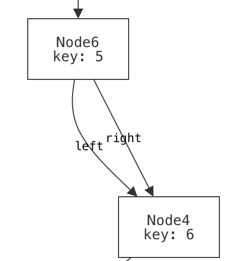
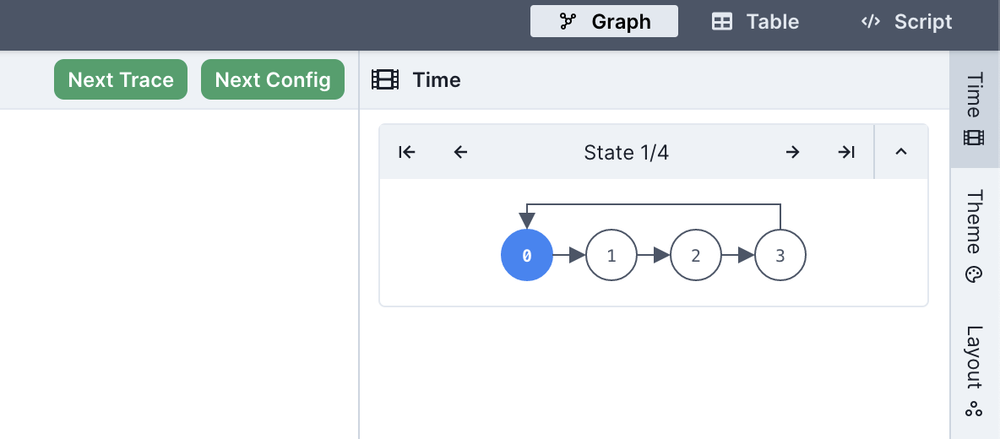
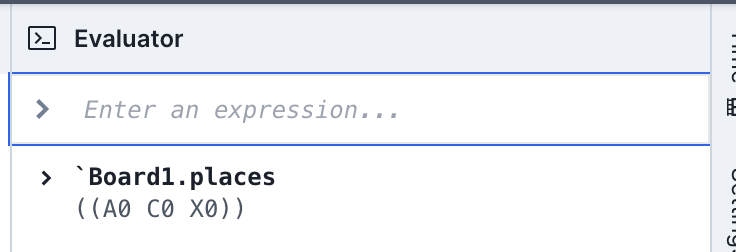
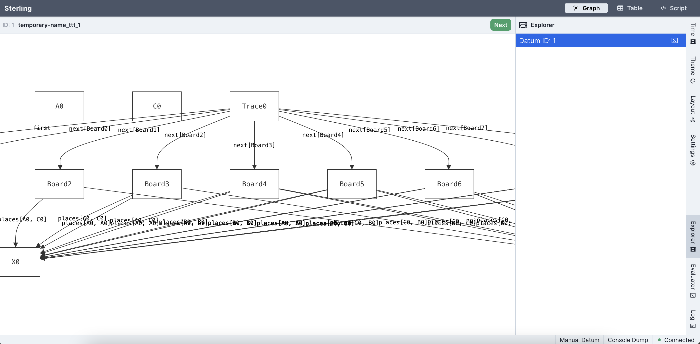
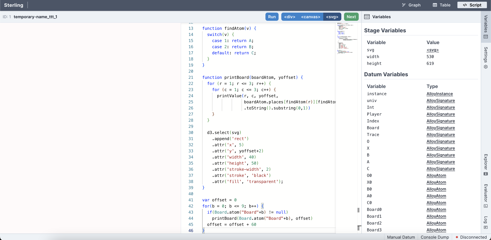
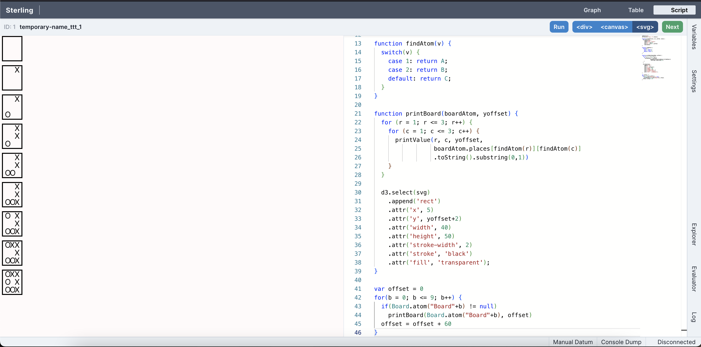
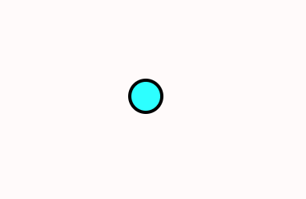
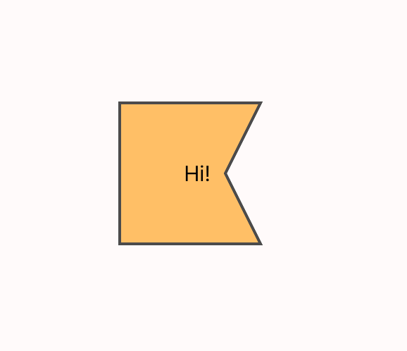

How To Read This Book
Welcome to Logic for Systems! Here are some quick hints that will help you use this book effectively.
This book is a draft, and there are some sections that are currently being filled in. If you want to use these materials and need support (e.g., you want to use the Forge homeworks that go with it, or a specific section you need is incomplete), please contact Tim_Nelson@brown.edu.
Organization
The book is organized into a series of short sections, each of which are grouped into chapters:
- Chapter 1 (Beyond Testing) briefly motivates the content in this book and sets the stage with a new technique for testing your software.
- Chapter 2 (Modeling Static Scenarios) provides an introduction to modeling systems in Forge by focusing on systems that don't change over time.
- Chapter 3 (Discrete Event Systems) shows a common way to model the state of a system changing over time.
- Chapter 4 (Modeling Relationships) enriches the modeling language to support arbitrary relations between objects in the world.
- Chapter 5 (Temporal Specification) covers temporal operators, which are commonly used in industrial modeling and specification, and how to use them.
- Chapter 6 (Case Studies) touches on some larger applications of lightweight formal methods. Some of these will involve large models written in Forge, and others will lean more heavily on industrial systems.
- The Forge Documentation, which covers the syntax of the language more concisely and isn't focused on teaching.
Each chapter contains a variety of examples: data structures, puzzles, algorithms, hardware concepts, etc. We hope that the diversity of domains covered means that everyone will see an example that resonates with them. Full language and tool documentation come after the main body of the book.
What does this book assume? What is its goal?
This book does not assume any prior background with formal methods or even discrete math. It does assume the reader has written programs before at the level of an introductory college course.
The goal of this chapter progression is to prepare the reader to formally model and reason about a domain of their own choosing in Forge (or perhaps in a related tool, such as an SMT solver).
With that in mind...
Do More Than Read
This book is example driven, and the examples are almost always built up from the beginning. The flow of the examples is deliberate, and might even take a "wrong turn" that is meant to teach a specific lesson before changing direction. If you try to read the book passively, you're likely to be very disappointed. Worse, you may not actually be able to do much with the material after reading.
Instead, follow along, pasting each snippet of code or Forge model into the appropriate tool, and try it! Better yet, try modifying it and see what happens. You'll get much more out of each section as a result. Forge especially is designed to aid experimentation. Let your motto be:
Navigating the Book Site
With JavaScript enabled, the table of contents (to the left, by default) will allow you to select a specific section of this book. Likewise, the search bar (enabled via the "Toggle Searchbar" icon) should allow you to search for arbitrary alphanumeric phrases in the full text; unfortunately, non alphanumeric operators are not supported by search at present.
The three buttons for popping out the table of contents, changing the color theme, and searching are in the upper-left corner of this page, by default. If you do not see them, please ensure that JavaScript is enabled.
The table of contents for the Forge documentation is expandable. Once it is open, click the ❱ icons to expand individual sections and subsections to browse more easily!
To change the color theme of the page, click this button:
To search, click this button:
Callout Boxes
Callout boxes can give valuable warnings, helpful hints, and other supplemental information. They are color- and symbol-coded depending on the type of information. For example:
If you see a callout labeled "CSCI 1710", it means that it's specifically for students in Brown University's CSCI 1710 course, Logic for Systems.
Exercises
Every now and then, you'll find question prompts, followed by a clickable header that looks like this:
Think, then click!
SPOILER TEXT
If you click the arrow, it will expand to show hidden text, often revealing an answer or some other piece of information that is meant to be read after you've thought about the question. When you see these exercises, don't skip past them, and don't just read the hidden text.
Our Value Proposition
Everybody has endless demands on their time. If you're a student, you might be deciding which classes to take. There's never enough time to take them all, so you need to prioritize based on expected value. If you're a professional, you're deciding how to best use your limited "free" time to learn new skills and stay current. Either way, you're probably wondering: What good is this book? (And if you aren't asking that, you ought to be.)
You need many different skills for a successful career. This book won't teach you how to work with other people, or manage your tasks, or give and receive feedback. It won't teach you to program either; there are plenty of other books for that. Instead, this book will teach you:
- how to think more richly about what matters about a system;
- how to better express what you want from it;
- how to more thoroughly evaluate what a system actually does give you; and
- how to use constraints and constraint solvers in your work (because we'll use them as tools to help us out). It will also give you a set of baseline skills that will aid you in using any further formal-methods techniques you might encounter in your work, such as advanced type systems, program verification, theorem proving, and more.
Modeling: What really matters?
There's a useful maxim by George Box: "All models are wrong, but some are useful". The only completely accurate model of a system is that system itself, including all of its real external context. This is impractical; instead, a modeler needs to make choices about what really matters to them: what do you keep, and what do you disregard? Done well, a model gets at the essence of a system. Done poorly, a model yields nothing useful or, worse, gives a false sense of security.
I suspect that people were saying "All models are wrong" long before Box did! But it's worth reading this quote of his from 1978, and thinking about the implications.
Now it would be very remarkable if any system existing in the real world could be exactly represented by any simple model. However, cunningly chosen parsimonious models often do provide remarkably useful approximations. For example, the law relating pressure , volume and temperature of an "ideal" gas via a constant is not exactly true for any real gas, but it frequently provides a useful approximation and furthermore its structure is informative since it springs from a physical view of the behavior of gas molecules. For such a model there is no need to ask the question "Is the model true?". If "truth" is to be the "whole truth" the answer must be "No". The only question of interest is "Is the model illuminating and useful?".
(Bolding mine.) TODO: check quote text, Wiki link does not lead to a readable paper.
If you want to do software (or hardware) engineering, some amount of modeling is unavoidable. Here are two basic examples of many.
Data Models Everywhere
You might already have benefitted from a good model (or suffered from a poor one) in your programming work. Whenever you write data definitions or class declarations in a program, you're modeling. The ground truth of the data is rarely identical to its representation. You decide on a particular way that it should be stored, transformed, and accessed. You say how one piece of data relates to another.
Your data-modeling choices affect more than just execution speed: if a pizza order can't have a delivery address that is separate from the user's billing address, important user needs will be neglected. On the other hand, it is probably OK to leave the choice of cardboard box out of the user-facing order. An order has a delivery time, which probably comes with a time zone. You could model the time zone as an integer offset from UTC, but this is a very bad idea. And, since there are 24 hours in a day, the real world imposes range limits: a timezone that's a million hours ahead of UTC is probably a buggy value, even though the value 1000000 is much smaller than even a signed 32-bit int can represent.
Data vs. Its Representation
The level of abstraction matters, too. Suppose that your app scans handwritten orders. Then handwriting becomes pixels, which are converted into an instance of your data model, which is implemented as bytes, which are stored in hardware flip-flops and so on. You probably don't need, or want, to keep all those perspectives in mind simultaneously. Languages are valuable in part because of the abstractions they foster, even if those abstractions are incomplete—they can be usefully incomplete! What matters is whether the abstraction level suits your needs, and your users'.
I learned to program in the 1990s, when practitioners were at odds over automated vs. manual memory management. It was often claimed that a programmer needed to really understand what was happening at the hardware level, and manually control memory allocation and deallocation for the sake of performance. Most of us don't think that anymore, unless we need to! Sometimes we do; often we don't. Focus your attention on what matters for the task at hand.
The examples don't stop: In security, a threat model says what powers an attacker has. In robotics and AI, reinforcement learning works over a probabilistic model of real space. And so on. The key is: what matters for your needs? Box had something to say about that, too:
Since all models are wrong the scientist must be alert to what is importantly wrong. It is inappropriate to be concerned about safety from mice when there are tigers abroad.
TODO: add citation
Specification: What do you want?
Suppose that I want to store date-and-time values in a computer program. That's easy enough to say, right? But the devil is in the details: What is the layout of the data? Which fields will be stored, and which will be omitted? Which values are valid, and which are out of bounds? Is the format efficiently serializable? How far backward in time should the format extend, and how far into the future should it reach?
And which calendar are we using, anyway?
If our programs are meant to work with dates prior to the 1600's, only their historical context can say whether they should be interpreted with the Gregorian calendar or the Julian calendar. And that's just two (Eurocentric) possibilities!
If you're just building a food delivery app, you probably only need to think about some of these aspects of dates and times. If you're defining an international standard, you need to think about them all.
Either way, being able to think carefully about your specification can separate quiet success from famous failure.
Validation and Verification: Did you get what you wanted?
Whether you're working out an algorithm on paper or checking a finished implementation, you need some means of judging correctness. Here, too, precision (and a little bit of adversarial thinking) matters in industry:
- When ordinary testing isn't good enough, techniques like fuzzing, property-based testing, and others give you new evaluative power.
- When you're updating, refactoring, or optimizing a system, a model of its ideal behavior can be leveraged for validation. Here's an example from 2014—click through the header of the linked article to read the original blog post.)
- A model of the system's behavior is also useful for test-case generation, and enable tools to generate test suites that have a higher coverage of the potential state space.
And all that's even before we consider more heavyweight methods, like model checking and program verification.
Formalism Isn't Absolute
The word "formal" has accumulated some unfortunate connotations: pedantry, stuffiness, ivory-tower snootiness, being an architecture astronaut, etc. The truth is that formalism is a sliding scale. We can take what we need and leave the rest. What really matters is the ability to precisely express your goals, and the ability to take advantage of that precision.
In fact, formalism powers many software tools that help us to reason about the systems we create. In the next section, we'll start sketching what that means for us as engineers and humans.
Logic for Systems
Setting the Stage
If you're reading this book, you've probably had to complete some programming assignments—or at least written some small program for a course or an online tutorial. Take a moment to list a handful of such assignments: what did you have to build?
Now ask yourself:
- How did you know what behavior to implement?
- How did you know which data structures or algorithms were the right ones to use?
- How did you know your program "worked", in the end?
In the context of assignments, there are expected answers to these questions. For instance, you might say you know your code worked because you tested it (very thoroughly, I'm sure)! But is that really the truth? In terms of consequences, the true bar for excellence in a programming class is the grade you got. That is:
- You knew what to do because you were told what to do.
- You probably knew which algorithms to use because they'd just been taught to you.
- You were confident that your programs worked because you were told by an authority figure.
But outside that context, as (say) a professional engineer, you lose the safety net. You might be working on a program that controls the fate of billions of dollars, tempers geopolitical strife, or controls a patient's insulin pump. Even if you had a TA, would you trust them to tell you that those programs worked? Would you trust your boss to understand exactly what needed to happen, and tell you exactly how to do it? Probably not! Instead, you need to think carefully about what you want, how to build it, and how to evaluate what you and others have built.
As engineers, we strive for perfection. But perfection is an ideal; it's not obtainable. Why? First: we're human. Even if we could read our customers' minds, that's no guarantee that they know what they really need. And even if we can prove our code is correct, we might be checking for the wrong things. Second: our environment is hostile. Computers break. Patches to dependencies introduce errors. Cosmic radiation can flip bits in memory. 100% reliability is hopeless. Anyone who tells you differently is trying to sell you something.
But that doesn't mean we should give up. It just means that we should moderate our expectations. Instead of focusing on perfect correctness, instead try to increase your confidence in correctness.
Unit Testing
Hopefully we all agree that unit testing with concrete input-output pairs has its virtues and that we should keep doing it. But let's investigate what it does and doesn't do well.
Exercise: Make two lists: What does unit testing do well? What doesn't it do well? (Hint: Why do we test? What could go wrong, and how can the sort of testing you've done in other classes let us down?)
Think, then click!
You might have observed that (for most interesting programs, anyway) tests cannot be exhaustive because there are infinitely many possible inputs. And since we're forced to test non-exhaustively, we have to hope we pick good tests---tests that not only focus on our own implementation, but on others (like the implementation that replaces yours eventually) too.
Worse, we can't test the things we don't think of, or don't know about; we're vulnerable to our limited knowledge, the availability heuristic, confirmation bias, and so on. In fact, we humans are generally ill equipped for logical reasoning, even if trained.
Humans and Reasoning
A Toy Example
Suppose we're thinking about the workings of a small company. We're given some facts about the company, and have to answer a question based on those facts. Here's an example. We know that:
- Alice directly supervises Bob.
- Bob directly supervises Charlie.
- Alice graduated Brown.
- Charlie graduated Harvale.
To keep things simple, we'll assume that all three people graduated some university.
Exercise: Does someone who graduated from Brown directly supervise someone who graduated from another University?
Think, then click.
Yes! Regardless of whether Bob graduated from Brown, some Brown graduate supervises some non-Brown graduate. Reasoning by hypotheticals, there is one fact we don't know: where Bob graduated. In case he graduated Brown, he supervises Charlie, a non-Brown graduate. In case he graduated from another school, he's supervised by Alice, a Brown graduate.
Humans tend to be very bad at reasoning by hypotheticals. There's a temptation to think that this puzzle isn't solvable because we don't know where Bob graduated from. Even Tim thought this at first after seeing the puzzle—in grad school! For logic!
Now imagine a puzzle with a thousand of these unknowns. A thousand boolean variables means cases to reason through. Want to use a computer yet?
This isn't really about logic puzzles.
A Real Scenario
There's a real cryptographic protocol called the Needham-Schroeder public-key protocol. You can read about it here. Unfortunately the protocol has a bug: it's vulnerable to attack if one of the principles can be fooled into starting an exchange with a badly-behaved or compromised agent. We won't go into specifics. Instead, let's focus on the fact that it's quite easy to get things like protocols wrong, and sometimes challenging for us humans to completely explore all possible behaviors -- especially since there might be behaviors we'd never even considered! It sure would be nice if we could get a computer to help out with that.
A pair of former 1710 students did an ISP on modeling crypto protocols, using the tools you'll learn in class. Here's an example picture, generated by their model, of the flaw in the Needham-Schroeder protocol:

You don't need to understand the specifics of the visualization; the point is that someone who has studied crypto protocols would. And this really does show the classic attack on Needham-Schroeder. You may not be a crypto-protocol person, but you probably are an expert in something subtle that you'd like to model, reason about, and understand better.
In fact, if you're reading this as part of your coursework for CSCI 1710, you will be expected to select, research, and model something yourself based on your interests. This is one of our main end-goals for the course.
Automated Reasoning as an Assistive Device
The human species has been so successful, in part, because of our ability to use assistive devices—tools! Eyeglasses, bicycles, hammers, bridges: all devices that assist us in navigating the world in our fragile meat-bodies. One of our oldest inventions, writing, is an assistive device that increases our long-term memory space and makes that memory persistent. Computers are only one in a long line of such inventions.
So, naturally, we've found ways to:
- use computers to help us test our ideas;
- use computers to exhaustively check program correctness;
- use computers to help us find gaps in our intuition about a program;
- use computers to help us explore the design space of a data structure, or algorithm, card game, or chemical reaction;
- etc.
There's a large body of work in Computer Science that uses logic to do all those things. We tend to call it formal methods, especially when the focus is on reasoning about systems. It touches on topics like system modeling, constraint solving, program analysis, design exploration, and more. That's what this book is about: the foundational knowledge to engage with many different applications of these ideas, even if you don't end up working with them directly every day.
More concretely, we'll focus on a class of techniques called lightweight formal methods, which are characterized by tradeoffs that favor ease of use over strong guarantees (although we'll sometimes achieve those as well).
Jeanette Wing and Daniel Jackson wrote a short article coining the term "lightweight FM" in the 90's, which you can find online.
When we say "systems" in this book we don't necessarily mean the kind of systems you see in a class on networks, hardware architecture, or operating systems. You can apply the techniques in this book to those subjects quite naturally, but you can also apply it to user interfaces, type systems in programming, hardware, version control systems like Git, web security, cryptographic protocols, robotics, puzzles, sports and games, and much more. So we construe the word "system" very broadly.
Here are some examples of "systems" that students have modeled in Forge: lifetimes in Rust, network reachability, and poker!


The Future of Computing
For better or worse, The shape of engineering is changing. Lots of people are excited, scared, or both about large language models like ChatGPT. This book won't teach you how to use generative AI, so it's reasonable to wonder: why learn from this book, instead of reading yet another book on another (deservedly) hot topic, like machine learning?
There are two questions that will never go out of style, and won't be answered by AI (at least, not in our lifetimes):
- What do you want to build? What does your customer really need? Answering this requires talking to them and other stakeholders, watching their processes, seeking their feedback, and adjusting your design based on it. And no matter who (or what) is writing the actual code, you need to be able to express all this precisely enough that they (or it) can succeed at the implementation.
- How will you evaluate what you get? No matter who (or what) is building the system, verification is needed before the system can be trusted.
Even setting aside the customer-facing aspects, we'll still need to think critically about what it is we want and how to evaluate whether we're getting it. The skills you learn here will remain useful (or become even more so) as engineering evolves. In the next chapter, we'll try to convince you that these skills will be useful for more than just code.
"Formal Methods"
Formal methods (FM) are ways to help you think carefully about a domain, process, or system. They use math-based techniques (which are usually implemented in tools) to help. They aren't an academic exercise; they are used widely in industry and have likely saved billions of dollars and thousands of lives.
Some industrial examples I'm fond of include:
- Amazon Web Services' Zelkova, which helps administrators author better security policies for their services. This book will give you the tools to build a policy-analysis system like Zelkova yourself.
- Microsoft's static driver verifier, which helps increase the reliability of low-level device drivers in Windows. While this book doesn't cover the techniques they used, I love to showcase this work (which helped Microsoft ship more stable drivers and, at this point, is now decades old).
- MongoDB's work on modeling replication, which found a real bug in their code. Quoting the linked page: "We've never encountered this issue in testing or in the field and only found it by reasoning about the edge cases. This shows writing and model checking ... specs is an excellent alternative way to find and verify edge cases." (Ellipsis mine.) We won't use this exact tool, but we'll cover other model checkers in this book.
We can find real applications for FM outside Computer Science too---even the law. Here's an article about the value of modeling legal concepts to find loopholes in the law. This is the sort of FM we'll be learning how to do in 1710.
This Github repository keeps a (reasonably up to date, but not exhaustive!) list of other industrial applications of formal methods. Check it out!
Exercise
Can you think of one or two domains, systems, or processes that especially interest you? Think about the kinds of "system" you interact with regularly or have learned about in your life. What would you like to understand better about those systems?
Remember that we construe the word system broadly. A cryptographic protocol is a system, but so is the game of baseball. A data structure is a system, but so are chemical reactions.
Looking Ahead: Tools
The main tool we'll use in this book is Forge, a tool for modeling systems. In the course of the book, we'll be progressing through three language levels in Forge:
- Froglet, which restricts the set of operations so that we can jump right in more easily. If you have intuitions about object-oriented programming, those intuitions will be useful in Froglet, although there are a few important differences that we'll talk about.
- Relational Forge, which expands the set of operations available to include sets, relations, and relational operators. These are useful for reasoning about complex relationships between objects and for representing certain domains, like databases or graphs.
- Temporal Forge, which helps us cleanly model how a system's state evolves over time. Temporal Forge is based on the industry-standard specification language LTL—Linear Temporal Logic.
We'll also use some other tools, like:
- Hypothesis, a testing library for Python; and
- Z3, an SMT solver library.
From Tests to Properties
We'll talk about more than just software soon. For now, let's go back to testing. Most of us have learned how to write test cases. Given an input, here's the output to expect. Tests are a kind of pointwise specification; a partial one, and not great for fully describing what you want, but a kind of specification nonetheless. They're cheap, non-trivially useful, and better than nothing.
But they also carry our biases, they can't cover an infinite input space, etc. Even more, they're not always adequate carriers of intent: if I am writing a program to compute the statistical median of a dataset, and write assert median([1,2,3]) == 2, what exactly is the behavior of the system I'm trying to confirm? Surely I'm not writing the test because I care specifically about [1,2,3] only, and not about [3,4,5] in the same way? Maybe there was some broader aspect, some property of median I cared about when I wrote that test.
Exercise: What do you think it was? What makes an implementation of median correct?
Think, then click!
There might be many things! One particular idea is that, if the input list has odd length, the median needs to be an element of the list. Or that, once the set is sorted, the median should be the "middle" element.
There isn't always an easy-to-extract property for every unit test. But this idea—encoding goals instead of specific behaviors—forces us to start thinking critically about what exactly we want from a system and helps us to express it in a way that others (including, perhaps, LLMs) can better use. It's only a short hop from there to some of the real applications we talked about last time, like verifying firewalls or modeling the Java type system.
Sometimes the input space is small enough that exhaustive testing works well. This blog post, entitled "There are only four billion floats" is an example.
Depending on your experience, this may also be a different kind from testing from what you're used to. Building a repertoire of different tools is essential for any engineer!
A New Kind of Testing
Cheapest Paths
Consider the problem of finding cheapest paths in a weighted graph. There are quite a few algorithms you might use: Dijkstra, Bellman-Ford, even a plain breadth-first search for an unweighted graph. You might have implemented one of these for another class!
The problem statement seems simple: take a graph and two vertex names and as input. Produce the cheapest path from to in . But it turns out that this problem hides a lurking issue.
Exercise: Find the cheapest path from vertex to vertex on the graph below.

Think, then click!
The path is G to A to B to E.Great! We have the answer. Now we can go and add a test case for with that graph as input and (G, A, B, E) as the output.
Wait -- you found a different path? G to D to B to E?
And another path? G to H to F to E?
If we add a traditional test case corresponding to one of the correct answers, our test suite will falsely raise alarms for correct implementations that happen to find different answers. In short, we'll be over-fitting our tests to @italic{one specific implementation}: ours. But there's a fix. Maybe instead of writing:
shortest(GRAPH, G, E) == [(G, A), (A, B), (B, E)]
we write:
shortest(GRAPH, G, E) == [(G, A), (A, B), (B, E)] or
shortest(GRAPH, G, E) == [(G, D), (D, B), (B, E)] or
shortest(GRAPH, G, E) == [(G, H), (H, F), (F, E)]
Exercise: What's wrong with the "big or" strategy? Can you think of a graph where it'd be unwise to try to do this?
Think, then click!
There are at least two problems. First, we might have missed some possible solutions, which is quite easy to do; the first time Tim was preparing these notes, he missed the third path above! Second, there might be an unmanageable number of equally correct solutions. The most pathological case might be something like a graph with all possible edges present, all of which have weight zero. Then, every path is cheapest.
This problem -- multiple correct answers -- occurs in every part of Computer Science. Once you're looking for it, you can't stop seeing it. Most graph problems exhibit it. Worse, so do most optimization problems. Unique solutions are convenient, but the universe isn't built for our convenience.
Exercise: What's the solution? If test cases won't work, is there an alternative? (Hint: instead of defining correctness bottom-up, by small test cases, think top-down: can we say what it means for an implementation to be correct, at a high level?)
Think, then click!
In the cheapest-path case, we can notice that the costs of all cheapest paths are the same. This enables us to write:
cost(cheapest(GRAPH, G, E)) = 11
which is now robust against multiple implementations of cheapest.
This might be something you were taught to do when implementing cheapest-path algorithms, or it might be something you did on your own, unconsciously. (You might also have been told to ignore this problem, or not told about it at all...) We're not going to stop there, however.
Notice that we just did something subtle and interesting. Even if there are a billion cheapest paths between two vertices in the input graph, they all have that same, minimal length. Our testing strategy has just evolved past naming specific values of output to checking broader properties of output.
Similarly, we can move past specific inputs: randomly generate them. Then, write a function is_valid that takes an arbitrary input, output pair and returns true if and only if the output is a valid solution for the input. Just pipe in a bunch of inputs, and the function will try them all. You can apply this strategy to most any problem, in any programming language. (For your homework this week, you'll be using Python.) Let's be more careful, though.
Exercise: Is there something else that cheapest needs to guarantee for that input, beyond finding a path with the same cost as our solution?
Think, then click!
We also need to confirm that the path returned by cheapest is indeed a path in the graph!
Exercise: Now take that list of goals, and see if you can outline a function that tests for it. Remember that the function should take the problem input (in this case, a graph and the source and destination vertices) and the output (in this case, a path). You might generate something like this pseudocode:
Think, then click!
isValid : input: (graph, vertex, vertex), output: list(vertex) -> bool
returns true IFF:
(1) output.cost == trustedImplementation(input).cost
(2) every vertex in output is in input's graph
(3) every step in output is an edge in input
... and so on ...
This style of testing is called Property-Based Testing (PBT). When we're using a trusted implementation—or some other artifact—to either evaluate the output or to help generate useful inputs, it is also a variety of Model-Based Testing (MBT).
There's a lot of techniques under the umbrella of MBT. A model can be another program, a formal specification, or some other type of artifact that we can "run". Often, MBT is used in a more stateful way: to generate sequences of user interactions that drive the system into interesting states.
For now, know that modeling systems can be helpful in generating good tests, in addition to everything else.
There are a few questions, though...
Question: Can we really trust a "trusted" implementation?
No, not completely. It's impossible to reach a hundred percent trust; anybody who tells you otherwise is selling something. Even if you spend years creating a correct-by-construction system, there could be a bug in (say) how it is deployed or connected to other systems.
But often, questions of correctness are really about the transfer of confidence: my old, slow implementation has worked for a couple of years now, and it's probably mostly right. I don't trust my new, optimized implementation at all: maybe it uses an obscure data structure, or a language I'm not familiar with, or maybe I don't even have access to the source code at all.
And anyway, often we don't need recourse to any trusted model; we can just phrase the properties directly.
Exercise: What if we don't have a trusted implementation?
Think, then click!
You can use this approach whenever you can write a function that checks the correctness of a given output. It doesn't need to use an existing implementation (it's just easier to talk about that way). In the next example we won't use a trusted implementation at all!
Input Generation
Now you might wonder: Where do the inputs come from?
Great question! Some we will manually create based on our own cleverness and understanding of the problem. Others, we'll generate randomly.
Random inputs are used for many purposes in software engineering: "fuzz testing", for instance, creates vast quantities of random inputs in an attempt to find crashes and other serious errors. We'll use that same idea here, except that our notion of correctness is usually a bit more nuanced.
Concretely:

It's important to note that some creativity is still involved here: you need to come up with an is_valid function (the "property"), and you'll almost always want to create some hand-crafted inputs (don't trust a random generator to find the subtle corner cases you already know about!) The strength of this approach lies in its resilience against problems with multiple correct answers, and in its ability to mine for bugs while you sleep. Did your random testing find a bug? Fix it, and then add that input to your list of regression tests. Rinse, repeat.
If we were still thinking in terms of traditional test cases, this would make no sense: where would the outputs come from? Instead, we've created a testing system where concrete outputs aren't something we need to provide. Instead, we check whether the program under test produces any valid output.
The Hypothesis Library
There are PBT libraries for most every popular language. In this book, we'll be using a library for Python called Hypothesis. Hypothesis has many helper functions to make generating random inputs relatively easy. It's worth spending a little time stepping through the library. Let's test a function in Python itself: the median function in the statistics library, which we began this chapter with. What are some important properties of median?
If you're in CSCI 1710, your first homework starts by asking you to generate code using an LLM of your choice, such as ChatGPT. Then, you'll use property-based testing to assess its correctness. To be clear, you will not be graded on the correctness of the code you prompt an LLM to generate. Rather, you will be graded on how good your property-based testing is.
Later in the semester, you'll be using PBT again to test more complex software!
Now let's use Hypothesis to test at least one of those properties. We'll start with this template:
from hypothesis import given, settings
from hypothesis.strategies import integers, lists
from statistics import median
# Tell Hypothesis: inputs for the following function are non-empty lists of integers
@given(lists(integers(), min_size=1))
# Tell Hypothesis: run up to 500 random inputs
@settings(max_examples=500)
def test_python_median(input_list):
pass
# Because of how Python's imports work, this if statement is needed to prevent
# the test function from running whenever a module imports this one. This is a
# common feature in Python modules that are meant to be run as scripts.
if __name__ == "__main__": # ...if this is the main module, then...
test_python_median()
Let's start by filling in the shape of the property-based test case:
def test_python_median(input_list):
output_median = median(input_list) # call the implementation under test
print(f'{input_list} -> {output_median}') # for debugging our property function
if len(input_list) % 2 == 1:
assert output_median in input_list
# The above checks a conditional property. But what if the list length isn't even?
# We should be able to do better!
Exercise: Take a moment to try to express what it means for median to be correct in the language of your choice. Then continue on with reading this section.
Expressing properties can often be challenging. After some back and forth, we might reach a candidate function like this:
def test_python_median(input_list):
output_median = median(input_list)
print(f'{input_list} -> {output_median}')
if len(input_list) % 2 == 1:
assert output_median in input_list
lower_or_eq = [val for val in input_list if val <= output_median]
higher_or_eq = [val for val in input_list if val >= output_median]
assert len(lower_or_eq) >= len(input_list) // 2 # int division, drops decimal part
assert len(higher_or_eq) >= len(input_list) // 2 # int division, drops decimal part
Unfortunately, there's a problem with this solution. Python's median implementation fails this test! Hypothesis provides a random input on which the function fails: input_list=[9502318016360823, 9502318016360823]. Give it a try! This is what my computer produced; what happens on yours?
Exercise: What do you think is going wrong?
Think, then click!
Here's what my Python console reports:
>>> statistics.median([9502318016360823, 9502318016360823])
9502318016360824.0
I really don't like seeing a number that's larger than both numbers in the input set. But I'm also suspicious of that trailing .0. median has returned a float, not an int. That might matter. But first, we'll try the computation that we might expect median to run:
>>> (9502318016360823*2)/2
9502318016360824.0
What if we force Python to perform integer division?
>>> (9502318016360823*2)//2
9502318016360823
Could this be a floating-point imprecision problem? Let's see if Hypothesis can find another failing input where the values are smaller. We'll change the generator to produce only small numbers, and increase the number of trials hundredfold:
@given(lists(integers(min_value=-1000,max_value=1000), min_size=1))
@settings(max_examples=50000)
No error manifests. That doesn't mean one couldn't, but it sure looks like large numbers make the chance of an error much higher.
The issue is: because Python's statistics.median returns a float, we've inadvertently been testing the accuracy of Python's primitive floating-point division, and floating-point division is known to be imprecise in some cases. It might even manifest differently on different hardware—this is only what happens on my laptop!
Anyway, we have two or three potential fixes:
- bound the range of potential input values when we test;
- check equality within some small amount of error you're willing to tolerate (a common trick when writing tests about
floatvalues); or - change libraries to one that uses an arbitrary-precision, like BigNumber. We could adapt our test fairly easily to that setting, and we'd expect this problem to not occur.
Which is best? I don't really like the idea of arbitrarily limiting the range of input values here, because picking a range would require me to understand the floating-point arithmetic specification a lot more than I do. For instance, how do I know that there exists some number before which this issue can't manifest? How do I know that all processor architectures would produce the same thing?
Between the other two options (adding an error term and changing libraries) it depends on the engineering context we're working in. Changing libraries may have consequences for performance or system design. Testing equality within some small window may be the best option in this case, where we know that many inputs will involve float division.
Takeaways
We'll close this section by noticing two things:
First, being precise about what correctness means is powerful. With ordinary unit tests, we're able to think about behavior only point-wise. Here, we need to broadly describe our goals, and tere's a cost to that, but also advantages: comprehensibility, more powerful testing, better coverage, etc. And we can still get value from a partial definition, because we can then at least apply PBT to that portion of the program's behavior.
Second, the very act of trying to precisely express, and test, correctness for median taught us (or reminded us about) something subtle about how our programming language works, which tightened our definition of correctness. Modeling often leads to such a virtuous cycle.
Intro to Modeling Systems (Part 1: Tic-Tac-Toe)
What's a Model?
A model is a representation of a system that faithfully includes some but not all of the system's complexity. There are many different ways to model a system, all of which have different advantages and disadvantages. Think about what a car company does before it produces a new car design. Among other things, it creates multiple models. E.g.,
- it models the car in some computer-aided design tool; and then
- creates a physical model of the car, perhaps with clay, for testing in wind tunnels etc.
There may be many different models of a system, all of them focused on something different. As the statisticians say, "all models are wrong, but some models are useful". Learning how to model a system is a key skill for engineers, not just within "formal methods". Abstraction is one of the key tools in Computer Science, and modeling lies at the heart of abstraction.
In this course, the models we build aren't inert; we have tools that we can use the explore and analyze them!
Don't Be Afraid of Imperfect Representations
We don't need to fully model a system to be able to make useful inferences. We can simplify, omit, and abstract concepts/attributes to make models that approximate the system while preserving the fundamentals that we're interested in.
Exercise: If you've studied physics, there's a great example of this in statics and dynamics. Suppose I drop a coin from the top of the science library, and ask you what its velocity will be when it hits the ground. Using the methods you learn in beginning physics, what's something you usefully disregard?
Think, then click!
Air resistance! Friction! We can still get a reasonable approximation for many problems without needing to include that. (And advanced physics adds even more factors that aren't worth considering at this scale.) The model without friction is often enough.
What is a "System"? (Models vs. Implementations)
When we say "systems" in this book, we mean the term broadly. A distributed system (like replication in MongoDB) is a system, but so are user interfaces and hardware devices like CPUs and insulin pumps. Git is a system for version control. The web stack, cryptographic protocols, chemical reactions, the rules of sports and games—these are all systems too!
To help build intuition, let's work with a simple system: the game of tic-tac-toe (also called noughts and crosses). There are many implementations of this game, including this one that I wrote in Python. And, of course, these implementations often have corresponding test suites, like this (incomplete) example.
Exercise: Play a quick game of tic-tac-toe by hand. If you can, find a partner, but if not, then play by yourself.
Notice what just happened. You played the game. In doing so, you ran your own mental implementation of the rules. The result you got was one of many possible games, each with its own specific sequence of legal moves, leading to a particular ending state. Maybe someone won, or maybe the game was a tie. Either way, many different games could have ended with that same board.
Modeling is different from programming. When you're programming traditionally, you give the computer a set of instructions and it follows them. This is true whether you're programming functionally or imperatively, with or without objects, etc. Declarative modeling languages like Forge work differently. The goal of a model isn't to run instructions, but rather to describe the rules that govern systems.
Here's a useful comparison to help reinforce the difference (with thanks to Daniel Jackson):
- An empty program does nothing.
- An empty model allows every behavior.
Modeling Tic-Tac-Toe Boards
What are the essential concepts in a game of tic-tac-toe?
When we're first writing a model, we'll start with 5 steps. For each step, I'll give examples from tic-tac-toe and also for binary search trees (which we'll start modeling soon) for contrast.
- What are the datatypes involved, and their fields?
- For tic-tac-toe: they might be the 3-by-3 board and the
XandOmarks that go in board locations. - For a binary search tree: they might be the tree nodes and their left and right children.
- For tic-tac-toe: they might be the 3-by-3 board and the
- What makes an instance of these datatypes well formed? That is, what conditions are needed for them to not be garbage?
- For tic-tac-toe, we might require that the indexes used are between
0and2, since the board is 3-by-3. (We could just as easily use1,2, and3. I picked0as the starting point out of habit, because list indexes start from0in the programming languages I tend to use.) - For a binary search tree, we might require that every node has at most one left child, at most one right child, a unique parent, and so on.
- For tic-tac-toe, we might require that the indexes used are between
- What's a small example of how these datatypes can be instantiated?
- For tic-tac-toe, the empty board would be an example. So would the board where
Xmoves first into the middle square. - For a binary search tree, this might be a tree with only one node, or a 3-node tree where the root's left and right children are leaves.
- For tic-tac-toe, the empty board would be an example. So would the board where
- What does the model look like when run?
- For tic-tac-toe, we should see a board with some number of
XandOmarks. - For a binary search tree, we should see some set of nodes that forms a single tree via left- and right-children.
- For tic-tac-toe, we should see a board with some number of
- What domain predicates are there? Well-formedness defines conditions that are needed for an instantiation to not be "garbage". But whatever we're modeling surely has domain-specific concepts of its own, which may or may not hold.
- For tic-tac-toe, we care a great deal if the board is a winning board or not. Similarly, we might care if it looks like someone has cheated.
- For a binary search tree, we care if the tree is balanced, or if it satisfies the BST invariant.
Why make this distinction between well-formedness and domain predicates? Because one should always hold in any instance Forge considers, but the other may or may not hold. In fact, we might want to use Forge to verify that a domain predicate always holds! And if we've told Forge that any instance that doesn't satisfy it is garbage, Forge won't find us such an instance.
Datatypes
We might list:
- the players
XandO; - the 3-by-3 game board, where players can put their marks;
- the idea of whose turn it is at any given time; and
- the idea of who has won the game at any given time.
Now let's add those ideas to a model in Forge!
#lang forge/froglet
The first line of any Forge model will be a #lang line, which says which Forge language the file uses. We'll start with the Froglet language for now. Everything you learn in this language will apply in other Forge languages, so I'll use "Forge" interchangeably.
Now we need a way to talk about the noughts and crosses themselves. So let's add a sig that represents them:
#lang forge/froglet
abstract sig Player {}
one sig X, O extends Player {}
You can think of sig in Forge as declaring a kind of object. A sig can extend another, in which case we say that it is a child of its parent, and child sigs cannot overlap. When a sig is abstract, any member must also be a member of one of that sig's children; in this case, any Player must either be X or O. Finally, a one sig has exactly one member—there's only a single X and O in our model.
We also need a way to represent the game board. We have a few options here: we could create an Index sig, and encode an ordering on those (something like "column A, then column B, then column C"). Another is to use Forge's integer support. Both solutions have their pros and cons. Let's use integers, in part to get some practice with them.
#lang forge/froglet
abstract sig Player {}
one sig X, O extends Player {}
sig Board {
board: pfunc Int -> Int -> Player
}
Every Board object contains a board field describing the moves made so far. This field is a partial function, or dictionary, for every Board that maps each (Int, Int) pair to at most one Player.
Well-formedness
These definitions sketch the overall shape of a board: players, marks on the board, and so on. But not all boards that fit the definition will be valid. For example:
- Forge integers aren't true mathematical integers, but are bounded by a bitwidth we give whenever we run the tool. So we need to be careful here. We want a classical 3-by-3 board with indexes of (say)
0,1, and2, not a board where (e.g.) row-5, column-1is a valid location.
We'll call these well-formedness constraints. They aren't innately enforced by our sig declarations, but we'll almost always want Forge to enforce them, so that it doesn't find "garbage instances". Let's write a wellformedness predicate:
-- a Board is well-formed if and only if:
pred wellformed[b: Board] {
-- row and column numbers used are between 0 and 2, inclusive
all row, col: Int | {
(row < 0 or row > 2 or col < 0 or col > 2)
implies no b.board[row][col]
}
}
Forge treats either -- or // as beginning a line-level comment, and /* ... */ as denoting a block comment. This is different from the Python code we saw in the last section! In Forge, # has a different meaning.
This predicate is true of any Board if and only if the above 2 constraints are satisfied. Let's break down the syntax:
- Constraints can quantify over a domain. E.g.,
all row, col: Int | ...says that for any pair of integers (up to the given bitwidth), the following condition (...) must hold. Forge also supports, e.g., existential quantification (some), but we don't need that yet. We also have access to standard boolean operators likeor,implies, etc. - Formulas in Forge always evaluate to a boolean; expressions evaluate to sets. For example,
- the expression
b.board[row][col]evaluates to thePlayer(if any) with a mark at location (row,col) in boardb; but - the formula
no b.board[row][col]is true if and only if there is no such `Player``.
- the expression
- A
pred(predicate) in Forge is a helper function that evaluates to a boolean. Thus, its body should always be a formula.
Notice that, rather than describing a process that produces a well-formed board, or even instructions to check well-formedness, we've just given a declarative description of what's necessary and sufficient for a board to be well-formed. If we'd left the predicate body empty, any board would be considered well-formed—there'd be no formulas to enforce!
A Few Examples
Since a predicate is just a function that returns true or false, depending on its arguments and whichever instance Forge is looking at, we can write tests for it the same way we would for any other boolean-valued function. But even if we're not testing, it can be useful to write a small number of examples, so we can build intuition for what the predicate means.
In Forge, examples are automatically run whenever your model executes. They describe basic intent about a given predicate; in this case, let's write two examples in Forge:
- A board where
Xhas moved 3 times in valid locations, and so ought to be considered well formed. - A board where a player has moved in an invalid location, and shouldn't be considered well formed.
Notice that we're not making judgements about the rules being obeyed yet—just about whether our wellformed predicate is behaving the way we expect. And the wellformed predicate isn't aware of things like "taking turns" or "stop after someone has won", etc. It just knows about the valid indexes being 0, 1, and 2.
We'll write those two examples in Forge:
-- Helper to make these examples easier to write
pred all_wellformed { all b: Board | wellformed[b]}
-- all_wellformed should be _true_ for the following instance
example firstRowX_wellformed is {all_wellformed} for {
Board = `Board0 -- backquote labels specific atoms
X = `X O = `O -- examples must define all sigs
Player = X + O -- only two kinds of player
`Board0.board = (0, 0) -> `X + -- the partial function for the board's
(0, 1) -> `X + -- contents (unmentioned squares must
(0, 2) -> `X -- remain empty, because we used "=" to say
-- "here's the function for `board0")
}
-- all_wellformed should be _false_ for the following instance
example off_board_not_wellformed is {not all_wellformed} for {
Board = `Board0
X = `X O = `O
Player = X + O
`Board0.board = (-1, 0) -> `X +
(0, 1) -> `X +
(0, 2) -> `X
}
Notice that we've got a test thats a positive example and another test that's a negative example. We want to make sure to exercise both cases, or else "always true" or "always" false could pass our suite.
Running Forge
The run command tells Forge to search for an instance satisfying the given constraints:
run { some b: Board | wellformed[b]}
(If you're curious about how Forge finds solutions, you can find a brief sketch in the Q&A for this chapter.)
When we click the play button in the VSCode extension, the engine solves the constraints and produces a satisfying instance, (Because of differences across solver versions, hardware, etc., it's possible you'll see a different instance than the one shown here.) A browser window should pop up with a visualization. You can also run racket <filename.frg> in the terminal, although we recommend the VSCode extension.
If you're running on Windows, the Windows-native cmd and PowerShell terminals will not properly load Forge's visualizer. Instead, we suggest using one of many other options on Windows that we've tested and know to work: the VSCode extension (available on the VSCode Marketplace), DrRacket, Git for Windows (e.g., git bash), Windows Subsystem for Linux, or Cygwin.
There are many options for visualization. The default which loads initially is a directed-graph based one:

(TODO: make this clickable to show it bigger? Want to see the whole window, but then the graph is small.)
This isn't very useful; it looks nothing like a tic-tac-toe board! We can make more progress by using the "Table" visualization—which isn't ideal either:

Forge also allows users to make custom visualizations via short JavaScript programs; here's an example basic visualizer for this specific tic-tac-toe model that produces images like this one:

We'll talk more about visualization scripts later. For now, let's proceed. TODO: replace img with one matching the table view TODO: add side-by-side CSS
This instance contains a single board, and it has 9 entries. Player O has moved in all of them (the 0 suffix of O0 in the display is an artifact of how Forge's engine works; ignore it for now). It's worth noticing two things:
- This board doesn't look quite right: player
Ooccupies all the squares. We might ask: has playerObeen cheating? But the fact is that this board satisfies the constraints we have written so far. Forge produces it simply because our model isn't yet restrictive enough, and for no other reason. "Cheating" doesn't exist yet. - We didn't say how to find that instance. We just said what we wanted, and the tool performed some kind of search to find it. So far the objects are simple, and the constraints basic, but hopefully the power of the idea is coming into focus.
Here, we see Board3 because the solver had a few options to pick from: we never said there should only ever be one Board, after all. So, under the hood, it was considering the potential existence of multiple boards. And then it happened to pick this one to exist in this instance.
Reflection: Implementation vs. Model
So far we've just modeled boards, not full games. But we can still contrast our work here against the Python implementation of tic-tac-toe shared above.
Exercise: How do the data-structure choices, and type declarations, in the implementation compare with the essence of the game as reflected in the model? What is shared, and what is different?
Spend a minute identifying at least one commonality and at least one difference, then move on.
Domain Predicates
Now let's write predicates that describe important ideas in the domain. What's important in the game of tic-tac-toe? Here are a few things.
Starting Boards
What would it mean to be a starting state in a game? The board is empty:
pred starting[s: Board] {
all row, col: Int |
no s.board[row][col]
}
Turns
How do we tell when it's a given player's turn? It's X's turn when there are the same number of each mark on the board:
pred XTurn[s: Board] {
#{row, col: Int | s.board[row][col] = X} =
#{row, col: Int | s.board[row][col] = O}
}
Here, we're measuring the size of 2 sets. The {row, col: Int | ...} syntax is called a set comprehension. A set comprehension defines a set. We're defining the set of row-column pairs where the board contains one of the player marks. The # operator gives the size of these sets, which we then compare.
Exercise: Is it enough to say that OTurn is the negation of XTurn? That is, we could write: pred OTurn[s: Board] { not XTurn[s: Board]}. This seems reasonable enough; why might we not want to write this?
Think, then click!
Because we defined X's turn to be when the number of X's and O's on the board are in balance. So any other board would be O's turn, including ones that ought to be illegal, once we start defining moves of the game. Instead, let's say something like this:
pred OTurn[s: Board] {
-- It's O's turn if X has moved once more often than O has
#{row, col: Int | s.board[row][col] = X} =
add[#{row, col: Int | s.board[row][col] = O}, 1]
}
Forge supports arithmetic operations on integers like add. Forge integers are signed (i.e., can be positive or negative) and are bounded by a bit width, which defaults to 4 bits. The number of available integers is always $2^k$, where $k$ is the bit width.
Forge follows the 2's complement arithmetic convention, which means that the available integers are split evenly between positive and negative numbers, but counting 0 as "positive". So with 4 bits, we can represent numbers between -8 and 7 (inclusive).
This means that (while it doesn't matter for this model yet), arithmetic operations can overflow—just like primitive integers in languages like Java! For example, if we're working with 4-bit integers, then add[7,1] will be -8. You can experiment with this in the visualizer's evaluator, which we'll be using a lot after the initial modeling tour is done.
Don't try to use + for addition in any Forge language. Use add instead; this is because + is reserved for something else (which we'll explain later).
Winning the Game
What does it mean to win? A player has won on a given board if:
- they have placed their mark in all 3 columns of a row;
- they have placed their mark in all 3 rows of a column; or
- they have placed their mark in all 3 squares of a diagonal.
We'll express this in a winner predicate that takes the current board and a player name. Let's also define a couple helper predicates along the way:
pred winRow[s: Board, p: Player] {
-- note we cannot use `all` here because there are more Ints
some row: Int | {
s.board[row][0] = p
s.board[row][1] = p
s.board[row][2] = p
}
}
pred winCol[s: Board, p: Player] {
some column: Int | {
s.board[0][column] = p
s.board[1][column] = p
s.board[2][column] = p
}
}
pred winner[s: Board, p: Player] {
winRow[s, p]
or
winCol[s, p]
or
{
s.board[0][0] = p
s.board[1][1] = p
s.board[2][2] = p
} or {
s.board[0][2] = p
s.board[1][1] = p
s.board[2][0] = p
}
}
After writing these domain predicates, we're reaching a fairly complete model for a single tic-tac-toe board. Let's decide how to fix the issue we saw above (the reason why OTurn couldn't be the negation of XTurn): perhaps a player has moved too often.
Should we add something like OTurn[s] or XTurn[s] to our wellformedness predicate? No! If we then later enforced wellformedness for all boards, that would exclude "cheating" instances where a player has more moves on the board than are allowed. But this has some risk, depending on how we intend to use the wellformed predicate:
- If we were only ever generating valid boards, a cheating state might well be spurious, or at least undesirable. In that case, we might prevent such states in
wellformedand rule it out. - If we were generating arbitrary (not necessarily valid) boards, being able to see a cheating state might be useful. In that case, we'd leave it out of
wellformed. - If we're interested in verification, e.g., we are asking whether the game of Tic-Tac-Toe enables ever reaching a cheating board, we shouldn't add
not cheatingtowellformed; becausewellformedalso excludes garbage boards, we'd probably use it in our verification—in which case, Forge will never find us a counterexample!
Notice the similarity between this issue and what we do in property-based testing. Here, we're forced to distinguish between what a reasonable board is (analogous to the generator's output in PBT) and what a reasonable behavior is (analogous to the validity predicate in PBT). One narrows the scope of possible worlds to avoid true "garbage"; the other checks whether the system behaves as expected in one of those worlds.
We'll come back to this later, when we've had a bit more modeling experience. For now, let's separate our goal into a new predicate called balanced, and add it to our run command above so that Forge will find us an instance where some board is both balanced and wellformed:
pred balanced[s: Board] {
XTurn[s] or OTurn[s]
}
run { some b: Board | wellformed[b] and balanced[b]}
If we click the "Next" button a few times, we see that not all is well: we're getting boards where wellformed is violated (e.g., entries at negative rows, or multiple moves in one square). Why is this happening?
We're getting this because of how the run was phrased. We said to find an instance where some board was well-formed and valid, not one where all boards were. Our run is satisfied by any instance where at least one Board is wellformed; the others won't affect the truth of the constraint. By default, Forge will find instances with up to 4 Boards. So we can fix the problem either by telling Forge to find instances with only 1 Board:
run { some b: Board | wellformed[b] and balanced[b]}
for exactly 1 Board
or by saying that all boards must be well-formed and balanced:
run { all b: Board | wellformed[b] and balanced[b]}
Practice with run
The run command can be used to give Forge more detailed instructions for its search.
No Boards
Exercise: Is it possible for an instance with no boards to still satisfy constraints like these?
run {
all b: Board | {
-- X has won, and the board looks OK
wellformed[b]
winner[b, X]
balanced[b]
}
}
Think, then click!
Yes! There aren't any boards, so there's no obligation for anything to satisfy the constraints inside the quantifier. You can think of the all as something like a for loop in Java or the all() function in Python: it checks every Board in the instance. If there aren't any, there's nothing to check—return true.
Adding More
This addition also requires that X moved in the middle of the board:
run {
all b: Board | {
-- X has won, and the board looks OK
wellformed[b]
winner[b, X]
balanced[b]
-- X started in the middle
b.board[1][1] = X
}
} for exactly 2 Board
Notice that, because we said exactly 2 Board here, Forge must find instances containing 2 tic-tac-toe boards, and both of them must satisfy the constraints: wellformedness, X moving in the middle, etc. You could ask for a board where X hasn't won by adding not winner[b, X].
We'll come back to tic-tac-toe soon; for now, let's cover another static example.
Intro to Modeling Systems (Part 2: BSTs)
Now that we've written our first model—tic-tac-toe boards—let's switch to something a bit more serious: binary search trees. A binary search tree (BST) is a binary tree with an added property about its structure that allows it to efficiently answer many search queries related to the values it stores. Here's an example, drawn by hand:

Each node of the tree holds some value that the tree supports searching for. We'll call this value the search key, or just the key for each node. The common ancestor of every node in the tree is called the root.
This is obviously a binary tree, since it is a tree where every node has at most 2 children. What makes it a binary search tree is the invariant that every node obeys:
- all left-descendants of have a key less than 's key; and
- all right-descendants of have a key greater than or equal to 's key.
When you're first learning about binary search trees, it's easy to phrase the invariant wrong:
- the left child of (if any) has a key less than 's key; and
- the right child of (if any) has a key greater than or equal to 's key. With experience, it's straightforward to see that this is too weak; search will break. But at first that isn't so obvious. It would be interesting if we could use Forge to help us understand the difference and its impact on searching the tree.
Let's start modeling. As with programming, it's a good idea to start simple, and add complexity and optimization after. So we'll start with plain binary trees, and then add the invariant.
Like with tic-tac-toe, we'll follow this rough 5-step progression:
- define the pertinent datatypes and fields;
- define a well-formedness predicate;
- write some examples;
- run and exercise the base model;
- write domain predicates. Keep in mind that this isn't a strict "waterfall" style progression; we may return to previous steps if we discover it's necessary.
Datatypes
A binary tree is made up of nodes. Each node in the tree has at most one left child and at most one right child. While nodes in the tree can hold values of most any type, for simplicity we'll stick to integers.
Unlike in tic-tac-toe, this definition is recursive:
#lang forge/froglet
sig Node {
key: one Int, -- every node has some key
left: lone Node, -- every node has at most one left-child
right: lone Node -- every node has at most one right-child
}
Recall that a sig is a datatype, each of which may have a set of fields. Here, we're saying that there is a datatype called Node, and that every Node has a key, left, and right field.
Wellformedness for Binary Trees
What makes a binary tree a binary tree? We might start by saying that:
- it's single-tree-shaped: there are no cycles and all nodes have at most one parent node; and
- it's connected: all non-root nodes have a common ancestor.
It's sometimes useful to write domain predicates early, and then use them to define wellformedness more clearly. For example, it might be useful to write a helper that describes what it means for a node to be a root node, i.e., the common ancestor of every node in the tree:
#lang forge/froglet
sig Node {
key: one Int, -- every node has some key
left: lone Node, -- every node has at most one left-child
right: lone Node -- every node has at most one right-child
}
pred isRoot[n: Node] {
-- a node is a root if it has no ancestor
no n2: Node | n = n2.left or n = n2.right
}
Then we'll use the isRoot helper in our wellformed predicate. But to write this predicate, there's a new challenge. We'll need to express constraints like "no node can reach itself via left or right fields". So far we've only spoken of a node's immediate left or right child. Instead, we now need a way to talk about reachability over any number of left or right fields. Forge provides a helper, reachable, that makes this straightforward.
The built-in reachable predicate returns true if and only if its first argument is reachable from its second argument, via all of the remaining arguments. Thus, reachable[n1, anc, left, right] means: "anc can reach n1 via some sequence of left and right fields."
For reasons we'll explore later, reachable can be subtle; if you're curious now, see the Static Models Q&A for a discussion of this.
Using reachable, we can now write:
pred wellformed {
-- no cycles: no node can reach itself via a succession of left and right fields
all n: Node | not reachable[n, n, left, right]
-- all non-root nodes have a common ancestor from which both are reachable
-- the "disj" keyword means that n1 and n2 must be _different_
all disj n1, n2: Node | (not isRoot[n1] and not isRoot[n2]) implies {
some anc: Node | reachable[n1, anc, left, right] and
reachable[n2, anc, left, right] }
-- nodes have a unique parent (if any)
all disj n1, n2, n3: Node |
not ((n1.left = n3 or n1.right = n3) and (n2.left = n3 or n2.right = n3))
}
Write an example or two
Let's write a few examples of well-formed and non-well-formed trees. I've listed some possibilities below.
Just like with testing a program, it's not always immediately clear when to stop testing a model. Fortunately, Forge gives us the ability to explore and exercise the model more thoroughly than just running a program does. So, while we're not completely out of danger, we do have new tools to protect ourselves with.
Positive examples
A binary tree with no nodes should be considered well-formed.
example p_no_nodes is wellformed for {
no Node -- there are no nodes in the tree; it is empty
}
Drawing this one wouldn't be very interesting.
A binary tree with a single node should be considered well-formed.
example p_one_nodes is wellformed for {
Node = `Node0 -- there is exactly one node in the tree, named "Node0".
no left -- there are no left-children
no right -- there are no right-children
}
If we were going to draw the single-node example, we might draw it something like this:
In fact, this is what Forge's default visualizer can generate. Notice that the node has:
- a name or identity, which we supplied when we named it
Node0in the example; and - a value for its
keyfield, which we did not supply (and so Forge filled in). Be careful not to confuse these! There's a rough analogy to programming: it's very possible that (especially if we have a buggy program or model) there might be different nodes with the same key value.
(TODO: decide: discussion of partial vs. total examples goes where?)
A binary tree with more than one row should be considered well-formed.
example p_multi_row is wellformed for {
Node = `Node0 + -- row 0
`Node1 + `Node2 + -- row 1
`Node3 + `Node4 + `Node5 + `Node6 -- row 2
-- Define the child relationships (and lack thereof, for leaves)
-- This is a bit verbose; we'll learn more concise syntax for this soon!
`Node0.left = `Node1
`Node0.right = `Node2
`Node1.left = `Node3
`Node1.right = `Node4
`Node2.left = `Node5
`Node2.right = `Node6
no `Node3.left no `Node3.right
no `Node4.left no `Node4.right
no `Node5.left no `Node5.right
no `Node6.left no `Node6.right
}
Wait a moment; there's something strange here. What do you notice about the way we've visualized this tree?
Think, then click!
That visualization is not how we'd choose to draw the tree: it has the left field to the right and the right field to the left! This is because we used Forge's default visualizer. By default, Forge has no way to understand what "left" and "right" mean. We'll come back to this problem soon.
An unbalanced binary tree is still well-formed.
When we draw binary trees, often we draw them in a balanced way: nice and "bushy", with roughly even distribution of nodes to the left and right. But an unbalanced tree is still a tree, and we should make sure it counts as one.
example p_unbalanced_chain is wellformed for {
Node = `Node0 + `Node1 + `Node2 + `Node3
-- Form a long chain; it is still a binary tree.
`Node0.left = `Node1
no `Node0.right
`Node1.left = `Node2
no `Node1.right
`Node2.left = `Node3
no `Node2.right
no `Node3.left no `Node3.right
}
Negative examples
It's best to write some positive and negative examples. Why? Well, suppose you needed to test a method or function that returned a boolean, like checking whether an integer is even. Here's an example in Python:
def is_even(x: int) -> bool: return x % 2 == 0
What's wrong with this test suite?
assert is_even(0) == True
assert is_even(2) == True
assert is_even(10000) == True
assert is_even(-10000) == True
The problem isn't only the size of the suite! By testing only values for which we expect True to be returned, we're neglecting half the problem. We'd never catch buggy implementations like this one:
def is_even(x: int) -> bool: return True
Forge predicates are very like boolean-valued functions, so it's important to exercise them in both directions. Here are some negative examples:
A single node that is its own left-child is not well-formed.
example n_own_left is {not wellformed} for {
Node = `Node0
`Node0.left = `Node0
no `Node0.right
}
A single node that is its own right-child is not well-formed.
example n_own_right is {not wellformed} for {
Node = `Node0
no `Node0.left
`Node0.right = `Node0
}
A single node that's reachable via a longer cycle using both left- and right-children is not well-formed.
example n_mixed_cycle is {not wellformed} for {
Node = `Node0 + `Node1 + `Node2
`Node0.left = `Node1
no `Node0.right
no `Node1.left
`Node1.right = `Node2
`Node2.left = `Node0
no `Node2.right
}
A "forest" of multiple, disconnected trees is not well-formed.
example n_forest is {not wellformed} for {
Node = `Node0 + `Node1
no `Node0.left
no `Node0.right
no `Node1.left
no `Node1.right
}
We wouldn't normally be able to check these examples until we'd finished writing the wellformed predicate, but it can still be useful to create a few examples first, to help guide the constraints you write. Binary trees are a quite simple domain; imagine modeling something like the Java class system. Things can get tricky fast, and it's good to have a few concrete cases in mind.
Run the examples
Click the run button, and Forge will check that all of the examples satisfy (or dissatisfy) the wellformed predicate. One fails, but why? Notice two things:
- The failing example is a negative one. We expected this instance to be ruled out by
wellformed, but it was not. This points to a potential under-constraint bug inwellformed. - We intended the example to fail because it contains separate, disconnected trees. This gives us a hint about the nature of the missing constraint. Except...
We already added a constraint that forces connectivity. Didn't we?
all disj n1, n2: Node | (not isRoot[n1] and not isRoot[n2]) implies {
some anc: Node | reachable[n1, anc, left, right] and
reachable[n2, anc, left, right] }
So what's the problem?
Think, then click!
This constraint only applies for pairs of non-root nodes. That is, any two non-root nodes must have a common parent. So we ruled out forests of separate, bushy trees, but we neglected to exclude isolated roots!
In modeling, it's common for there to be a few ways to fix problems like this. We could go back and edit the constraint we wrote before, or we could write a new constraint to handle roots. In this case, let's edit the original. We said that any two non-roots have a common ancestor. Why did we say "non-root"? Because if one of the nodes happened to be a root, it would have no such ancestors.
What if we allowed the node itself to count as the common ancestor? Then we would have two obligations (as before), but each would have another way to become true.
-- for _any_ pair of nodes, there is some ancestor node, such that...
all disj n1, n2: Node | {
some anc: Node | {
-- either n1 is the ancestor itself, or the ancestor reaches n1...
((n1 = anc) or reachable[n1, anc, left, right])
-- ...and either n2 is the ancestor itself, or the ancestor reaches n2
((n2 = anc) or reachable[n2, anc, left, right])
} }
Now all of our examples pass. While that doesn't mean the constraints are exactly right yet, it does increase our confidence in them.
View some instances
Before we move on, let's at least look at some new instances of wellformed, as generated by Forge. By viewing a few of these, we can often spot issues in the initial stages of a model.
-- View a tree or two
run {wellformed} for exactly 8 Node
The run command searches for instances that satisfy the constraints it is given, and then automatically opens the visualizer to explore those instances.
By default, the visualizer will show nearly all relationships as arcs; e.g., the key field of each node will be shown as an arc from the node to the (numeric) key. If you want, you can clean this up a bit by opening the Theme drawer, selecting the key field, and checking to view the field as an attribute.
Here's something you might see in one of the instances:

This doesn't look right, does it? We have a node whose left and right child are the same; that's not tree-like. Again, we have an under-constraint bug: there's some instance(s) that are permitted by wellformed, but shouldn't be. In fact, we completely forgot to add a constraint like:
-- left+right differ (unless both are empty)
all n: Node | some n.left => n.left != n.right
With that constraint added to wellformed, we don't see any more wrong-looking binary trees.
Validation
So far we've tested our model in two ways:
- checking that specific instances satisfy, or don't satisfy, a Forge predicate; and
- manually viewing generated instances. In Forge, we have recourse to more powerful techniques.
Notice that, when we were writing binary_tree, we never said explicitly that there must be a single unique root in the instance. It should be true, of course, that such a root exists and is unique. But that is (or should be!) a consequence of what we wrote. In Forge, this is easy to test:
-- Run a test: our predicate enforces a unique root exists (if any node exists)
pred unique_root {
no Node or {
one root: Node |
all other: Node-root | other in descendantsOf[root]}}
assert binary_tree is sufficient for unique_root for 5 Node
This passes; there is no counterexample using fewer than than 6 Nodes. Our confidence increases.
You might be thinking that we could have just added the unique-root property as a constraint to wellformed directly! That's a reasonable thought, and it's true that we could have. I left it out deliberately here, for a few reasons:
- It's usually a good idea to not overload predicates with constraints that are really unnecessary. There's some wiggle room here in the service of making your model robust, but if we had added every possible property we could think of for a tree to have, the predicate would have become quite unwieldy, harder to understand, and (vitally) harder to debug.
- When we start modeling, we often don't know exactly what we want. Sure, we might be able to describe it in broad terms, but and, of course...
- it allowed demonstration of this general technique: checking that one predicate enforces another.
Now our model is looking pretty good, although we haven't yet added the "search" part of "binary search tree".
More Domain Predicates: Search Invariants
Let's express our two alternative BST invariants. As a reminder, they were:
Version 1 For all nodes :
- all left-descendants of have a key less than 's key; and
- all right-descendants of have a key greater than or equal to 's key.
Version 2 For all nodes :
- the left child of (if any) has a key less than 's key; and
- the right child of (if any) has a key greater than or equal to 's key.
Notice that both are phrased in terms of single nodes, and should apply to all nodes. For convenience, we'll split these up into 2 predicates each: one to represent the per-node requirement, and another to represent the global requirement.
pred invariant_v1[n: Node] {
-- "Every node's left-descendants..." (if any)
some n.left => {
n.left.key < n.key
all d: Node | reachable[d, n.left, left, right] => d.key < n.key
}
-- "Every node's right-descendants..." (if any)
some n.right => {
n.right.key < n.key
all d: Node | reachable[d, n.right, left, right] => d.key > n.key
}
}
pred binary_search_tree_v1 {
binary_tree -- a binary tree, with an added invariant
all n: Node | invariant_v1[n]
}
Here's the same pair of predicates for the second (wrong) invariant:
pred invariant_v2[n: Node] {
-- "Every node's immediate children..."
some n.left implies n.left.key < n.key
some n.right implies n.right.key > n.key
}
pred binary_search_tree_v2 {
binary_tree -- a binary tree, with an added invariant
all n: Node | invariant_v2[n]
}
Semantic Differencing
Forge supports a useful trick: comparing the meaning of two different predicates. What do we mean by "meaning"? Suppose that we ran diff on the two versions above. We'd get a report of where the text of the two differed. But that isn't very informative; we'd really like to know which actual binary trees the two disagree on. That's a better way of understanding how the meaning of the two might differ, and start to grasp the consequences.
-- Get examples of the difference between the two. Here we name the run "bstdiff".
bstdiff: run {not { binary_search_tree_v1 iff binary_search_tree_v2}} for 5 Node
-- But how do they differ? We'd expect the first invariant to be _stronger_ than the second:
v1_is_stronger: assert binary_search_tree_v1 is sufficient for binary_search_tree_v2 for 5 Node
The v1_is_strong test passes. The run command produces an instance (actually many) where the two invariants disagree. The test, however, passes, indicating that version 1 is strictly more selective than version 2: no matter how many times we clicked "Next", we'd only see trees where binary_search_tree_v2 is satisfied but binary_search_tree_v1 isn't.
This simple technique really is powerful. You might use it to check whether two versions of the same constraint are equivalent when debugging or optimizing your model. We'll use this idea in a few examples later, too.
We'll return to binary search trees soon, to model how the recursive descent search works. That will let us see how the different invariants impact the correctness of search. But first, let's get a bit more experience with Forge.
Ripple-Carry Adder
Let's model a third system in Froglet. We'll focus on something even more concrete, something that is implemented in hardware: a circuit for adding together two numbers called a ripple-carry adder (RCA). Along the way, even though the adder doesn't "change", we'll still learn a useful technique for modeling systems that change over time.
To understand an RCA, let's first think about adding together a pair of one-bit numbers. We might draw a table with four rows to represent this:
| Input Bit A | Input Bit B | Result Bit |
|---|---|---|
| 0 | 0 | 0 |
| 0 | 1 | 1 |
| 1 | 0 | 1 |
| 1 | 1 | 2 |
But, wait a moment. If we're building this into a circuit, and these inputs and outputs are single bits, we can't return 2 as the result. Similarly to how we might manually add 12345 and 67890 on paper, carrying a 1 in a few places...
Notice how, on paper, we sweep from right to left. That is, we handle the least-significant digits first.
Exercise: Why is that? (Your first answer may be: "Because that's how you do it." But hold yourself to a higher standard. Was there a good reason to start on the right, and move left, rather than the other way around?)
Think, then click!
Carrying! If we started to the left, we'd give answers for those digits prematurely. (To see this, try doing the above arithmetic by hand again, but starting on the left and moving right. You'll need to carry, as before, but it will be too late!)
We need to carry a bit with value 1 in the 2s place.
| Input Bit A | Input Bit B | Result Bit | Carry Bit (double value!) |
|---|---|---|---|
| 0 | 0 | 0 | 0 |
| 0 | 1 | 1 | 0 |
| 1 | 0 | 1 | 0 |
| 1 | 1 | 0 | 1 |
Suppose we've built a circuit like the above; this is called a full adder (FullAdder).
Exactly how we build that circuit is outside the scope of this example. Generally, we build them with logic gates: tiny devices that implement boolean operators like "and", "not", etc.
Now the question is: how do we build an adder that can handle numbers of the sizes that real computers use: 8-bit, 32-bit, or even 64-bit values? The answer is that we'll chain together multiple adder circuits like the above, letting the carry bits "ripple" forward as an extra, 3rd input to all the adders except the first one. E.g., if we were adding together a pair of 4-bit numbers—4 and 5, say—we'd chain together 4 adders like so:

Notice that each full adder accepts 3 input bits, just like in the above table:
- a bit from the first number;
- a bit from the second number; and
- a carry bit.
Each full adder has 2 output bits:
- the value at this bit (1s place, 2s place, etc.); and
- the carry bit, if applicable.
Our task here is to model this circuit in Forge, and confirm that it actually works correctly.
This might look "obvious", but there are things that can go wrong even at this level.
If you've studied physics or electrical engineering, you might also see that this model won't match reality: it takes time for the signals to propagate between adders, and this delay can cause serious problems if the chain of adders is too long. We'll address that with a new, more sophisticated model, later.
Datatypes
We'll start by defining a data type—Digit—for the wire values, which can be either T or F (short for "true" and "false"; you can also think of these as representing "1" and "0" or "high" and "low").
abstract sig Digit {}
one sig T, F extends Digit {}
Then we'll define a sig for full adders, which will be chained together to form the ripple-carry adder. We'll give each full adder fields representing its input bits and output bits:
sig FullAdder {
-- input value bits
a_in, b_in: one Digit,
-- input carry bit
carry_in: one Digit,
-- output (sum) value
sum_out: one Digit,
-- output carry bit
carry_out: one Digit
}
Beware confusing the Digit sig we created, and the T and F values in it, with the result of evaluating Forge constraints. Forge doesn't "know" anything special about T or F; Digit is just another datatype. If we write something like (some FullAdder) = T, Forge will give an error message. This is because, to Forge, T is just another value we defined in the model. Instead, we write just (some FullAdder) to say "there is some full adder in the instance".
This will come up again as we continue to develop the model.
Finally, we'll define the ripple-carry adder chain:
one sig RCA {
-- the first full adder in the chain
firstAdder: one FullAdder,
-- the next full adder in the chain (if any)
nextAdder: pfunc FullAdder -> FullAdder
}
Recall that a pfunc field is a partial function, sort of like a dictionary: every input is mapped to at most one output.
Notice that there is only ever one ripple-carry adder in an instance, and that it has fields that define which full adder comes first (i.e., operates on the 1s place), and what the succession is. We will probably need to enforce what these mean once we start defining wellformedness.
Wellformedness
What do we need to encode in a wellformed predicate? Right now, it seems that nothing has told Forge that firstAdder should really be the first adder, nor that nextAdder defines a linear path through all the full adders. So we should probably start with those two facts.
pred wellformed {
-- The RCA's firstAdder is "upstream" from all other FullAdders
all fa: FullAdder | (fa != RCA.firstAdder) implies reachable[fa, RCA.firstAdder, RCA.nextAdder]
-- there are no cycles in the nextAdder function.
all fa: FullAdder | not reachable[fa, fa, RCA.nextAdder]
}
Notice that we've used implies to limit the power of the all quantifier: it doesn't impose the reachability condition on all FullAdders, but rather than all of them except for RCA.firstAdder. This is a common pattern when you want to assert something is true, but only contingently.
In our model so far, FullAdder is the name of a datatype. When writing the constraints above, I said: "for every full adder..." and named this arbitrary adder fa. These two, FullAdder and fa are different. For a start, FullAdder is defined within the entire model, but fa is only defined within the scope of the all quantifier.
We've used the reachable helper before, but it's worth mentioning again: A is reachable from B via one or more applications of f if and only if reachable[A, B, f] is true. That "one or more applications" is important, and is why we needed to add the (fa != RCA.firstAdder) implies portion of the first constraint: RCA.firstAdder shouldn't be the successor of any full adder, and if it were its own successor, that would be a cycle in the line of adders. If we had left out the implication, and written just all fa: FullAdder | reachable[fa, RCA.firstAdder, RCA.nextAdder], RCA.firstAdder would need to have a predecessor, which would contradict the second constraint.
More Predicates
Before we write some examples for wellformed, let's also try to model how each adder should behave, given that it's wired up to other adders in this specific order. Let's write a couple of helpers first, and then combine them to describe the behavior of each adder, given its place in the sequence.
When is an adder's output bit set to true?
Just like predicates can be used as boolean-valued helpers, functions can act as helpers for arbitrary return types. Let's try to write one that says what the output bit should be for a specific full adder, given its input bits.
// Helper function: what is the output sum bit for this full adder?
fun adder_S_RCA[f: one FullAdder]: one Digit {
// Our job is to fill this in with an expression for the output sum bit
}
Looking at the table above, the adder's output value is true if and only if an odd number of its 3 inputs is true. That gives us 4 combinations:
A,B, andCIN(all 3 are true);Aonly (1 is true);Bonly (1 is true); orCINonly (1 is true).
This is where we need to remember that the sig T is not a Forge formula yet; to make it into one, we need to explicitly test whether each value is equal to T. We'll use two new Forge constructs to write the function body:
- The
letconstruct makes it easier to write the value for each of these wires. Aletlooks similar to a quantifier, but it only introduces some local helper syntax. If I writelet A = (f.a_in = T) | ..., I can then useAin place of the tedious(f.a_in = T). - Expression if-then-else lets us produce a value based on a condition, sort of like the
C ? X : Yoperator in languages like JavaScript. If I write something like(A and B and C) => T else Fthis evaluates toTwheneverA,B, andCare all true, andFotherwise.
Now we can write:
// Helper function: what is the output bit for this full adder?
fun adder_S_RCA[f: one FullAdder]: one Digit {
// "T" and "F" are values, we cannot use them as Forge formulas.
let A = (f.a_in = T), B = (f.b_in = T), CIN = (f.carry_in = T) |
-- Expression if-then-else: if any of these conditions holds...
(( A and B and CIN) or
( A and (not B) and (not CIN)) or
((not A) and B and (not CIN)) or
((not A) and (not B) and CIN))
-- ...then T...
=> T
-- ...otherwise F.
else F
}
It might be a bit strange to write a helper function that returns a Digit, rather than a predicate directly. We could make a pred work, but we'd still have to eventually use T and F somewhere, since they are the values that the output bits can take on.
Nope. I added it for clarity, because it's much harder to read without the extra space to make it apparent where the nots are applied. Likewise, you don't need to wrap a negation in parentheses; I just think (not A) is clearer than not A in this sort of big expression.
You can also write implies as =>. Indeed, the two keywords (=> and implies) are interchangeable in Forge! To avoid confusion, always ask yourself whether you are trying to identify a thing in an instance, like a full-adder atom or an integer, or write a constraint which may or may not be true in an instance.
When is an adder's carry bit set to true?
This one is quite similar. The carry bit is set to true if and only if 2 or 3 of the adder's inputs are true:
BandCIN(2 are true);AandCIN(2 are true);CandCIN(2 are true); orA,B, andCIN(all 3 are true). As before, we'll useletand expression if-then-else, and add (decorative) blank space to make the function more readable.
// Helper function: what is the output carry bit for this full adder?
fun adder_cout_RCA[f: one FullAdder]: one Digit {
let A = (f.a_in = T), B = (f.b_in = T), CIN = (f.carry_in = T) |
(((not A) and B and CIN) or
( A and (not B) and CIN) or
( A and B and (not CIN)) or
( A and B and CIN))
=> T
else F
}
Adder Behavior
Finally, what ought an adder's behavior to be? Well, we need to specify its output bits in terms of its input bits. We'll also add a constraint that says the full adders are connected in a line. More concretely, if there is a successor, its input carry bit is equal to the current adder's output carry bit. Here's a picture of what we want to say:
TODO: fill picture
And here's the Forge predicate:
pred fullAdderBehavior[f: FullAdder] {
-- Each full adder's outputs are as expected
f.sum_out = adder_S_RCA[f]
f.carry_out = adder_cout_RCA[f]
-- Full adders are chained appropriately
(some RCA.nextAdder[f]) implies (RCA.nextAdder[f]).carry_in = f.carry_out
}
That's a good point. The values of f.sum_out and f.carry_out are part of the full adder's behavior, but the way the wires are connected in RCA.nextAdder is not.
If I were going to re-write this model, I would probably move that line into somewhere that is responsible for connecting the adders: perhaps a predicate for the ripple-carry adder. But I haven't done that—hoping to provoke just this question!
The general design principle here is to think about compositionality and reuse: we'd like to be able to use the same predicates to reason about full adders by themselves, or what would happen if we connected them differently. As written, the fullAdderBehavior predicate doesn't allow for that; we'd have to refactor it. But I'll leave that as an exercise for now.
Finally, we'll make a predicate that describes the behavior of the overall ripple-carry adder:
// Top-level system specification: compose preds above
pred rca {
wellformed
all f: FullAdder | fullAdderBehavior[f]
}
Here's something to keep in mind for when we start the next chapter. By wiring together full adders into a sequence via the rca predicate, we are now implicitly hinting at time in our model: signal flows through each adder, in order, over time. We'll re-use this same technique in the next chapter to combine different system states into a succession of them that represents a complete run of the system.
Now we're ready to write some examples. We'll make a pair of examples for wellformed and an overall example for the full system. In practice, we'd probably want to write a couple of examples for fullAdderBehavior as well, but we'll leave those out for brevity.
Examples
Always try to write at least some positive and negative examples.
Positive Example
example twoAddersLinear is {wellformed} for {
RCA = `RCA0
FullAdder = `FullAdder0 + `FullAdder1
-- Remember the back-tick mark here! These lines say that, e.g., for the atom `RCA0,
-- its firstAdder field contains `FullAdder0. And so on.
`RCA0.firstAdder = `FullAdder0
`RCA0.nextAdder = `FullAdder0 -> `FullAdder1
}
Because we are testing wellformed, we left out fields that didn't matter to that predicate. Forge will feel free to adjust them as needed. When a field is left unspecified, the example is said to be partial, and it becomes a check for consistency. E.g., in this case, the example passes because the partial instance given can satisfy wellformed—not that it must satisfy wellformed—although in this case the difference is immaterial because wellformed really doesn't care about any of the other fields.
Negative Example
example twoAddersLoop is {not wellformed} for {
RCA = `RCA0
FullAdder = `FullAdder0 + `FullAdder1
`RCA0.firstAdder = `FullAdder0
`RCA0.nextAdder = `FullAdder0 -> `FullAdder1 + `FullAdder1 -> `FullAdder0
}
Run
Let's have a look at a ripple-carry adder in action. We'll pick a reasonably small number of bits: 4.
run {rca} for exactly 4 FullAdder
(FILL: screenshot)
Verification
Ok, we've looked at some of the model's output, and it seems right. But how can we be really confident that the ripple-carry adder works? Can we use our model to verify the adder? Yes, but we'll need to do a bit more modeling.
Exercise: What does it mean for the adder to "work"?
Think, then click!
For one thing, it had better produce a series of boolean outputs that correspond to the output we'd get if we just did the addition. That is, if we add together the numbers 2 (10) and 3 (11) we should expect to get 5—which should be 101 in binary, provided we always set the bit-width high enough to match the number of bits we're adding together.
Let's augment our model to check this. We'll ask Forge for an instance where the ripple-carry adder produces a different result (taken as the sum of the outputs of each full adder) than the expected (produced via Forge's add function).
When I'm expanding a model in this way, I like to augment instances with extra fields that exist just for verification, and which aren't part of the system we're modeling. Here, we'll keep track of the place-values of each full adder, which we can then use to compute the "true" value of its input or output. E.g., the first full adder would have place-value 1, and its successors would have place-value 2, then 4, etc.
Sometimes you'll hear this sort of new field or value referred to as a "ghost": it isn't real; it doesn't exist in the actual system.
We could store this field in the FullAdder sig, but let's keep the original unmodified, and instead add a Helper sig. This keeps the for-verification-only fields separate from the model of the system:
one sig Helper {
place: func FullAdder -> Int
}
The ripple-carry adder gives us the context we need to speak of the place value each full adder ought to have. We can write this for the first adder easily:
-- The "places" helper value should agree with the ordering that the RCA establishes.
pred assignPlaces {
-- The least-significant bit is 2^0
Helper.place[RCA.firstAdder] = 1
-- ...
}
Now we need to, in effect, write a for-loop or a recursive function that constrains places for all the other adders. But Forge has no recursion or loops! Fortunately, it does have the all quantifier, which lets us define every other adder's place value in terms of its predecessor:
-- The "places" helper value should agree with the ordering that the RCA establishes.
pred assignPlaces {
-- The least-significant bit is 2^0
Helper.place[RCA.firstAdder] = 1
-- Other bits are worth 2^(i+1), where the predecessor is worth 2^i.
all fa: FullAdder | some RCA.nextAdder[fa] => {
Helper.place[RCA.nextAdder[fa]] = multiply[Helper.place[fa], 2]
}
}
When you have quantification and helper fields, you can often avoid needing real iteration or recursion.
We'll add a helper function for convenience later:
fun actualValue[b: Digit, placeValue: Int]: one Int {
(b = T) => placeValue else 0
}
The Requirement
Let's try to express our requirement that the adder is correct. Again, we'll phrase this as: for every full adder, the true value of its output is the sum of the true values of its inputs (where "true value" means the value of the boolean, taking into account its position). We might produce something like this:
pred req_adderCorrect_wrong {
(rca and assignPlaces) implies {
all fa: FullAdder | {
actualValue[fa.sum_out, Helper.place[fa]] = add[actualValue[fa.a_in, Helper.place[fa]],
actualValue[fa.b_in, Helper.place[fa]]]
}
}
}
And then we'll use it in a test. It's vital that we have a high-enough bitwidth, so that Forge can count up to the actual expected result, without overflowing. Forge ints are signed, so we actually need a bigger bit-width than the number of full adders. If we have, say, 6 full adders, we might end up producing a 7-bit output (with carrying). A 7-bit value can conservatively hold up to . To count up to that high, we need to use 8 bits in Forge, giving the solver all the numbers between and , inclusive.
So far, we've only seen examples and assertions. Both of these are built using Forge's basic satisfiability checking. We can access this directly using the test expect feature. You can write that a run:
- should have instances (i.e., be satisfiable):
is sat; - should not have instances (i.e., be unsatisfiable, within the bounds given):
is unsat; or - should have no counterexample instances (within the bounds given):
is theorem.
-- Ask Forge to check the satisfiability of something...
test expect {
-- Is it _always_ true, up to these bounds, that `req_adderCorrect` always holds?
r_adderCorrect: {req_adderCorrect} for 6 FullAdder, 1 RCA, 8 Int is theorem
}
However, this requirement fails—Forge finds a counterexample.
Exercise: What's wrong? Is the adder broken, or might our property be stated incorrectly?
Think, then click!
We forgot to take carrying into account! Any time a full adder carries a bit, it's dropped by the left-hand side of the above equation.
Notice how even if the model (or system) is correct, sometimes the property itself is wrong. Always be skeptical about your properties, just like you're skeptical about your model.
Here's another attempt:
pred req_adderCorrect {
(rca and assignPlaces) implies {
all fa: FullAdder | {
-- Include carrying, both for input and output. The _total_ output's true value is equal to
-- the the sum of the total input's true value.
-- output value bit + output carry bits; note carry value is *2 (and there may not be a "next adder")
add[actualValue[fa.sum_out, Helper.place[fa]],
multiply[actualValue[fa.carry_out, Helper.place[fa]], 2]]
=
-- input a bit + input b bit + input carry bit
add[actualValue[fa.a_in, Helper.place[fa]],
actualValue[fa.b_in, Helper.place[fa]],
actualValue[fa.carry_in, Helper.place[fa]]]
}
}
}
Now when we run the check, it passes. There's just one problem—it only passes eventually. The verification step took over a minute on my laptop! That's rather slow for a model this size.
Optimizing Verification
When this sort of unexpected slowdown happens, it's often because we've given the solver too much freedom, causing it to explore a much larger search space than it should have to. This is especially pronounced when we expect an "unsatisfiable" result—then, the solver really does need to explore everything before concluding that no, there are no solutions. We're in that situation here, since we're hoping there are no counter-examples to correctness.
Exercise: What did we leave the solver to figure out on its own, that we maybe could give it some help with?
Think, then click!
There are at least two things.
- First, the exact ordering of full adders isn't something we provided. We just said "create up to 6 of them, and wire them together in a line". Considering just the 6-adder case (and not the 5-adder case, 4-adder case, etc.), how many ways are there to arrange the adders? . Unless the solver can detect and eliminate these symmetries, it's doing a lot more work than it needs to.
- Second, we said that
Helper.placemapped full adders to integers. But does the solver need to consider all integers? No! Just1,2,4,8, and so on. The vast majority of integers in the scope we provided cannot be used—and the solver will have to discover that on its own.
These both present opportunities for optimization! For now, let's just tackle the first one: we need to somehow give Forge a specific ordering on the adders, rather than letting the solver explore all possible orderings. E.g., maybe we want a series of atoms FullAdder0, FullAdder1, ..., FullAdder5, which ordering RCA.nextAdder respects.
We could try to express this as a constraint:
pred orderingOnAdders {
some disj fa0, fa1, fa2, fa3, fa4, fa5: FullAdder | {
RCA.firstAdder = fa0
RCA.nextAdder[fa0] = fa1
RCA.nextAdder[fa1] = fa2
RCA.nextAdder[fa2] = fa3
RCA.nextAdder[fa3] = fa4
RCA.nextAdder[fa4] = fa5
}
}
However, this won't be very effective.
Exercise: Why won't adding orderingOnAdders to our set of constraints actually help much, if at all?
Think, then click!
Because all of that is already implied by the other constraints we have. It's true that sometimes rephrasing a constraint like this can have a big impact on performance if the solver can figure out how to use it well, but in this case the problem is one of symmetries; the solver would just keep checking all possibilities for the fa0, fa1, etc. variables anyway.
Fortunately, there's a much better option.
Recall that Forge works by searching for satisfying instances within some large possibility space, and that this space is restricted by the bounds given. The search process is run by a sophisticated solver, but the problem that the solver itself gets looks nothing like Forge. The process of solving a Forge problem thus has three separate stages:
- express the solution space in a form the solver understands, which is usually a large set of boolean variables;
- convert the constraints into a form the solver understands, which needs to be in terms of the converted solution-space variables; and only then
- invoke the solver on the converted problem.
Adding constraints will affect the later steps, but we'd love to give hints to the translator even earlier in the process. We'll talk more about exactly how this works later, but for now, we'll add a bounds annotation to our run: that the nextAdder field is partial-linear, or nextAdder is plinear. Linearity means that the atoms which nextAdder maps should be pre-arranged in a fixed order before they get to the solver at all. Partial linearity means that the ordering may not use all of the potential atoms.
test expect {
r_adderCorrect: {req_adderCorrect} for 6 FullAdder, 1 RCA, 8 Int for {nextAdder is plinear} is theorem
}
This wasn't hard to add: it's just another {}-delimited instruction that you can add to any run, test, etc. command. Now Forge finishes the check in under a second on my laptop. Eliminating symmetries can make a huge difference!
Notice that the bounds annotation is grouped after the numeric bounds, not with the constraints. This is because the two are separate. If we had tried to put nextAdder is plinear in as a constraint in our predicate, we would have gotten an error, because Forge doesn't know how to interpret it as a constraint, only how to use it to shape the solution space passed to the solver.
Anticipated Questions: Static Models
What Happens When Forge Searches?
Our first run command in Forge was from tic-tac-toe: run { some b: Board | wellformed[b]}.
How did Forge actually run the search? Surely it isn't checking all possible boards one at a time; that wouldn't scale at all, and we need to scale in order to model and reason about real systems. No; Forge can efficiently search much larger problem spaces than this.
Let's step through how Forge solves a problem. First, there's a space of potential solutions that it considers. Using the default engine, this space is finite—although possibly enormous. There are 3-by-3 tic-tac-toe boards, which isn't too bad. But a 4-by-4 board would have possibilities, and real systems might have more possible states than electrons in the observable universe. So we'd better be doing something smarter than checking one instance at a time.
The bounds of the space to search is set by the run command. In this case, no bounds were given, so defaults were used: instances may contain up to 4 atoms of each top-level sig type, and the integers through (inclusive) but no more. We can adjust that bound by adding instructions, e.g., run { some b: Board | wellformed[b]} for exactly 2 Board will only seek instances where there are 2 Board atoms.
The bounds describe the search space. This space is populated with instances, some of which satisfy the constraints being run and some of which don't. In principle, there exist other instances too—entirely outside the space being searched! E.g., if we said to search up to 4 Board atoms, an instance with 100 such atoms might (or might not) satisfy our constraints, but wouldn't be considered in the search:

Once this space is defined, and only then, a sophisticated constraint-solving engine—a boolean "SAT" or "SMT" solver—takes charge. The engine uses techniques like backtracking and heuristics to try to avoid unnecessary work in solving the problem. This divides the search space into "satisfying" and "not satisfying" areas. The solver returns the satisfying instances in some order:

If you're in CSCI 1710, one of your assignments will be to build such a constraint solver, and even to see how it performs "plugged in" to Forge and solving real run commands you write.
Performance Implications
As you may have seen in the ripple-carry adder section, these two phases of solving work very differently, and letting the solver infer constraints is often less efficient than giving it tighter bounds, because the latter restricts the overall space to be searched beforehand. Some optimization techniques in Forge need to be explicitly applied in the first phase, because the solver engine itself splits the two phases apart. For more on this, read the upcoming Q&A section for traces and events.
"Nulls" in Forge
In Forge, there is a special value called none. It's analogous (but not exactly the same!) to a None in languages like Python.
Suppose I add this predicate to our run command in the tic-tac-toe model:
pred myIdea {
-- no 2 locations can share the same mark
all rowA, colA, rowB, colB: Int |
(rowA != rowB or colA != colB) implies
Board.board[rowA][colA] !=
Board.board[rowB][colB]
}
I'm trying to express that every entry in the board is different. This should easily be true about, e.g., the initial board, as there are no pieces there at all. But do you think the empty board satisfies this predicate?
Think (or try it in Forge) then click!
It's very likely this predicate would not be satisfied by the empty board. Why?
Because none equals itself, and it's the value in each location of the board before X or O move there.
Thus, when you're writing constraints like the above, you need to watch out for none: the value for every cell in the initial board is equal to the value for every other cell!
The none value in Forge has at least one more subtlety: none is "reachable" from everything if you're using the built-in reachable helper predicate. That has an impact even if we don't use none explicitly. If I write something like: reachable[p.spouse, Nim, parent1, parent2] I'm asking whether, for some person p, their spouse is an ancestor of Nim. If p doesn't have a spouse, then p.spouse is none, and so this predicate would yield true for p.
This is why it's often advisible to qualify your use of reachable. E.g., I could write some p.spouse and reachable[p.spouse, Nim, parent1, parent2].
Some as a Quantifier Versus Some as a Multiplicity
The keyword some is used in 2 different ways in Forge:
- it's a quantifier, as in
some b: Board, p: Player | winner[s, p], which says that somebody has won in some board (and gives us a name for that board, and also for the winner); and - it's a multiplicity operator, as in
some Board.board[1][1], which says only that the middle cell of the board is populated (recall that the board indexes are0,1, and2).
Don't be afraid to use both; they're both quite useful! But remember the difference.
Guarding Quantifiers; Implies vs. "Such That"
You can read some row : Int | ... as "There exists some integer row such that ...". The transliteration isn't quite as nice for all; it's better to read all row : Int | ... as "In all integer rows, it holds that ...".
If you want to further restrict the values used in an all, you'd use implies. But if you want to add additional requirements for a some, you'd use and. Here are 2 examples:
- All: "Everybody who has a
parent1doesn't also have that person as theirparent2":all p: Person | some p.parent1 implies p.parent1 != p.parent2. - Some: "There exists someone who has a
parent1and aspouse":some p: Person | some p.parent1 and some p.spouse.
Technical aside: The type designation on the variable can be interpreted as having a character similar to these add-ons: and (for some) and implies (for all). E.g., "there exists some row such that row is an integer and ...", or "In all rows, if row is an integer, it holds that...".
There Exists some Atom vs. Some Instance
Forge searches for instances that satisfy the constraints you give it. Every run in Forge is about satisfiability; answering the question "Does there exist an instance, such that...".
Crucially, you cannot write a Forge constraint that quantifies over instances themselves. You can ask Forge "does there exist an instance such that...", which is pretty flexible on its own. E.g., if you want to check that something holds of all instances, you can ask Forge to find counterexamples. This exactly what assert ... is necessary for ... does; it searches for counterexample instances.
Tip: Testing Predicate Equivalence
Checking whether or not two predicates are equivalent is the core of quite a few Forge applications---and a great debugging technique sometimes. (We saw this very briefly for binary trees, but it's worth repeating.)
How do you check for predicate equivalence? Well, suppose we tried to write a predicate in two different ways, like this:
pred myPred1 {
some i1, i2: Int | i1 = i2
}
pred myPred2 {
not all ii, i2: Int | i1 != i2
}
assert myPred1 is necessary for myPred2
assert myPred2 is necessary for myPred1
These assert statements will pass, because the two predicates are logically equivalent. But if we had written (forgetting the not):
pred myPred2 {
all ii, i2: Int | i1 != i2
}
One of the assertions would fail, yielding an instance in Sterling you could use the evaluator with. If you get an instance where the two predicates aren't equivalent, you can use the Sterling evaluator to find out why. Try different subexpressions, discover which is producing an unexpected result!
One Versus Some
Classical logic provides the some and all quantifiers, but Forge also gives you no, one and lone. The no quantifier is fairly straightforward: if I write no row, col: Int | Board.board[row][col] = X, it's equivalent to all row, col: Int | Board.board[row][col] != X. That is, X hasn't yet put a mark on the board.
The one quantifier is for saying "there exists a UNIQUE ...". As a result, there are hidden constraints embedded into its use. one row: Int | Board.board[row][0] = X really means, roughly, some row: Int | { Board.board[row][0] = X and all row2: Int | { row2 != row implies Board.board[row][0] != X}}: there is some row where X has moved in the first column, but only one such row. The lone quantifier is similar, except that instead of saying "exactly one", it says "either one or none".
This means that interleaving one or lone with other quantifiers can be subtle. Consider what happens if I write one row, col: Int | Board.board[row][col] = X. This means that there is exactly one square on the board where X has moved. But what about one row: Int | one col: Int | Board.board[row][col] = X?
Exercise: Test this out using Forge! Try running:
run { not {
(one row, col: Int | Board.board[row][col] = X) iff
(one row: Int | one col: Int | Board.board[row][col] = X)
}}
You'll get an instance showing you that the two aren't equivalent. What's the problem?
Think, then click!
The problem is that one row, col: Int | ... says that there exists one unique pair of indexes, but one row: Int | one col: Int | ... says that there exists one unique index such that there exists one unique index... These are not the same.
Because thinking through one and lone quantifiers can be subtle, we strongly suggest not using them except for very simple constraints. (Using them as a multiplicity, like saying one Tim.office is fine.)
Satisfiability Testing and a Pitfall
The test expect syntax lets you check for satisfiability directly. This is quite powerful, and lets us illustrate a fairly common mistake. Here is a test block with 2 tests in it. Both of them may look like they are comparing myPred1 and myPred2 for equivalence:
test expect {
-- correct: "no counterexample exists"
-- Forge tries to find an instance where myPred1 and myPred2 disagree
p1eqp2_A: {
not (myPred1 iff myPred2)
} is unsat
-- incorrect: "it's possible to satisfy what i think always holds"
-- Forge tries to find an instance where myPred1 and myPred2 happen to agree
p1eqp2_B: {
myPred1 iff myPred2
} is sat
}
These two tests do not express the same thing! One asks Forge to find an instance where the predicates are not equivalent. If it can find such an instance, we know the predicates are not equivalent, and can see why by viewing the intance. The other test asks Forge to find an arbitrary instance where they are equivalent. But that needn't be true in all instances, just the one that Forge finds.
Quantifiers and Performance
Forge works by converting your model into a boolean satisfiability problem. That is, it builds a boolean circuit where inputs making the circuit true satisfy your model. But boolean circuits don't have a notion of quantifiers, so they need to be compiled out.
The compiler has a lot of clever tricks to make this fast, but if it can't apply those tricks, it uses a basic idea: an all is just a big and, and a some is just a big or. This very simple conversion process increases the size of the circuit exponentially in the depth of quantification.
Let's look at an example of why this matters. Here is a reasonable way to approach writing a predicate for a model solving the 8-queens problem, where Forge is searching for how to place 8 queens on a chessboard such that none of them can attack the other:
pred notAttacking {
-- For every pair of queens
all disj q1, q2 : Queen | {
-- There's somewhere to put them: (r1,c1) and (r2,c2)
some r1, c1, r2, c2: Int | {
// ... such that (r1,c1) and (r2,c2) aren't on a shared line of attack
} } }
The problem is: there are 8 queens, and 16 integers. It turns out this is a pathological case for the compiler, and it runs for a really long time. In fact, it runs for a long time even if we reduce the scope to 4 queens! The default verbosity option shows the blowup here, in `time-ranslation, which gives the number of milliseconds used to convert the model to a boolean circuit:
:stats ((size-variables 410425) (size-clauses 617523) (size-primary 1028) (time-translation 18770) (time-solving 184) (time-building 40)) :metadata ())
#vars: (size-variables 410425); #primary: (size-primary 1028); #clauses: (size-clauses 617523)
Transl (ms): (time-translation 18770); Solving (ms): (time-solving 184)
Ouch! To avoid this blowup, we might try a different approach that uses fewer quantifiers. In fact, *we can write the constraint without referring to specific queens at all, just 4 integers representing the positions.
If you encounter bad performance from Forge, check for this sort of unnecessary nested quantifier use. It can often be fixed by reducing quantifier nesting, or by narrowing the scope of what's being quantified over.
From Boards to Games
Now that we've gotten some experience modeling in Forge, let's start thinking about change.
What do you think a game of tic-tac-toe looks like? Crucially, a game involves moves.
Exercise: How could we model the moves between board states? (Hint: start thinking in terms of a graph—nodes and edges!)
Think, then click!
It's often convenient to use the following idiom.
Think of the game as a big graph, where the nodes are the states (possible board configurations) and the edges are transitions between states (in this case, legal moves of the game). Here's a rough sketch:

A game of tic-tac-toe is a sequence of steps in a state graph, starting from the empty board. Let's model it.
First, what does a move look like? A player puts their mark at a specific location. In Forge, we'll represent this using a transition predicate: a predicate that says when it's legal for one state to evolve into another. We'll often call these the pre-state and post-state of the transition:
pred move[pre: Board, row: Int, col: Int, p: Player, post: Board] {
// ...
}
What constraints should we add? It's useful to divide a transition predicate into:
- a guard, which allows the move only if the pre-state is suitable; and
- an action, which defines what is in the post-state based on the pre-state and the move parameters.
For the guard, in order for the move to be valid, it must hold that in the pre-state:
- nobody has already moved at the target location; and
- it's the moving player's turn.
For the action:
- the new board is the same as the old, except for the addition of the player's mark at the target location.
Now we can fill in the predicate. Let's try something like this:
pred move[pre: Board, row: Int, col: Int, p: Player, post: Board] {
-- guard:
no pre.board[row][col] -- nobody's moved there yet
p = X implies XTurn[pre] -- appropriate turn
p = O implies OTurn[pre]
-- action:
post.board[row][col] = p
all row2: Int, col2: Int | (row!=row2 and col!=col2) implies {
post.board[row2][col2] = pre.board[row2][col2]
}
}
There are many ways to write this predicate. However, we're going to stick with this general form because it calls out an important point. Suppose we had only written post.board[row][col] = p for the action, without the all on the next following lines. Those added lines, which we'll call a frame condition, say that all other squares remain unchanged; without them, the contents of any other square might change in any way. Leaving them out would cause an underconstraint bug: the predicate would be too weak to accurately describe moves in tic-tac-toe. But that's not the only source of problems...
Exercise: Could there be a bug in this predicate? (Run Forge and find out!)
Think, then click
The all row2... formula says that for any board location where both the row and column differ from the move's, the board remains the same. But is that what we really wanted? Suppose X moves at location 1, 1. Then of the 9 locations, which is actually protected?
| Row | Column | Protected? |
|---|---|---|
| 0 | 0 | yes |
| 0 | 1 | no (column 1 = column 1) |
| 0 | 2 | yes |
| 1 | 0 | no (row 1 = row 1) |
| 1 | 1 | no (as intended) |
| 1 | 2 | no (row 1 = row 1) |
| 2 | 0 | yes |
| 2 | 1 | no (column 1 = column 1) |
| 2 | 2 | yes |
Our frame condition was too weak! We need to have it take effect whenever either the row or column is different. Something like this will work:
all row2: Int, col2: Int |
((row2 != row) or (col2 != col)) implies {
post.board[row2][col2] = pre.board[row2][col2]
}
Exercise: Make the suggested fix to the predicate above. Comment out the 3 frame-condition lines and run the model. Do you see moves where the other 8 squares change arbitrarily? You should, because Forge is free to make such changes.
Property Preservation
Once someone wins a game, does their win still persist, even if more moves are made? I'd like to think so: moves never get undone, and in our model winning just means the existence of 3-in-a-row for some player. We probably even believe this property without checking it. However, it won't always be so straightforward to show that properties are preserved by the system. We'll check this one in Forge as an example of how you might prove something similar in a more complex system.
This is our first step into the world of verification. Asking whether or not a program, algorithm, or other system always satisfies some assertion is a core problem in engineering, and has a centuries-long history.
We'll tell Forge to find us pairs of states, connected by a move: the pre-state before the move, and the post-state after it. That's any potential transition in tic-tac-toe—at least, following the rules as we defined them. To apply this technique, all we need to do is add two more constraints that reflect a winner existing in the pre-state, but that there's no winner in the post-state.
pred winningPreservedCounterexample {
-- There is some pair of states
some pre, post: Board | {
-- such that the first transitions to the second
some row, col: Int, p: Player |
move[pre, post, row, col, p]
-- the first state has a winner
some p: Player | winner[pre, p]
-- the second state has no winner
all o: Player | not winner[post, p]
}
}
run {
all s: Board | wellformed[s]
winningPreservedCounterexample
}
The run is unsatisfiable. Forge can't find any counterexamples. We'll see this reported as "UNSAT" (short for "unsatisfiable") in the visualizer.
Generating Complete Games
Recall that our worldview for this model is that systems transition between states, and thus we can think of a system as a directed graph. If the transitions have arguments, we'll sometimes label the edges of the graph with those arguments. This view is sometimes called a discrete event model, because one event happens at a time. Here, the events are moves of the game. In a bigger model, there might be many different types of events.
Today, we'll ask Forge to find us full traces of the system, starting from an initial state. We'll also add a Game sig to incorporate some metadata.
-- Generate *one* game of tic-tac-toe
one sig Game {
-- What state does the game start in?
initialState: one Board,
-- How does the game evolve from state to state?
nextState: pfunc Board -> Board
}
pred traces {
-- The trace starts with an initial state
starting[Game.initialState]
no sprev: Board | Game.nextState[sprev] = Game.initialState
-- Every transition is a valid move
all s: Board | some Game.nextState[s] implies {
some row, col: Int, p: Player |
move[s, row, col, p, Game.nextState[s]]
}
}
By itself, this wouldn't be quite enough; we might see a bunch of disjoint traces. We could add more constraints manually, but there's a better option: tell Forge, at runtime, that nextState represents a linear ordering on states. This is similar to what we did back in the ripple-carry adder:
run { traces } for {nextState is linear}
It's worth recalling what's happening here. The phrase nextState is linear isn't a constraint; it's a separate annotation given to Forge alongside a run or a test. Never put such an annotation in a constraint block; Forge won't understand it. These annotations narrow Forge's bounds (the space of possible worlds to check) before the solver begins its work.
In general, Forge syntax allows such annotations after numeric bounds. E.g., if we wanted to see full games, rather than unfinished game prefixes (the default bound on any sig, including Board, is up to 4) we could have asked:
run {
traces
} for exactly 10 Board for {nextState is linear}
You might notice that because of this, some traces are excluded. That's because nextState is linear forces exact bounds on Board. This is in contrast to plinear, which we used for the ripple-carry adder, and which didn't force exact bounds. Use whichever of the two is more appropriate to your needs.
The Evaluator
Moreover, since we're now viewing a single fixed instance, we can evaluate Forge expressions in it. This is great for debugging, but also for just understanding Forge a little bit better. Open the evaluator here at the bottom of the right-side tray, under theming. Then enter an expression or constraint here:

Type in something like some s: Board | winner[s, X]. Forge should give you either #t (for true) or #f (for false) depending on whether the game includes X winning in some state.
Optimization
You might notice that this model takes a while to run. Something happened after we started reasoning about full games. Why might that be? Let's re-examine our bounds and see if there's anything we can adjust. In particular, here's what the evaluator says we've got for integers:

Wow---wait, do we really need to be able to count up to 7 for this model? Even more, do we really need to count all the way down to -8? Probably not. If we change our integer bounds to 3 Int we'll still be able to use 0, 1, and 2, and the search space is much smaller.
Back To Tic-Tac-Toe: Ending Games
Recall that we just ran this command:
run {
wellformed
traces
} for exactly 10 Board for {nextState is linear}
Without a run, an example, or a similar command, running a Forge model will do nothing.
From this run command, Forge will find traces of the system (here, games of Tic-Tac-Toe) represented as a linear sequence of exactly 10 State atoms.
Do you have any worries about the way this is set up?
Think, then click!
Are all Tic-Tac-Toe games 10 states long?Well, maybe; it depends on how we define a game. If we want a game to stop as soon as nobody can win, our exactly 10 State bound is going to prevent us from finding games that are won before the final cell of the board is filled.
Let's add the following guard constraint to the move transition predicate, which forces games to end as soon as somebody wins.
all p: Player | not winner[pre, p]
Now we've got problems, because once we add this constraint, Forge will omit games that end before all square of the board are filled.
This behavior, which may initially seem strange, exists for two reasons:
- History: Forge's ancestor language, Alloy, has something very similar to
is linear, with the same semantics. - Performance: since the
is linearannotation is almost always used for trace-generation, and trace-generation solving time grows (in the worst case) exponentially in the length of the trace, we will almost always want to reduce unnecessary uncertainty. Forcing the trace length to always be the same reduces the load on the solver, and makes trace-generation somewhat more efficient.
But now we need to work around this limitation. Any ideas? Hint: do we need to have only one kind of transition in our system?
Think, then click!
No. A common way to allow trace length to vary is by adding a "do nothing" transition. (In the literature, this is called a stutter transition.)
The trick is in how to add it without also allowing a "game" to consist of nobody doing anything. To do that requires some more careful modeling.
Let's add an additional transition that does nothing. We can't "do nothing" in the predicate body, though—an empty predicate body would just mean anything could happen. What we mean to say is that the state of the board remains the same, even if the before and after Board objects differ.
pred doNothing[pre: Board, post: Board] {
all row2: Int, col2: Int |
post.board[row2][col2] = pre.board[row2][col2]
}
Remember that row2 and col2 are just variable names that could stand for any Int; they aren't necessarily the row or column index value 2.
We also need to edit the traces predicate to allow doNothing to take place:
pred traces {
-- The trace starts with an initial state
starting[Game.initialState]
no sprev: Board | Game.nextState[sprev] = Game.initialState
-- Every transition is a valid move
all s: Board | some Game.nextState[s] implies {
some row, col: Int, p: Player | {
move[s, row, col, p, Game.nextState[s]]
}
or
doNothing[s, Game.nextState[s]]
}
}
As it stands, this fix solves the overconstraint problem of never seeing an early win, but introduces a new underconstraint problem: we don't want doNothing transitions to happen just anywhere!
Here's how I like to fix it:
pred gameOver[s: Board] {
some p: Player | winner[s, p]
}
Why a new predicate? Because I want to use different predicates to represent different concepts, and enable re-use.
When should a doNothing transition be possible? Only when the game is over!
pred doNothing[pre: State, post: State] {
gameOver[pre] -- guard of the transition
pre.board = post.board -- effect of the transition
}
If we wanted to, we could add a not gameOver[pre] guard constraint to the move predicate, enforcing that nobody can move at all after someone has won.
Do The Rules Allow Cheating?
Let's ask Forge whether a cheating state is possible under the rules.
pred cheating[b: Board] {
-- It's neither X's nor O's turn; the balance is way off!
not XTurn[b]
not OTurn[b]
}
run {
wellformed
traces
some bad: Board | cheating[bad]
} for exactly 10 State for {next is linear}
This should work—assuming we don't drop the is linear annotation. Without it, nothing says that every state must be in the trace, and so Forge could produce an instance with an "unused" cheating state that's not reachable from the start.
Checking Conjectures
When I was very small, I thought that moving in the middle of the board would guarantee a win at Tic-Tac-Toe. Now I know that isn't true. Could I have used Forge to check my conjecture?
Think, then Click!
Here's how I did it:run {
wellformed
traces
-- "let" lets us locally define an expression, which can
-- be good for clarity in the model!
-- here we say that X first moved in the middle
let second = Game.nextState[Game.initialState] |
second.board[1][1] = X
-- ...but X didn't win
all s: State | not winner[s, X]
} for exactly 10 State for {nextState is linear}
We should get a counterexample if we run that predicate.
We could also write this using an assertion (which would fail) rather than a run:
pred xWins {
all s: State | not winner[s, X]
}
assert moveInMiddle is sufficient for xWins
for exactly 10 State for {nextState is linear}
You might wonder how assert can be used for predicates that take arguments. For example, suppose we had defined wellformed to take a board, rather than quantifying over all boards in its body. The assert syntax can take (one layer of) quantification. Would move preserve wellformed-ness?
TODO: mismatch; prior sections do have a 1-ary wellformed?
Here's how we'd write that. Notice we don't even need to use the Game here (and thus don't need to give the is linear annotation)! We're just asking Forge about 2 boards at a time:
pred someMoveFromWF[pre, post: Board] {
wellformed[pre]
some r, c: Int, p: Player | move[pre, r, c, p, post]
}
assert all pre,post: Board | move[pre,post] is sufficient for wellformed[post]
Reminder: The Evaluator
If you're viewing an instance, you can always select the evaluator tray and enter Forge syntax to see what it evaluates to in the instance shown. You can enter both formulas and expressions. We also have the ability to refer to atoms in the world directly. E.g., we could try:
all s: Board | not winner[s, X]
but also (assuming Board0 is an atom in the instance we're currently viewing):
winner[Board0, X]
Going Further
This illustrates a new class of queries we can ask Forge. Given parties following certain strategies, is it possible to find a trace where one strategy fails to succeed vs. another?
Challenge exercise: Write a run that searches for a game where both parties always block immediate wins by their opponent. Is it ever possible for one party to win, if both will act to prevent a 3-in-a-row on the next turn?
Modeling Tip: Dealing with Unsatisfiability
Overconstraint bugs, where some instances may be unintentionally ruled out by our model, can be a nightmare to detect and fix. Maybe you wrote an assert and it seemed to never stop. Maybe you wrote a run command and Forge just produced an UNSAT result—after a long wait.
Getting back an unsat result can take a long time. Why? Think of the search process. If there is a satisfying instance, the solver can find it early. If there isn't, the solver needs to explore the entire space of possibilities. There are smart algorithms for this, and the solver is not really enumerating the entire space of instances, but the general idea holds.
So if you run Forge and it doesn't seem to ever terminate, it's not necessarily a Forge problem. Overconstraint bugs can produce this behavior, too.
So, how do you debug a problem like this? The first thing I like to do is reduce the bounds (if possible) and, if I still get unsat, I'll use that smaller, faster run to debug. But at that point, we're kind of stuck. UNSAT isn't very helpful.
Today I want to show you a very useful technique for discovering the problem. There are more advanced approaches we'll get to later in the course, but for now this one should serve you well.
TODO: insert unsat core, now that we have good highlighting!
The idea is: encode an instance you'd expect to see as a set of constraints, run those constraints only, and then use the evaluator to explore why it fails your other constraints. Let's do an example!
TODO: this is taken from a homework, not one of the above... should rewrite
#lang froglet
sig State {
top: lone Element
}
sig Element {
next: lone Element
}
pred buggy {
all s: State | all e: Element {
s.top = e or reachable[e, s.top, next]
}
some st1, st2: State | st1.top != st2.top
all e: Element | not reachable[e, e, next]
}
test expect {
exampleDebug: {buggy} is sat
}
This test fails. But why?
run {
some st1, st2: State |
some ele1, ele2: Element | {
st1.top = ele1
st2.top = ele2
ele1.next = ele2
no ele2.next
}
} for exactly 2 State, exactly 2 Element
Given this instance, the question is: why didn't Forge accept it? There must be some constraint, or constraints, that it violates. Let's find out which one. We'll paste them into the evaluator...
some st1, st2: State | st1.top != st2.top? This evaluates to#t(true). No problem there.all s: State | all e: Element { s.top = e or reachable[e, s.top, next] }? This evaluates to#f(false). So this is a problem.
Now we proceed by breaking down the constraint. The outer shell is an all, so let's plug in a concrete value:
all e: Element { State0.top = e or reachable[e, State0.top, next] }? This evaluates to#f. So the constraint fails forState0.
Important: Don't try to name specific states in your model. They don't exist at that point.
Which element does the constraint fail on? Again, we'll substitute concrete values and experiment:
State0.top = Element0 or reachable[Element0, State0.top, next]? This evaluates to#t. What aboutState0.top = Element1 or reachable[Element1, State0.top, next]?
Following this process very often leads to discovering an over-constraint bug, or a misconception the author had about the goals of the model or the meaning of the constraints.
Question: What's the problem here?
Think, then click!
Since the next field never changes with time, the all constraint doesn't allow states to vary the top of the stack. Instead, we need a weaker constraint to enforce that the stack is shaped like a state.
Aside: Reminder About Examples
TODO: should this part go to the Q and A for traces?
Where an assert or run is about checking satisfiability or unsatisfiability of some set of constraints, an example is about whether a specific instance satisfies a given predicate. This style of test can be extremely useful for checking that (e.g.) small helper predicates do what you expect.
Why use example at all? A couple of reasons:
- It is often much more convenient (once you get past the odd syntax) than adding
one sigs orsomequantification for every object in the instance, provided you're trying to describe an instance rather than a property that defines a set of them---which becomes a better option as models become more complex. - Because of how it's compiled, an
examplecan sometimes run faster than a constraint-based equivalent.
You may be wondering whether there's a way to leverage that same speedup in a run command. Yes, there is! But for now, let's get used to the syntax just for writing examples. Here are some, well, examples:
pred someXTurn {some s: State | XTurn[s]}
example emptyBoardXturn is {someXTurn} for {
State = `State0
no `State0.board
}
Here, we've said that there is one state in the instance, and its board field has no entries. We could have also just written no board, and it would have worked the same.
-- You need to define all the sigs that you'll use values from
pred someOTurn {some b: Board | OTurn[b]}
example xMiddleOturn is {someOTurn} for {
Board = `Board0
Player = `X0 + `O0
X = `X0
O = `O0
`Board0.board = (1, 1) -> `X0
}
What about assertions, though? You can think of assertions as generalizing examples. I could have written something like this:
pred someXTurn {some b: Board | xturn[b]}
pred emptySingleBoard {
one b: Board | true
all b: Board, r,c: Int | no b.board[r][c]
}
assert emptySingleBoard is sufficient for someXTurn
That's pretty coarse-grained, though. So let's write it in a better way:
pred emptyBoard[b: Board] { all r, c: Int | no b.board[r][c] }
assert all b: Board | emptyBoard[b] is sufficient for xturn[b]
Notice how, by adding variables to the assertion, we're able to write less-verbose assertions and re-use our predicates better.
First, examples aren't always faster. There are also some models we'll write later where example isn't supported. And, of course, as the model becomes more complex, the example becomes longer and longer as you try to define the value of all fields.
But there's a more important reason: assertions can express properties. Because they can state arbitrary constraints, there's an analogy to property-based testing: where examples are like traditional unit tests, assertions are like the checker predicates you wrote in Hypothesis.
So there's a role for both of them.
Traces: Good and Bad
We've finished our model of tic-tac-toe. We could generate a full game of up to 10 board states, and reason about what was possible in any game.
This works great for tic-tac-toe, and also in many other real verification settings. But there's a huge problem ahead. Think about verifying properties about a more complex system—one that didn't always stop after at most 9 steps. If we want to confirm that some bad condition can never be reached, how long a trace do we need to check?
Think, then click!
What's the longest (simple—i.e., no cycles) path in the transition system? That's the trace length we'd need.
That's potentially a lot of states in a trace. Hundreds, thousands, billions, ... So is this entire approach doomed from the start?
No, for at least two reasons:
- Often there are "shallow" bugs that can be encountered in only a few steps. In something like a protocol or algorithm, scaling to traces of length 10 or 20 can still find real bugs and increase confidence in correctness.
- There's more than one way to verify. Generating full traces wasn't the only technique we used to check properties of tic-tac-toe; let's look deeper at something we saw awhile back.
Proving Preservation Inductively
TODO: should this be a separate section?
Let's turn to a programming problem. Suppose that we've just been asked to write the add method for a linked list class in Java. The code involves a start reference to the first node in the list, and every node has a next reference (which may be null).
Here's what we hope is a property of linked lists: the last node of a non-empty list always has null as its value for next.
How can we prove that our add method preserves this property, without generating traces of ever-increasing length? There's no limit to how long the list might get, and so the length of the longest path in the transition system is infinite: 0 nodes, 1 node, 2 nodes, 3 nodes,...
This might not be immediately obvious. After all, it's not as simple as asking Forge to run all s: State | last.next = none.
Exercise: Why not?
Think, then click!
Because that would just be asking Forge to find us instances full of good states. Really, we want a sort of higher-level all, something that says: "for all runs of the system, it's impossible for the run to contain a bad linked-list state.
This illustrates a central challenge in software and hardware verification. Given a discrete-event model of a system, how can we check whether all reachable states satisfy some property? You might have heard properties like this called invariants of the system.
One way to solve the problem without the limitation of bounded-length traces goes something like this:
- Step 1: Ask whether any starting states are bad states. If not, then at least we know that executions with no moves obey our invariant. (It's not much, but it's a start. It's also easy for Forge to check.)
- Step 2: Ask whether it's possible, in any good state, to transition to a bad state.
Consider what it means if both checks pass. We'd know that runs of length cannot involve a bad state. And since we know that good states can't transition to bad states, runs of length can't involve bad states either. And for the same reason, runs of length can't involve bad states, nor games of length , and so on.
How do we write this in Forge?
This technique isn't only applicable in Forge. It's used in many other solver-based tools, including those used in industry. And modeling linked lists in Forge is very doable, but more complicated than I'd like to do at this point. So we'll demonstrate the idea on the tic-tac-toe model.
Step 1: are there any bad states that are also starting states?
assert all b: Board | initial[b] is sufficient for balanced[b]
for 1 Board, 3 Int
Notice that we didn't need to use the next is linear annotation, because we're not asking for traces at all. We've also limited our scope to exactly 1 Board. We also don't need 4 integer bits; 3 suffices. This should be quite efficient. It should also pass, because the empty board isn't unbalanced.
Step 2: are there any transitions from a good state to a bad state?
Again, we don't need a full trace for this to work. We only need 2 boards: the pre-state and post-state of the transition:
pred moveFromBalanced[pre: Board, row, col: Int, p: Player, post: board] {
balanced[pre]
move[pre, row, col, p, post]
}
assert all pre, post: Board, row, col: Int, p: Player |
moveFromBalanced[pre, row, col, p, post] is sufficient for balanced[post]
for 2 Board, 3 Int
If both of these pass, we've just shown that bad states are impossible to reach via valid moves of the system.
That second step is still pretty slow on my laptop: around 10 or 11 seconds to yield UNSAT. Can we give the solver any help? Hint: is the set of possible values for pre bigger than it really needs to be?
Think, then click!
If we assume the pre board is well-formed, we'll exclude transitions involving invalid boards. There are a lot of these, even at 3 Int, since row and column indexes will range from -4 to 3 (inclusive). We could do this either by asserting wellformed[pre] or by refining the bounds we give Forge.
Counterexamples To Induction
This section contains a running exercise where we model binary search on an array. You'll need this exercise template to begin. For your reference, the completed version with comments from Q&A, is here.
TODO: insert reminder of what binary search is
Conceptual Setup
When we're talking about whether or not a reachable state violates a desirable property (recall we sometimes say that if this holds, is an invariant of the system), it's useful to think geometrically. Here's a picture of the space of all states, with the cluster of "good" states separated from the "bad":

If this space is large, we probably can't use trace-finding to get a real proof: we'd have to either:
- reduce the trace length (in which case, maybe there's a bad state just barely out of reach of that length but we'd never know); or
- possibly be waiting for the solver until the sun expands and engulfs the earth.
Complete-trace checking is still useful, especially for finding shallow bugs. The technique is used in industry, and inspires other, more sophisticated algorithmic techniques. But we need more than one tool in our bag of tricks, so let's keep developing the idea of only looking at 1 or 2 states at a time.
If you're interested, you can read the original paper on using solvers to find traces of bounded length by Biere, et al..
To do that, we'll go back over what we did in the last section, but in more detail.
Step 1: Initiation or Base Case
Let's break the problem down. What if we just consider reachability for traces of length ---that is, traces of only one state, an initial state?
This we can check in Forge just by asking for a state s satisfying {initial[s] and wellformed[s] and not P[s]}. There's no exponential blowup with trace length since the transition predicates are never even involved! If we see something like this:

We know that at least the starting states are good. If instead there was a region of the starting states that overlapped the bad states, then we immediately know that the property isn't invariant.
Step 1.5: Restrictions Spur Creativity
We can also check whether there are bad states within transition. We're using the transition predicate (or predicates) now, but only once. Forge can also do this; we ask for a pair of states s0, s1 satisfying {initial[s0] and someTransition[s0, s1] and not P[s1]} (where someTransition is my shorthand for allowing any transition predicate to work).
If Forge doesn't find any way for the second state to violate , it means we have a picture like this:

Note that in general, there might be overlap (as shown) between the set of possible initial states and the set of possible second states. For example, imagine if we allowed a doNothing transition at any time—then the starting state could be reached in any number of steps.
We could continue to extend this idea to 2 transitions (3 states), 3 transitions (4 states), and so on. If we keep following this process, we'll arrive back at the fully trace-based approach. And anyway, to address the exponential-blowup problem of traces, we said that we would only ever look at 1 or 2 states. But how can we ever get something useful, that is, a result that isn't limited to trace length 1?
We can (often) use these small, efficient queries to show that holds at any finite length from a starting state. But how? By giving something up. In fact, we'll give up something apparently vital: we'll stop caring whether the pre-state of the bad transition is reachable or not.
Step 2: Consecution or Inductive Case
We'll ask Forge whether {P[s0] and someTransition[s0, s1] and not P[s1]} is satisfiable for any pair of states. Just so long as the pre-state satisfies and the post-state doesn't. We're asking Forge if it can find a transition that looks like this:

If the answer is no, then it is simply impossible (up to the bounds we gave Forge) for any transition predicate to stop property from holding: if it holds in the pre-state, it must hold in the post-state.
But if that's true, and we know that all initial states satisfy , then all states reachable in transition satisfy (by what we just checked). And if that's true, then all states reachable in transitions satisfy also (since all potential pre-states must satisfy ). And so on: any state that's reachable in a finite number of transitions must satisfy .
If you've seen "proof by induction" before in another class, we've just applied the same idea here. Except, rather than using it to show that the sum of the numbers from to is (or some other toy algebraic example) we've just used it to prove that is invariant in a system.
In Tic-Tac-Toe, we let property be "cheating states can't be reached with legal moves". In an operating system, might be "two processes can never modify a block of memory simultaneously". In hardware, it might be "only one device has access to write to the bus at any point". In a model of binary search, it might be "if the target is in the array, it's located between the low and high indexes".
I think that showing a system preserves an invariant might be a far more relatable and immediately useful example of the induction principle than summation. That's not to dismiss mathematical induction! I quite like it (and it's useful for establishing some useful results related to Forge). But multiple perspectives enrich life.
Exercise: Try it! Open up the binary search model starter. You should see a pair of tests labeled initStep and inductiveStep under a comment that says "Exercise 1". Fill these in using the logic above, and run them. Do they both pass? Does one fail?
What if Forge finds a counterexample?
What if Forge does find a transition that fails to preserve our property ? Does it mean that is not an invariant of the system?
Think, then click!
No! It just means that the pre-state that Forge finds might not itself be reachable! In that case, we'll say that while might be an invariant, it's not inductively invariant.
So, this 2-states-at-a-time technique can be a great way to quickly show that is invariant. But if it fails, we need to do more work!
We see this happen when we try to run the above checks for our binary-search model! The inductiveStep test fails, and we get a counterexample.
Fix 1: Maybe the Property is Wrong!
Sometimes there are conditions about the world that we need in order for the system to work at all. For example, we already require the array to be sorted, or binary search breaks. Are there other requirements?
It turns out that there are. Here's one: the classic way to write binary search is actually broken in most systems. If I write mid = (low + high) / 2, and I'm working with machine integers (which have a maximum value), what happens if the array is large relative to the maximum integer in the system?
Think, then click!
On a 32-bit system, the maximum int value is , and any value over that "wraps around". So if the array is just a couple billion elements long (easily reachable even in the early 2000's at Google scale), the value of (high+low) can overflow. For example:
low = 2,500,000,000
high = 3,000,000,000
low + high = 5,500,000,000 - 4,294,967,295 = 1,205,032,705
But this index isn't between low and high, and so the algorithm breaks. In Forge, we can adjust the number of bits available, and see the problem much sooner.
We're not trying to fix this problem in the algorithm. This is a real bug. Our modeling found it (admittedly, 20 years after the linked blog post). So let's remember the issue, and proceed. If the array is small enough, is the algorithm correct? We'll add a global assumption that the array is not so large. We'll add that in the safeArraySize predicate, which we'll then use in the 2 checks.
How can we express what we want: that the array is not too large?
Think, then click!
The core challenge here is that we'll never have enough integers to actually count #Int. However, we can ask for the maximum integer---max[Int]. So we could say that arr.lastIndex is less than divide[max[Int], 2]. This might be a little conservative, but it guarantees that the array is never larger than half of the maximum integer, and so it works for our purposes here.
Exercise: Try expressing this in the safeArraySize predicate, and adding it to the test that failed. Add a comment explaining why this is a requirement.
Fix 2: Enriching the Invariant
Sometimes the property we're hoping to verify is invariant in the system, but it's not preserved by the system transitions when we look at them in isolation. This would mean that the pre-state in any counterexample isn't actually reachable. In the full-trace approach, we didn't have this problem, since the trace was rooted in an initial state. This is the tradeoff of the inductive approach! We gain a big performance boost, but sometimes we have to do more work to make progress.
Concretely, we'll need to verify something stronger. At the very least, if is the pre-state of the counterexample we were given, we need to change our property to be (where is the old property) " and the state isn't ". In practice, we try to add something more general that expresses the root cause of why shouldn't be reachable.
The technique is sometimes called "enriching the invariant".
Exercise: Do you believe the counterexample you're getting is reachable? If not, what is it about the state that looks suspicious?
Exercise: Now add new constraints to the bsearchInvariant predicate that exclude this narrow criterion. Be careful not to exclude too much! An over-constrained property can be easy to verify, but may not actually give many guarantees.
But Can We Trust The Model?
Look again at the two checks we wrote. If initial were unsatisfiable, surely the Step 1 check would also be unsatisfiable (since it just adds more constraints). Similarly, unsatisfiable transition predicates would limit the power of Step 2 to find ways that the system could transition out of safety. If either of these bugs existed, Forge would find no initial bad states, and/or no bad transitions. It would look like the property was invariant, but really the check out pass because our model was overconstrained.
More concretely, Step 1 checks that all s: State | initial[s] implies good[s]. But if no s can possibly satisfy initial, then the overall constraint evaluates to true—no counterexamples are possible! This problem is called vacuity or vacuous truth, and it's a threat to modeling success.
Suppose I told you: "All my billionaire friends love Logic for Systems". I have, as far as I know anyway, no billionaire friends. So is the sentence true or false? You might (quite reasonably) say that it shouldn't be either true or false, but some sort of third value that indicates inapplicability. There are logics that work that way, but they tend to either be complicated, or to complicate building tools using them. So Forge uses classical logic, where A implies B is equivalent to (not A) or B.
The result is: Forge would say that the sentence is true. After all, there's no billionaire friend of mine who doesn't love Logic for Systems... ~~
Watch out! Pay attention! This is a problem you might first hear about in a logic or philosophy textbook. So there's a risk you'll think vacuity is silly, or possibly a topic for debate among people who like drawing their As upside down and their Es backwards, and love writing formulas with lots of Greek letters in. Don't be fooled! Vacuity is a major problem even in industrial settings, because verification tools are literal-minded.
TODO: insert industry links from EdStem ref'd in 2024
At the very least, we'd better test that the left-hand-side of the implication can be satisfied. This isn't a guarantee of trustworthiness, but it's a start. And it's easy to check with Forge that some state can be initial or some transition can be executed:
test expect {
{some s: State | initial[s]} is sat
{some pre, post: State | transition[pre, post]} is sat
}
Make sure you're always testing vacuity. Errors like this are more common than you might think.
BSTs: Recursive Descent
When we last modeled binary search trees, we defined what it meant to be a binary tree, and had two different candidates for the BST invariant. Now we'll return to BSTs and model the classic recursive BST search algorithm. Just like games of tic-tac-toe, a BST search can be represented as a sequence of states that evolve as the algorithm advances.
As a reminder, we had defined binary-tree nodes like this:
sig Node {
key: one Int, -- every node has some key
left: lone Node, -- every node has at most one left-child
right: lone Node -- every node has at most one right-child
}
Just like in the last example, we'll start by adding a sig for the state of the system. The "system" here is the recursive search, so it should have fields that are used in that context. Really, the only thing that changes during the recursive descent is the node currently being visited:
-- Since a BST descent doesn't need to backtrack, the state can be fairly simple.
sig SearchState {
current: lone Node -- the node currently being visited
}
Then we'll define a one sig for the overall search. As with tic-tac-toe, Forge will find instances that represent a single search, embodied by the Search atom and its fields:
one sig Search {
target: one Int, -- the target of the search (never changes)
-- The first state and successor-state function for this trace
initialState: one SearchState,
nextState: pfunc SearchState -> SearchState
}
What does an initial state of the search look like? We'd better be at the root of the tree!
pred init[s: SearchState] {
isRoot[s.current]
}
Now for the more complicated part. How does a step of the recursive descent work? At any given node:
- First, it checks whether
current.key = target. If yes, it's done. - It checks whether
current.key < target. If yes, it moves to the left child if it exists, and returns failure otherwise. - It checks whether
current.key > target. If yes, it moves to the right child if it exists, and returns failure otherwise.
That's not so bad, but it feels like there are two different kinds of transition that our system might take. Let's give each of them their own predicates, just to avoid them getting tangled with each other:
descendLeftwill apply if the target is to the left.descendRightwill apply if the target is to the right. If neither can apply, the algorithm is done: either the target has been found, or the search has "hit bottom" without finding the target.
Let's start writing them, beginning with descendLeft. We'll follow the discipline of separating the guard and action of each transition pred:
pred descendLeft[pre, post: SearchState] {
-- GUARD
Search.target < pre.current.key
some pre.current.left
-- ACTION
post.current = pre.current.left
}
Because only the current node is a component of the search state, we only need to define the new current node in the action.
Exercise: Write descendRight yourself. The structure should be very similar to descendLeft.
Think, then click!
You might write something like this:
pred descendRight[pre, post: SearchState] {
-- GUARD
Search.target > pre.current.key
some pre.current.right
-- ACTION
post.current = pre.current.right
}
Let's do some basic validation:
test expect {
-- let's check that these two transitions are mutually-exclusive
r_l_together: {some s: SearchState | {descendLeft[s] and descendRight[s]}} for 7 Node is unsat
-- let's check that transitions are all possible to execute
r_sat: {some s: SearchState | descendRight[s]} for 7 Node is sat
l_sat: {some s: SearchState | descendLeft[s]} for 7 Node is sat
-- initial state is satisfiable
init_sat: {some s: SearchState | init[s]} for 7 Node is sat
}
Now we'll combine these predicates into one that defines the entire recursive descent. The shape of this predicate is somewhat boilerplate; soon we'll see how to get rid of it entirely. For now, we'll just copy from the tic-tac-toe example and make small, local changes. Namely:
- we called the trace sig
Search, notGame; - we called the state sig
SearchState, notBoard; and - we have two different transition predicates to include.
pred traces {
-- the graph is well-formed to begin with
binary_tree
-- The trace starts with an initial state
init[Search.initialState]
no sprev: SearchState | Search.nextState[sprev] = Search.initialState
-- Every transition is a valid move
all s: SearchState | some Search.nextState[s] implies {
descendLeft [s, Search.nextState[s]] or
descendRight[s, Search.nextState[s]]
}
}
Let's run it!
run {traces} for exactly 7 Node, 5 SearchState for {nextState is plinear}
The output may initially be overwhelming: by default, it will show all the atoms in the world and their relationships, including each SearchState. You could stay in the default visualizer and mitigate the problem a little by clicking on "Theme" and then "Add Projection" for SearchState. The problem is that this hides the current node indicator for the current state, since the current state becomes implicit.
Instead, let's use a custom visualization. There are multiple options included with this book:
bst.js, which visualizes the tree itself, without any regard to the descent. This is useful for debugging the basic tree model and the invariants themselves.bst_descent.js, which visualizes the descent in one picture.- (Don't run this yet!)
bst_temporal.js, which visualizes a Temporal Forge version of the model, which we'll get to soon.
If we run bst_descent.js for this instance, it will draw the tree and highlight the path taken in the recursive descent. A node with the target key will have a thick border. A node that's visited in the descent will have a red border. So a correct descent should never show a node with a thick border that isn't red.
TODO fill: how to run? Did we describe this already?
This is easier to read, but also a little worrying: we see two nodes visited, and they aren't directly connected!
Exercise: What's going on? (Hint: examine the table view. How many search states are there? Are they all in the trace?)
Think, then click!
The problem is that we allowed SearchState atoms to exist without being used in the trace. The visualizer script is highlighting a node that any SearchState uses. So we have two options:
- change the visualizer script to only look at states reachable from the first one; or
- add a constraint that forces all
SearchStateatoms to be used.
We'll go for the second fix, adding this line to the traces predicate:
-- All SearchStates are used
all s: SearchState | {
s = Search.initialState or
reachable[s, Search.initialState, Search.nextState]
}
Ok, that's better, but we still aren't seeing a complete descent. To fix that, we'll say that, eventually, the descent either reaches bottom or a node with the target value:
run {
binary_tree
traces
some s: SearchState | s.current.key = Search.target or (no s.current.left and no s.current.right)
} for exactly 7 Node, 5 SearchState for {nextState is plinear}
That's more like it. But what about the invariants? We only said binary_tree had to hold, which means that the tree being searched isn't necessarily a binary search tree yet.
Trying Different Invariants
In our original BST model, we'd sketched two different invariants:
Version 1 (invariant_v1): For all nodes :
- all left-descendants of have a key less than 's key; and
- all right-descendants of have a key greater than or equal to 's key.
Version 2 (invariant_v2): For all nodes :
- the left child of (if any) has a key less than 's key; and
- the right child of (if any) has a key greater than or equal to 's key.
We were able to look at trees that met one invariant but not another, but now we can do something much more powerful: we can ask Forge to show us how the differing invariants affect the recursive descent on the tree! If an invariant is "wrong", surely it will cause the descent to fail in some way. Since we've already modeled the descent, this should be easy. Let's try it for invariant_v2:
run {
binary_tree -- it must be a binary tree
all n: Node | invariant_v2[n] -- additionally, the tree satisfies invariant version 1
some n: Node | n.key = Search.target -- the target is present
traces -- do a search descent
-- Finally, the trace finishes the search
some s: SearchState | s.current.key = Search.target or no (s.current.left + s.current.right)
} for exactly 7 Node, 5 SearchState for {nextState is plinear}
This will show us instances of a descent for a tree following invariant_v2. To see descents for trees following the other invariant, just change invariant_v2 to invariant_v1. If you look at a few instances for invariant_v2, you should notice that one of the invariants can make the descent fail: the tree contains the target, but it's never found. You'll see something like this:

Verifying BSTs
Notice what just happened. We built up our structural model to contain a collection of related features, such as:
- binary trees with numeric node values;
- multiple possible invariants for these trees to follow; and
- a recursive-descent algorithm on those binary trees.
Before, we could only ask Forge to show us that the invariants were different, which wasn't very useful—at least not immediately. Then, in this section, we added a discrete event model of BST search atop the original, which gave us something more powerful: representations of how the different invariants might impact the search algorithm. We can even verify that invariant_v1 is correct (for reasonably-sized example trees).
Exercise: Do this now! Write either a run or test expect confirming that if invariant_v1 holds for all nodes, then the recursive descent will be successful at finding a present target value.
Think, then click!
I'll write my version as a run, so we can better match the one above.
run {
binary_tree
all n: Node | invariant_v1[n]
some n: Node | n.key = Search.target -- the target is present
traces
-- The trace finishes the search without finding the target
some s: SearchState | no (s.current.left + s.current.right)
no s: SearchState | s.current.key = Search.target
} for exactly 7 Node, 5 SearchState for {nextState is plinear}
Bonus Exercise: Do the numeric bounds in the commands above seem OK to you? Is there any situation you might be worried about, beyond example trees that are bigger than 7 nodes?
Think, then click!
Trees aren't always balanced. It's possible that there could be 7 nodes arranged like a linear list, with the target value at the bottom-most node. In this case, 5 states wouldn't be enough; Forge wouldn't ever even look for such a situation, because we said that the descent ended when it reached the bottom of the tree, and we lack the states to get there.
This is a great example of how carefully considering bounds and exploring the structural model before doing more complex verification is vital. To really be complete for 7-node trees, we would need up to 7 SearchState atoms as well.
Looking Ahead
Of course, this is still a very simple model. Binary Search Trees are much less complicated than many other data structures, and even complex data structures are only part of a larger system.
Validating Models
- Now that we have the full discrete-event story, we can talk more carefully about model validation.
- Adapt from work with Pamela and credit her.
Interlude on Testing and Properties
As we start modeling more complex systems, models become more complex. The more complex the model is, the more important it is to test the model carefully. Just like in software testing, however, you can never be 100% sure that you have tested everything. Instead, you proceed using your experience and following some methodology.
Let's get some practice with this. Before we start modifying our locking algorithm model, we should think carefully---both about testing, but also about how the model reflects the real world.
Principle 1: What's the Domain? What's the System?
When we're writing a model, it's useful to know when we're talking about the system, and when we're talking about the domain that the system is operating on.
- The domain has a set of behaviors it can perform on its own. In this example, the threads represent the domain: programs running concurrently.
- The system affects that set of behaviors in a specific way. In this example, the locking algorithm is the system. Usually the system functions by putting limits and structure on otherwise unfettered behavior. (E.g., without a locking algorithm in place, in reality threads would still run and violate mutual exclusion.)
- Because we usually have goals about how, exactly, the system constrains the domain, we state requirements about how the domain behaves in the system's presence. Think of these as the top-level goals that we might be modeling in order to prove (or disprove) about the system or otherwise explore.
- Because the domain cannot "see" inside the system, we'll try to avoid stating requirements in terms of internal system variables. However, models are imperfect! We will also have some validation tests that are separate from the requirements. These may or may not involve internal system state.
We'll develop these ideas more over the next few weeks. For now, keep in mind that when you add something to a model, it's good to have a sense of where it comes from. Does it represent an internal system state, which should probably not be involved in a requirement, but perhaps should be checked in model validation?
No we have not! And we may be about to encounter some problems because of that.
Principle 2: What Can Be Observed?
Ask what behaviors might be important in the domain, but not necessarily always observed. These are sometimes referred to as optional predicates, because they may or may not hold. In real life, here are some optional predicates:
- we have class today;
- it's raining today;
- homework is due today; etc.
Exercise: What are some optional predicates about the domain in our locking algorithm model?
Think, then click!
We might see, but won't necessarily always see:
- combinations of different transitions;
- threads that are both simultaneously interested;
- threads that are uninterested;
- etc.
As the model includes more domain complexity, the set of optional predicates grows.
Let's write some actual tests to confirm that these behaviors can happen (or not), and check whether that matches our modeling intuition.
We'll consider questions of atomicity (how granular should transitions be?), and model a different variation of this lock.
Q&A: Event Systems
TODO: consider advanced question: correspondence??? is there one between the array version and the tree version?
More on Optimization: inst Syntax
The syntax that you use in examples and to say is linear for a field (like you saw in the ripple-carry adder) is more expressive than you've seen so far. Recall that Forge has two phases: deliniating the allowed search space, and solving the constraints within that search space. This new syntax lets you define a partial instance, which affects the first phase to limit the possible instances the solver will consider.
You can even define a reusable partial instance using the inst command, and use it in the same place you'd use {next is linear} in a run, assert, etc. For example, we could pre-define the set of full adders in the ripple-carry adder model, giving each an atom name:
inst fiveBits {
FA = `FA0 + `FA1 + `FA2 + `FA3 + `FA4 + `FA5
}
run {rca} for exactly 1 RCA for {fiveBits}
Because this defines the set of FA atoms that must exist, it does something quite similar to just saying for exactly 5 FA. If we then add entries for the RCA's fields, we manually accomplish what nextAdder is linear would as well, while simultaneously making sure the first full adder in that ordering is what we see in RCA.firstAdder:
inst fiveBits {
RCA = `RCA0
FA = `FA0 + `FA1 + `FA2 + `FA3 + `FA4 + `FA5
-- Remember the back-tick mark here before atom names!
`RCA0.firstAdder = `FA0
`RCA0.nextAdder = `FA0 -> `FA1 + `FA1 -> `FA2 + `FA2 -> `FA3 +
`FA3 -> `FA4 + `FA4 -> `FA5
}
run {rca} for exactly 1 RCA for {fiveBits}
So far this is just a long-handed way of doing what we've already done. But partial instances are far more flexible. Remember the optimization we had to do in tic-tac-toe games, where we reduced the bitwidth from 4 to 3? Partial instances give us a much finer degree of control. Where for 3 Int still allows any integer between -4 and 3 to be used, we can use a partial instance to force well-formedness, before the solver ever sees a constraint:
inst ttt_indexes {
Board = `Board0
X = `X O = `O
Player = X + O
board in Board -> (0 + 1 + 2) -> (0 + 1 + 2) -> Player
}
This says that any entry in any board's board field can only use the values 0 through 2, inclusive. It has an impact very similar to the wellformed pred we wrote, but can be much more efficient. (You'll learn more about why in the next chapter.)
Exercise: Compare the statistical info for the original tic-tac-toe game run with and without this added partial instance information. Do you notice any changes? What do you think might be going on, here?
Think, then click!
The statistical information is reporting runtime, but also something else: the number of "clauses" and "variables". It turns out these express how big the boolean constraint problem is before the solver gets it. Partial instances can reduce these, and thus make the problem easier for the solver.
Modeling Boolean Logic (Syntax, Semantics, and Sets)
In this chapter, we'll start writing a new model from scratch to meet 3 broad goals:
- expanding Forge's expressive power to support sets and relations;
- modeling more recursive concepts in a language without recursion; and
- modeling a syntax for a language, along with its semantics.
You can find the completed models here.
Modeling Boolean Formulas
If you've spent time writing programs, then you've already spent a lot of time working with boolean formulas. E.g., if you're building a binary search tree in Java, you might write something like this to check the left-descent case:
if(this.getLeftChild() != null &&
this.getLeftChild().value < goal) {
...
}
The conditional inside the if is a boolean formula with two boolean variables (also sometimes called atomic propositions) corresponding to leftChild == null and leftChild.value < goal. A ! (not) negates the equality check, and a single && (and) combines the conditions. The syntax of the conditional forms a tree, with atoms for the two boolean variables, the not and the and:
Modeling Boolean Formulas
Let's define some types for formulas. Like we've done before when defining a hierarchy of types, we'll make an abstract sig to represent the collection of all kinds of formulas, and have child sigs that represent specific kinds:
-- Syntax: formulas
abstract sig Formula {}
sig Var extends Formula {}
sig Not extends Formula {child: one Formula}
sig Or extends Formula {o_left, o_right: one Formula}
sig And extends Formula {a_left, a_right: one Formula}
-- If we really wanted to, we could add `Implies`, `IFF`, etc. in the same way.
Forge doesn't allow re-use of field names between sigs. If you try, you'll get an error that says the name is already used. So we need to name the left and right children of the And and Or types differently. Hence the o_ and a_ prefixes.
Wellformedness
As always, we need a notion of wellformedness. What would make a formula tree "garbage"? Well, if the syntax tree contained a cycle, the tree wouldn't be a tree, and the formula wouldn't be a formula! We'll write a wellformed predicate where an assertion like this will pass:
pred trivialLeftCycle {
some a: And | a.a_left = a
}
pred notWellformed { not wellformed }
assert trivialLeftCycle is sufficient for notWellformed
(TODO: I don't like the need to create a secondary helper notWellformed. Discuss with SP.)
Like in binary trees, there are multiple fields that a cycle could use. Then, we only needed to worry about left and right; here there are many more. Let's build a helper predicate that evaluates whether a formula is a smaller part of another:
-- IMPORTANT: remember to update this if adding new formula types!
pred subFormulaOf[sub: Formula, f: Formula] {
reachable[sub, f, child, a_left, o_left, a_right, o_right]
}
At first, this might seem like a strange use of a helper. There's just one line, and all it does is call the reachable built-in predicate. However, we probably need to check for subformulas in multiple places in our model. And, we might anticipate a need to add more formula types (maybe we get around to adding Implies). Then we need to remember to add the fields of the new sig everywhere that reachable is used. And if we leave one out, we probably won't get an error. So making this helper is just good engineering practice; this way, we minimize the number of places that need the change.
pred wellformed {
-- no cycles
all f: Formula | not subFormulaOf[f, f]
}
Recall that we use wellformed to exclude "garbage" instances only, analogously to filtering an input generator in property-based testing. The stuff we might want to verify (or build a system to enforce) goes elsewhere—or else Forge will exclude any potental counterexamples.
We'll want to add wellformed to the first example we wrote, but it should still pass. Let's run the model and look at some formulas! We could just run {wellformed}, but that might be prone to giving uninteresting examples. Let's try identifying the root node in our run constraint, which would let us ask for something more complex:
run {
wellformed
some top: Formula | {
all other: Formula | top != other => {
subFormulaOf[other, top]
}
}
} for exactly 8 Formula
Try running this. You should see some example formula trees; we've modeled the syntax of boolean logic.
Exercise: Write at least one more positive and one more negative test for wellformed in this model.
Exercise: Why didn't we add a constraint to prevent nodes from having multiple parents? That is, why didn't we prevent an instance like this? (And, in light of that, is it really fair to call these "trees"?)

TODO: add image
Think, then click!
If we wanted to exlude "sharing" of child formulas, we'd need to allow multiple nodes to have the same meaning. E.g., if we had a variable x, we'd need to allow multiple Var atoms to represent x, which would greatly complicated the model and increase the size of its instances. Instead, we let one Var atom be re-used in multiple contexts.
So, while the instances aren't (strictly speaking) trees, they represent trees in an efficient way.
The Meaning Of Boolean Circuits
What's the meaning of a formula? So far they're just bits of syntax in isolation; we haven't defined a way to understand them or interpret them. This distinction between syntax and its meaning is really important, and touches every aspect of computer science. Indeed, it deeply affects anywhere we use a language.
To see why, let's go back to that Java BST example, with the boolean conditional:
if(this.getLeftChild() != null && this.getLeftChild().value < goal) {
...
}
Exercise: Suppose that the getLeftChild() method increments a counter whenever it is called. Suppose the counter is 0 before this if statement runs. What will it be afterward?
Think, then click!
It depends!
- If the left-child is non-null, the counter will hold
2afterward, becausegetLeftChild()will be called twice. - If the left-child is null, and we're working in a language like Java, which "short circuits" conditionals, the counter would be
1since the second branch of the&&wouldn't execute.
In another language, one that didn't have short-circuiting conditionals, the counter might be 2 in both cases. And in yet another language, where getLeftChild() might be cached and only called once, both counters might be 1!
What's the point?
If we don't know the meaning of that if statement and the and within it, we don't actually know what will happen! Syntax can mislead us, especially if we have pre-existing intuitions. And if we want to reason about what a piece of syntax does, we need to understand what the syntax means.
Right now we're modeling boolean formulas. So let's understand the meaning of formulas; sometimes this is called their semantics.
Exercise: What can I do with a formula? What kind of operations is it meant to enable?
Think, then click!
If I have a formula, I can plug in various values into its variables and read off the result: does the overall formula evaluate to true or false when given those values? This is what we want to encode in our model.
Let's think of a boolean formula like a function from sets of variable values to a result boolean.
We'll need a way to represent "sets of variable values". Sometimes these are called a "valuation", so let's make a new sig for that.
sig Valuation {
-- [HELP: what do we put here? Read on...]
}
We have to decide what fields a Valuation should have. Once we do that, we might start out by writing a recursive predicate or function, kind of like this pseudocode:
pred semantics[f: Formula, val: Valuation] {
f instanceof Var => val sets the f var true
f instanceof And => semantics[f.a_left, val] and semantics[f.a_right, val]
...
}
This won't work! Forge is not a recursive language; you won't be able to write a predicate that calls itself like this. So we've got to do something different. Let's move the recursion into the model itself, by adding a mock-boolean sig:
one sig Yes {}
and then adding a new field to our Formula sig (which we will, shortly, constrain to encode the semantics of formulas):
satisfiedBy: pfunc Valuation -> Yes
This works but it's a bit verbose and quite tangled. It'd be more clear to just say that every formula has a set of valuations that satisfy it. But so far we haven't been able to do that.
Language change!
First, let's change our language to #lang forge. This gives us a language with more expressive power, but also some subtleties we'll need to address.
This language is called Relational Forge, for reasons that will become apparent. For now, when you see #lang forge rather than #lang froglet, expect us to say "relational", and understand there's more expressivity there than Froglet gives you.
Now, we can write that every formula is satisfied by some set of valuations:
abstract sig Formula {
-- Work around the lack of recursion by reifying satisfiability into a field.
-- f.satisfiedBy contains an instance IFF that instance makes f true.
-- [NEW] Relational Forge lets us create fields that contain _sets_ of values.
satisfiedBy: set Valuation
}
We can now infer what field(s) Valuation should have. A Valuation isn't a formula, so it won't have a satisfiedBy field, but it does need to contain something.
Exercise: What does a Valuation contain, and how does that translate to its field(s) in Forge?
Think, then click!
sig Valuation {
trueVars: set Var
}
Now we can encode the meaning of each formula as a predicate like this:
-- IMPORTANT: remember to update this if adding new fmla types!
-- Beware using this fake-recursion trick in general cases (e.g., graphs with cycles)
-- It's safe to use here because the data are tree shaped.
pred semantics
{
-- [NEW] set difference
all f: Not | f.satisfiedBy = Valuation - f.child.satisfiedBy
-- [NEW] set comprehension, membership
all f: Var | f.satisfiedBy = {i: Valuation | f in i.trueVars}
-- ...
}
Exercise: We still need to say what f.satisfiedBy is for Or and And formulas. What should it be? (You might not yet know how to express it in Forge, but what should satisfy them, conceptually? Hint: think in terms of what satisfies their left and right subformulas.)
Think, then click!
We'd like Or to be satisfied when either of its children is satisfied. In contrast, And requires both of its children to be satisfied. We'll use union (+) and intersection (&) for this.
pred semantics
{
-- [NEW] set difference
all f: Not | f.satisfiedBy = Valuation - f.child.satisfiedBy
-- [NEW] set comprehension, membership
all f: Var | f.satisfiedBy = {i: Valuation | f in i.trueVars}
-- [NEW] set union
all f: Or | f.satisfiedBy = f.o_left.satisfiedBy + f.o_right.satisfiedBy
-- [NEW] set intersection
all f: And | f.satisfiedBy = f.a_left.satisfiedBy & f.a_right.satisfiedBy
}
In hindsight: yes, this is why you can't use + for integer addition in Froglet; we reserve the + operator to mean set union.
Is That All?
No. In fact, there are some Forge semantics questions you might have. That's not a joke: are you sure that you know the meaning of = in Forge now? Suppose I started explaining Forge's set-operator semantics like so:
- Set union (
+) in Forge produces a set that contains exactly those elements that are in one or both of the two arguments. - Set intersection (
&) in Forge produces a set that contains exactly those elements that are in both of the two arguments. - Set difference (
-) in Forge produces a set that contains exactly those elements of the first argument that are not present in the second argument. - Set comprehension (
{...}) produces a set containing exactly those elements from the domain that match the condition in the comprehension.
That may sound OK at a high level, but you shouldn't let me get away with just saying that.
Exercise: Why not?
Think, then click!
What does "produces a set" mean? And what happens if I use + (or other set operators) to combine a set and another kind of value? Am I even allowed to do that? If so, what values can I combine with sets?
This isn't a new question! It comes up in programming contexts, too.
- What happens when you add together a
floatand anintin Python? The result is automatically converted to afloat. - What happens if you do the same in (say) OCaml? You'll get a type error unless you explicitly say to convert the
intto afloat.
So, by analogy, which of these options does Forge use?
In conversation, we're often dismissive of semantics. You'll hear people say, in an argument, "That's just semantics!" (to mean that the other person is being unnecessarily pedantic and quibbling about technicalities, rather than engaging). But when we're talking about how languages work, precise definitions matter a lot!
In Relational Forge, all values are sets. A singleton value is just a set with one element, and none is the empty set. So = is always set equality in Relational Forge. From now on, we'll embrace that everything in Relational Forge is a set, but introduce the ideas that grow from that fact gradually, resolving potential confusions as we go.
The fact that all values in Relational Forge are sets means that +, &, etc. and even = are always well-defined. However, our natural intuitions about how sets are different from objects can cause problems with learning Forge like this to start, and the learner's background is a major factor. Not everyone has had a discrete math class (or remembers their discrete math class). So, we start in a language where the power of sets is drastically reduced so that we can focus early on essential concepts like constraints and quantification.
On the other hand, sets are incredibly useful. Hence this chapter.
Returning to well-formedness
Now we have a new kind of ill-formed formula: one where the semantics haven't been properly applied. So we enhance our wellformed predicate:
pred wellformed {
-- no cycles
all f: Formula | not subFormulaOf[f, f]
-- the semantics of the logic apply
semantics
}
Some Validation
Here are some examples of things you might check in the model. Notice that some are:
- validation of the model (e.g., that it's possible to have instances that disagree on which formulas they satisfy); and others are
- results about boolean logic that we might prove in a math course, like De Morgan's Laws.
Consistency Checks
-- First, some tests for CONSISTENCY. We'll use test-expect/is-sat for these.
test expect {
nuancePossible: {
wellformed
-- [NEW] set difference in quantifier domain
-- Exercise: why do we need the "- Var"?
some f: Formula - Var | {
some i: Valuation | i not in f.satisfiedBy
some i: Valuation | i in f.satisfiedBy
}
} for 5 Formula, 2 Valuation is sat
---------------------------------
doubleNegationPossible: {
wellformed
some f: Not | {
-- [NEW] set membership (but is it "subset of" or "member of"?)
f.child in Not
}
} for 3 Formula, 1 Valuation is sat
}
Properties of Boolean Logic
-- What are some properties we'd like to check?
-- We already know a double-negation is possible, so let's write a predicate for it
-- and use it in an assertion. Since it's satisfiable (above) we need not worry
-- about vacuous truth for this assertion.
pred isDoubleNegationWF[f: Formula] {
f in Not -- this is a Not
f.child in Not -- that is a double negation
wellformed
}
pred equivalent[f1, f2: Formula] {
-- Note that this predicate is always with respect to scopes/bounds. That is, "equivalent"
-- here isn't real logical equivalence, but rather whether there is a Valuation in a given
-- instance on which the two formulas disagree.
f1.satisfiedBy = f2.satisfiedBy
}
assert all n: Not | isDoubleNegationWF[n] is sufficient for equivalent[n, n.child.child]
for 5 Formula, 4 Valuation is unsat
-- de Morgan's law says that
-- !(x and y) is equivalent to (!x or !y) and vice versa. Let's check it.
-- First, we'll set up a general scenario with constraints.
pred negatedAnd_orOfNotsWF[f1, f2: Formula] {
wellformed
-- f1 is !(x and y)
f1 in Not
f1.child in And
-- f2 is (!x or !y)
f2 in Or
f2.o_left in Not
f2.o_right in Not
f2.o_left.child = f1.child.a_left
f2.o_right.child = f1.child.a_right
}
assert all f1, f2: Formula |
negatedAnd_orOfNotsWF[f1, f2] is sufficient for equivalent[f1, f2]
for 8 Formula, 4 Valuation is unsat
-- If we're going to trust that assertion passing, we need to confirm
-- that the left-hand-side is satisfiable!
test expect {
negatedAnd_orOfNotsWF_sat: {
some f1, f2: Formula | negatedAnd_orOfNotsWF[f1, f2]
} for 8 Formula, 4 Valuation is sat
}
Looking Forward
It turns out that sets are remarkably useful for describing relationships between objects in the world. We'll explore that further in the next sections.
Relations and Reachability
Consider this small Relational Forge model:
#lang forge
sig Person {
friends: set Person,
followers: set Person
}
one sig Nim, Tim extends Person {}
pred wellformed {
-- friends is symmetric (followers might not be)
all disj p1, p2: Person | p1 in p2.friends implies p2 in p1.friends
-- you cannot follow or friend yourself
all p: Person | p not in p.friends and p not in p.followers
}
run {wellformed} for exactly 8 Person
Let's run it, get a reasonably large instance, and try to figure out how to express some goals in the evaluator.
EXERCISE: You'll be following along with each of these questions. Use the evaluator heavily---it's great for figuring out what different expressions evaluate to.
Expression: Nim's followers
Think, then click!
This is just Nim.followers.
Formula: Nim is reachable from Tim via "followers"
Think, then click!
We can use the reachable built-in: reachable[Nim, Tim, followers].
Expression: Nim's followers' followers
Think, then click!
Another application of the field! Nim.followers.followers.
But wait, what does this really mean? Since Nim.followers is a set, rather than a Person, should I be able to apply .followers to it? If we try this in the evaluator, it works, but we're no longer just doing a "field access"; something more must be going on.
Formula: Nim is reachable from Tim via the inverse of "followers" (what we might call "following")?
Think, then click!
Hmm. This seems harder. We don't have a field called following, and the reachable built-in takes fields!
...it does take fields, right? Or might it take something more flexible? Can we use set operations to adjust the potential edges that reachable looks at?
To figure that out, let's try something else.
Formula: Nim is reachable from Tim via followers, but not including Tim's friends?
Think, then click!
We might try reachable[Nim, Tim, (followers-Tim.friends)] but this will produce an error. Why? Well, one reason we might give is:
...because
followersis a field butTim.friendsis a set.
But is that the real answer? The error complains about "arity": 2 vs 1. Let's type those two expressions into the evaluator and see what we get. For followers, we get a set of pairs of people. But Tim.friends is a set of singletons.
Arity is another word for how wide the elements of a set are. Here, we'd say that followers has arity 2 since elements of followers are pairs of atoms. Similarly, Tim.friends has arity 1 since its elements are singletons. So Forge is pointing out that taking the set difference of these two makes no sense; their elements are shaped differently.
When we're talking about sets in this way, we sometimes call them relations. E.g., the followers field is a binary relation because it has arity 2. We'll call elements of relations tuples. E.g., if Nim follows Tim, the tuple (Tim, Nim) would be present in followers.
In Relational Forge, reachable doesn't take "fields"; it takes relations. Specifically, binary relations, which define the steps it can use to connect the two objects. That's the fact we'll use to solve the 2 problems above.
(Attempt 2) Formula: Nim is reachable from Tim via the inverse of "followers" (what we might call "following")?
Now that we know followers is a binary relation, we can imagine flipping it to get its inverse. How can we do that? Well, there are multiple ways! We could write a set-comprehension:
{p1, p2: Person | p1 in p2.followers}
The order matters here! If p1 is in p2.followers, then there is an entry in the relation that looks like (p2, p1). We could make this more explicit by writing:
{p1, p2: Person | p2->p1 in followers}
Now that we know followers is a set, this makes sense! The product (->) operator combines p2 and p1 into a binary tuple, which may (or may not) be in followers.
Forge provides an operator that does this directly for binary relations: transpose (~). So we could write instead:
~followers
Which should you use? It's up to you! Regardless, we could now answer this question with:
reachable[Nim, Tim, ~followers]
(Attempt 2) Formula: Nim is reachable from Tim via followers, but not including Tim's friends?
Everything is a set, so let's build the subset of followers that doesn't involve anyone in Tim.friends. We can't write followers-(Tim.friends), since that's an arity mismatch. Somehow, we need to remove entries in followers involving one of Tim's friends and anybody else.
One way is to use the product operator to build the binary relation we want reachable to use. E.g.:
reachable[Nim, Tim, followers-(Tim.friends->Person)]
You may notice that we've now used -> in what seems like 2 different ways. We used it to combine specific people, p1 and p2 above into a single tuple. But now we're using it to combine two sets into a set of tuples. This flexibility is a side effect of sets being the fundamental concept in Relational Forge:
- the product of
((Tim))and((Nim))is((Tim, Nim)); - the product of
((Person1), (Person2))and((Person3), (Person4))is((Person1, Person3), (Person1, Person4), (Person2, Person3), (Person2, Person4)).
Formally, -> is the cross-product operation on sets.
You'll see this apparently double-meaning when using in and =, too: singletons are single-element sets, where the element is a one-column tuple.
What is Dot, Really?
In Relational Forge, the dot operator is called relational join. The expression A.B combines two arbitrary relations A and B by seeking out rows with common values in their rightmost (in A) and leftmost (in B) columns. Concretely, if A is an -ary relation, and B is -ary, then A.B equals the -ary relation:
That's a lot, so let's work through some examples. Suppose that we have the following relation for the friend field of Person:
| column 1 | column 2 |
|---|---|
Tim | Person0 |
Tim | Person1 |
Person0 | Person1 |
Person0 | Tim |
Person1 | Person0 |
Person1 | Person2 |
Person1 | Tim |
Person2 | Person1 |
Person2 | Nim |
Nim | Person2 |
We know that join can often work like field access. So we'd expect Tim.friend to produce a set containing Person0 and Person1. Why? Because we see Tim in the left column of 2 rows, and the right columns of those rows contain Person0 and Person1.
But what about each of the following?
To build intuition for ., try expressions like this in the evaluator after reading the following examples.
friend.Tim
Here we run the same process that gave us a value for Tim.friend, but in reverse. Which rows do we see Tim in the right column?
Because friend is symmetric, it's the same: friend.Tim is the same as Tim.friend, a set containing Person0 and Person1.
friend.friend
Before trying to compute the value, first answer:
Exercise: What is the arity of friend.friend?
Think, then click!
Well, friend has arity 2, and a join subtracts one column from each side. So we expect friend.friend to have arity 1+1=2.
Now, what's the value? Start by looking for matches. Here are some of them (the ones on Person0):
Continuing, we'll find matches on Person1, Tim, and others. Because some people have a lot of friends, the graph is getting difficult to read, but notice what's happening: we're identifying matching pairs of rows in each relation.
Finally, we generate a new row in the result for every pair of matching rows, deleting the inner columns we matched on: Tim->Person1 is in the result because Tim->Person0 is in friends (the left-hand side of the join) and Person0->Person1 is in friends (the right-hand side of the join). We'll get one row for every match (but we won't keep duplicates):
| column 1 | column 2 |
|---|---|
Tim | Person1 |
Tim | Person2 |
Tim | Tim |
Person0 | Person0 |
Person0 | Person1 |
Person0 | Person2 |
Person0 | Tim |
Person1 | Person0 |
Person1 | Person1 |
Person1 | Tim |
Person1 | Nim |
Person2 | Person0 |
Person2 | Person2 |
Person2 | Tim |
Nim | Nim |
Nim | Person2 |
This is the set of friend-of-friend relationships. If we computed friend.friend.friend, we'd get the friend-of-friend-of-friend relationships, and so on.
TODO: double-check this
Exercise: What about Tim.Tim?
Think, then click!
This will give an error because the result has arity 0.
How Reachability Works
If we wanted to encode reachability without using the built-in reachable predicate, we could start by writing a helper predicate:
pred reachable2[to: Person, from: Person, via: Person -> Person]: set Person {
to in
from.via +
from.via.via +
from.via.via.via
-- ...and so on...
}
But we always have to stop writing somewhere. We could write the union out to 20 steps, and still we wouldn't catch some very long (length 21 or higher) paths. So we need some way to talk about unbounded reachability, or at least reachability up to a path length that's influenced by the problem bounds.
Forge's reachable built-in does this, but it's just a facade over a new relational operator: transitive closure (^R).
The transitive closure ^R of a binary relation R is the smallest binary relation such that:
- if
x->yis inR, thenx->yis in^R; and - if
x->zis inRandz->yis in^Rthenx->yis inR.
That is, ^R encodes exactly what we were trying to achieve above. The reachable[to, from, f1, ...] built-in is just syntactic sugar for:
to in from.^(f1 + ...)
You might remember that reachable always evaluates to true if we give none as its first argument. This is because of the translation above: if to is the empty set, then it is a subset of anything.
More Sets and Induction (Mutual Exclusion)
If you have two independent threads of execution running concurrently, many subtle bugs can manifest. For instance, if both threads can write to the same region of memory, they might overlap their writes. A great example of this is simply incrementing a counter. In most computer systems, an operation like:
counter = counter + 1;
is not atomic by itself. Thus, the following sequence of operations would be problematic:
- Thread 1: read the current value of
counter - Thread 2: read the current value of
counter - Thread 1: add
1to that value - Thread 1: write the new value to
counter - Thread 2: add
1to that value - Thread 2: write the new value to
counterbecause then the counter's value is only1higher than its original value.
We often call the property that such traces can't exist mutual exclusion, and the piece of code that shouldn't ever be run by 2 threads at once the critical section. Today we'll model a very simple approach to mutual-exclusion—which turns out not to work, but is a first step on the way to something that does.
The idea comes from how we as humans negotiate access to a shared resource like the spoken-communication channel in a meeting. If we want to talk, we raise our hand.
A Simplified Mutual-Exclusion Algorithm
Consider the pseudocode below, and imagine it running on two separate threads of execution. I've marked program locations in square brackets---note how they correspond to the spaces in between lines of code executing.
TODO: incorporate Pamela's comments on this; return to validation
while(true) {
// [state: uninterested]
this.flag = true;
// [state: waiting]
while(other.flag == true);
// [state: in-cs]
run_critical_section_code(); // does whatever; we don't care about details
this.flag = false;
}
Both processes will always continuously try to access the critical section. When they become interested, they set a public flag bit to true. Then, they don't enter until their counterpart's flag is false. When they're done executing the critical section, they lower their flag and restart.
Notice we aren't modeling the critical section itself. The exact nature of that code doesn't matter for our purposes; we just want to see whether both process can be at the in-cs location at once. If so, mutual exclusion fails!
Modeling
Let's start with a simple model. We'll critique this model as the semester progresses, but this will be useful enough to get us started.
abstract sig Location {}
one sig Uninterested, Waiting, InCS extends Location {}
abstract sig Process {}
one sig ProcessA, ProcessB extends Process {}
sig State {
loc: func Process -> Location,
flags: set Process
}
An initial state is one where all processes are uninterested, and no process has raised its flag:
pred init[s: State] {
all p: Process | s.loc[p] = Uninterested
no s.flags
}
We then have three different transition predicates, each corresponding to one of the lines of code above, and a transition predicate delta that represents any currently-possible transition:
pred raise[pre: State, p: Process, post: State] {
pre.loc[p] = Uninterested
post.loc[p] = Waiting
post.flags = pre.flags + p
all p2: Process - p | post.loc[p2] = pre.loc[p2]
}
pred enter[pre: State, p: Process, post: State] {
pre.loc[p] = Waiting
pre.flags in p -- no other processes have their flag raised
post.loc[p] = InCS
post.flags = pre.flags
all p2: Process - p | post.loc[p2] = pre.loc[p2]
}
pred leave[pre: State, p: Process, post: State] {
pre.loc[p] = InCS
post.loc[p] = Uninterested
post.flags = pre.flags - p
all p2: Process - p | post.loc[p2] = pre.loc[p2]
}
-- the keyword "transition" is reserved
pred delta[pre: State, post: State] {
some p: Process |
raise[pre, p, post] or
enter[pre, p, post] or
leave[pre, p, post]
}
We won't create a Trace sig or traces predicate at all, because we're going to apply induction rather than trace generation.
Model Validation
We should do some quick validation at this point. The most basic would be checking that each of our transitions is satisfiable:
test expect {
canEnter: {
some p: Process, pre, post: State | enter[pre, p, post]
} is sat
canRaise: {
some p: Process, pre, post: State | raise[pre, p, post]
} is sat
canLeave: {
some p: Process, pre, post: State | leave[pre, p, post]
} is sat
}
In a real modeling situation, we would absolutely add more checks. Even here, we might regret not testing more...
Does Mutual Exclusion Hold?
Before we run Forge, ask yourself whether the algorithm above guarantees mutual exclusion. (It certainly has another kind of error, but we'll get to that later. Focus on this one property for now.)
It seems reasonable that the property holds. But if we try to use the inductive approach to prove that:
pred good[s: State] {
#{p: Process | s.loc[p] = InCS} <= 1
}
pred startGoodTransition[s1, s2: State] {
good[s1]
delta[s1,s2]
}
assert all s: State | init[s] is sufficient for good[s] for exactly 1 State
assert all pre, post: State | startGoodTransition[pre, post] is sufficient for good[post] for exactly 2 State
The inductive case fails. Let's see what the counterexample is:
run {
not {
all pre, post: State |
delta[pre, post] and good[pre] implies good[post]
}
} for exactly 2 State
Yields, in the table view:

Notice that neither process has raised its flag in either state. This seems suspicious, and might remind you of the binary-search model, where the good predicate wasn't strong enough to be inductive, but the counterexample Forge found wasn't actually reachable. This is another such situation.
Refresher: Enriching The Invariant
This counterexample shows that the property we wrote isn't inductive. But it might still an invariant of the system—it's just that Forge has found an unreachable prestate. To prevent that, we'll add more conditions to the good predicate (recall: we call this enriching the invariant; it's a great demo of something apparently paradoxical: proving something stronger can be easier). Let's also say that, in order for a process to be in the critical section, its flag needs to be true:
pred good2[s: State] {
-- enrichment: if in CS, flag must be raised
all p: Process | s.loc[p] = InCS implies p in s.flags
-- original: mutual exclusion
#{p: Process | s.loc[p] = InCS} <= 1
}
We re-run this, and the inductive case still fails! Look closely at the counterexample. The problem now is that the flag also has to be raised if a process is Waiting.
pred good3[s: State] {
-- enrichment: if in CS or Waiting, flag must be raised
all p: Process | (s.loc[p] = InCS or s.loc[p] = Waiting) implies p in s.flags
-- original: mutual exclusion
#{p: Process | s.loc[p] = InCS} <= 1
}
Notice again that we're only strengthening the thing we're trying to prove---not altering the model itself in any way.
At this point, the inductive check passes. We've just shown that this algorithm satisfies mutual exclusion. It might not give us some other properties we want, but this one is guaranteed.
Validating the Check
We should probably make sure the two proof steps (the base case and the inductive step) aren't passing vacuously:
test expect {
baseCaseVacuity: {
some s: State | init[s] and good1[s]
} for exactly 1 State is sat
inductiveCaseVacuity: {
some pre, post: State |
delta[pre, post] and good3[pre]
} for exactly 2 State is sat
}
Fortunately, these both pass. So far, so good. But does this algorithm do everything we want?
Going Beyond Assertions
In the last section, we were modeling this simplified (and perhaps buggy) mutual-exclusion protocol:
while(true) {
// [location: uninterested]
this.flag = true; // visible to other threads!
// [location: waiting]
while(other.flag == true);
// [location: in-cs] // "critical section"
this.flag = false;
}
I'm going to use the terms "process" and "thread" interchangably for this model. The difference is vital when programming, but it's not important for our purposes today.
Exercise: If there are 3 possible locations for each process, and 2 possible flag values for each process, how many possible states are there overall in the system (without considering reachability)?
Think, then click!
Every process has possible states. If 2 processes are executing this loop, there are possible states overall in the system. (Of course, we hope that not all of them are reachable!)
Our mutual exclusion property, which says that at most one process can be running the critical section at a time, is a statement that 4 specific states are unreachable: the ones where both processes are in the critical-section location (with any possible combination of boolean flags).
That property wasn't "inductive": Forge could find transitions with a good prestate that end in one of those 4 bad states. So we enriched the invariant to also say that any thread in the waiting or critical-section locations must also have a raised flag. This prevented Forge from using many prestates it could use before: , for example.
Now we're going to do two things:
- build intuition for how the above actually worked; and
- talk about how we could approch verifying other, richer, kinds of property.
Drawing The Picture
I really don't want to draw 36 states along with all their corresponding transition arcs. But maybe I don't need to. Let's agree that there are, in principle, 36 states, but just draw the part of the system that's reachable. We'll start with the initial state: and abbrieviate location tags to make writing them convenient for us: for "uninterested", for "critical section", and for "waiting".
TODO: redraw with "un" rather than "dis"

Fill in the rest of the reachable states and transitions; don't add unreachable states at all. You should find the picture is significantly smaller than it would be if we had drawn all states.

Keep going! In diagrams like this, where there are only 2 processes, I like to split the state and draw the transition arcs for each process moving separately in different directions. (We're assuming, for now, that only one process moves at a time, even though they are executing concurrently.)

I've marked the inability of a process to make progress with an "X"; it's a transition that can't be taken.
By drawing the entire graph of reachable states, we can see that the "bad" states are not reachable. This protocol satisfies mutual exclusion (as Forge showed us in the last section).
Other Properties
Just mutual exclusion isn't good enough! After all, a protocol that never gave access to the critical section would guarantee mutual exclusion. We need at least one other property, one that might turn out to be more complex. We'll get there in 2 steps.
Property: Deadlock Freedom
If, at some point, nobody can make progress, then surely the protocol isn't working. Both processes would be waiting forever, unable to ever actually get work done.
A state where no process can transition is called a deadlock state. Verifying that a system is free of deadlocks is a common verification goal.
Exercise: Does the system above satisfy deadlock-freedom? (You can check using the diagram we produced.)
No. The state is reachable, but has no exit transitions: neither thread can make progress in that state. Once the system is there, it's stuck there. And we can see that just by doing a visual search of the sub-system for the reachable states.
This kind of verification problem---checking properties of a transition system---is called model checking. Interestingly, there are other kinds of verification tools that use this graph-search approach, rather than the logic- and solver-based approach that Forge uses; you'll hear these tools referred to as explicit-state model checkers and symbolic model checkers respectively.
Exercise: How could we check for deadlocks using just the graph we drew and our eyes?
Think, then click!
In the same way we looked for a failure of mutual exclusion. We seek a reachable state with _no_ transitions out. And in this case, we find such a state.Exercise: How could we check for deadlock in Forge?
We could either try the inductive approach, or use the finite-trace method. In the former, we would express that a "good" state is one where some transition is enabled---that is, one where the guard portion of some transition evaluates to true.
Exercise: Working from the graph you drew, how could we fix the problem?
We could add a transition from the deadlock state. Maybe we could allow the first thread to always take priority over the second:

This might manifest in the code as an extra way to escape the while loop. Of course, if we prioritize the first thread, the second thread is going to be very unhappy with this fix! But, regardless, adding this transition technically fixes the deadlock problem, and this property will now pass as well.
Property: Non-Starvation
Even if there are no deadlocks, it's still possible for one thread to be waiting forever. We'd prefer a system where it's impossible for one thread to be kept waiting while the other thread continues to completely hog the critical section. This property is called non-starvation; more formally, it says that every thread must always (at any point) eventually (at some point) get access to the resource.
Exercise: How could we check non-starvation in this graph?
Think, then click!
Not by looking for a single "bad state". That won't suffice.
Safety Versus Liveness: Intuition
Notice the differences between these properties. In particular, consider what a full counterexample trace for each must look like, if we were inclined to produce one.
- For mutual-exclusion and (in this formulation) deadlock-freedom, a counterexample trace could be finite. After some number of transitions, we'd reach a state where a deadlock or failure of mutual-exclusion has occurred. At that point, it's impossible for the system to recover; we've found an issue and the trace has served its purpose.
- For a failure of non-starvation, on the other hand, no finite trace can suffice. It's always possible that just ahead, the system will suddenly recover and prevent a thread from being starved. So here, we need some notion of an infinite counterexample trace such that some thread never, ever, gets access.
The difference here is a fundamental distinction in verification. We call properties that have finite counterexamples safety properties, and properties with only infinite counterexamples liveness properties.
People often describe safety properties as "something bad never happens" and liveness properties as "something good must happen". I don't like this wording, because it assumes an understanding of "goodness" and "badness". Instead, think about what a counterexample needs to look like. Then, one kind of property really is fundamentally different from the other, without requiring a notion of "good" or "bad".
You'll usually find that a liveness property is more computationally complex to check. This doesn't mean that verifying liveness properties is always slower. It's just that we, and Forge, usually have to bring some additional tricks to bear. In the context of a finite state system, searching for an infinite counterexample amounts to looking for a reachable cycle in the graph, rather than just a single bad state.
We'll take a short break in the next section to say more about how Forge works. Then we'll return to the problem of defining infinite counterexample traces.
Bounds and Booleans: How Forge Works
"The world is everything that is the case. The world is the totality of facts, not of things. The world is determined by the facts, and by these being all the facts."
Ludwig Wittgenstein (Tractatus Logico-philosophicus)
How Does Forge Work?
We've hinted about this a bit in the past, but now we'll go a bit deeper into how Forge works.
Recall that every run (or test, or example) command defines a search problem: find some instance that satisfies the given constraints and is within the given bounds. When you click "Run", Forge compiles this search problem into a boolean satisfiability problem, which it then gives to an external boolean solver package.
There are complications, though. The search problem Forge needs to solve is in terms of atomic objects: objects of particular types, which can go into sets and relations and so on. In contrast, a boolean problem is in terms of just boolean variables: atomic truths that can be combined with and, or, etc. Somehow, we need to bridge that gap from object to boolean.
What Boolean Solvers Understand
As an example of where Forge needs to end up, here's an example of a real problem to pass to a boolean solver. It's in a standard format called DIMACS, and it describes a way to find a solution to the 4-queens puzzle. There are many other ways to express this problem, but we'll focus on this one. What do you think it's saying, exactly?
Click to expand the DIMACS problem definition
c DIMACS for 4 queens
c
p cnf 16 84
1 2 3 4 0
-1 -2 0
-1 -3 0
-1 -4 0
-2 -3 0
-2 -4 0
-3 -4 0
5 6 7 8 0
-5 -6 0
-5 -7 0
-5 -8 0
-6 -7 0
-6 -8 0
-7 -8 0
9 10 11 12 0
-9 -10 0
-9 -11 0
-9 -12 0
-10 -11 0
-10 -12 0
-11 -12 0
13 14 15 16 0
-13 -14 0
-13 -15 0
-13 -16 0
-14 -15 0
-14 -16 0
-15 -16 0
1 5 9 13 0
-1 -5 0
-1 -9 0
-1 -13 0
-5 -9 0
-5 -13 0
-9 -13 0
2 6 10 14 0
-2 -6 0
-2 -10 0
-2 -14 0
-6 -10 0
-6 -14 0
-10 -14 0
3 7 11 15 0
-3 -7 0
-3 -11 0
-3 -15 0
-7 -11 0
-7 -15 0
-11 -15 0
4 8 12 16 0
-4 -8 0
-4 -12 0
-4 -16 0
-8 -12 0
-8 -16 0
-12 -16 0
-1 -6 0
-1 -11 0
-1 -16 0
-2 -7 0
-2 -12 0
-2 -5 0
-3 -8 0
-3 -6 0
-3 -9 0
-4 -7 0
-4 -10 0
-4 -13 0
-5 -10 0
-5 -15 0
-6 -11 0
-6 -16 0
-6 -9 0
-7 -12 0
-7 -10 0
-7 -13 0
-8 -11 0
-8 -14 0
-9 -14 0
-10 -15 0
-10 -13 0
-11 -16 0
-11 -14 0
-12 -15 0
Even without parsing it with a computer, the format tells us a lot about what a purely boolean solver understands. Here are a few facts about DIMACS:
- Boolean variables in DIMACS are represented by integers greater than zero.
- If
pis a variable, thennot pis represented as the integer-p. - Lines starting with a
care comments. - The line
p cnf 16 84says there are 16 variables and 84 clauses. A clause is a set of variables (or negated variables) all combined withor. E.g.,4 8 12 -16 0means4 or 8 or 12 or (not 16). (The0is a line-terminator.) - To satisfy the input, every clause must be satisfied.
A set of constraints expressed as a set of clauses, each of which must hold true, is said to be in Conjunctive Normal Form (CNF). Boolean solvers often expect input in CNF, for algorithmic reasons we'll soon see.
Now that you know how to read the input format, you might be able to see how the boolean constraints work to solve the 4-queens problem. Any ideas?
Think, then click!
There's one variable for every square on the squares. 1 2 3 4 says that there must be a queen somewhere on the first row. -1 -2 says that if there is a queen at there cannot also be a queen at . And so on.
"The world is that which is the case"
Consider this Forge model and corresponding run command:
abstract sig Person {
followers: set Person
}
one sig Alice, Bob, Charlie extends Person {}
run {some followers} for exactly 3 Person
How many potential instances are there? Note that there can only ever be exactly 3 people, since Person is abstract.
Think, then click!
There are always exactly 3 people, and the only relation that can vary is followers, which has 2 columns. That means potential pairs of people, and the field contains a set of those. The set either contains or does not contain each pair. So there are potential instances.
Notice how we reached that number. There are 9 potential pairs of people. 9 potential follower relationships. 9 essential things that may, or may not, be the case in the world. Nothing else.
If you run Forge on this model, you'll see statistics like these:
#vars: (size-variables 10); #primary: (size-primary 9); #clauses: (size-clauses 2)
Transl (ms): (time-translation 122); Solving (ms): (time-solving 1)
The timing may vary, but the other stats will be the same. The thing to focus on is: 9 primary variables. Primary variables correspond to these atomic truths, which in this case is just who follows who in our fixed 3-person world: the number of rows that are potentially in the followers relation.
Let's try increasing the size of the world:
run {some followers} for 4 Person
Now we have a 4th person---or rather, we might have a 4th person. When we run, Forge shows:
#vars: (size-variables 27); #primary: (size-primary 17); #clauses: (size-clauses 18)
We've gone from 9 to 17 primary variables. Why?
Think, then click!
There is another potential Person in the world; the world may be either size 3 or 4. Whether or not this fourth person exists is 1 new Boolean variable. And since there are 4 potential people in the world, there are now potential follower relationships.
This equals 17 variables.
This is how Forge translates statements about atoms into statements about booleans.
Intermediate Representation: Lower Bounds, Upper Bounds
Not every potential boolean needs to actually be considered, however. You might remember that annotations like {next is linear} or partial instances defined by example or inst further limit the set of variables before the boolean solver encounters them. To understand this better, let's increase the verbosity setting in Forge. This will let us look at what Forge produces as an intermediate problem description before converting to boolean logic.
option verbose 5
Let's focus on a few lines. First, you should see this somewhere:
(univ 20)
This tells the compiler that there are 20 potential objects in the world. (Why 20? Because the default bitwidth is 4: that's 16 integers, plus 4 potential people.) These objects get assigned integer identifiers by the compiler.
This is an unfortunate overlap in the backend solver engine's language: all atoms, including atoms of type Int, get assigned integers by the engine. Moreover, the boolean solver itself uses integer indexes for boolean variables. These are not the same thing!
Next, the compiler gets provided a lower and upper bound for every relation in the model.
- The lower bound is a set of tuples that must always be in the relation.
- The upper bound is a set of tuples that may be in the relation.
For example, here are the bounds on Int:
(r:Int [{(0) (1) (2) (3) (4) (5) (6) (7) (8) (9) (10) (11) (12) (13) (14) (15)} :: {(0) (1) (2) (3) (4) (5) (6) (7) (8) (9) (10) (11) (12) (13) (14) (15)}])
The lower bound comes first, then a ::, then the upper bound. These singleton tuples containing 0 through 15 are actually the representatives of integers -8 through 7. This is an artifact of how the solver process works.
Here's the bound on Person and its three sub-sigs:
(r:Person [{(16) (17) (18)} :: {(16) (17) (18) (19)}])
(r:Alice [{(16)} :: {(16)}])
(r:Bob [{(17)} :: {(17)}])
(r:Charlie [{(18)} :: {(18)}])
The lower bound on Person contains 3 object identifiers, because there must always be 3 distinct objects (representing our three one sigs). There's an object in the upper, but not the lower, bound, because that fourth person may or may not exist. Alice, Bob, and Charlie are exactly set to be those 3 different always-present objects.
Finally, let's look at a field's bounds:
(r:followers [(-> none none) :: {(16 16) (16 17) (16 18) (16 19) (17 16) (17 17) (17 18) (17 19) (18 16) (18 17) (18 18) (18 19) (19 16) (19 17) (19 18) (19 19)}])
The followers relation may be empty, and it may contain any of the 16 ordered pairs of potential Person objects.
Any tuple in the upper bound of a relation, that isn't also in the lower bound, gets assigned a boolean variable.
- If a tuple isn't in the upper bound, it can never exist in an instance---it would always be assigned false---and so we needn't assign a variable.
- If a tuple is in the lower bound, it must always exist in an instance---it would always be assigned true---and so we can again omit a variable.
From Forge Constraints to Boolean Constraints
Once we know the set of Boolean variables we'll use, we can translate Forge constraints to purely Boolean ones via substitution. Here's an example of how a basic compiler, without optimizations, might work. Suppose we have the constraint:
all p: Person | Alice in p.followers
There are no all quantifiers in Boolean logic. How can we get rid of it?
Think, then click!
An all is just a big and over the upper bound on Person. So we substitute (note here we're using as if it were defined in our model, because it's a potential part of every instance):
Alice in Alice.followers
Alice in Bob.followers
Alice in Charlie.followers
(Person3 in Person) implies Alice in Person3.followers
There are similar rules for other operators: a some becomes a big or, a relational join becomes a some-quantified statement about the existence of a value to join on, which then becomes a big or, etc.
Example optimization: Skolemization
Forge performs a process called Skolemization, named after the logician Thoralf Skolem, to convert specific some quantifiers into supplemental relations.
The idea is: to satisfy a some quantifier, some atom exists that can be plugged into the quantifier's variable x to make the child formula true. Skolemization reifies that object witness into the model as a new relational constant $x. This:
- makes debugging easier sometimes, since you can immediately see what might satisfy the quantifier constraint; and
- sometimes aids in efficiency, especially in a "target poor" environment like an unsatisfiable problem.
By convention, these variables are prefixed with a $. So if you see a relation labeled $x, it's a Skolem relation that points to a value for a some quantified variable x. The relation will grow wider for every all quantifier that wraps the some quantifier being Skolemized. To see why that happens, suppose that we have a constraint: all p: Person | all b: Bank | hasAccount[p,b] implies some i: Int | bankBalance[p,b,i]. This constraint says that if a person has a bank account at a certain bank, there's a balance entered for that account. That balance isn't constant! It's potentially different for every Person-Bank pairing. Thus, $i would have arity 3: 2 for the "input" and 1 for the "output".
You can change how deeply some quantifiers will get Skolemized by using the skolem_depth option in Forge.
Symmetry Breaking
Let's return to the original Followers model:
abstract sig Person {
followers: set Person
}
one sig Alice, Bob, Charlie extends Person {}
run {some followers} for exactly 3 Person
We decided it probably had instances. But does it really? Let's hit Next a few times, and count! Actually, that sounds like a lot of work. Let's simplify things a bit more, instead:
abstract sig Person {
follower: one Person -- changed: replace `set` with `one`
}
one sig Alice, Bob, Charlie extends Person {}
run {} for exactly 3 Person -- changed: don't run any predicates
Now everybody has exactly one follower. There are still 9 potential tuples, but we're no longer storing sets of them for each Person. Put another way, every instance corresponds to an ordered triplet of Person objects (Alice's follower, Bob's follower, and Charlie's follower). There will be instances. And indeed, if we click "Next" 26 times, this is what we see. (Whew.)
Now suppose we didn't name the 3 people, but just had 3 anonymous Person objects:
sig Person {
follower: one Person
}
run {} for exactly 3 Person -- changed: no named people
The math is still the same: instances. But now we only get before hitting the unsat indicator of "no more instances" in the visualizer.
What's going on?
Forge tries to avoid showing you the same instance multiple times. And, if objects are un-named and the constraints can never distinguish them, instances will be considered "the same" if you can arrive at one by renaming elements of the other. E.g.,
Person1 follows Person2
Person2 follows Person3
Person3 follows Person1
would be considered equivalent to:
Person2 follows Person1
Person3 follows Person2
Person1 follows Person3
since the individual Person atoms are anonymous to the constraints, which cannot refer to atoms by name. We call these instances isomorphic to each other, and say that there is a symmetry between them. Formally, Forge finds every instance "up to isomorphism". This is useful for:
- increasing the quality of information you get from paging through instances; and
- (sometimes) improving the runtime on problems, especally if solutions are very rare.
This process isn't always perfect: some equivalent instances can sneak in. Removing all equivalent instances turns out to sometimes be even more expensive than solving the problem. So Forge provides a best-effort, low cost attempt based on a budget for adding additional constraints to the problem, specifically to eliminate symmetries.
You can adjust the budget for symmetry breaking via an option:
option sb 0turns off symmetry breaking; andoption sb 20is the default.
If we turn off symmetry-breaking, we'll get the expected number of instances in the above run: .
Forge doesn't just filter instances after they're generated; it adds extra constraints that try to rule out symmetric instances. These constraints are guaranteed to be satisfied by at least one element of every equivalence class of instances. There's a lot of research work on this area, e.g., this paper from 2020.
Relational Forge Q&A
The Truth About Dot
This part of the notes is meant to reinforce what we'd previously done with relational join in Forge. We'll cover some of this in class, but the rest is here for your reference.
Let's go back to the directed-graph model we used before:
#lang forge
sig Person {
friends: set Person,
followers: set Person
}
one sig Nim, Tim extends Person {}
pred wellformed {
-- friendship is symmetric
all disj p1, p2: Person | p1 in p2.friends implies p2 in p1.friends
-- cannot follow or friend yourself
all p: Person | p not in p.friends and p not in p.followers
}
run {wellformed} for exactly 5 Person
pred reachableIn1To7Hops[to: Person, from: Person, fld: Person->Person] {
to in from.fld or
to in from.fld.fld or
to in from.fld.fld.fld or
to in from.fld.fld.fld.fld or
to in from.fld.fld.fld.fld.fld or
to in from.fld.fld.fld.fld.fld.fld or
to in from.fld.fld.fld.fld.fld.fld.fld
-- ... and so on, for any finite number of hops
-- this is what you use the transitive-closure operator (^)
-- or the reachable built-in predicate for.
}
We said that chaining field access with . allows us to compute reachability in a certain number of hops. That's how reachableIn1To7Hops works.
However, there's more to . than this.
Beyond Field Access
Let's run this model, and open up the evaluator. I'll show the first instance Forge found using the table view:

We saw that Tim.friends produces the set of Tim's friends, and that Tim.friends.friends produces the set of Tim's friends' friends. But let's try something else. Enter this into the evaluator:
friends.friends
This looks like a nonsense expression: there's no object to reference the friends field of. But it means something in Forge:

What do you notice about this result? Recall that this is just a parenthetical way to show a set of tuples: it's got in it, and so on.
Think, then click!
This seems to be the binary relation (set of 2-element tuples) that describes the friend-of-friend relationship. Because we said that friendship is symmetric, everyone who has friends is a friend-of-a-friend of themselves. And so on.
The . operator in Forge isn't exactly field access. It behaves that way in Froglet, but now that we have sets in the language, it's more powerful. It lets us combine relations in a path-like way.
Relational Join
Here's the precise definition of the relational join operator (.):
If R and S are relations (with and columns, respectively), then R.S is defined to be the set of -column tuples:
That is, whenever the inner columns of the two relations line up on some value, their join contains some tuple(s) that have the inner columns eliminated.
In a path-finding context, this is why Tim.friends.friends.friends.friends has one column, and all the intermediate steps have been removed: Tim has one column, and friends has 2 columns. Tim.friends is the -column relation of Tim's friends. And so on: every time we join on another friends, 2 columns are removed.
Let's try this out in the evaluator:


Does this mean that we can write something like followers.Tim? Yes; it denotes the set of everyone who has Tim as a follower:

Note that this is very different from Tim.followers, which is the set of everyone who follows Tim:

Testing Our Definition
We can use Forge to validate the above definition, for relations with fixed arity. So if we want to check the definition for pairs of binary relations, up to a bound of 10, we'd run:
test expect {
joinDefinitionForBinary: {
friends.followers =
{p1, p2: Person | some x: Person | p1->x in friends and
x->p2 in followers}
} for 10 Person is theorem
}
Notice that we don't include wellformed here: if we did, we wouldn't be checking the definition for all possible graphs.
What's Join Good For?
Here's an example. Suppose you're modeling something like Dijkstra's algorithm. You'd need a weighted directed graph, which might be something like this:
sig Node {
edges: Node -> Int
}
But then edges has three columns, and you won't be able to use either reachable or ^ on it directly. Instead, you can eliminate the rightmost column with join: edges.Int, and then use that expression as if it were a set field.
Liveness and Lassos
Let's return to thinking about our mutual-exclusion model. We had noticed that "every thread, whenever it becomes interested in the critical section, will eventually get access" is a different kind of property—one that requires an infinite counterexample to disprove about the system. We called this sort of property a liveness property.
In a finite-state system, checking a liveness property amounts to looking for a bad cycle: some trace, starting from an initial state, that loops back on itself. Since these traces don't always loop back to the first state, we'll often call these lasso traces, named after a loop of rope. Here's an example. Consider the (reachable states only) transition system we drew last time:
Exercise: Can you find a lasso trace that violates our liveness property?
Think, then click!
Here's one of them:- ; then
- ; then
- ; then back to
- .
This lasso trace does just happen to loop back to its first state. It shows the second process executing forever, and the first process remains uninterested forever.
Is this good or bad? It depends on how we write the property, and what we mean when we write it. If we want to say that no process can WAIT forever, then maybe this is OK. (Or is it?)
Checking Liveness In Forge (Attempt 1)
How could we encode this sort of check in Forge? We wouldn't be able to use the inductive method—at least not in the same way—because we're looking for a bad cycle, not a bad state. So let's use the full finite-trace approach we used to generate games of Tic-Tac-Toe, but expand it to search for a bad cycle.
Setting Up
We'll add the same finite-trace infrastructure as before. This time we're able to use full Forge, so we can use the transpose (~) operator to say that the initial state has no predecessors.
one sig Trace {
initialState: one State,
nextState: pfunc State -> State
}
pred trace {
no Trace.initialState.~(Trace.nextState)
init[Trace.initialState]
all s: State | some Trace.nextState[s] implies {
delta[s, Trace.nextState[s]]
}
pred lasso {
trace
all s: State | some Trace.nextState[s]
}
Let's test our lasso predicate to make sure it's satisfiable. And, because we're careful, let's make sure it's not satisfiable if we don't give the trace enough states to loop back on itself:
test expect {
lassoVacuity: { lasso } is sat
lassoVacuityNotEnough: { lasso } for 2 State is unsat
}
Beware...
There is actually a hidden overconstraint bug in our lasso predicate. It's not so extreme as to make the predicate unsatisfiable---so the test above passes!
Exercise: What's the problem?
Think, then click!
We said that the initial state has no predecessor. This will prevent the lasso from looping back to the start—it must always have some states before the cycle begins. If the bug we're looking for always manifests as a loop back to the starting state, we would be lulled into a false sense of success by Forge, because it would fail to find the counterexample.
In fact, this would be a problem in the current model, since the counterexample we'd like to find does loop back to the original state.
Watch out for this kind of bug!
This is why thinking through vacuity testing is important. It's also a reason why, maybe, we'd like to avoid having to write all this temporal boilerplate (and potentially introduce bugs when we make a mistake).
Identifying A Bad Cycle
If we know that the trace is a lasso, we can write a predicate that identifies some process being starved. This isn't easy, though. To see why, look at this initial attempt, which says that our property fails if ProcessA never enters the critical section:
pred badLasso {
lasso
all s: State | s.loc[ProcessA] != InCS
}
test expect {
checkNoStarvation: { badLasso } is unsat
}
This is unsatisfiable; the test passes. Could anything potentially be going wrong in our model, though?
We might first wonder, as we usually should, whether the test allocates enough states to reasonably find a counterexample. We've got 8 reachable states, so maybe we'd need 8 (or 9?) states in the test. That's true! There's something else wrong here, and it's more subtle. We'll need to address both of these problems to make progress.
Exercise: What else is wrong?
Think, then click!
The badLasso predicate wouldn't hold true if the system allowed ProcessA to enter the critical section once (and only once). We want ProcessA to be able to get access (eventually) whenever it needs that access. That is, we need to say that the loop of the lasso contains no states where ProcessA is in the critical section, no matter what happens before the cycle starts.
That sounds like a lot of work: we'd need to identify the sub-sequence of states representing the cycle and properly apply the constraint to only those states. More importantly, it sounds really easy to get this wrong if we write it ourselves, at this low level of abstraction, because the specifics might change as the model evolves.
There's a better way. Forge has another language level—Temporal forge—that provides all of this automatically.
Temporal Forge
Temporal Forge works by adding additional operators to the language. You can still do everything you could before (with one exception that we'll get to) in Relational Forge, but you get new operators—new operators like always and eventually—that make describing properties and specifying systems easier. Moreover, these operators are standard in industrial model-checking tools.
Temporal Forge takes away the need for you to explicitly model traces, and gives some convenient syntax for describing what can change over time. But there is something to watch out for: Temporal Forge forces the engine to only ever find lasso traces. It's very convenient if that's what you want, but don't use it if you don't want a lasso trace!
Example: Integer Counter
Here's a quick example that motivates how Temporal Forge works, and some pitfalls that can occur when you use it. Suppose that we're modeling a system with a single integer counter:
#lang forge/temporal
-- enable traces of up to length 10
option max_tracelength 10
one sig Counter {
-- The value of the "counter" field may vary over time.
var counter: one Int
}
run {
-- Temporal-mode formulas are interpreted from an implicit current time. By default,
-- we're talking about the start of the trace. So, the counter starts at 0.
Counter.counter = 0
-- `always` means "now and at every time in the future". The prime (') operator
-- says "value in the next state". So this means that the counter is incremented
-- with every transition:
always Counter.counter' = add[Counter.counter, 1]
} for 3 Int
First, notice that we didn't need to define the structure of a trace. We got that for free by using Temporal Forge, which only ever finds traces.
Second, this is satisfiable, as we might expect. But what happens if you change the bound on Int to for 4 Int?
Exercise: Try it. What happens? Why do you think it did happen?
Think, then click!
It's unsatisfiable with the new bound. This is strange: usually when we increase the scope on a sig, without using the exactly keyword, we only ever make something satisfiable (because we're increasing the possible sizes of instance that Forge checks).
The problem is that, because only lasso traces are found, Forge can only satisfy this model by exploiting integer overflow. At 3 Int, which supports values between -4 and 3, the counter progresses like this: 0, 1, 2, 3, (overflow to) -4, -3, -2, -1, 0 and so on. We have 10 states to work with, which is enough to wrap around back to 0.
In contrast, at 4 Int, the values range from -8 to 7. Overflow will happen as normal, but only when moving from 7 to -8. The 10 states we have won't be enough to actually loop back around to 0—and there must be a loop somewhere in a lasso trace. So Temporal Forge says that the model is unsatisfiable at trace length 10, for 4 Int.
Converting to Temporal Forge
Let's convert the mutual-exclusion model into Temporal Forge. We'll add the necessary options first:
#lang forge/temporal
option max_tracelength 10
Be sure to include the underscore! Misspellings like maxtracelength aren't a valid option name.
Now we'll update the data definitions. Because both the flags and loc fields change over time, we'll make both of them var:
TODO: double-check; is World new? If so, explain.
one sig World {
var loc: func Thread -> Location,
var flags: set Thread
At any moment in time, every thread is in exactly one location. And, at any moment in time, each thread has either raised or lowered its flag.
Now for the predicates. In Temporal Forge, we don't have the ability to talk about specific pre- and post-states: the language handles the structure of traces for us. This means we have to change the types of our predicates. For init, we have:
-- No argument! Temporal mode is implicitly aware of time
pred init {
all p: Process | World.loc[p] = Uninterested
no World.flags
}
The loss of a State sig is perhaps disorienting. How does Forge evaluate init without knowing which state we're looking at? In Temporal Forge, every constraint is evaluated not just in an instance, but in that instance at some moment in time. You don't need to explicitly mention the moment. So the formula no World.flags is true exactly when, at the current time, there's no flags raised. Using init is like saying "are we in an initial state right now?"
Similarly, we'll need to change our transition predicates:
-- Only one argument; same reason as above
pred raise[p: Process] {
// pre.loc[p] = Uninterested
// post.loc[p] = Waiting
// post.flags = pre.flags + p
// all p2: Process - p | post.loc[p2] = pre.loc[p2]
// GUARD
World.loc[p] = Uninterested
// ACTION
World.loc'[p] = Waiting
World.flags' = World.flags + p
all p2: Process - p | World.loc'[p2] = World.loc[p2]
}
I've left the old version commented out so you can contrast the two. Again, the predicate is true subject to an implicit moment in time. The priming (') operator means "this expression in the next state"; so if raise holds at some point in time, it means there is a specific relationship between the current and next moments.
We'll convert the other predicates similarly, and then run the model:
run {
-- start in an initial state
init
-- in every state of the lasso, the next state is defined by the transition predicate
always {some t: Thread | raise[t] or enter[t] or leave[t]}
}
This is the general shape of things! There are still some potential problems remaining, but we'll get to them shortly. First, we need to talk about how to view a Temporal Forge instance.
Running A Temporal Model
When we run, we get something that looks like this:

New Buttons!
In temporal mode, Sterling has 2 "next" buttons, rather than just one.
- The "Next Trace" button will hold all non-
varrelations constant, but ask for a new trace that varies thevarrelations. - The "Next Config" button forces the non-
varrelations to differ. Having different buttons for these two ideas is useful, since otherwise Forge is free to change the value of any relation, even if it's not what you want changed.
Trace Minimap
In Temporal Forge, Sterling shows a "mini-map" of the trace in the "Time" tab. You can see the number of states in the trace, as well as where the lasso loops back.
It will always be a lasso, because Temporal Forge never finds anything but lassos.
You can use the navigation arrows, or click on specific states to move the visualization to that state:

Theming works as normal, as do custom visualizers (although read the documentation if you're writing your own visualizer; there are some small changes like using instances instead of instance to access data).
So what's missing?
Do not try to use example in temporal mode. The example and inst constructs define bounds for all states at once in Temporal forge. While inst can still be very useful for optimization, example will prevent anything it binds from ever changing in the trace, which isn't very useful for test cases. Instead, use constraints.
Linear Temporal Logic
Formally, the temporal operators Forge provides come from a language called Linear Temporal Logic (or LTL). It's temporal because it has time-aware operators like always and eventually, and it's linear because it's interpreted over (infinite) linear traces.
LTL is commonly used in industry. And even where it isn't used directly, many other temporal specification languages are either related to LTL (e.g., branching-time logics like CTL) or inspired by it (e.g., Lamport's and other more recent languages). There are a lot of industrial model-checking tools out there, using a lot of different languages, but learning LTL will help you build intuition for nearly all of them.
And, on the research side of things, there's a lot of temporal logic use as well. For example, this paper on using temporal logics in AI to specify robot behaviors.
How To Read A Temporal Formula
Recall that:
- time is implicit in temporal mode, and
- temporal mode only ever finds lasso traces.
When you write a constraint in temporal mode, it's true with respect to an instance (which is always a lasso trace) and a time index into that trace. Thus the init predicate may be true, or not true, depending on which state you're looking at.
Evaluation always starts at the first state. This corresponds to the top-level run command or test. I didn't say "the initial state", because if we've got a predicate that encodes "initial state", it won't be enforced unless we've told Forge to do so. This is why, usually, you'll start by putting: init (or whatever your initial-state predicate is named) in your top-level run.
As soon as temporal operators become involved, however, the "evaluate in the first state" rule starts to change because the current time index may change.
Moving Forward In Time
You can refer to the next state (relative to the current one, whatever it is) by using the next_state operator. If I wanted to say that the second and third states would also need to be initial states, I'd write more in the top-level run block:
init
next_state init
next_state next_state init
It's rare you'd do something like this in practice, but it's a good first demonstration of the operator.
```admonish note title="Why next_state?"
The keyword is, admittedly, a little verbose. But it was the best of the various candidates at hand:
- In many settings, this LTL operator is usually called
X, which is not very descriptive. (When I readX, I think "variable"!) - In Forge's parent language, Alloy 6, the operator is called
after, but this can lead to some misconceptions sinceA after Bmight be misinterpreted as a binary operator, and Forge and Alloy both have implicitandvia newlines, soA after Bwould actually meanA and (after B). - I've heard
afterwardsuggested, but that risks confusion withalwaysoreventually.
## Quantifying Over Time
What does it mean for something to `always` be true, or to `eventually` hold? These terms quantify over time: if something is `always` true, it's true at all time indexes (starting now). If something is `eventually` true, it's true at _some_ time index (possibly now).
So if we wanted to say that every state in the trace transitions to its successor in accordance with our `move` predicate, we'd say: `always move`. In the last section, because we had multiple predicates, and each took an argument, we wrote:
```forge
always {some t: Thread | raise[t] or enter[t] or leave[t]}
Nesting Operators
Just like you can nest all and some, you can nest always and eventually. We'll need to do this to express properties like non-starvation. In fact, let's think about how to express non-starvation now!
We had informally written non-starvation in our mutex model as something like "once a process becomes interested, it eventually gets access". How would you write this using temporal operators, assuming that interested and access were predicates describing the process becoming interested and getting access respectively?
Exercise: Try this!
Think, then click for a possible solution.
We might start with: interested => eventually access. That would be a reasonable start: if the process is interested, it eventually gets access. The problem is that the interest is measured now---that is, at whatever time index Forge is currently looking.
Clearly we need to add some sort of temporal operator that prevents the above issue. Here's a possible candidate: (eventually interested) => (eventually access).
Exercise: What's wrong with this one?
Think, then click!
The problem here is that there's no connection between the time at which the left-hand side holds, and the time at which the right-hand side holds. To force that relationship (access after interest) we need to nest the two temporal quantifiers.
How about eventually (interested => (eventually access))?
Think, then click!
This constraint isn't strong enough. Imagine a trace where the process never gets access, but is interested only (say) half the time. Then any of those disinterested states will satisfy the subformula interested => (eventually access).
Why? Think about how an implication is satisfied. It can be satisfied if the right-hand side is true, but also if the left-hand side is false—in the case where no obligation needs to be incurred! So the implication above evaluates to true in any state where the process isn't interested. And using eventually means any single such state works...
It seems like we need a different temporal operator! What if we combine always and eventually?
Exercise: Give it a try.
Think, then click!
We'll say: always {interested => eventually access}. Now, no matter what time it is, if the process is interested, it has to eventually get access.
This sort of always-eventually pattern is good for (contingent) "infinitely often" properties, which is exactly what non-starvation is.
Let's Try It Out!
I'm going to ask you to play the role of Forge. I've listed some temporal constraints below, and would like you to come up with some instances (lasso traces) that satisfy them. Don't use Forge unless you've already tried, and are stumped.
For all examples, you may come up with your own shape of the world. That is, you might pick a University (where a state is a semester, with courses offered and taken) or your experience waiting for an elevator in the CIT, or anything else from your life! I'll use A, B and C to denote arbitrary facts that might be true, or not true---your job is to plug in specifics, and then find a satisfying trace!
I'll use a lot of parentheses, to avoid confusion about operator precedence...
Exercise: eventually (always (A or B))
Think, then click!
Suppose A stands for weekday, and B for weekend. Then the normal progression of time satisfies the constraint: after some point (perhaps right now) it will always be either a weekday or a weekend.
I am probably abstracting out some important details here, like the heat-death of the universe. But that's not really the point. The point is that alternation between A and B is allowed---it's always either one or the other, or possibly even both.
Exercise: always (eventually (X and (next_state Y)))
Think, then click!
Suppose A stands for "Saturday", and B for "Sunday". Then it's always true that, at any point in time, there is a Saturday-Sunday pair of days in the future.
Exercise: always ((eventually X) or (always Y)))
Think, then click!
Suppose A stands for "final exam or demo", and B for "graduated". Then, at any point in time, either there's a final in your future or you've graduated (and stay graduated forever).
Note that this doesn't mean you can't take a final exam after graduating if you want to. Both sides of the or can be true. It just means that, at any point, if you haven't graduated permanently, you must eventually take an exam.
Non-Starvation in our Lock Model
A deadlock state is one where no outgoing transitions are possible. How can we write a test in Temporal Forge that tries to find a reachable deadlock state? There are two challenges:
- How do we phrase the constraint, in terms of the transition predicates we have to work with?
- How do we even allow Forge to find a deadlock, given that temporal mode only ever finds lasso traces? (A deadlock in a lasso trace is impossible, since a deadlock prevents progress!)
Let's solve the second challenge first, since it's more foundational.
Finding Deadlocks Via Lassos
We could prevent this issue by allowing a doNothing transition from every state. Then from Forge's perspective there's no "deadlock", and a lasso trace can be found. We can add such a transition easily enough:
pred doNothing {
flags' = flags
loc' = loc
}
run {
init
always {
(some p: Process | {raise[p] or enter[p] or leave[p]})
or doNothing
}
}
But we have to do so carefully, or the fix will cause new problems. If we allow a doNothing transition to happen anywhere, then Forge can find traces when nothing ever happens. In that case, our liveness property is definitely going to fail, even if we were modeling a smarter algorithm. So we need to reduce the power of doNothing somehow.
Put another way: we started with an overconstraint bug: if only lassos can be found, then we can't find a trace exhibiting deadlock. Adding a powerful doNothing fixes the overconstraint but adds a new underconstraint, because we'll get a lot of garbage traces where the system can just pause arbitrarily (while the trace continues).
We saw this phenomenon earlier when we were modeling tic-tac-toe games, and wanted to work around the fact that the is linear annotation forces exact bounds. We can use the same ideas in the fix here.
Finding Deadlock
Let's look at one of our transitions:
pred raise[p: Process] {
// GUARD
World.loc[p] = Disinterested
// ACTION
World.loc'[p] = Waiting
World.flags' = World.flags + p
all p2: Process - p | World.loc'[p2] = World.loc[p2]
}
Notice it's split into a "guard" and an "action". If all the constraints in the guard are true, the transition can occur. Formally, we say that if all the guard constraints hold, then the transition is enabled. When should doNothing be enabled? When no other transition is. What if we made an "enabled" predicate for each of our other transitions? Then we could write:
pred doNothing {
-- GUARD (nothing else can happen)
not (some p: Process | enabledRaise[p])
not (some p: Process | enabledEnter[p])
not (some p: Process | enabledLeave[p])
-- ACTION (no effect)
flags' = flags
loc' = loc
}
We won't create a separate enabledDoNothing predicate. But we will add doNothing to the set of possible moves:
always {
(some p: Process | {raise[p] or enter[p] or leave[p]})
or doNothing
}
And we'd also better create those 3 enabled predicates, too. (TODO: link code) But then, finally, we can write a check looking for deadlocks:
test expect {
noDeadlocks_counterexample: {
-- setup conditions
init
always {
(some p: Process | {raise[p] or enter[p] or leave[p]})
or doNothing
}
-- violation of the property
not always {
some p: Process |
enabledRaise[p] or
enabledEnter[p] or
enabledLeave[p]
}
} is sat
}
which fails. Why? The counterexample (at least, the one I got) is 3 states long. And in the final state, both processes are Waiting. Success! Or, at least, success in finding the deadlock. But how should we fix the algorithm? And how can we avoid confusion like this in the future?
Obligations and The Past
TODO: soften abrupt transition
TODO: link to docs for this and other temporal operators
Suppose we've written a model where stopped and green_light are predicates that express our car is stopped, and the light is green. Now, maybe we want to write a constraint like, at the current moment in time, it's true that:
- the light must eventually turn green; and
- the
stoppedpredicate must hold true until the light turns green.
We can write the first easily enough: eventually green. But what about the second? We might initially think about writing something like: always {not green implies stopped}. But this doesn't quite express what we want.
Exercise: Why not?
Think, then click!
The formula always {not green implies stopped} says that at any single moment in time, if the light isn't green, our car is stopped. This isn't the same as "the stopped predicate holds until the light turns green". For one thing, the latter applies until green happens, and after that there is no obligation remaining on stopped for the rest of the trace.
In LTL, the until operator can be used to express a stronger sort of eventually. If I write stopped until green_light, it encodes the meaning above. This operator is a great way to phrase obligations that might hold only until some releasing condition occurs.
The until operator doesn't prevent its left side from being true after its right side is. E.g., stopped until green_light doesn't mean that the car has to move immediately (or indeed, ever) once the light is green. It just means that the light eventually turns green, and the car can't move until then.
The Past (Rarely Used, but Sometimes Useful)
Forge also includes temporal operators corresponding to the past. This isn't standard in some LTL tools, but we include it for convenience. It turns out that past-time operators don't increase the expressive power of the language, but they do make it much easier and sometimes much more concise to write some constraints. Here are some examples:
prev_state init
This means that the previous state satisfied the initial-state predicate. But beware: traces are infinite in the forward direction, but not infinite in the backward direction. For any subformula myPredicate, prev_state myPredicate is false if the current state is the first state of the trace.
Past-Time always and eventually: historically and once
We can use historically to mean that something held in all past states. I can write "I've never been skydiving" as historically {not skydiving[Tim]}. But if I go skydiving tomorrow, that formula won't be true tomorrow.
Likewise, once means that there was a time in the past where something held. If I've been skydiving at all in my life, I could write once {skydiving[Tim]}.
Peterson Lock and Fairness
Let's finally fix the broken locking algorithm we modeled before. We decided that it would be a bother to encode lasso traces manually in Relational Forge, but it seems like Temporal Forge might give us exactly what we need.
The final version of the model will be in peterson.frg.
Fixing Deadlock
Our little algorithm is 90% of the way to a working mutex called the Peterson lock. The Peterson lock just adds one extra bit of state, and one transition to set that bit. In short, if our current algorithm is analogous to raising hands for access, the other bit added is like a "no, you first" when two people are trying to get through the door at the same time; that's exactly the sort of situation our both-flags-raised deadlock represented.
TODO: add transition diagram here, and probably for lock1
To represent which process (if any) has most recently said "no, you go first", we'll add a polite: lone Process field to each Process. The algorithm now needs to take a step to set this value. It goes something like this (in pseudocode) after the process becomes interested:
// location: uninterested
this.flag = true
// location: halfway (NEW)
polite = me
// location: waiting
while(other.flag == true || polite == me) {} // hold until their flag is lowered _or_ the other is being polite
// location: in CS
run_critical_section_code(); // don't care details
this.flag = false
Because we're modeling individual operations executing, we'll need to add a new location to the state, which I'll call Halfway. We'll also need a new transition (and to change existing transitions in some places). The new transition might look something like this:
pred enabledNoYou[p: Process] {
World.loc[p] = Halfway
}
pred noYou[p: Process] {
-- GUARD
enabledNoYou[p]
-- ACTION
World.loc'[p] = Waiting
World.flags' = World.flags
World.polite' = p
all p2: Process - p | World.loc'[p2] = World.loc[p2]
}
We'll need a small edit in raise, to set
World.loc'[p] = Halfway
instead of
World.loc'[p] = Waiting
and a modification to the enter transition so that it's enabled if either nobody else has their flag raised or the current process isn't the one being polite anymore:
pred enabledEnter[p: Process] {
World.loc[p] = Waiting
-- no other processes have their flag raised *OR* this process isn't the polite one
(World.flags in p or World.polite != p)
}
Then we add the new transition to the overall transition predicate, to doNothing, to the deadlock check test—anywhere we previously enumerated possible transitions.
We also need to expand the frame conditions of all other transitions to keep polite constant if we aren't explicitly modifying it.
Beware of forgetting (or accidentally including) primes. This can lead to unsatisfiable results, since the constraints won't do what you expect between states. E.g., an accidental double-prime will mean "in the state after next".
Let's Check Non-Starvation
noStarvation: {
lasso implies {
all p: Process | {
always {
-- Beware saying "p in World.flags". Why? Read on...
p in World.flags =>
eventually World.loc[p] = InCS
}
}
}
} is theorem
This passes. Yay!
That was really easy. Everything seems to be working perfectly. Maybe we can stop early and go get ice cream.
But we should probably do some validation to make sure we haven't missed something. Here's a question: is our domain model realistic enough to trust these results?
Abstraction Choices We Made
We made a choice to model processes as always eventually interested in accessing the critical section. There's no option to remain uninterested, or even to terminate (as many processes do in real life). Suppose we allowed processes to become uninterested and go to sleep. How could this affect the correctness of our algorithm, or threaten our ability to verify the non-starvation property with the current model?
Think, then click!
The property might break because a process's flag is still raised as it is leaving the critical section, even if it never actually wants access again. So the implication is too strong. It is more correct to say World.loc[p] = Waiting => ... than p in World.flags, which is why we use it in the above.
But even the correct property will fail in this case: there's nothing that says one process can't completely dominate the overall system, locking its counterpart out. Suppose that ProcessA is Waiting and then ProcessB stops being interested. If we modeled disinterest as a while loop, perhaps using doNothing or a custom stillDisinterested transition, then ProcessA could follow that loop forever, leaving ProcessB enabled, but frozen, because our model only lets one process transition at a time.
Let's deal with that second problem now.
Fairness
In the real world, it's not just the process itself that says whether or not it runs forever; it's also up to the operating system's scheduler, the system's hardware, etc. Thus, non-starvation is contingent on some preconditions that the domain must provide. Without the scheduler being at least somewhat fair, even the best algorithm can guarantee very little.
Let's add the precondition, which we'll call "fairness". Again, keep in mind that, in this context, fairness is not a property our locking system must guarantee. Rather, it's something our locking system needs from its environment. This is a common thing to see in verification and, for that matter, in all of computer science. To underscore this point, you might review the binary search tree invariant. Is the BST invariant a properties for the search to guarantee, or a precondition for its correctness? Of course, the status of a given property can shift depending on our perspective: if we're modeling the algorithm to add to the binary search tree, preserving the invariant is now very important.
Is Dijkstra's algorithm always correct, on any weighted directed graph? Is RSA encryption absolutely secure, no matter how powerful or how lucky the adversary is?
Expressing Fairness
There are many ways to phrasing fairness, and since we're making it an assumption about the world outside our algorithm, we'd really like to pick something that suffices for our needs, but isn't any stronger than that. Once we add the weakFairness predicate below as an assumption, the properties pass.
pred weakFairness {
all p: Process | {
(eventually always
(enabledRaise[p] or
enabledEnter[p] or
enabledLeave[p] or
enabledNoYou[p]))
=>
(always eventually (enter[p] or raise[p] or leave[p] or noYou[p]))
}
}
This may initially look a little strange. It still looks rather strange to me, years after learning it. It just happens that there are multiple ways to express fairness. Hillel Wayne has a great blog post on the differences between them. (Unfortunately it's in a different modeling language, but the ideas come across well.) Regardless, "weak" fairness is sufficient for our needs! It says that if a process remains ready to move forward forever (possibly via a different transition per state), it must be allowed to proceed infinitely often.
Modeling Raft
This case study is going to be personal. That is, I'll be modeling a protocol from scratch in the honest desire to understand it better. I'll be making false starts or modeling mistakes, and leaving all of that in as part of the story. I'll talk through recovering from my own mistakes, and in the end hopefully both understand this protocol better myself and show you how you might approach modeling a larger system in Forge.
I won't always include screenshots of the instances I see when I'm debugging. However, when I don't I'll try to explain what I see in them.
In this section, we'll be modeling Raft in Temporal Forge. This isn't a distributed-systems textbook, so if you're curious about more details than I cover here, you should check out the Raft Github, some of the implementations (including the one powering etcd), or the original 2014 Raft paper by Ongaro and Ousterhout.
Structure
You can follow along with livecode in these files:
- A first, abstract model of leader election:
raft_1.frg; - A basic model of messages:
messages.frg; - Definitions of four RPC messages (two requests, two responses):
rpc.frg; - A second, message-passing version of our leader election model:
raft_2.frg.
TODO: add more as more files are created.
What is Raft?
Suppose you're storing multiple copies of the same data on different servers around the world. You'd really like to make sure that the data stored on each replica server is actually the same data, i.e., that your replicas aren't gradually slipping out of agreement with one another. This is called distributed consensus. Raft is a protocol for achieving distributed consensus without anything like a shared clock or a trusted third party.
Raft claims to be an "understandable" consensus protocol, or at least more understandable than the original, brilliant but famously difficult to understand Paxos protocol. Since I don't understand Paxos either, I'm hoping that Raft lives up to that intention.
I have seen a couple of lectures on Raft, one of which was delivered by the excellent Doug Woos. Unfortunately, as with all such things, I've since forgotten almost everything I thought I'd learned. But I do have some pre-existing intuition, in my subconscious if nowhere else.
Also, there does exist a formal model of Raft already, written in the TLA+ modeling language. I am deliberately NOT going to go looking at that model unless I really need to. Why not? Well, because Forge and TLA+ have somewhat different abstractions. But more importantly, I don't want bias how I think about Raft, especially early on. Reading others' formal models is useful, and if I were implementing Raft, I'd be referring to their model regularly. But I want to write my own, and understand the protocol better because of it.
Getting Started
In a smaller system, we'd start by figuring out datatypes and writing examples. Here, though, there are many moving parts, and we can expect to iterate a few times on each, starting with a fairly abstract version. So we'll begin at a higher level, one that is more about sketching what's important than running Forge to get "results".
What pieces does Raft have, or at least which pieces does it have that we expect we'll want to model?
- Raft has a leader election process, wherein nodes that stop hearing from the current leader might be voted new leader by their peers. It's likely we'll need to model this election process, or at least some abstraction of leader replacement. (The time in which a specific node is the continuous leader is called a term.)
- Raft is based on a sequence of log entries, each of which describes a transaction which changes the underlying state. (This is where the name comes from: a raft is a sequence of logs.) We might not need to model the state itself, but we'll surely need to model log entries in order to detect whether they are being faithfully committed in the right order.
- Raft runs on a network, and networks are imperfect. So some model of message passing seems reasonable. There are a few standard messages that Raft uses: update requests, vote requests, "heartbeat" messages from the leader, and so on.
Now we should ask ourselves what we hope to get out of the model, because that will inform how we approach the above. Yes, I said my goal was the "understand Raft" but that's a little vague, isn't it? So let's ask a different question. What would it mean for Raft to "work"? Figure 3 of the Raft paper enumerates these, and I'll quote each verbatim here with my comments below each:
- Election Safety: at most one leader can be elected in a given term.
- This seems simple enough to check. We'll just have a notion of roles for every node, and make sure that the leader role is always either empty or singleton.
- Leader Append-Only: a leader never overwrites or deletes entries in its log; it only appends new entries.
- This seems subtle to guarantee, since (it seems to me at first anyway!) network faults could cause a new leader to have bugs in its log that need resolving. But perhaps the election protocol is meant to prevent that. Anyway, this sounds like a place we can apply invariant-checking techniques we already know.
- Log Matching: if two logs contain an entry with the same index and term, then the logs are identical in all entries up through the given index.
- Ok, this seems to be saying that if two nodes think the same transaction appears in the same place under the same "reign", they can't disagree on anything beforehand. At first glance this seems like another inductive property, or at least a safety property we can check with Forge. But if we want to phrase the property identically to the paper, we'll want to model logs as indexed sequences (like arrays), not chains (like linked lists).
- Leader Completeness: if a log entry is committed in a given term, then that entry will be present in the logs of the leaders for all higher-numbered terms.
- So there's some guarantee that the commitments of prior administrations will be respected by later leaders. Makes sense. Sounds like this is something else that the election protocol needs to guarantee; I'm getting a feeling that modeling leader election will be essential. Maybe we'll start there.
- State Machine Safety: if a server has applied a log entry at a given index to its state machine, no other server will ever apply a different log entry for the same index.
- Like the previous property, this also sounds like it's about the distinction between the log and committing entries in the log. We'll need some way to distinguish the two ideas eventually, although I'm not sure if we'll need to model the state machine fully. Let's wait to make that decision, and explore the protocol elsewhere first.
In a different setting, I'd ask you to consider whether these properties are the right ones. Although it's still a good idea to spend a minute considering that, I won't belabor the point here. Our goal is to understand the protocol, not critique it—at least not yet! So these are the properties we'll run with.
Leader Election, Abstractly
Notice how thinking a little bit about the pieces of the system and the properties led to some idea of what's most important. The leader election seems vital to almost everything, and it's part of the protocol (as opposed to message passing, which may be vital but isn't about the protocol itself, but the network it runs on). So let's begin there.
Number of Servers
In Raft, every node knows how many total servers there are in the cluster. This is part of the configuration before startup, so we will assume that every server has, and agrees on, the correct cluster size. We won't create a field for this anywhere, we'll just feel free to use #Server—and make sure we don't allow the set of servers to vary!
Roles
A server can have one of three different roles. These are called "states" in the paper, but I find that a confusing term given just how many kinds of state there are here:
#lang forge/temporal
abstract sig Role {}
one sig Follower, Candidate, Leader extends Role {}
Every Server has exactly one role at any time. All servers begin as Followers at startup. We'll express these facts as a sig definition and an initial-state pred, and add to both as we continue.
sig Server {
var role: one Role
}
/** The initial startup state for the cluster */
pred init {
all s: Server | {
s.role = Follower
}
}
Leader Election
If a Follower hasn't heard from the leader recently (either via a state-update message or a heartbeat message), it will become a Candidate. In an actual implementation, "recently" would be concretely defined by a timeout value, but we'll try to avoid that here. The paper says:
To begin an election, a follower increments its current term and transitions to candidate state. It then votes for itself and issues RequestVote RPCs in parallel to each of the other servers in the cluster. A candidate continues in this state until one of three things happens: (a) it wins the election, (b) another server establishes itself as leader, or (c) a period of time goes by with no winner.
And from Section 5.4.1,
the voter denies its vote if its own log is more up-to-date than that of the candidate.
So we'll need to keep track of a server's current vote and enable it to send requests for votes. We'll also need to recognize the end of the election in these three different ways—we might start with just a single transition that incorporates all three, and expand it only if we need to. We'll omit modeling logs for the moment, but leave in a note so we don't forget.
I'll be guided by Figure 2 in the Raft paper, which gives field names and initial values for variables. E.g., it says that every server has a votedFor variable which starts out null.
sig Server {
var role: one Role,
var votedFor: lone Server, -- NEW
var currentTerm: one Int -- NEW
}
/** The initial startup state for the cluster */
pred init {
all s: Server | {
s.role = Follower
no s.votedFor -- NEW
s.currentTerm = 0 -- NEW
}
}
Now let's create some abstract transitions.
Starting an Election
A Follower runs for leader if it hasn't heard from Leader node in some time. We haven't yet modeled message passing, and we really hope not to have to model time. But we can at least require the server be a Follower when it begins.
/** Server `s` runs for election. */
pred startElection[s: Server] {
s.role = Follower -- GUARD
s.role' = Candidate -- ACTION: in candidate role now
s.votedFor' = s -- ACTION: votes for itself
s.currentTerm' = add[s.currentTerm, 1] -- ACTION: increments term
-- ACTION: issues RequestVote calls
-- ... we can't model this yet: no message passing
-- FRAME: role, currentTerm, votedFor for all other servers
all other: Server - s | {
other.votedFor' = other.votedFor
other.currentTerm' = other.currentTerm
other.role' = other.role
}
}```
Ok, so should we immediately rush off to model message passing? I don't think so, we'd like to focus on the essence of leader election. So, instead, we'll have a transition that represents another server receiving that voting request, but guard it differently:
```forge
/** A server can vote for another server on request,
"on a first-come-first-served basis". */
pred makeVote[voter: Server, c: Server] {
no voter.votedFor -- GUARD: has not yet voted
c.role = Candidate -- GUARD: election is running
noLessUpToDateThan[c, voter] -- GUARD: candidate is no less updated
voter.votedFor' = c -- ACTION: vote for c
-- FRAME role, currentTerm for voter
-- FRAME: role, currentTerm, votedFor for all others
all s: Server | {
s.role' = s.role
s.currentTerm' = s.currentTerm
(s != voter) => (s.votedFor' = s.votedFor)
}
}
/** Does the first server have a log that is no less up-to-date than
the second server?
*/
pred noLessUpToDateThan[moreOrSame: Server, baseline: Server] {
-- true (for now)
-- TODO: once we model logs, the paper describes this relation as:
-- the log with the later term is more up-to-date.
-- if the logs end with the same term, then the longer log is more up-to-date.
}
Oops. I forgot a guard constraint that seems important: I'll just add: voter in Follower + Candidate in order to allow the vote to occur only if the voter is not a Leader already.
Ending an Election
A candidate wins an election if it receives votes from a majority of the servers in the full cluster for the same term.
Once a candidate wins an election, it becomes leader. It then sends heartbeat messages to all of the other servers to establish its authority and prevent new elections.
/** Server `s` is supported by a majority of the cluster.*/
pred majorityVotes[s: Server] {
#{voter: Server | voter.votedFor = s} > divide[#Server, 2]
}
/** Server `s` wins the election. */
pred winElection[s: Server] {
-- GUARD: won the majority
majorityVotes[s]
-- ACTION: become leader, send heartbeat messages
s.role' = Leader
s.currentTerm' = s.currentTerm
no s.votedFor'
-- TODO: heartbeats
-- For now, we'll just advance their terms and cancel votes
-- directly as a FRAME, rather than using the network
all f: Server - s | {
f.role' = Follower
no f.votedFor'
f.currentTerm' = add[f.currentTerm, 1]
}
}
if many followers become candidates at the same time, votes could be split so that no candidate obtains a majority. When this happens, each candidate will time out and start a new election by incrementing its term and initiating another round of RequestVote RPCs.
Raft uses random timeouts to reduce the chances of a failed election. If elections fail over and over again, the cluster is stalled. We won't model this, but may have to add some assumptions later on.
/** Nobody has won the election after some time. */
pred haltElection {
-- GUARD: there is some Candidate -- i.e., there is an election running
some s: Server | s.role = Candidate
-- GUARD: no server with the Candidate role has received a majority vote.
-- (There is no requirement that everyone has voted; indeed, that wouldn't
-- work since the network might be broken, etc.)
no s: Server | s.role = Candidate and majorityVotes[s]
-- ACTION: each Candidate (not each server, necessarily) will increment their term
-- and clear their vote.
all c: Server | {
c.role = Candidate => c.currentTerm' = add[c.currentTerm, 1]
else c.currentTerm' = c.currentTerm
no c.votedFor'
}
-- ACTION: initiating another round of RequestVote
-- ... we can't model this yet: no message passing
-- FRAME: nobody's role changes
all c: Server | c.role' = c.role
}
Whew! That's a lot of constraints without ever running the model. We should do that next.
Running the Model
First, let's check in. What have we even accomplished?
- We've forced ourselves to enumerate the sentences from the paper "in our own words" (and better, in less ambiguous language);
- We've probably prompted ourselves to ask questions that we wouldn't just from reading the paper. For example, when I went through the predicates above, I had originally read the paper as saying "each server will time out and start a new election", not "each candidate". Writing it down made me notice my misunderstanding.
- We've made a start at our formal model, and we can even run it. That we haven't modeled the "whole protocol" is not a concern at this point. We make incremental progress, which is the only way to make progress on a large model.
Because this is only one part of the overall model we want to build, we'll allow unguarded no-op transitions in our trace predicate. This will make it easier to spot some classes of bugs, and (soon) help compose different modules as we write them.
/** Guardless no-op */
pred election_doNothing {
-- ACTION: no change
role' = role
votedFor' = votedFor
currentTerm' = currentTerm
}
/** Allow arbitrary no-op ("stutter") transitions, a la TLA+. We'll either
assert fairness, or use some other means to avoid useless traces. */
pred electionSystemTrace {
init
always {
(some s: Server | startElection[s])
or
(some s, c: Server | makeVote[s, c])
or
(some s: Server | winElection[s])
or
(haltElection)
or
(election_doNothing)
}
}
run {
electionSystemTrace
eventually {some s: Server | winElection[s]}
#Server > 1
}
Let's see what we get. The minimap shows a lasso trace of 4 states:

Here's what we see in the default visualization:
| State0 | The initial state: both servers are followers with current term 0. |  |
| State1 | One server initiates an election, voting for themselves and advancing their term. |  |
| State2 | The other server votes for the candidate. |  |
| State3 | The candidate wins the election, and is now cluster leader. Both servers now agree on the term. |  |
This looks more or less like what we'd expect. Let's finish this stage of the model by doing a little validation. We'll try to validate in a way that will still be useful after we add more features to the model.
Validation
What's important here? Well, there's the set of standard transition-system properties we'd like to check. E.g.,
- All of these transitions (except the no-op) should be mututally exclusive.
- It should be possible to execute all the transitions. But we also have some domain-specific properties:
- No server should ever transition directly from
LeadertoCandidate. - It should be possible to witness two elections in a row.
- It should be possible for two different servers to win elections in the same trace.
- It should be invariant that there is only ever at most one
Leader.
We could go on, but let's stop with these, since we're still working at a fairly high level.
Problem: Prefix Unsatisfiable
I wrote a test like this:
sat_start_make_win: {
(some s: Server | startElection[s])
next_state (some s1, s2: Server | makeVote[s1, s2])
next_state next_state (some s: Server | winElection[s])
} is sat
This is a useful pattern because it only requires a prefix. So if it's unsatisfiable (and it is, oops!) we can comment out the transitions in reverse order to easily discover where the problem lies. At the moment, I need to comment out both the makeVote and winElection transitions to make this satisfiable, which means there's probably some sort of issue with makeVote.
I've left out the init predicate from the above test, although once we fix the issue we should add it back in. This way we've learned about the problem without init being involved at all.
In these situations, I like to try unsat cores. If the core is small, we might learn something quickly.
option solver MiniSatProver
option logtranslation 1
option coregranularity 1
option core_minimization rce
The core I get only highlights one line, which would seem to indicate that the makeVote transition just can't fire from the second state:
next_state (some s1, s2: Server | makeVote[s1, s2])
Let's see if it can ever fire:
eventually (some s1, s2: Server | makeVote[s1, s2])
Indeed, this is unsatisfiable by itself. So what's wrong with makeVote? Notice that there's no constraint at all on what happened before the transition in this run; whatever is wrong has a very strong effect. Let's first check whether the guard of makeVote can be satisfied:
some voter, c: Server | {
no voter.votedFor -- GUARD: has not yet voted
voter in Follower -- GUARD: avoid Leaders voting
c.role = Candidate -- GUARD: election is running
noLessUpToDateThan[c, voter] -- GUARD: candidate is no less updated
}
Still unsatisfiable! What in the world is wrong? I increase the core granularity and translation log settings from 1 to 2; this is expensive, and sometimes leads to confusing output, but can give a finer-grained core. Now Forge blames two things:
- the fact that
voteris aServer; and voter in Follower + Candidate.
At this point, it's clear what the problem is. I made a terrible typo in my model. Follower and Candidate areRoles, and so voter can never be in them; I should have written voter.role in Follower + Candidate instead.
I worked on this model during the summer of 2024, during which I was also cleaning up Forge's error-handling code. So I was both annoyed and pleased to encounter this problem—this should have given me an error, telling me that voter and Follower+Candidate were necessarily disjoint!
Even if this specific issue doesn't happen to you, I'm leaving the debugging process in. Hopefully it's useful.
I'll remove the unsat-core options now, since they reduce performance.
Another Problem: Only One Election
Our test for "It should be possible to witness two elections in a row." has failed. In retrospect, this isn't surprising: there is no transition that models a Leader stopping its leadership. I neglected to add a transition for this sentence in the paper:
If a candidate or leader discovers that its term is out of date, it immediately reverts to follower state.
We'll add that now as a stepDown transition, and add it to the overall trace predicate:
/** If a candidate or leader discovers that its term is out of date, it immediately reverts to follower state.
If the leader’s term (included in its RPC) is at least as large as the candidate’s current term, then the
candidate recognizes the leader as legitimate and returns to follower state.
*/
pred stepDown[s: Server] {
-- Two guard cases
{
-- GUARD: is leader, someone has a higher term (abstracted out message)
s.role in Leader
and
(some s2: Server-s | s2.currentTerm > s.currentTerm)
} or {
-- GUARD: is candidate, someone claims to be leader and has term no smaller
s.role in Candidate
and
(some s2: Server-s | s2.role = Leader and s2.currentTerm >= s.currentTerm)
}
-- ACTION: step down
s.role' = Follower
-- FRAME: all others equal; s same currentTerm and votedfor.
all x: Server | {
x.currentTerm' = x.currentTerm
x.votedFor' = x.votedFor
(x != s) => x.role' = x.role
}
}
Unfortunately, there are two problems still:
- Adding this transition isn't enough. It can't actually fire, because we have no way for a higher term number to be seen. Even though we abstracted out the network and just let the servers see each others' terms directly, there is not yet anything that might cause one server's term to exceed another's. This tells me that maybe it's almost time to actually model the network, or add some other component we're currently missing.
- What I said above wasn't actually clear, was it? We still have the
startElectiontransition, which (at the moment) allows anyFollowerto become a candidate, and then servers can vote for them. If they win, they'd becomeLeader. So why can't we see this?
Let's resolve the second issue first. We'll use a telescoping prefix run to debug this. At first, we'll just add one more transition to our existing test. Can we even start a second election?
-- Start -> Vote -> Win -> Start
run {
(some s: Server | startElection[s])
next_state (some s1, s2: Server | makeVote[s1, s2])
next_state next_state (some s: Server | winElection[s])
next_state next_state next_state (some s: Server | startElection[s])
}
Yes! Ok, good. Let's add the next step: we should be able to see someone vote for that server. So we can reference the second Candidate, we'll combine the two transitions like this:
next_state next_state next_state { some s: Server | {
startElection[s]
next_state (some s2: Server | makeVote[s2, s])
}}
This is now unsatisfiable. So the problem may be in that second vote being made. Let's back up to what we had before and run it, then check what the final state can look like, after the second election begins. If we're looking at a trace prefix, we should add init to the beginning of the run, to make sure we don't get confused (unhelpfully!) by a garbage start state.
The first instance I see contains 2 Servers. We see that the original Leader still has that role, and the new contender has the Candidate role (as we would expect). But now nobody can vote at all, because the only non-Leader has already voted (for themselves). What about a larger instance?
- Adding
for exactly 4 Serverto therunleads to unsat. (Oh, no! We should consider why in a minute.) - Adding
for exactly 3 Serverto therunis satisfiable. (Whew.) Now there is aFollower, and we can see that their term has been cleared in the last state. So why can't they vote? Time to re-enable unsat cores. This time the core is bigger. I'll put what it blames inside a spoiler tag; read if you're curious.
Unsat core result
init- When
swins an election,s.role' = Leader - Three lines in
makeVote:no voter.votedFor;voter.votedFor' = c; andall s: Server | (s.role' = s.role and s.currentTerm' = s.currentTerm)(Notice that this actually omits one of the constraints inside theall; this is one of the benefits of increasing the core granularity. However, there's a consequence: these kinds of "partial" quantified formulas don't always highlight well in VSCode. As a backup, you can always look at the console output to see a readout of the formulas in the core.)
- Three lines in
startElection:s.role = Follower;s.role' = Candidate; and- A piece of the
all-quantified frame condition again, this time:(all other : Server - s | other.votedFor' = other.votedFor && other.currentTerm' = other.currentTerm).
- The uniqueness of roles, shown as a highlight on the field declaration:
var role: one Role.
Whew, that's more than we'd ideally have to look through! And it's incredibly confusing, because it still looks as if we ought to be able to take the makeVote transition with the 3rd Server.
The problem is simple, and the core doesn't really help us find it. We're still using the default trace length maximum: 5 states. Count how many I'm asking for:
- initial state;
- election 1 has just started;
- someone has voted;
- someone has won the election;
- election 2 has just started; and
- someone has voted.
This is too many states! We'll fix the problem by saying
option max_tracelength 10.
This fixes one problem, but I'm still curious why for 4 Server was unsatisfiable. It still is, even at the longer maximum trace length. So I start collapsing the trace: no 2nd vote, no 2nd election, ... In the end, this is where it becomes satisfiable:
init
(some s: Server | startElection[s])
next_state (some s1, s2: Server | makeVote[s1, s2])
So in a 4-server cluster, nobody can actually win an election? That's silly. But actually it was me being silly. In order to win the election, a server needs a majority vote. If there are 4 servers, there need to be 3 votes for the new winner. But I only had one makeVote transition! If I make that fix to my run, all is well:
run {
init
(some s: Server | startElection[s])
next_state (some s1, s2: Server | makeVote[s1, s2])
next_state next_state (some s1, s2: Server | makeVote[s1, s2])
next_state next_state next_state (some s: Server | winElection[s])
} for exactly 4 Server
Importantly, after all the above fixes, the tests all pass. I think we're now ready to do more modeling. Because network failures are so important for understanding Raft, I think we ought to model that. We just need to choose between a couple different perspectives. E.g., we could pick one of these:
- Network messages. We'd have a "bag" of messages in flight, which could be received. But they could also be dropped, replayed, etc.
- Network connectivity. This would be a more abstract model, and perhaps more efficient. We wouldn't be able to represent specific RPC messages, but we'd be able to tell when one server could hear another.
I'm going to go with the first option, because if I want to understand Raft, I probably need to understand the messages that servers send one another.
Messages on the Network
I'll start with this very simple model:
#lang forge/temporal
/*
A simple model of message passing. To the extent possible, this model should be
domain-inspecific; it can be imported and its predicates called from the transitions
of other models.
NOT MODELED: message replay, message alteration in transit
*/
abstract sig Message {}
one sig Network {
var messages: set Message
}
/** When the system starts, there are no messages "in flight". */
pred message_init {
no Network.messages
}
/** Add a message to the set of messages "in flight". */
pred send[m: Message] {
m not in Network.messages
Network.messages' = Network.messages + m
}
/** A message can also be received if it's "in flight". */
pred receive[m: Message] {
m in Network.messages
Network.messages' = Network.messages - m
}
/** A message might be dropped. On the surface, this is the same as `receive`. */
pred drop[m: Message] {
m in Network.messages
Network.messages' = Network.messages - m
}
We'll use the drop predicate to represent a large number of potential communication issues, all of which would prevent a server from seeing another's messages.
Let's remember to add message_init to the init predicate of our leader-election model.
The Raft RPC Messages
But what should those messages look like? We'll define them in yet another module. This one is a bit long, but it's mostly comments taken almost verbatim from figure 2 of the Raft paper.
#lang forge/temporal
/*
Modeling (a subset of) Raft's RPC messages.
*/
open "messages.frg"
abstract sig Role {}
one sig Follower, Candidate, Leader extends Role {}
sig Server {
var role: one Role,
var votedFor: lone Server,
var currentTerm: one Int
}
/** Now we need a notion of intended sender and receiver. */
sig RaftMessage extends Message {
from, to: one Server
}
/** Nothing here yet. */
sig Entry {}
/**
From figure 2:
Arguments:
term (candidate’s term)
candidateID (candidate requesting vote)
lastLogIndex (index of candidate’s last log entry)
lastLogTerm (index of candidate’s last log term)
Results:
term: currentTerm, for candidate to update itself
voteGranted: true means candidate received vote
Receiver implementation:
1. Reply false if term < currentTerm (§5.1)
2. If votedFor is null or candidateId, and candidate’s log is at
least as up-to-date as receiver’s log, grant vote (§5.2, §5.4)
*/
sig RequestVote extends RaftMessage {
requestTerm: one Int,
candidateID: one Server,
lastLogIndex: one Int,
lastLogTerm: one Int
}
sig RequestVoteReply extends RaftMessage {
replyTerm: one Int,
voteGranted: lone Server -- represent true boolean as non-empty
}
/**
From figure 2:
Arguments:
term (leader’s term)
leaderId (so follower can redirect clients)
prevLogIndex (index of log entry immediately preceding new ones)
prevLogTerm (term of prevLogIndex entry)
entries[] (log entries to store (empty for heartbeat; may send more than one for efficiency))
leaderCommit (leader’s commitIndex)
Results:
term (currentTerm, for leader to update itself)
success (true if follower contained entry matching prevLogIndex and prevLogTerm)
Receiver implementation:
1. Reply false if term < currentTerm (§5.1)
2. Reply false if log doesn’t contain an entry at prevLogIndex
whose term matches prevLogTerm (§5.3)
3. If an existing entry conflicts with a new one (same index
but different terms), delete the existing entry and all that
follow it (§5.3)
4. Append any new entries not already in the log
5. If leaderCommit > commitIndex, set commitIndex = min(leaderCommit, index of last new entry)
*/
sig AppendEntries extends RaftMessage {
appendEntriesTerm: one Int,
leaderID: one Server,
prevLogIndex: one Int,
prevLogTerm: one Int,
entries: set Entry,
leaderCommit: one Int
}
sig AppendEntriesReply extends RaftMessage {
appendEntriesReplyTerm: one Int,
success: lone Server -- represent true boolean as non-empty
}
Because I wanted the RPC model to refer to Server, I moved those basic definitions into the RPC model. The expanded leader-election model will import the RPC model.
I also added Entry, because it's needed for one of the messages. But it's just an empty sig for the moment, because we aren't modeling that yet.
Sending and Receiving Messages
Ok, great. But now we need to actually use these messages in the leader-election model. Let's take stock. We have:
RequestVote: sent by a server when becoming a candidate;RequestVoteReply: sent by a server when asked for a vote;AppendEntries: sent by the leader to request a follower update, or as a "heartbeat" message; andAppendEntriesReply: sent by a follower in reply to an update request. The next step is to ask how these fit into our existing model of leader election. Here's one option, and where we'll start:RequestVoteis sent to all other servers as part of thestartElectiontransition.RequestVoteReplyis sent as part of themakeVoteaction, but (as written) only if the vote is agreed to. We don't have a transition in place to represent this message being sent when the vote is rejected—we'll add one, but only if we need to.AppendEntriesandAppendEntriesReplydon't currently have transition representing them yet, either. They're either about actual data updates (which we haven't modeled) or preventing other servers from running for election.
I think we should start with the two voting-related messages and then decide whether we need the data-update messages.
Adding RequestVote
We need to expand on startElection to have the candidate send RequestVote messages to all other servers. In principle, this should be easy if we set up the other files correctly. We even left ourselves a convenient note in the Forge file: ACTION: issues RequestVote calls. Since Forge doesn't have a notion of manufacturing a brand new Message atom, we'll use some to say that an unused Message just happens to exist, then constrain its fields. Finally, we'll invoke send on it to make sure it's added to the "in flight" set.
/** Server `s` runs for election. */
pred startElection[s: Server] {
s.role = Follower -- GUARD
s.role' = Candidate -- ACTION: in candidate role now
s.votedFor' = s -- ACTION: votes for itself
s.currentTerm' = add[s.currentTerm, 1] -- ACTION: increments term
-- ACTION: issues RequestVote calls (NEW)
all other: Server - s | {
some rv: RequestVote | {
rv not in Network.messages -- not currently being used
rv.from = s
rv.to = other
rv.requestVoteTerm = s.currentTerm
rv.candidateID = s
rv.lastLogIndex = -1 -- TODO: NOT MODELING YET
rv.lastLogTerm = -1 -- TODO: NOT MODELING YET
send[rv]
}
}
-- FRAME: role, currentTerm, votedFor for all other servers
all other: Server - s | {
other.votedFor' = other.votedFor
other.currentTerm' = other.currentTerm
other.role' = other.role
}
}
How many of these will we need? If every time a server becomes a candidate we use just less than #Server messages, I could see needing to give a very high scope, which would cause performance issues. If we hit that point, we will refactor the model—although I like the message-hierarchy style we've currently got.
If we do run into scope limitations, we might consider making message fields var, but enforcing they remain constant while the message is in transit. That would allow message atoms to be re-used.
We need to import both the messages and RPC modules to make this run. And all the tests still pass (although notice that we aren't testing the new predicates at all yet). We can even run the model and get instances which now show the state of the network. Of course, we don't yet receive anything.
Notice that the barely-constrained no-op predicate is doing more work for us. Without it, our model would have just become unsatisfiable, since we'd have no way to build the lasso-trace loopback: so far, we can only add messages, but never remove them. The doNothing option really does help when you're adding to a model.
Receiving and Replying to RequestVote
A RequestVote message ought to prompt votes, which in turn ought to produce a reply. It's tempting to not model replies, but I'd like to allow the "network" to break in such a way that the Follower believes they've voted but the Candidate is unaware of that fact. So we'll model both of them.
Receiving RequestVote should be as easy as sending. We'll modify the makeVote transition, remembering to ensure that the request term isn't smaller than the voter's current term. I also notice that the RPC specification says: "If votedFor is null or candidateId, and candidate’s log is at least as up-to-date as receiver’s log, grant vote", which means I should change the first guard line to be more permissive than it was previously. Finally, we'll remove the old guard constraint that covered for the lack of messages; we now have messages, and no longer needed it.
pred makeVote[voter: Server, c: Server] {
-- GUARD: has not yet voted *OR* has voted for this candidate (CHANGED)
(no voter.votedFor or voter.votedFor = c)
voter.role in Follower + Candidate -- GUARD: avoid Leaders voting
-- Removed, now that we see an explicit message
--c.role = Candidate -- GUARD: election is running (REMOVED)
noLessUpToDateThan[c, voter] -- GUARD: candidate is no less updated
-- ACTION/GUARD: must receive a RequestVote message (NEW)
some rv: RequestVote | {
receive[rv] -- enforces message "in flight"
rv.to = voter
rv.from = c
voter.currentTerm <= rv.requestVoteTerm
}
voter.votedFor' = c -- ACTION: vote for c
-- FRAME role, currentTerm for voter
-- FRAME: role, currentTerm, votedFor for all others
all s: Server | {
s.role' = s.role
s.currentTerm' = s.currentTerm
(s != voter) => (s.votedFor' = s.votedFor)
}
}
All tests still pass after this change, and we can run to see traces. Great! Now, what about replies? We can add a send for some new RequestVoteReply, but if we do that we should add some way for that message to be received. We'll add the message first as another new block in makeVote, although we need access to the request message, so I'll add this within the rv quantifier:
-- ACTION/GUARD: must send a RequestVoteReply message (NEW)
some rvp: RequestVoteReply | {
send[rvp] -- enforces message not in flight
rvp.to = c
rvp.from = voter
rvp.voteGranted = c -- stand-in for boolean true
rvp.replyRequestVoteTerm = rv.requestVoteTerm
}
But this makes some is sat tests fail. One reason might be that there are not enough Message atoms: we need one for each RequestVote message sent, and one for each RequestVoteReply. But the default of 4 should suffice if there are only 2 Server atoms: one request, one reply. So we expect something else. The "telescoping prefix" method shows that the problem is with makeVote (not surprising), and the corresponding core is:
- the line from
sendthat adds the message to the "in flight" set; - the line from
receivethat removes the message from the "in flight" set; - the fact that
rvis aRequestVoteand must be in the "in flight" set when received.
What's the problem? Both send and receive have an implicit frame condition. When I write Network.messages' = Network.messages - m, it means that no other changes to Network.messages are possible on this "tick". So using send and receive in the same transition will, as written, be contradictory. Likewise, because requesting a vote happens for many servers at once, this bug would also cause problems if there were more than one Follower.
To fix this, I'll add a sendAndReceive pred to the messages module. It will take sets of messages, so that we can send and/or receive multiple messages at a time.
/** We might need to send/receive multiple messages. Note that the way this is written, if there is any message
in both the to_send and to_receive sets, it will remain "in flight". */
pred sendAndReceive[to_send: set Message, to_receive: set Message] {
no to_send & Network.messages
to_receive in Network.messages
Network.messages' = (Network.messages - to_receive) + to_send
}
Now we can edit the startElection and makeVote predicates to use this instead of just send and receive. The first is a bit challenging, because we need to build the set of messages and pass it all at once. But we also need to make sure the right message atoms actually exist. So we'll split this into two parts: existence and identity.
-- ACTION: issues RequestVote calls (MODIFIED)
// The set of unused messages exists
all other: Server - s | { some rv: RequestVote | { rvFor[s, other, rv] } }
// They are all actually sent, with nothing received
sendAndReceive[{rv: RequestVote | some other: Server | rvFor[s, other, rv]},
none & Message]
-- ^ Interestingly we need to do the intersection here, so the checker understands this empty set
-- can't have type `Int`.
What about makeVote? That's easier, because we have a single message to receive and a different, single message to send. We end up changing the message block we had before just a bit:
-- ACTION/GUARD: must receive a RequestVote message (NEW)
-- ACTION/GUARD: must send a RequestVoteReply message (NEW)
some rv: RequestVote, rvp: RequestVoteReply | {
rv.to = voter
rv.from = c
voter.currentTerm <= rv.requestVoteTerm
rvp.to = c
rvp.from = voter
rvp.voteGranted = c -- stand-in for boolean true
rvp.replyRequestVoteTerm = rv.requestVoteTerm
sendAndReceive[rvp, rv] -- enforces message "unused"/"used" respectively
}
As written, any transition that doesn't use one of the message predicates, or speak of Network.messages directly itself, will allow the message bag to change arbitrarily. E.g., our winElection transition doesn't yet refer to the network, and so that slice of the system's state is unconstrained on this transition.
For now, we'll go and add the following to every transition except the two we've already changed:
-- Frame the network state explicitly
sendAndReceive[none & Message, none & Message]
Receiving Replies
In order to actually receive these replies, we need a new transition. Or do we? We might choose to have the RequestVoteReply messages get received all at once, as part of stepping down or winning the election. This isn't exactly in accordance with reality, but we're using the message buffer as a stand-in for the record of how many votes each server receives over the course of the election. This consumes less of our max_tracelength than receiving them all one at a time and explicitly storing votes in a Server field. Let's give that idea try to start with. We'll just have receiveMajorityVotes examine and change the currently "in flight" messages.
/** Server `s` is supported by a majority of the cluster. E.g.,
|cluster| = 5 ---> need 5/2 + 1 = 3 votes. */
pred receiveMajorityVotes[s: Server] {
-- This formulation identifies the set of replies destined for this server,
-- and evaluates to true if they get removed from the message bag and there are
-- a sufficient number of them granting a vote.
let voteReplies = {m: Network.messages & RequestVoteReply | m.to = s} | {
receive[voteReplies]
#{m: voteReplies | some m.voteGranted} > divide[#Server, 2]
}
}
As always, we'll check that we can generate a pertinent prefix. Here's what I ran:
run {
init
(some s: Server | startElection[s])
next_state (some s1, s2: Server | makeVote[s1, s2])
next_state next_state (some s1, s2: Server | makeVote[s1, s2])
next_state next_state next_state (some s: Server | winElection[s])
} for exactly 3 Server, 10 Message
Unsatisfiable again! But this isn't unusual; often when we make a change there's some factor we forgot to account for. We'll follow the same recipe as before, removing constraints from the end of the prefix until we reach satisfiability. We don't have to do much, because only the last transition seems to cause a problem—unsurprising, since the conditions for winning are what we just changed.
The unsat core has only 3 formulas in it. Rather than just looking at code location, let's examine what the command-line output says. I'll add newlines to make it a bit more readable:
Unsat core available (3 formulas):
Core(part 1/3): [/Users/tbn/repos/cs1710/newbook/book/src/chapters/raft/messages.frg:32:4 (span 40)]
(Network.messages' = Network.messages - {m : Network.messages & RequestVoteReply | m.to = s})
Core(part 2/3): [/Users/tbn/repos/cs1710/newbook/book/src/chapters/raft/raft_2.frg:124:8 (span 59)]
(#{m : {m : Network.messages & RequestVoteReply | m.to = s} | some m.voteGranted} > divide[#Server, 2])
Core(part 3/3): [/Users/tbn/repos/cs1710/newbook/book/src/chapters/raft/messages.frg:47:4 (span 61)]
(Network.messages' = Network.messages - none & Message + none & Message)
The command-line core output prints core formulas after substitution. So, for example, (Network.messages' = Network.messages - none & Message + none & Message) is the result of applying sendAndReceive (defined in messages.frg) to the arguments none & Message and none & Message. But that's not surprising: the winElection predicate actually contains the frame condition sendAndReceive[none & Message, none & Message].
No, what's far more suspicious is the apparent tangle between the frame condition and the first formula, which calls receive. This is how we've currently defined receive:
pred receive[m: Message] {
m in Network.messages
Network.messages' = Network.messages - m
}
And there's the problem: that pesky =. If we call receive and sendAndReceive in the same transition, they will conflict with each other! So we need to be a bit more clever in how we write winElection. But it's annoying, because the call to receive is inside a helper predicate: receiveMajorityVotes. I don't want to inline the helper-predicate body, because that would clutter the transition predicate.
But, wait. Do we really need to re-frame the network state in this predicate? Probably not, since the only modification comes from receiveMajorityVotes. And that already frames the state of the network. So we'll remove this line entirely:
sendAndReceive[none & Message, none & Message]
We don't need it at all! And now we're back to satisfiable, and we can view a run of the protocol. And most of our validation suite passes too, which is comforting. There's just one thing that fails:
- It should be possible for two different servers to win elections in the same trace.
My first thought is that maybe we haven't given Forge enough states to witness this. But then I remembered that we were just making winning possible again. Is it ever possible for a leader to stop being a leader in our current model? We have a passing test that looks for such a pattern, or so I thought. Here it is as a predicate:
pred two_elections_in_a_row {
electionSystemTrace
eventually {
some s: Server | startElection[s]
next_state eventually (some s2: Server | startElection[s2])
}
}
But this doesn't mean what it says. It's not two different elections. It's two startElection actions. This could be satisfied by two candidates running for leader in the same election cycle. So let's write a better test. As an experiment, let's write it in terms of server roles rather than transitions:
pred two_elections_in_a_row {
electionSystemTrace
eventually {
-- At time t, someone is a candidate
some s: Server | s.role = Candidate
eventually {
-- At time t2, nobody is a candidate
no s: Server | s.role = Candidate
eventually {
-- At time t3, someone (same or different) is a candidate again
some s: Server | s.role = Candidate
}
}
}
}
Let's try something simpler. Can a leader ever stop being a leader?
leader_stops_leading: {
electionSystemTrace
eventually {
some s: Server | s.role = Leader
eventually {
no s: Server | s.role = Leader
}
}
} is sat
Unsatisfiable. No. Wait—we know our stepDown transition can be satisfied, but maybe it's buggy. This generates a trace:
(some s: Server | startElection[s])
next_state (some s1, s2: Server | makeVote[s1, s2])
next_state next_state (some s: Server | winElection[s])
next_state next_state next_state (some s: Server | startElection[s])
next_state next_state next_state next_state (some s: Server | stepDown[s])
This looks like what we expected. So where's the discrepancy between this and leader_stops_leading?
> electionSystemTrace
false
Uh oh. I forgot to assert that the trace starts in an initial state. Adding that makes the above unsatisfiable. But it also becomes unsatisfiable even without the stepDown transition. I go back to my basic tests, and realize I had forgotten to add init in several of them! After fixing this, one fails:
-- Start -> Vote -> Win
sat_start_make_win: {
init
(some s: Server | startElection[s])
next_state (some s1, s2: Server | makeVote[s1, s2])
next_state next_state (some s: Server | winElection[s])
} for 6 Message is sat
Sometimes you'll be working on a model, and then realize you neglected something that might force changes throughout. You may have seen this happen when working on a program; it's the same here. I'm deliberately leaving this in rather than cleaning it up so you can see how I deal with the issue.
If I remove the win requirement, it passes. So something still isn't right with winElection; possibly with message passing. The unsat core makes me also think there might be a problem with numbers of messages, because it points to this line:
Core(part 5/6): [/Users/tbn/repos/cs1710/newbook/book/src/chapters/raft/raft_2.frg:117:8 (span 59)] (#{m : {m : Network.messages & RequestVoteReply | m.to = s} | some m.voteGranted} > divide[#Server, 2])
The problem is that, before we added messages, we measured a majority vote by looking directly at everyone's votedFor field. The candidate votes for themself, but doesn't send a vote reply. So we need to look for one less reply message than we expect votes for the candidate:
let voteReplies = {m: Network.messages & RequestVoteReply | m.to = s} | {
receive[voteReplies]
#{m: voteReplies | some m.voteGranted} > add[-1, divide[#Server, 2]]
}
Now we see an instance again. And, after we make one small change, all our tests pass once again (even after adding init where it was needed). (The small change is to require the winner of an election to actually be a Candidate; one of our tests was failing because a server could win without starting an election in a cluster of size 1.)
Getting Our Bearings
Where have we ended up? We have a model of leader election in Raft which has some notion of a network and the messages on it. We can see execution traces for single elections, or sequential elections. We'll add a quick test to make sure that it's possible for two servers to be candidates at the same time:
two_simultaneous_candidates: {
electionSystemTrace
some disj s1, s2: Server | eventually {
s1.role = Candidate
s2.role = Candidate
}
} is sat
This passes. We'll look at a couple more instances, but I think we're ready to add network failure to our model. After we do that, we'll be able to really see whether or not Raft works under "real" conditions—where messages may be lost, for example.
Modeling Network Failure
At this point, I copied the entire model into a new file, so that it would be clear where we were after the above section. For myself, I could use a Git commit to find the model state, but I want to share these separately.
It would be nice to make the degree of network failure adjustable, so we can check how Raft does under certain conditions. So we'll break out the various kinds of network failure into their own predicates and then see if we can add them cleanly to our model as a new transition type. We'll want to model at least:
- messages being dropped by the network, rather than delivered; and
- messages being duplicated by the network.
We already wrote something for the message-drop case:
/** A message might be dropped. On the surface, this is the same as `receive`. This is a single-change predicate: if used, it will
preclude other message activity within a transition. */
pred drop[m: Message] {
m in Network.messages
Network.messages' = Network.messages - m
}
Let's write something similar for duplication. It starts out quite well, but then we encounter a problem:
/** A message might be duplicated. This asserts that another Message atom exists (in flight), having
the same content as the other. */
pred duplicate[m1: Message] {
m1 in Network.messages
some m2: Network.messages - m1 | {
// *** THEY MUST BE THE SAME KIND OF MESSAGE, AND HAVE SAME FIELD VALUES ***
Network.messages' = Network.messages + m2
}
}
The problem is that here, in messages.frg, we have no information about the kinds of Message that will be defined. So we can't say that m is of the same type as m2, or that they have equal field values. To make this work, we'd either need Forge to support something vaguely like dynamic dispatch (perhaps via built-in helpers like sameSig[x,y] and eqFields[x,y]) or to move this predicate up into a file that has knowledge of message types: rpc.frg. Because I'm working with Forge today, not working on Forge, we'll go with the latter option.
/** A message might be duplicated. This asserts that another Message atom exists (in flight), having
the same content as the other. */
pred duplicate_rv[m1: RequestVote] {
m1 in Network.messages
m1 in RequestVote
some m2: Network.messages - m1 | {
// *** THEY MUST BE THE SAME KIND OF MESSAGE, AND HAVE SAME FIELD VALUES ***
m2 in RequestVote
m2.requestVoteTerm = m1.requestVoteTerm
m2.candidateID = m1.candidateID
m2.lastLogIndex = m1.lastLogIndex
m2.lastLogTerm = m1.lastLogTerm
Network.messages' = Network.messages + m2
}
}
This isn't ideal. There's probably a better way to handle this without a lot of code duplication. But for now we'll press on.
Note to self: Do I remember that Alloy has some undocumented reflection features? TODO: look into this.
Let's add the potential for the network to take an action to our main model, in rpc.frg:
/** Helper to keep a server's state constant. Useful in composition. */
pred frame_server[s: Server] {
s.role' = s.role
s.votedFor' = s.votedFor
s.currentTerm' = s.currentTerm
}
/** Transition predicate: the network performs some error behavior. */
pred network_error {
// One of the various flavors of error occurs
(some m: Network.messages | drop[m])
or
(some rv: RequestVote | duplicate_rv[rv])
// Server state remains the same
all s: Server | frame_server[s]
}
We'll add network_error as one of the possibilities in our main transition predicate, too. We're getting quite a long list of possibilities:
pred electionSystemTrace {
init
always {
(some s: Server | startElection[s])
or
(some s, c: Server | makeVote[s, c])
or
(some s: Server | winElection[s])
or
(some s: Server | stepDown[s])
or
(haltElection)
or
(election_doNothing)
or
(network_error)
}
}
Having added this capability to the model, we should add tests to make sure the behavior can occur as we intended. To make this easier, I ended up refactoring some of the above. Most importantly, I changed from a per-type duplication predicate to a single duplicate predicate that refers to a helper message_extensional_equality that is true if and only if its two arguments are the same type and have the same field values.
If I ever add a new message type, or even alter the fields of an existing type, I need to go back and edit message_extensional_equality.
test expect {
// Failure during an election
sat_drop_during: {electionSystemTrace and eventually {
(some c: Server | c.role = Candidate) and network_error}} is sat
// Failure outside an election
sat_drop_outside: {electionSystemTrace and eventually {
(no c: Server | c.role = Candidate) and network_error}} is sat
// Failure can involve dropping a message
sat_failure_drop: {electionSystemTrace and eventually {
network_error and Network.messages' in Network.messages}} is sat
// Failure can involve duplicating a message
sat_failure_dupe: {electionSystemTrace and eventually {
network_error and Network.messages in Network.messages'}} is sat
// A failure cannot occur if the network is empty (no messages to duplicate or drop)
unsat_failure_empty: {electionSystemTrace and eventually {
network_error and no Network.messages
}} is unsat
// If there is one message in flight, a duplication followed by a drop will be idempotent
prop_1_dupe_drop_idempotent: {
electionSystemTrace
eventually {
one Network.messages
network_error // duplicate
Network.messages in Network.messages'
next_state network_error // drop
Network.messages'' in Network.messages'
// Seek counterexample to idempotence. Note that dropping may not drop the same _atom_, but
// we need to define idempotence extensionally, i.e., by the field values of the remaining message.
not {
one Network.messages''
message_extensional_equality[Network.messages, Network.messages'']
}
}
} is unsat
}
That last test passes, but it takes about a minute to run on my laptop, which is interesting. The model is getting complex enough that yielding UNSAT is, at times, real work for the solver. And the work is happening in the solver, not in translation to boolean logic:
#vars: (size-variables 344839); #primary: (size-primary 12820); #clauses: (size-clauses 979303)
Transl (ms): (time-translation 923); Solving (ms): (time-solving 60520) Core min (ms): (time-core 0)
We could probably reduce this by changing the trace length to something below 10, which is where we currently have it set.
What about changing message field values?
In practice, a network can do more than duplicate or drop a packet. The network has the power to arbitrarily change the bits in a message. It might even manufacture a message on its own! For simplicity, we'll leave this out. But as a result, some of our results will be weaker than they otherwise might be: showing that Raft maintains consistency in a model that doesn't admit packet modification won't tell us anything about real-world situations where that modification happens.
Likewise, we won't be considering membership changes or log compaction. We'll follow figure 2 pretty closely, and see if we get into trouble.
Requesting Updates
The final major piece to build is the AppendEntries RPC messages, and how updates are done in response. We can add the RPC messages easily enough, using the paper's figure 2 as a guide:
appendEntriesTerm: one Int,
leaderID: one Server,
prevLogIndex: one Int,
prevLogTerm: one Int,
entries: set Entry,
leaderCommit: one Int
}
sig AppendEntriesReply extends RaftMessage {
appendEntriesReplyTerm: one Int,
success: lone Server -- represent true boolean as non-empty
}
Then we need to add constraints to our message_extensional_equality predicate that check fields of these two message types. E.g.,
m1 in AppendEntriesReply => {
m2 in AppendEntriesReply
m1.appendEntriesReplyTerm = m2.appendEntriesReplyTerm
m1.success = m2.success
}
But we still need to add appropriate transitions for these messages, and those transitions need to encode the behavior of the system when such a message is received. Figure 2 of the paper sketches what a node does when it receives an AppendEntries message:
- Reply false if term < currentTerm (§5.1)
- Reply false if log doesn’t contain an entry at prevLogIndex whose term matches prevLogTerm (§5.3)
- If an existing entry conflicts with a new one (same index but different terms), delete the existing entry and all that follow it (§5.3)
- Append any new entries not already in the log
- If leaderCommit > commitIndex, set commitIndex = min(leaderCommit, index of last new entry)
I feel like we can encode these into a predicate. We'll just need to watch out to make sure our constraints match the ordering of these steps, and make sure that a reply is always sent. To keep the transition from getting tangled when we start talking about the reply, I'll actually make two transition predicates: one for false replies, and one for true replies.
pred canReceiveAppendGood[msg: AppendEntries] {
-- [TODO: term >= currentTerm]
-- [TODO: there is a local log entry at (prevLogTerm, prevLogIndex)]
}
pred receiveAppendBad {
-- GUARD
-- [TODO: actually can and do receive the message <msg>. similar to receiving votes.]
not canReceiveAppendGood[msg]
-- ACTION
-- make no change to local log
-- [TODO: add a false reply to the network]
}
pred receiveAppendGood {
-- GUARD
-- [TODO: actually can and do receive the message <msg>. similar to receiving votes.]
canReceiveAppendGood[msg]
-- ACTION
-- make a change to the local log
-- [TODO: if there's something at this index with a different term, delete it and all following]
-- [TODO: append new entries not already present]
-- [TODO: If leaderCommit > commitIndex, set commitIndex = min(leaderCommit, index of last new entry)]
-- [TODO: add a true reply to the network]
}
Those last few "TODO"s in receiveAppendGood seem like they'll interfere with each other, since Forge isn't imperative. In particular, we'll need to delete (if needed) and append (if needed) entries in the same transition. So those two will likely get combined into a single constraint.
And we need to handle replies:
pred receiveAppendReply {
-- GUARD
-- [TODO: actually can and do receive the reply <msg>. similar to receiving votes.]
-- If this is a "true" reply, do nothing. If it's a "false" reply, we need to resend
-- with changes: "After a rejection, the leader decrements nextIndex and retries the
-- AppendEntries RPC. Eventually nextIndex will reach a point where the leader and
-- follower logs match."
-- [TODO: if false reply, decrement and send a new message]
}
I'm again starting to get a little worried about the bound on Message we'll give Forge. We need 2 messages every time the follower rejects an update request. We'll also need 2 state transitions, which means traces are likely to get pretty long for situations where the logs are very out of sync.
We also need to add the log to our servers, which until now have only been concerned with voting and leadership related state.
/** "each entry contains command for state machine,
and term when entry was received by leader"
We'll abstract out state-machine commands for the moment. */
sig Entry {
termReceived: one Int
}
and one more field for Server, along with the necessary additions to helpers like frame_server. All servers will begin with an empty log:
sig Server {
var role: one Role,
var votedFor: lone Server,
var currentTerm: one Int,
var log: pfunc Int -> Entry
}
Finally, we need a transition that represents a client request to execute a state-machine command. These requests will be managed only by the current leader (if any). Since we're interested in the replicated log, we won't model the exact command(s) requested, but rather the addition of a new Entry that must be replicated. We'll keep commands out of it, unless we end up needing them.
pred processClientRequest {
-- GUARD: this can happen at any time, provided there is a Leader
some s: Server | s.role = Leader
-- ACTION: the leader updates its log and sends AppendEntries RPC requests to all Followers.
-- TODO
}
Understanding Raft:
TODO
Further Reading
IN PROGRESS
Textbooks
Forge would never have existed without its intellectual parent, Alloy. TODO: Alloy book, but also Jackson's new book?
Should probably link to Morgan's book, Wayne's book. It's not just us who are thinking about formalism for those who don't adore theory.
Papers
2023: Satisfiability Solving
Welcome back! We'll spend this week on algorithms and data structures for solving boolean constraint problems. (Sometimes we'll call this "SAT"---short for "satisfiability".)
Logistics: Homework
Friday's homework will involve writing your own solver!
Solving SAT
Suppose I asked you to solve a boolean constraint problem. Maybe it comes from Forge, and maybe it doesn't. Here's an example, in "Java syntax":
x1 and (x1 implies x2)
Is there a satisfying instance for this constraint?
- If yes, what is it, and how did you obtain it?
- If no, how did you reach that conclusion?
Here's another:
(x1 or !x2) and (x1 or x2) and (x2 or !x1) and (!x2 or !x1)
Same question. Is there a satisfying instance for this constraint?
- If yes, what is it, and how did you obtain it?
- If no, how did you reach that conclusion?
Truth Tables
We could build the table of all possibilities, and use it to search like so:
x1 | x2 | (x1 implies x2) | x1 and (x1 implies x2) |
|---|---|---|---|
| T | T | T | T |
| T | F | F | F |
| F | T | T | F |
| F | F | T | F |
We've found a solution! But we needed to build the entire set of possibilities to do so.
Can We Do Better?
If you take 1010, you'll learn that we don't actually know (at time of writing) whether it's possible to solve boolean satisfiability for arbitrary inputs without taking time exponential in the size of the input. This is one of the biggest unsolved questions, and certainly one of the most famous, in computer science.
But we shouldn't let that discourage us. Plenty of problems are worst case exponential (or even more difficult) and we solve them all the time.
Let's Try Anyway
Maybe we can do better sometimes. Let's just start, and see where we get to.
The "code" in today's notes is pseudocode---it shouldn't be viewed as complete---rather, the goal is to motivate the core ideas coming up. You'll get a more complete stencil as part of your homework, including types.
A First Try
Here's a solution that recursively tries all combinations---sort of like building the truth table:
def solve(formula: BooleanFormula) -> bool:
remaining = variables_in(formula) # get list of variables used in the formula
if remaining.isEmpty():
return simplify(formula) # no variables left; simplify to true or false
else:
branch = remaining[0] # guess based on first variable v
true_result = solve(substitute(formula, branch, True)) # try v = true
false_result = solve(substitute(formula, branch, False)) # try v = false
return true_result || false_result # true if and only if _some_ guess worked
The function relies on two helpers:
simplify, which evaluates a formula with no variables. E.g., it turnsTrue and Falseto justTrue.substitute, which replaces a variable with a concrete boolean value. E.g., callingsubstitute(x1 and x2, x1, True)would produceTrue and x2.
Note, though, that this program doesn't actually build the entire table at any one time. It explores the entire set of possible instances, and so takes time worst-case exponential in the number of variables. But it doesn't need that much space, which is already an improvement.
However, its best case time is also exponential, which is a bit disappointing.
Maybe Luck Is With Us
The issue with the last solution is that it always explores, even if it doesn't need to. Instead, how about we only check one value at a time---if we find a True result for one specific substitution, we're done!
def solve(formula: BooleanFormula) -> bool:
remaining = variables_in(formula)
if remaining.isEmpty():
return simplify(formula)
else:
branch = remaining[0]
true_result = solve(substitute(formula, branch, True))
if true_result: # same as last version
return True # but allow early termination
else:
false_result = solve(substitute(formula, branch, False))
return false_result
Now, suddenly, the best-case and the worst-case aren't the same. The solver could be lucky: consider a formula like x1 and x2 and x3 and x4 and x5. The above algorithm only needs 5 recursive calls to return True; the previous one would need .
Of course, luck won't always be with us. Right? What's an example formula that would still need an exponential number of calls with the above code?
Think, then click!
How about: !x1 and !x2 and !x3 and ...? The first guess of True is always wrong for a formula like this.
Imposing Structure
Let's look back at our first example: x1 and (x1 implies x2). You may have taken advantage of some structure to figure out a satisfying instance for this formula. Namely, if we know that x1 holds, then we can propagate that knowledge into x1 implies x2 to deduce that x2 must hold---without needing to guess and try a value. There's nothing like this deduction in either of our programs so far.
The trouble is: if we're given an arbitrary formula, it's hard to pick out that (say) x1 is definitely true. But if we impose a little bit of structure on the input, it becomes easy in many cases. Let's do that now.
Conjunctive Normal Form
First, three definitions:
A literal is a variable or its negation. E.g., x1 and !x1 are both literals, but !!x1 and x1 or x2 are not.
A clause is a set of literals combined with "or"; you may sometimes hear this called a disjunction of literals.
A formula is said to be in conjunctive normal form (CNF) if it comprises a set of clauses that is combined with "and". We call it this because "conjunction" is just another name for "and"; a "normal form" is just a way of saying that a formula's shape follows a certain (often useful) structure.
If the input to our solver is in CNF, as the example formula x1 and (x1 implies x2) is (or rather, it would be if we'd wrote it equivalently as x1 and (!x1 or x2)), we can spot these opportunities to propagate knowledge quite quickly, just by searching for clauses of only one element.
A unit clause is a 1-element clause: a variable or its negation.
The empty clause is a 0-element clause, and is equivalent to False. Why is the empty clause equivalent to False?
Think, then click!
A clause is a big "or", and an "or" gives a set of ways the formula could evaluate to True. But an empty clause gives no such options!
From now on, we'll assume that we always have input in CNF. There's a trick to accomplish this, so let's keep focused on the solving, not on the conversion for now.
Using CNF: Unit Propagation
If our input was x1 and (!x1 or x2), and we'd stored it as a set, that would be {x1, (!x1 or x2)}. We can check for unit clauses in time linear in the number of clauses. And if there is one, we can see whether there are opportunities to propagate that knowledge. This idea is called unit propagation.
But how does that actually work?
Think, then click!
Suppose we've identified a unit clause, in this case x1. Then, for every other clause C in the set, we can check:
- Does the clause
Ccontain the same literal as the unit clause?- If so, then
Cis subsumed by the unit clause:Cmust be satisfied givenx1holds! Delete the entire clauseC.
- If so, then
- Does the clause contain the opposite literal as in the unit clause?
- If so, then the clause
Ccannot possibly be made true by that opposite literal. Delete that literal fromC.
- If so, then the clause
Exercise: Here's a CNF formula. Solve it using unit propagation.
x1 and (x1 or x2 or x3) and (!x3 or x2 or !x4) and (!x2 or !x1) and x3
Think, then click!
First, we notice 2 unit clauses: x1 and x3. Then:
- Propagate
x1, which lets us remove a clause entirely, and simplify another:x1 and (!x3 or x2 or !x4) and !x2 and x3. But now we have a new unit clause, as a result of simplifying! - Propagating
x3gives us:x1 and (x2 or !x4) and !x2 and x3. - Propagating
!x2gives usx1 and !x4 and !x2 and x3.
This is starting to look suspiciously like a boolean instance. The unit clauses are assignments to boolean variables, and part of this process deduces new ones.
Exercise: Here's a CNF formula. Solve it using unit propagation.
x1 and (x1 or x2 or x3) and (!x3 or x2 or !x4)
Notice this formula is a strict subset of the earlier one. Because the earlier one is satisfiable, so is this one! But does unit propagation alone suffice to discover the satisfiability?
Think, then click!
No. Unit propagating x1 will produce x1 and (!x3 or x2 or !x4), but we need some other way---besides just unit propagation---of breaking down the larger clause that remains.
Fortunately, if we mix unit propagation with our prior "guessing" algorithm, we make significant progress.
Adding Unit Propagation
def solve(formula: Set[Clause]) -> bool:
# are there any unit clauses? if so, propagate them
# keep doing so until there are no more changes
# Beware: mutation can be a source of bugs here...
old_formula, formula = propagate_unit_clauses(formula)
while formula <> old_formula:
old_formula, formula = propagate_unit_clauses(formula)
# Did we produce the empty clause? (We might represent the e.c. as {} or [] etc.)
if EmptyClause in formula:
return False
# Do we otherwise have only unit clauses remaining? (What could go wrong in this check?)
elif formula == units_in(formula):
return True
else:
branch = remaining[0]
# no longer substitute; instead, _add_ a unit clause to represent the "True" guess
true_result = solve(formula + {branch})
if true_result:
return True
else:
# no longer substitute; instead, _add_ a unit clause to represent the "False" guess
false_result = solve(formula + {!branch})
return false_result
Again, the amount of information we get from unit propagation is subject to luck (or, rather, the dependencies between variables and clauses in the formula we're given).
In prior versions, we substituted True or False into the formula. Now, we're adding a unit clause to represent the guess instead. Why did we make this change? One reason is that it's easier to explicitly represent the flow of this algorithm via the addition of unit clauses, since half of it is about unit propagation. More reasons may appear as we continue.
This idea---a recursive, backtracking search paired with unit propagation---is the foundation of one of the most famous boolean solver algorithms: DPLL (named after the authors: Davis, Putnam, Logemann, and Loveland). DPLL still forms the core of how most modern SAT-solvers work (although there are more ideas and optimizations not yet incorporated, such as learning from failure and deciding which variable to branch on).
Returning more than a boolean
Returning just a boolean seems bad for the caller. After all, if Forge were using this solver, it would want the instance itself, not just that the instance exists. But there's another problem with returning a boolean: something related to testing. What is it?
Think, then click!
If we wanted to do property-based testing on the solver, returning True would force the testing predicate to solve the problem again. But if we returned an instance, the predicate would be much easier: just evaluate the formula in the instance, and see if it indeed satisfies the formula.
But how should we go about returning an instance, rather than True? To find out, let's actually look at the tree of recursive calls, and see what information we have, or could recover. Let's solve:
(!x1 or !x2) and (!x1 or !x3) and (x2 or x3)

In that bottom left call, how do we conclude "conflict?" In the other bottom call, how do we conclude "success"?
Think, then click!
Because there's one more unit-propagation step in each case that I haven't drawn! Unit propagating x3 when !x3 is present will produce the empty clause: False. And similarly in the other case: unit propagating x2 will eliminate the entire x2 or x3 clause.
Notice that every time we make a recursive call, there's an implicit set of assumptions involved. That is, there's always a partial instance of previously-selected guesses in effect at any point. We can make this explicit by adding a parameter to the function, and returning the guesses that produce a success:
# Note new input and output types
def solve(formula: Set[Clause], assumptions: Set[Literal]) -> Set[Literal]:
old_formula, formula = propagate_unit_clauses(formula)
while formula <> old_formula:
old_formula, formula = propagate_unit_clauses(formula)
remaining = variables_in(formula)
if remaining.isEmpty():
if simplify(formula):
return assumptions
else:
return False
else:
branch = remaining[0]
true_result = solve(formula + {branch}, assumptions + {branch : true})
if true_result <> False:
return assumptions
else:
false_result = solve(formula + {!branch}, assumptions + {branch : False})
return false_result
Does this actually work? Let's think about testing. We can use PBT to test our solver! What do we need?
- A generator for clause sets;
- A predicate that tests whether an instance satisfies a clause set.
If we try this out, we may find a potential issue. Here's an example we might be concerned about (but notice how many contingencies are involved in generating it!):
(x1 or x2)
(!x1 or x3)
If our solver uses lexical order to decide what to branch on first, it's going to pick x1 before the others. And if it tries True first, we'll end up unit-propagating to:
x1
x3
because the first original clause is subsumed by x1, and the second can be unit-propagated into. Yet, if we only return the assumptions, rather than all derived unit clauses, we'll return {x1: True}, not {x1: True, x3: True}. Beware!
Total or Partial Instances?
So far, our algorithm will avoid making assumptions if it doesn't need to. This is good from a performance perspective but bad if the caller expects a total instance that maps every variable to a boolean. But unit propagation can delete clauses, resulting in variables just disappearing from the problem. E.g., solving x1 and (x1 or x5).
If our goal is to produce a total solver (and it usually is---Forge, for example, needs values for every possible tuple in every relation, even if they aren't constrained at all), we'll need to post-process the result and pick arbitrary values for variables that have no value in the assumption set. Traditionally, we'll make this easier on ourselves by passing a 3rd argument to the solver: the number of variables.
Heuristics: Which Variables? Which Values?
There are a bunch of heuristics for picking variables to branch on, picking boolean values, etc. that are beyond the scope of this class. There is also a second brilliant idea that powers model solvers: learning from failure. In these solvers, reaching a conflict results in learning a "conflict clause" which is added to know the knowledge base, and the solver leverages this to backtrack further than one level of recursion if it's able.
If you're curious about how solvers are built, check out CSCI 2951-O.
Converting to CNF
How should we convert an arbitrary boolean formula to CNF?
Naive Approach: Distributivity
We could start by using the distributive law: x1 and (x2 or x3) is equivalent to (x1 or x2) and (x1 or x3).
So if we have:
(x1 and x2) or (x3 and x4)
We could convert it to CNF by applying the distributive law twice to get:
(x1 or x3) and (x1 or x4) and (x2 or x3) and (x2 and x4)
There's a fundamental problem here, though. What do you see?
Think, then click!
This process will increase formula size exponentially in the worst case. That's unacceptable. (Consider what happens if we keep adding terms to the above shape: making the inner and formulas bigger and adding more of them.)
This is again pretty disappointing: if there is no equivalent CNF available for some formulas that isn't exponentially bigger, how can we practically use the algorithm we just invented?
The Tseitin Transformation
There's something else we could do. If we can't find an equivalent CNF, maybe we could make a trade-off. To help us on the way, here are a couple of definitions:
Two formulas A and B over some set of boolean variables V are said to be logically equivalent if they are satisfied by the exact same instances.
Two formulas A and B are said to be equisatisfiable when A is satisfiable if and only if B is satisfiable. Note that equisatisfiability doesn't require A and B to use the same variable sets; the instances can be over different variables.
Of course, mere equisatisfiability doesn't immediately guarantee any structural connection between the two formulas. For this to work, we need to be able to map a solution to problem B back to the original problem A. So maybe there's a way we could productively add variables to the original, retaining the meaning of the original variables, and still somehow avoid the exponential blowup in CNF conversion?
Let's look at that formula again: (x1 and x2) or (x3 and x4). View it as a boolean circuit.

What if we assigned a new variable for every internal node of the tree? We'd have a1 and a2 for the and nodes, and o1 for the or node. The formula is true if and only if the or node is, so we'd have a unit clause: o1 in the new formula.
But what makes o1 true? Here's a definition in 3 constraints:
a1 implies o1,a2 implies o1, ando1 implies (a1 or a2).
We can rewrite these in CNF:
!a1 or o1,!a2 or o1, and!o1 or a1 or a2.
The and nodes have similar definitions:
(x1 and x2) implies a1a1 implies (x1 and x2)(x3 and x4) implies a2a2 implies (x3 and x4)which can be rewritten:!x1 or !x2 or a1!a1 or x1!a1 or x2!x3 or !x4 or a2!a2 or x3!a2 or x4
Together, these constraints are equisatisfiable with the original formula.
Moreover, they're something more than equisatisfiable. Just like we wanted, there's a useful relationship between the original variables and the new variables. We can always read off the values of x1, x2, x3, and x4 in a solution to the new constraints and get a solution to the original constraints. The values of the newly added variables express values for the intermediate nodes of the boolean circuit.
And that's how Forge's translation layer works.
Resolution Proofs
This document contains a two-class sequence on resolution proofs and how they relate to boolean solvers. This material will be directly useful in your 2nd SAT homework.
Context: Proofs vs. Instances
Almost all of our work in 1710 so far has focused on satisfiability: given constraints, how can they be satisfied? Our conversations have a character that puts instances first---how are they related, how can they be changed, how can a partial instance be completed, etc. In the field of logic, this is called a model-theoretic view.
But there's a second perspective, one that focuses on necessity, deduction, and contradiction---on justifying unsatisfiability with proof. Today we'll start exploring the proof-theoretic side of 1710. But we'll do so in a way that's immediately applicable to what we already know. In particular, by the time we're done with this week, you'll understand a basic version of how a modern SAT solver can return a proof of unsatisfiability. This proof can be processed to produce cores like those Forge exposes via experimental solver, core_minimization, etc. options.
We'll start simple, from CNF and unit propagation, and move on from there.
A Chain Rule For CNF
Suppose I know two things:
- it's raining today; and
- if it's raining today, we can't hold class outside.
I might write this more mathematically as the set of known facts: , where means "rain" and means "class outside".
Because the vast majority of the materials you might find on this topic are written using mathematical notation, I'm using for implies and for not. If you go reading elsewhere, you might also see for and and for or.
Given this knowledge base, can we infer anything new? Yes! We know that if it's raining, we can't hold class outside. But we know it's raining, and therefore we can conclude class needs to be indoors. This intuition is embodied formally as a logical rule of inference called modus ponens:
The horizontal bar in this notation divides the inputs to the rule from the outputs. For any and , if we know , and we know , we can use modus ponens to deduce .
Modus ponens is very closely related to unit propagation. Indeed, that connection is what we're going to leverage to get our solvers to output proofs.
I like to think of rules of inference as little enzymes that operate on formula syntax. Modus ponens recognizes a specific pattern of syntax in our knowledge base and rewrites that pattern into something new. We can check rules like this for validity using a truth table:
| 0 | 0 | 1 |
| 0 | 1 | 1 |
| 1 | 0 | 0 |
| 1 | 1 | 1 |
In any world where both and are true, must be true.
Beyond Modus Ponens
Suppose we don't have something as straightforward as to work with. Maybe we only have:
- if it's raining today, we can't hold class outside; and
- if Tim is carrying an umbrella, then it's raining today.
That is, we have a pair of implications: . We cannot conclude that it's raining from this knowledge base, but we can still conclude something: that if Tim is carrying an umbrella, then we can't hold class outside. We've learned something new, but it remains contingent: .
This generalization of modus ponens lets us chain together implications to generate new ones:
Like before, we can check it with a truth table. This time, there are 8 rows because there are 3 inputs to the rule:
| 0 | 0 | 0 | 1 | 1 | 1 |
| 0 | 0 | 1 | 1 | 1 | 1 |
| 0 | 1 | 0 | 1 | 0 | 1 |
| 0 | 1 | 1 | 1 | 1 | 1 |
| 1 | 0 | 0 | 0 | 1 | 0 |
| 1 | 0 | 1 | 0 | 1 | 1 |
| 1 | 1 | 0 | 1 | 0 | 0 |
| 1 | 1 | 1 | 1 | 1 | 1 |
Note: This rule works no matter what form , , and take, but for our purposes we'll think of them as literals (i.e., variables or their negation).
Propositional Resolution
The resolution rule is a further generalization of what we just discovered. Here's the idea: because we can view an "or" as an implication, we should be able to apply this idea of chaining implications to clauses.
First, let's agree on how to phrase clauses of more than 2 elements as implications. Suppose we have a clause . Recall that:
- a clause is a big "or" of literals;
- a literal is either a variable or its negation; and
- is just another way of writing "or".
We might write as an implication in a number of ways, e.g.:
So if we have a large clause, there may be more ways of phrasing it as an implication than we'd want to write down. Instead, let's make this new rule something that works on clauses directly.
How would we recognize that two clauses can be combined like the above? Well, if we see something like these two clauses:
- ; and
- then, if we wanted to, we could rewrite them as:
- ; and
- and then apply the rule above to get:
- . We could then rewrite the implication back into a clause:
- .
Notice what just happened. The two opposite literals have cancelled out, leaving us with a new clause containing everything else that was in the two original clauses.
This is called the binary propositional resolution rule. It generalizes to something like this (where I've labeled literals in the two clauses with a superscript to tell them apart):
This rule is a very powerful one. In particular, since unit propagation is a basic version of resolution (think about why!) we'll be able to use this idea in our SAT solvers to prove why an input CNF is unsatisfiable.
Resolution Proofs
What is a proof? For our purposes today, it's a tree where:
- each leaf is a clause in some input CNF; and
- each internal node is an application of the resolution rule to two other nodes.
Here's an example resolution proof that shows the combination of a specific 4 clauses is contradictory:

This tree is not a paragraph of text, and it isn't even a picture written on a sheet of paper. It is a data structure, a computational object, which we can process and manipulate in a program.
Soundness and Completeness
Resolution is a sound proof system. Any correct resolution proof tree shows that its root follows unavoidably from its leaves.
Resolution is also refutation complete. For any unsatisfiable CNF, there exists a resolution proof tree whose leaves are taken from that CNF and whose root is the empty clause.
Resolution is not complete in general; it can't be used to derive every consequence of the input. There may be other consequences of the input CNF that resolution can't produce. For a trivial example of this, notice that we cannot use resolution to produce a tautology like from an empty input, even though a tautology is always true.
Getting Some Practice
Here's a CNF:
(-1, 2, 3)
(1)
(-2, 4)
(-3, 5)
(-4, -2)
(-5, -3)
Can you prove that there's a contradiction here?
Prove, then click!
Let's just start applying the rule and generating everything we can...

Wow, this is a lot of work! Notice two things:
- we're going to end up with the same kind of 4-clause contradiction pattern as in the prior example;
- it would be nice to have a way to guide generation of the proof, rather than just generating every clause we can. An early form of DPLL did just that, but the full algorithm added the branching and backtracking. So, maybe there's a way to use the structure of DPLL to guide proof generation...
Notice that one of the resolution steps you used was, effectively, a unit propagation step. This should help motivate the idea that unit propagation (into a clause were the unit is negated) is a special case of resolution:
You might wonder: what about the other aspect of unit propagation---the removal of clauses entirely when they're subsumed by others?
Think, then click!
This is a fair question! Resolution doesn't account for subsumption because proof is free to disregard clauses it doesn't need to use. So, while subsumption will be used in any solver, it's an optimization.
Don't try to "run resolution on multiple variables at once". To see why not, try resolving the following two clauses:
(1, 2, 3)
(-1, -2, 4)
It might initially appear that these are a good candidate for resolution. However, notice what happens if we try to resolve on both 1 and 2 at the same time. We would get:
(3, 4)
which is not a consequence of the input! In fact, we've mis-applied the resolution rule. The rule says that if we have and we have we can deduce . These letters can correspond to any formula---but they have to match! If we pick (say) for , then we need a clause that contains , which is , but that's not possible to see in clause; a clause has to be a big "or" of literals only. So we simply cannot run resolution in this way.
Following the rule correctly, if we only resolve on one variable, we'd get something like this:
(2, -2, 3, 4)
which is always true, and thus usless in our proof, but at least not unsound. So remember:
- always resolve on one variable at a time; and
- if resolution produces a result that's tautologous, you can just ignore it.
Learning From Conflicts
Let's return to that CNF from before:
(-1, 2, 3)
(1)
(-2, 4)
(-3, 5)
(-4, -2)
(-5, -3)
Instead of trying to build a proof, let's look at what your DPLL implementations might do when given this input. I'm going to try to sketch that here. Your own implementation may be slightly different. (That doesn't necessarily make it wrong!) If you've started the SAT1 assignment, then open up your implementation as you read, and follow along. If not, note down this example.
- Called on:
[(-1, 2, 3), (1), (-2, 4), (-3, 5), (-4, -2), (-5, -3)] - Unit-propagate
(1)into(-1, 2, 3)to get(2, 3) - There's no more unit-propagation to do, so we need to branch. We know the value of
1, so let's branch on2and tryTruefirst. - Called on:
[(2), (2, 3), (1), (-2, 4), (-3, 5), (-4, -2), (-5, -3)] - Unit-propagate
(2)into(-2, 4)to get(4). - Remove
(2, 3), as it is subsumed by(2). - Unit-propagate
(4)into(-4, -2)to get(-2). - Remove
(-2, 4), as it is subsumed by(4). - Unit-propagate
(-2)into(2)to get the empty clause.
Upon deriving the empty clause, we've found a contradiction. Some part of the assumptions we've made so far (here, only that 2 is True) contradicts the input CNF.
If we wanted to, we could learn a new clause that applies or to ("disjoins") all the assumptions made to reach this point. But there might be many assumptions in general, so it would be good to do some sort of fast blame analysis: learning a new clause with 5 literals is a lot better than learning a new clause with 20 literals!
Here's the idea: we're going to use the unit-propagation steps we recorded to derive a resolution proof that the input CNF plus any current assumptions lead to the empty clause. We'll then reduce that proof into a "conflict clause". This is one of the key ideas behind a modern improvement to DPLL: CDCL, or Conflict Driven Clause Learning. We won't talk about all the tricks that CDCL uses here, nor will you have to implement them. If you're curious for more, consider shopping CSCI 2951-O. For now, it suffices to be aware that reasoning about why a conflict has been reached can be useful for performance.
In the above case, what did we actually use to derive the empty clause? Let's work backwards. We'll try to produce a linear proof where the leaves are input clauses or assumptions, and the internal nodes are unit-propagation steps (remember that these are just a restricted kind of resolution). We ended with:
- Unit-propagate
(-2)into(2)to get the empty clause.
The (2) was an assumption. The (-2) was derived:
- Unit-propagate
(4)into(-4, -2)to get(-2).
The (-4, -2) was an input clause. The (4) was derived:
- Unit-propagate
(2)into(-2, 4)to get(4).
The (-2, 4) was an input clause. The (2) was an assumption.
Now we're done; we have a proof:

Using only those two input clauses, we know that assuming (2) won't be productive, and (because we have a proof) we can explain why. And, crucially, because the proof is a data structure, we can manipulate it if we need to.
Explaining Unsatisfiable Results
This is promising: we have a piece of the overall proof of unsatisfiability that we want. But we can't use it alone as a proof that the input is unsatisfiable: the proof currently has an assumption (2) in it. We'd like to convert this proof into one that derives (-2)---the negation of the assumption responsible---from just the input.
Let's rewrite the (contingent, because it relies on an assumption the solver tried) proof we generated before. We'll remove assumptions from the tree and recompute the result of every resolution step, resulting in a proof of something weaker that isn't contingent on any assumptions. To do this, we'll recursively walk the tree, treating inputs as the base case and resolution steps as the recursive case. In the end, we should get something like this:

Notice that we need to re-run resolution after processing each node's children to produce the new result for that node. This suggests some of the structure we'll need:
- If one child is an assiumption, then "promote" the other child and use that value, without re-running resolution. (Think: Why is this safe to this? It has to do with the way DPLL makes guesses.)
- Otherwise, recur on children first, then re-run resolution on the new child nodes, then return a new node with the new value.
Break down these operations into small helper functions, and write test cases for each of them. Really! It's easy for something to go wrong somewhere in the pipeline, and if your visibility into behavior is only at the top level of DPLL, you'll find it much harder to debug issues.
Remember that you can use PBT on these helpers as well. The assignment doesn't strictly require it, but it can be quite helpful. Use the testing tools that are available to you; they'll help find bugs during development.
Takeaway
This should illustrate the power of being able to treat proofs as just another data structure. Resolution proofs are just trees. Because they are trees, we can manipulate them programatically. We just transformed a proof of the empty clause via assumptions into a proof of something else, without assumptions.
This is what you'll do for your homework.
Combining sub-proofs
Suppose you ran DPLL on the false branch (assuming (-2)) next. Since the overall input is unsatisfiable, you'd get back a proof of (2) from the inputs. And, given a proof tree for (-2) and a proof tree for (2), how could you combine them to show that the overall CNF is unsatisfiable?
Think, then click!
Just combine them with a resolution step! If you have a tree rooted in (2) and another tree rooted in (-2), you'd produce a new resolution step node with those trees as its children, deriving the empty clause.
Property-Based Testing (the unsatisfiable case)
Given one of these resolution proofs of unsatisfiability for an input CNF, you can now apply PBT to your solver's False results, because they are no longer just False.
What properties would you want to hold?
Think, then click!
For the tree to prove that the input is unsatisfiable, you'd need to check:
- the internal nodes of the tree are valid resolution steps;
- the leaves of the tree are taken only from the input clauses; and
- the root of the tree is the empty clause.
This document is current as of Forge 3.5.1.
relational transpose ~ blah blah
A hidden annotation works for directing a search for foobarbaz
#[doc(alias = "foobarbaz")]
example using ~
...
...
But unfortunately, not for ~ itself:
#[doc(alias = "~")]
example using ~
...
...
``` -->
Installation
Dependencies
To run Forge, you will need to have installed:
- Racket (we suggest the latest version, and certainly no lower than 8.7);
- Java 11 or later (which you can get here if you don't have it);
- A modern web-browser for visualizing output (we suggest, and primarily test on, Firefox).
We strongly suggest using our VSCode extension to write Forge, although you can also run from the terminal or use DrRacket (Racket's built-in IDE). You can get VSCode here.
Installing Forge
To install Forge, you have two options. The first is to install from Racket’s package server, and the second is to install from Git, which also allows (but doesn't require) you to use the latest development build if you wish.
We recommend installing from Git, because this way you can pull updates immediately if you wish to.
Installing from Git
To install via Git, open a terminal window. Then:
- clone our Git repository (
git clone https://github.com/tnelson/forge); - change directory to the repository folder (
cd forge); - install the
forgeandfrogletpackages (raco pkg install ./forge ./froglet).
If you wish to switch to the development branch, you must:
- check out the development branch (
git checkout dev); - rebuild Forge (
raco setup forge).
Note the ./ in the install command! If you write raco pkg install forge froglet, that will install both from the package server instead of your local directory. Adding prefix ./ tells raco that you're talking about folders instead. It's also important to have both ./forge and ./froglet in the single command; they depend on each other, so leaving one out will cause raco to "helpfully" install it from the package server, not your local drive.
Installing from Racket's Package Servers
For the standard package-server installation, after installing Racket, run raco pkg install forge froglet from your command line. Alternatively, you can run Racket's IDE, DrRacket, and navigate to File > Install Package. Type forge as the package name and choose Install, then do the same for froglet
If the package is already installed, you'll see an Update button instead of an Install button.
Forge Version
When you run a Forge file (via racket <filename> at the command line), you'll be told the Forge version you're running. This is important information to include with questions, etc. If you're taking a class that uses Forge, you can expect a few Forge updates throughout the semester---please keep Forge updated!
Installing VSCode Extension for Forge
To get Forge's VSCode extension, open VSCode and click the Extensions button on the sidebar:
Then type forge-language-server in the search bar. You should see an extension with that title, under the developer name "Siddhartha Prasad". Install it and reload VSCode.
An early version of this extension was provided via Github, rather than the VSCode Marketplace. Please use the Marketplace version (and uninstall the other, if you have it) if for no other reason than it will automatically update when you restart VSCode.
Logging in VSCode
If you're working in a file with the .frg extension, you should see an eye icon in your VSCode toolbar (usually on the upper right). This can be used to opt out of (and back into) logging. By default, we log the state of your Forge model whenever you click the run button in VSCode. This includes the contents of every .frg file being edited in VSCode. No other information is recorded, not even your identity.
In prior years, logging was done via annotations to #lang in homework files. We no longer do this. A major consequence is that we no longer know your identity from logs; we believe this is an improvement! However, it does mean we can't reach out if we see a problem happening. Please report problems if you see them.
We log primarily for two reasons.
- First, Forge is under active development---the majority of the codebase was written by undergraduate researchers working with Tim! This means that information about how Forge is used, what errors arise, etc. can be useful in making Forge better.
- Second, Forge is mainly used in the classroom. It's easy for instructors to claim, anecdotally, that students "like" something or "find it useful" based on a handful of office-hours conversations. We want to hold ourselves to a higher standard. What proportion of students actually uses that feature? Is the hinting we provide on some problems effective? Questions like these are impossible to answer without knowing something about patterns of use.
Checking your installation
Once Racket, Forge, and Java are installed, you should confirm that everything is working properly. Create a text file test.frg with only the contents #lang forge and then, from your command line, type racket test.frg. If this runs without error, congratulations, Forge should now be installed!
If you encounter any issues installing, please report them. We'll do our best to get you help as soon as possible.
- If you're taking CSCI 1710 at Brown, a class that uses Forge, report bugs on EdStem.
- If you don't have a course-related means of reporting bugs, please mail Tim (Tim_Nelson@brown.edu).
Updating Forge
Please remember to update using the method appropriate for your install.
If you installed via Racket's package system
Do:
raco pkg update forgeandraco pkg update froglet.
or clickUpdatefor both in the DrRacket package manager.
If you installed via Git
Do:
cdto the location of theForgerepository on your system;- make sure you're in the branch you want (
mainfor published updates,devfor our development build); git pullin the repository, and thenraco setup forgeandraco setup froglet(to rebuild the packages).
Confirm that these packages are installed properly using raco pkg show froglet and raco pkg show forge.
If one is installed from a directory on your machine, and another via the Racket package system, issues can occur. Here's how to read the information that raco provides. If it says:
link <path on your machine>then the package is installed from a local folder; andcatalog ...means the package is installed via Racket's servers.
Known Installation-Related Issues
Windows: Visualizer Connectivity
If you use Windows, running Forge from cmd or PowerShell is not recommended (as of January 2024); we strongly suggest using the VSCode extension, DrRacket, the Windows Subsystem for Linux (wsl), Git bash, or Cygwin.
Overview
Forge is a tool (and a set of languages) that allows us to define models of systems and explore instances of those models. But what does that mean? Let's break it down:
Systems
A system can be generally thought of as a particular way that various entities interact. A system isn't necessarily a computer system, although it can be. For example:
- The game of baseball is a system involving players, a ball, a field and bases, etc. along with rules that govern how those things interact with each other.
- Family trees are a system where there are people, and rules that express how they are related to each other.
- A cryptographic protocol is a system where there are parties, messages, cryptographic primitives, and rules that govern how messages can be encrypted, decrypted, sent, and received.
- Binary search trees are a system where there are nodes, values, connections between nodes, and rules that govern how nodes can be created, removed, and positioned relative to one another. There is no limit to the type or complexity of a system that we can discuss, although different tools and techniques are useful for working with and able to express different kinds of systems.
Models
A model is a representation of a system that faithfully includes some but usually not all of the system's complexity. There are many different ways to model a system, all of which have different advantages and disadvantages. Think about what a car company does before it produces a new car design. Among other things, it creates multiple models. E.g.,
- it models the car in some computer-aided design tool; and then
- creates a physical model of the car, perhaps with clay, for testing in wind tunnels etc.
There may be many different models of a system, all of them focused on something different, and all of them useful for something. (As the statisticians say, "all models are wrong, but some models are useful".)
Models define a notion of what kinds of things exist in the system and (some of) the "rules" governing the system. In a well-crafted model, we can explore what scenarios are possible in the system, which gives us insight and the ability to reason about the system itself---within the bounds of what the model expresses.
Example: Friends
If we wanted to model a group of friends, we might define our model to have the following structure:
- There's a type of object,
Person, in the system. - Each
Personhas abestFriendfield, possibly containing aPerson. - Each
Personhas a best friend.
These three items correspond to three different concepts in Forge: defining types (sigs), defining fields that those types have, and defining constraints.
A Note on Imperfect Representations
It is very difficult to fully model some systems. That being said, we don't need to fully model a system for the model to be useful. We can simplify or omit concepts as needed to approximate the system while preserving the fundamentals that we're interested in.
We can see this principle applied in the car-manufacturing example above. You could use a solid clay model of a car to accurately determine the car's aerodynamics in a wind tunnel, but you'd have a hard time exploring how the doors of the car operate or how any of the interior parts work. What you can explore is limited by how the system is modeled. If all you care about is exploring the aerodynamic profile of a car, then we can safely abstract out the internals of the car and focus on the shape.
Likewise, in our "friend group" system example, we don't have to fully describe a Person in our model, we just have to describe the relevant properties of a Person. We abstract the idea of "friendship," combining all types of friends (best friend, acquaintance, etc.) into a single concept of "friend." We omit from our model the concept of a Person's dietary restrictions and myriad other things. These are all choices that affect the scope of our model. If we wanted to distinguish between types of friends, or examine familial relationships as well, we would have to expand the model to include those concepts---and we could!
Learning how to model a system is a key skill for engineers; abstraction is one of our main tools in Computer Science, and modeling lies at the heart of abstraction.
Instances
An instance is a concrete scenario that abides by the rules of a model, containing specific objects (atoms) and their relationships with each other.
We can draw a very rough analogy to object-oriented programming here. We might say:
- a
sigdefinition, along with its fields, is like a class; and - atoms within an instance of a model are like objects (since each atom belongs to some
sig). This is a useful analogy!
Just remember that it is an analogy and not the exact truth. There are important differences. For example, you might remember the heap from Java or some other language, and wonder how atoms (analogously to objects) are created or garbage-collected. But there is no heap in Forge instances, only a set of atoms for each sig. Similarly, you might wonder how a Forge model executes. But it doesn't! A Forge model defines a set of possible instances, which the tool searches for.
Each instance shows a single way that the constraints in the model can be satisfied. Here are two example instances, described in English:
- There are two people,
TimandNim.TimhasNimas a best friend, andNimhasTimas a best friend. - There is one person,
Nim, who hasNimas a best friend. - There are no people.
Why do the second and third instance get produced? Because all we told Forge to enforce was:
- Each
Personmust have a best friend.
If there are no people, there is nobody to be obligated to have friends. The empty instance satisfies this constraint.
Satisfiability and Unsatisfiability
Semi-formally, we'll say that a model is satisfied by an instance if:
- it contains sets of atoms for every
sigin the model; - each atom has fields appropriate to its
sig; and - the instance obeys all of the model's constraints.
A model is satisfiable if there exists some satisfying instance for it. A model is unsatisfiable if there is no instance that satisfies it.
If you play Sudoku, you might imagine modeling the game as a set of constraints. Then add:
- constraints that express the starting puzzle; and
- a constraint expressing the need to populate every square in the board.
If the starting puzzle has a solution, the model will be satisfiable. If there is no solution, it will be unsatisfiable.
Next Steps
In Forge, we use sigs to define the types that exist in a system, and constraints to define the "rules" of the system.
Addendum for Alloy Users
All Forge languages (as of January 2024) are restricted versions of Alloy 6, with some added features.
Relational Forge syntax and semantics are nearly identical to Alloy 5. Similarly, Temporal Forge approximates Alloy 6. There are some minor differences. E.g.:
- All Forge languages eschew the
factconstruct andsig-facts in favor of using predicates throughout. - Forge disallows some complex field declarations. E.g., one cannot write a bijection as
f: A one -> one A. Instead, Forge fields always have exactly one multiplicity keyword and a product of sig names. - Forge introduces new syntax for testing. It also supports partial instances via the
instkeyword. - Due to user-experience concerns, we have changed the name of the
aftertemporal operator tonext_state. This avoids confusion due to Alloy (and Forge's) implicit conjunction; theafterinA after Bappears at first to be a binary operator, which it is not!
Sigs
Sigs (short for "signatures") are the basic building block of any model in Forge. They represent the types of the system being modeled. To declare one, use the sig keyword.
sig <name> {}
A sig can also have one or more fields, which define relationships between members of that sig other atoms. The definition above has no fields because the braces are empty. In contrast, this sig definition would have many fields:
sig <name> {
<field>,
<field>,
...
<field>
}
Ensure that there is a comma after every field except for the last one. This is a common source of compilation errors when first defining a model!
Fields
Fields allow us to define relationships between a given sigs and other components of our model. Each field in a sig has:
- a name for the field;
- a multiplicity (
one,lone,pfunc,func, or, in Relational or Temporal Forge,set); - a type (a
->separated list ofsignames, including the built-in sigInt).
Here is a sig that defines the Person type from the overview.
sig Person {
bestFriend: lone Person
}
The lone multiplicity says that the field may contain at most one atom. (Note that this example has yet to express the constraint that everyone has a friend!)
More Examples
Let's look at a few more examples.
Basic Sig with Fields (Linked List):
A model of a circularly-linked list might have a sig called Node. Node might then have a field next: one Node to represent the contents of every Node's next reference. We use one here since every Node always has exactly one successor in a circularly linked list.
sig Node {
next: one Node
}
Basic Sig with Fields (Binary Tree):
A model of a binary tree might have a sig called Node. Node might then have three fields:
left: lone Nodeandright: lone Nodeto represent theNode's children. We uselonehere since the left/right child fields can either be empty or contain exactly oneNode.val: one Intto represent the value of each Node, where we have decided that everyNodeshould have anInteger value. We useonehere because eachNodeshould have exactly one value.
sig Node {
left: lone Node,
right: lone Node,
val: one Int
}
Int is a built-in sig provided by Forge. To learn more about how Forge handles integers, see Integers in Forge.
Example - Basic Sig without Fields:
Not every sig in a model needs to have fields to be a useful part of the model! sigs with no fields are often used in conjunction with other sigs that reference them. One such example might look like this:
sig Student {}
sig Group {
member: set Student
}
Note that the set multiplicity is only available in Relational and Temporal Forge, not Froglet.
You cannot use the same field name within two different sigs in a model. This is because field names are globally available for writing constraints.
Inheritance
Sigs may inherit from other sigs via the extends keyword:
sig <name> extends <parent sig name> {
<additional fields> ...
}
Sigs may only have at most one parent sig. Moreover, much like how no object can be belong to multiple top-level sigs, no object can belong to more than one immediate child of any sig. That is, any two sigs A and B will never contain an object in common unless one is a descendent of the other.
sig Cat {
favoriteFood: one Food
}
sig ActorCat extends Cat {
playName: one Play
}
sig ProgrammerCat extends Cat {}
This means that any ProgrammerCat object is also a Cat object, and so will have a favoriteFood field. But only ActorCats have the playName field. Moreover, any cat may be either an ActorCat, ProgrammerCat, or neither---but not both.
Forge must have bounds for every sig, including child sigs. The default of 0-to-4 objects is applied to every top-level sig. Forge can often infer consistent bounds for child sigs, but it cannot always do so and will require you to provide them. This is most often the case in the presence of complex hierarchies involving abstract and one sigs.
More importantly, example and inst syntax require the contents of parent sigs to be defined once the contents of a single child are set. To see why, consider this example:
example workingCats is {myPredicate} for {
ActorCat = `ActorCat0 + `ActorCat1
ProgrammerCat = `ProgrammerCat0 + `ProgrammerCat1
}
This produces an error:
run: Please specify an upper bound for ancestors of ActorCat.
This error occurs because Forge knows only that there are 2 specific actors and 2 specific programmers, and can't infer whether any other cats exist. To fix the error, provide bounds for the parent sig:
example workingCats is {myPredicate} for {
ActorCat = `ActorCat0 + `ActorCat1
ProgrammerCat = `ProgrammerCat0 + `ProgrammerCat1
Cat = `ActorCat0 + `ActorCat1 + `ProgrammerCat0 + `ProgrammerCat1
}
Singleton and Maybe Sigs
A sig declaration can be annotated to indicate:
- that there is always exactly one object of that sig (
one sig); - that there is never more than one object of that sig (
lone sig); or - that any object of that sig must also be a member of some child sig (
abstract sig).
sig Dog {}
-- "Beauty without Vanity, Courage without Ferosity, Strength without Insolence"
one sig Boatswain extends Dog {}
If you'd asked Lord Byron, there was only one Boatswain---whose tomb was famously larger than Lord Byron's own.
abstract sig Student {}
sig Undergrad, Grad extends Student {}
In this example, any Student must be either an Undergrad or Grad student.
Lone sigs aren't used much; you can think of them in the same way you'd use a one sig, but with the possibility that the sig will be empty. This can sometimes be useful for efficiency. E.g., if we were modeling soup recipes:
abstract sig Ingredient {}
lone sig Potatoes extends Ingredient {}
lone sig Carrots extends Ingredient {}
lone sig Celery extends Ingredient {}
lone sig Water extends Ingredient {}
// ...
There might be dozens of possible ingredients. But if we only want to use a few at a time, it can be useful to set a lower bound on Ingredient and allow un-used ingredients to simply not exist.
Field Multiplicity
While types define what kinds of data can fit into a specific field, multiplicities define how that data can be arranged. For example, multiplicities will say whether or not a field can be empty.
Singleton fields
If you're declaring a field that is meant to hold a single value, and not something like a function, there are two possible multiplicities: one (which means that a value must always be present) and lone (which means that a value may be present).
one: a singleton value (this field always contains a single object); andlone: either a singleton value or no value (this field contains 0 or 1 object).
This definition of a Student sig enforces that every student has an advisor, but not every student has a concentration.
sig Student {
advisor: one Faculty,
concentration: lone Concentration
}
If we later write constraints about students, it is possible for a student's concentration to evaluate to none.
Set fields (Relational and Temporal Forge only)
If you're declaring a field that holds a set of atoms, use the set multiplicity.
Let's add a field for the friends a student has at Brown:
sig Student {
advisor: one Faculty,
concentration: lone Concentration,
friends: set Student -- in reality, perhaps not only students!
}
A student's friends may evaluate to none, just as in the lone multiplicity. But it might also evaluate to set of more than one student.
Froglet does not support the set multiplicity, because sets add a layer of complexity to the language. If you really need to model sets in Froglet, you an approximate them using boolean-valued functions (see below).
Function Fields
If you want a field that is a function or partial function, use the func or pfunc multiplicities. (If you view singleton fields as functions that take no arguments, func and pfunc are analogous to one and lone.) These multiplicities only work if the field's type involves more than one sig. Suppose we are defining a function field meant to map elements of to elements of . Then:
func A -> B -> ... -> Y -> Z: denotes a total function with the above domain and co-domain. Because it is a total function, every possible input must have exactly one output value.pfunc A -> B -> ... -> Y -> Z: denotes a partial function with the above domain and co-domain. Because the function may be partial, every possible input has either one output value or is not mapped by the function.
Let's add a function that says what grade a student got in a given class. Because students don't take every course available, we might use a partial function for this:
sig Student {
advisor: one Faculty,
concentration: lone Concentration,
grades: pfunc Course -> Grade
}
If we later write constraints about students, it is possible for a student's grade in a particilar class to evaluate to none.
Fields declared as pfunc are analogous to maps or dictionaries in an object-oriented programming language: some keys may not map to values, but if a key is mapped it is mapped to exactly one value.
Keep in mind that, unlike in (say) Java, the functions themselves are not objects on a heap, but rather just tables of values being mapped to other values.
Relation Fields (Relational and Temporal Forge only)
If you want a field to represent an arbitrary relation that may or may not be a function, use the set multiplicity instead of pfunc or func.
Perhaps we want to keep track of the set of project partners a student had during a particular course:
sig Student {
advisor: one Faculty,
concentration: lone Concentration,
partnersIn: set Course -> Student
}
Now, for a given student, partnersIn might map to more than one student for a given class. Neither func nor pfunc would allow this.
Froglet does not support the set multiplicity, because sets add a layer of complexity to the language. If you really need to model sets in Froglet, you an approximate them using boolean-valued functions (see below).
If you really need something like sets, but are working in Froglet, you can use the following trick.
abstract sig Boolean {}
one sig True, False extends Boolean {}
sig Student {
advisor: one Faculty,
concentration: lone Concentration,
partnersIn: func (Course -> Student) -> Boolean
}
Alternatively, you can represent booleans slightly more efficiently as the presence (or non-presence) of a mapping in a partial function:
one sig Yes {}
sig Student {
advisor: one Faculty,
concentration: lone Concentration,
partnersIn: pfunc (Course -> Student) -> Yes
}
Advanced Material (How do sigs and fields work?)
In case you're curious, we include a very brief sketch of how sigs, fields, etc. relate to Forge's core solver engine. This information might be useful when debugging a tough problem or just for understanding the tool better.
If you are currently working in Froglet, you may see terms in this document that you aren't yet familiar with.
Forge's solver engine works entirely in terms of sets, regardless of which Forge language you are using. Each sig name corresponds to the set of atoms of that type in a given instance. Similarly, each field name f corresponds to a relation (set) with arity . (The extra column in the relation holds the atom the field value belongs to.)
The arity of a set is how many elements its member tuples contain. E.g., a set of atoms would have arity 1, but a set of pairs of atoms would have arity 2.
E.g.,
sig B {}
sig A {
myField: set A -> B
}
is internally represented as a pair of sets A and B and a 3-ary relation named myField that must be a subset of A -> A -> B in any instance.
The role of bounds
Because every run is always equipped with a finite bound on every sig, the solver is then able to convert Forge constraints to a purely boolean logic problem, where every possible membership in each set is assigned a unique boolean variable.
#lang forge
sig Person {
bestFriend: one Person
}
run {
all p: Person | {
some disj p1, p2: Person | {
p1.bestFriend = p
p2.bestFriend = p
}
}
} for exactly 4 Person
This model defines two sets:
Person, of arity 1; andbestFriend, of arity 2.
Since there are exactly 4 people allowed by the run, the contents of Person is fixed. But bestFriend may contain any pair of Person objects. There are possible pairs, and so there are 16 boolean variables needed to define the bestFriend field.
You can see these reflected in the primary variable portion of the statistical output Forge gives when running this file:
#vars: (size-variables 178); #primary: (size-primary 16); #clauses: (size-clauses 311)
Constraints
Once the model has defined the kinds of objects it deals with, it defines constraints that limit how those objects can behave.
Rules vs. Instructions
This idea of a constraint is key in Forge (and in many other modeling languages), and it's very different from programming in a language like Java, Pyret, or Python.
When you're programming traditionally, you give the computer a set of instructions and it follows those instructions. This is true whether you're programming functionally or imperatively, with or without objects, etc. In contrast, modeling languages like Forge work differently. The goal of a Forge model isn't to run instructions, but rather to express the rules that govern systems.
Here's a useful comparison to help reinforce the difference (with thanks to Daniel Jackson):
- Given a lack of instructions, a program does nothing.
- Given a lack of constraints, a model allows everything.
Example: Concentration Requirements
Let's get concrete. The concentration requirements for an A.B. in CSCI state that to get an A.B., a student must (among other things) complete a pathway, which comprises two upper-level courses. We might rewrite this as:
"Every student who gets an A.B. must have passed two 1000-level courses in the same pathway."
If we're modeling concentration requirements, we might decide to create sigs for Student, Course, Pathway, and so on, with fields you'd expect. For example, we might create:
sig Student {
-- dictionary of grades for courses taken and passed
grades: pfunc Course -> Grade
}
But this only describes the shape of the data, not the concentration requirements themselves! To do that, we need to create some constraints. The sentence above states a requirement for every student. Generally the department follows this rule. But it's possible to imagine some semester where the department makes a mistake, and gives an A.B. degrees to someone who hadn't actually finished a pathway. The sentence is something that could be true or false in any given semester:
"Every student who gets an A.B. must have passed two 1000-level courses in the same pathway."
In Forge, we'd write this for-all using a quantifier:
all s: Student | ...
Then we have a condition that triggers a requirement: if a student has gotten an A.B., then something is required. In Forge, this becomes an implication inside the quantifier:
all s: Student | s.degreeGranted = AB implies {...}
Let's look more closely at the part we wrote: s.degreeGranted = AB. For a given student, that is also either true or false. But something important is different inside the =: s.degreeGranted doesn't denote a boolean, but rather an atom in some instance (which will perhaps be equal to AB). These are very different kinds of syntax. A similar thing is true for s, course1, and course2. Let's finish writing the constraint and then color-code the different parts:
all s: Student | s.degreeGranted = AB implies {
some disj course1, course2: Course | course1.pathway = course2.pathway
}
The green syntax is about whether something is true or false. The red syntax is about identifying specific atoms in an instance. By using both kinds of syntax, you can express constraints about the shape of instances.
- without boolean-valued syntax, you couldn't express implications, "or", "and", etc.
- without atom-valued syntax, you could only talk about abstract boolean values, not actual atoms in the world.
Writing Constraints: Formulas vs. Expressions
The top-level constraints that Forge works with must always evaluate to booleans, but the inner workings of constraints can speak about specific objects, the values of their fields, and so on. We'll make the distinction between these two different kinds of syntax:
- Formulas always evaluate to booleans---i.e., either true or false; and
- Expressions always evaluate to objects or sets of objects.
Unlike what would happen in a programming language like JavaScript or Python, attempting to use an expression in place of a formula, or vice versa, will produce an error in Forge when you try to run your model. For example, if we wrote the constraint all s: Student | s.grades, what would that mean? That every s exists? That every s has passed some class? Something different? To avoid this ambiguity, Forge doesn't try to infer your meaning, and just gives an error.
Always ask, for every word you write: are you writing about what must be true, or naming some atom or set of atoms?
Context for Evaluating Constraints: Instances
Notice that there's always a context that helps us decide whether a constraint yields true or false. In the above example, the context is a collection of students, courses taken and degrees granted. For some other model, it might be a tic-tac-toe board, a run of a distributed system, a game of baseball, etc. We'll call these instances. An instance contains:
- a set of atoms for each
sigdefinition (the objects of that type in the world); and - a concrete function (or partial function) for each field of the appropriate type. Together, these give the context that makes it possible to tell whether constraints have been satisfied or not.
Once you move from Froglet to Relational Forge, the value of a field might be an arbitrary relation, and not a function.
Next Steps
The next sections describe formula and expression syntax in more detail. A reader familiar with this syntax is free to skip to the section on instances, or progress to running models in Forge.
For more information on temporal operators, which are only supported in Relational Forge, see the page on Temporal Mode. We maintain these in separate chapter because the meaning of constraints in this mode can differ subtly.
Instances
Intuition
Forge instances give the context in which constraints are evaluated. E.g., an instance might describe:
- Tim's family tree, going back 3 generations;
- CSCI courses offered at Brown this semester, with information on who teaches each;
- the current state of a chessboard;
- an entire game of tic-tac-toe;
- etc. What an instance contains depends on the current model. Family-tree instances would make sense if the model had defined people, a parenthood relationship, etc.---but not if it was about the game of chess!
An instance gives concrete values for sigs and their fields. It says which atoms actually exist in the world, and what their fields contain. This is what gives constraints their meaning. We could write a model of tic-tac-toe in Forge, but statements like "some player has won the game" is neither true nor false by itself---it depends on the instance.
The remainder of this page defines instances more formally.
If you are working in Froglet, the remainder of this page may reference terms you are as yet unfamiliar with. Don't worry; this will be covered more in class. Informally, you might read "relation" as "function".
</div>
</div>
## Formal Definition of Instances
Because `sig` definitions can involve concepts like inheritance, partial functions, and uniqueness, the precise definition is a bit involved.
Consider an arbitrary Forge model $M$ that defines some `sig`s and fields.
An _instance_ is a collection of finite sets for each `sig` and field in the model. For each `sig S` in the model, an instance contains a set $S$ where:
- if `S` has a parent `sig P`, then the contents of $S$ must be a subset of the contents of $P$;
- for any pair of child-sigs of `S`, `C1` and `C2`, $C_1$ and $C_2$ have no elements in common;
- if `S` is declared `abstract` and has child sigs, then any object in $S$ must also be present in $C$ for some `sig C` that extends `sig S`; and
- if `S` is declared `one` or `lone`, then $S$ contains exactly one or at most one object, respectively.
For each field `f` of type `S1 -> ... -> Sn` of `sig S` in the model, an instance contains a set $f$ where:
- $f$ is subset of the cross product $S\times S_1 \times ... \times S_N$;
- if `f` is declared `one` or `lone`, then $f$ can only contain exactly one or at most one object, respectively;
- if `f` is declared `func`, then there is exactly one entry in $f$ for each $(s, s_1, ..., s_{n-1})$ in $S\times S_1 \times ... \times S_{(n-1)}$.
- if `f` is declared `pfunc`, then there is at most one entry in $f$ for each $(s, s_1, ..., s_{n-1})$ in $S\times S_1 \times ... \times S_{(n-1)}$.
The union over all `sig`-sets $S$ in an instance (including the built-in sig `Int`) is said to be the _universe_ of that instance.
<div id="admonition-fields-are-not-objects" class="admonition admonish-tip">
<div class="admonition-title">
Fields are not objects
<a class="admonition-anchor-link" href="#admonition-fields-are-not-objects"></a>
</div>
<div>
It is sometimes useful to use terminology from object-oriented programming to think about Forge models. For example, we can think of a `pfunc` field like a dictionary in Python or a map in Java. However, _a field is not an object_. This matters for at least two reasons:
- We can't write a constraint like "every `pfunc` field in the model is non-empty", because there's no set of `pfunc` "objects" to examine.
- Two different objects in an instance will be considered non-equal in Forge, even if they belong to the same `sig` and have identical field contents. In contrast, two fields themselves are equal in Forge if they have identical contents; fields are relations that involve atoms, not objects themselves.
</div>
</div>
<div id="admonition-tuples-arity" class="admonition admonish-info">
<div class="admonition-title">
Tuples, Arity
<a class="admonition-anchor-link" href="#admonition-tuples-arity"></a>
</div>
<div>
An ordered list of elements is called a _tuple_, and we'll sometimes use that term to refer to elements of the `sig` and field sets in an instance. The number of elements in a tuple is called its _arity_. Since any single `sig` or field set will contain tuples with the same arity, we can safely talk about the arity of these sets as well. E.g., in the above definition, a field `f` of type `S1 -> ... -> Sn` in `sig S` would always correspond to a set with arity $n+1$.
</div>
</div>
Formulas
Formulas are a type of Forge syntax. Given an instance, every formula evaluates to a boolean value. If the formula is true of an instance, we say that the instance satisfies the formula.
Formula-Combining Operators
Formula operators combine smaller formulas to produce new formulas. Many closely resemble similar operators from programming languages, like &&, ||, and !.
List of Available Operators:
For the following <fmla> means an arbitrary formula.
- Negation:
not (!) - Conjunction:
and (&&) - Disjunction:
or (||) - Implication:
implies (=>)- If-then-else:
else
- If-then-else:
- If-and-only-if:
iff (<=>)
Some operators have alternative syntax (marked by alt) which are equivalent. Use whichever is most natural and convenient to you.
not (alt: !)
not <fmla>
! <fmla>
true when <fmla> evaluates to false
If some p.spouse is true when the person p is married, not (some p.spouse) denotes the opposite, being true whenever p is not married.
and (alt: &&)
<fmla-a> and <fmla-b>
<fmla-a> && <fmla-b>
true when both <fmla-a> and <fmla-b> evaluate to true.
If some p.spouse is true when the person p is married, and p.spouse != p is true when p is not married to themselves, then some p.spouse and p.spouse != p is true exactly when p is married, but not to themselves.
Forge treats consecutive formulas within { ... } as implicitly combined using and. For instance, the above example could also be written as:
{
some p.spouse
p.spouse != p
}
or (alt: ||)
<fmla-a> or <fmla-b>
<fmla-a> || <fmla-b>
true when either <fmla-a> is true or <fmla-b> evaluates to true.
If some p.spouse is true when the person p is married, and p.spouse != p is true when p is not married to themselves, then some p.spouse or p.spouse != p is true exactly when p is either:
- married; or
- not married to themselves (including the case where
pis unmarried).
implies (alt =>)
<fmla-a> implies <fmla-b>
<fmla-a> => <fmla-b>
true when either <fmla-a> evaluates to false or <fmla-b> evaluates to true.
If some p.spouse is true when the person p is married, and p.spouse != p is true when p is not married to themselves, then some p.spouse implies p.spouse != p is true exactly when p is either:
- unmarried; or
- not married to themselves.
implies else (alt: => else)
{<fmla-a> implies <fmla-b> else <fmla-c>}
{<fmla-a> => <fmla-b> else <fmla-c>}
takes the value of <fmla-b> when <fmla-a> evaluates to true, and takes the value of <fmla-c> otherwise.
If:
some p.spouseis true when the personpis married,p.spouse != pis true whenpis not married to themselves, andsome p.parent1is true whenphas aparent1in the instance,
then some p.spouse => p.spouse != p else some p.parent1 is true exactly when:
pis married, and not to themselves; orpis not married and have aparent1in the instance.
iff (alt: <=>)
<fmla-a> iff <fmla-b>
<fmla-a> <=> <fmla-b>
true when <fmla-a> evaluates to true exactly when <fmla-b> evaluates to true.
If some p.spouse is true when the person p is married, and some p.parent1 is true when p has a parent1 in the instance, then some p.spouse iff some p.parent1 is true exactly when either:
pis married and has aparent1in the instance; orpis unmarried has noparent1in the instance.
Cardinality and Membership
The following operators produce formulas from smaller expression arguments:
no <expr>: true when<expr>is emptylone <expr>: true when<expr>contains zero or one elementsone <expr>: true when<expr>contains exactly one elementsome <expr>: true when<expr>contains at least one element<expr-a> in <expr-b>: true when<expr-a>is a subset of or equal to<expr-b><expr-a> = <expr-b>: true when<expr-a>and<expr-b>contain exactly the same elements
Quantifiers
In the following, <x> is a variable, <expr> is an expression of arity 1, and <fmla> is a formula (that can use the variable <x>). You can quantify over a unary set in the following ways:
some <x>: <expr> | { <fmla> }: true when<fmla>is true for at least one element in<expr>; andall <x>: <expr> | { <fmla> }: true when<fmla>is true for all elements in<expr>
If you want to quantify over several variables, you can also do the following:
some <x>: <expr-a>, <y>: <expr-b> | { <fmla> }; orsome <x>, <y>: <expr> | { <fmla> }.
The syntax is the same for other quantifiers, such as all.
Complex Quantifiers
Forge also provides 3 additional quantifiers, which encode somewhat richer constraints than the above:
no <x>: <expr> | { <fmla> }: true when<fmla>is false for all elements in<expr>lone <x>: <expr> | { <fmla> }: true when<fmla>is true for zero or one elements in<expr>one <x>: <expr> | { <fmla> }: true when<fmla>is true for exactly one element in<expr>
The above 3 quantifiers (no, lone, and one) should be used carefully. Because they invisibly encode extra constraints, they do not commute the same way some and all quantifiers do. E.g., some x : A | some y : A | myPred[x,y] is always equivalent to some y : A | some x : A | myPred[x,y], but one x : A | one y : A | myPred[x,y] is NOT always equivalent to one y : A | one x : A | myPred[x,y]. (Why not? Try it out in Forge!)
Beware combining the no, one, and lone quantifiers with multiple variables at once; the meaning of, e.g., one x, y: A | ... is "there exists a unique pair <x, y> such that ...". This is different from the meaning of one x: A | one y: A | ..., which is "there is a unique x such that there is a unique y such that ...".
Quantifying Over Disjoint Objects
Sometimes, it might be useful to try to quantify over all pairs of elements in A, where the two in the pair are distinct atoms. You can do that using the disj keyword, e.g.:
some disj x, y : A | ...(adds an implicitx != y and ...); andall disj x, y : A | ...(adds an implicitx != y implies ...)`
Predicates
If you have a set of constraints that you use often, or that you'd like to give a name to, you can define a predicate using the pred keyword. A predicate has the following form:
pred <pred-name> {
<fmla-1>
<fmla-2>
...
<fmla-n>
}
Newlines between formulas in a pred will be combined implicitly with ands, helping keep your predicates uncluttered. Predicates can also be defined with arguments, which will be evaluated via substitution. For instance, in a family-tree model, you could create:
pred parentOrChildOf[p1, p2: Person] {
p2 = p1.parent1 or
p2 = p1.parent2 or
p1 = p2.parent1 or
p1 = p2.parent1
}
and then write something like some p : Person | parentOrChildOf[Tim, p]. Predicates may be used like this anywhere a formula can appear.
Expressions
Given an instance, expressions in Forge evaluate to sets of atoms.
Froglet
In Froglet, expressions must always denote a single atom or the empty set (none). This matches the abstraction where fields are always either total (one, func) or partial (lone, pfunc) functions.
Relational Operators
Relational Operators produce expressions (not formulas) from other expressions.
Recall that Forge treats every field of a sig as a relation of arity 1 higher than the arity of the field itself, with the object the field belongs to as the added left-most column. E.g., in this sig definition:
sig City {
roads: set City
}
the relation roads is an arity-2 set which contains ordered pairs of City objects.
This is what allows the dot operator in Forge to act as if it is field access when it is actually a relational join.
List of Relational Expression Operators:
+ (union)- (set difference)& (intersection). [] (relational join)-> (cross product)~ (transpose)^ (transitive closure)* (reflexive transitive closure)=> elseset comprehension
+ (union)
<expr-a> + <expr-b>
returns the union of the two exprs, i.e., the set containing all elements that are in either of the two exprs.
The set of employees who work at Brown CS include both faculty and staff:
BrownCS.employees = BrownCS.faculty + BrownCS.staff
- (set difference)
<expr-a> - <expr-b>
returns the set difference of the two exprs, i.e., everything in expr-a that is not also in expr-b.
The set of students eligible to UTA includes all students except those who are already hired as head TAs:
BrownCS.utaCandidates = Student - BrownCS.htaHires
& (intersection)
<expr-a> & <expr-b>
returns the intersection of the two exprs, i.e., all elements in both expr-a and expr-b.
Students in the "AI/ML" pathway must take multiple intermediate courses. In this (oversimplified) example, students can use the AI/ML pathway if they've taken both linear algebra and probability:
BrownCS.canUseAIML = BrownCS.tookLinearAlgebra & BrownCS.tookProbability
-> (cross product)
<expr-a> -> <expr-b>
returns the cross product of the two exprs.
If roads is a binary relation between City and itself, and Providence and Pawtucket are cities:
sig City {
roads: set City
}
one sig Providence, Pawtucket extends City {}
then Providence -> Pawtucket is an arity-2, one-element set, which can be used with other operators. E.g., roads + (Providence -> Pawtucket) represents the set of roads augmented with a new road (if it wasn't already there).
Likewise, City -> City will produce an arity-2 set containing every possible pair-wise combination of cities.
~ (transpose)
~<expr>
returns the transpose of <expr>, assuming it is has arity 2. (Attempting to use transpose on a different-arity relation will produce an error.)
If roads is a binary relation between City and itself:
sig City {
roads: set City
}
then ~roads is an arity-2, set that contains exactly the same elements in roads except reversed. E.g., if Providence -> Pawtucket was in roads, then Pawtucket -> Providence would be in ~roads.
Set Comprehension
A set-comprehension expression {x1: T1, ..., xn: Tn | <fmla>} evaluates to a set of arity-n tuples. A tuple of objects o1, ... on is in the set if and only if <fmla> is satisfied when x1 takes the value o1, etc.
In a model with sigs for Student, Faculty, and Course, the expression
{s: Student, i: Faculty | some c: Course | { some s.grades[c] and c.instructor = i} }
would evaluate to the set of student-faculty pairs where the student has taken a course from that faculty member.
. and [] (relational join)
<expr-a> . <expr-b>
returns the relational join of the two exprs. It combines two relations by seeking out rows with common values in their rightmost and leftmost columns. Concretely, if A is an -ary relation, and B is -ary, then A.B equals the -ary relation:
If roads is a binary relation between City and itself, and Providence is a city:
sig City {
roads: set City
}
one sig Providence extends City {}
then roads.roads is an arity-2 set and Providence.roads is an arity-1 set.
In the instance:
inst joinExample {
City = `Providence + `City0 + `City2
roads = `Providence -> `City0 +
`City0 -> `City1 +
`City1 -> Providence
}
roads.roads would contain:
`Providence -> `City1 (because `Providence -> `City0 and `City0 -> `City1)
`City0 -> `Providence (because `City0 -> `City1 and `City1 -> `Providence)
`City1 -> `City0 (because `City1 -> `Providence and `Providence -> `City0)
Providence.roads would contain:
`City0 (because `Providence -> `City0)
Relations in Forge don't have column names like they do in most databases. The join is always on the innermost columns of the two relations being joined.
Alternative syntax: <expr-a>[<expr-b>]: is equivalent to <expr-b> . <expr-a>;
^ (transitive closure)
^<expr>
returns the transitive closure of <expr>, assuming it is has arity 2. Attempting to apply ^ to a relation of different arity will produce an error. The transitive closure of a binary relation $r$ is defined as the smallest relation $t$ such that:
r in t; and- for all
a,b, andc, ifa->bis intandb->cis int, thena->cis int.
Informally, it is useful to think of ^r as encoding reachability using r. It is equivalent to the (unbounded and thus inexpressible in Forge) union: r + r.r + r.r.r + r.r.r.r + ....
If roads is a binary relation between City and itself, and Providence is a city:
sig City {
roads: set City
}
one sig Providence extends City {}
then ^roads is the reachability relation between cities.
* (reflexive transitive closure)
*<expr>
returns the reflexive-transitive closure of <expr>, assuming it is has arity 2. Attempting to apply * to a relation of different arity will produce an error.
For a given 2-ary relation r, *r is equivalent to ^r + iden.
if then else
{<fmla> => <expr-a> else <expr-b>}
returns <expr-a> if <fmla> evaluates to true, and <expr-b> otherwise.
Caveats: Alloy support
Forge does not currently support the relational Alloy operators <:, :>, or ++; if your models require them, please contact the Forge team.
Functions
In the same way that predicates define reusable formulas, functions define reusable expressions in Relational and Temporal Forge. Define functions with the fun keyword:
fun <fun-name>[<args>]: <result-type> {
<expr>
}
As with predicates, arguments will be evaluated via substitution. Functions may be used (with appropriate arguments) anywhere expressions can appear.
all p: Person | some inLawA[p]
This expands to:
all p: Person | some (p.spouse.parent1)
Let-Expressions
You can bind an expression to an identifier locally by using a let form:
let <id> = <expression> |
<formula>
This is useful to avoid code bloat due to re-use. E.g., if s is a state:
let s2 = Traces.nextState[s] |
canTransition[s, s2]
Using let in the evaluator
A let expression can be useful when debugging a model using Sterling's evaluator. E.g., if you want to evaluate an internal subformula for a specific value of a quantifier:
some p: Person | some p.spouse
you can check individual values by directly substituting (e.g., some Person0.spouse) but this is tiresome if the variable is used in multiple places. Instead, consider using let:
let p = Person0 | some p.spouse
This trick (referring to concrete objects) is only usable in the evaluator, because at that point a specific instance has been identified.
Comments
Forge models support 3 different syntactic styles of comment:
- lines beginning with
--are ignored; - lines beginning with
//are ignored; and - all text between
/*and*/are ignored.
/* ... */ comments may not be nested. E.g.,
/*
/*
*/
*/
would be a syntax error, because the first instance of */ terminates all preceding instances of `/*.
Running
There are two primary ways of running your spec. You can either as Forge to show you instances that satisfy a predicate you wrote with the run command, or ask Forge to look for counterexamples to a predicate you wrote with the check command.
Run
The run command can be used in a few different ways, show below:
<run-name>: run <pred> for <bounds>
<run-name>: run { <expr> } for <bounds>
Note that the run-name is optional to provide, but is helpful to distinguish what different run commands are showing.
When using the run command, Forge will display possible worlds (instances) where the predicates or expressions you specified evaluate to true, within the given bounds. Instances are displayed in Sterling If no such instances are found, "UNSAT" is displayed.
When no more satisfying instances can be found, Sterling displays "No more instances found".
Check
The check command is used to ask Forge to look for counterexamples to a given set of predicates, i.e. instances where the predicate or expression evaluates to false. The syntax is the same as for the run command, just with the keyword check instead:
<check-name>: check <pred> for <bounds>
<check-name>: check { <expr> } for <bounds>
If no counterexamples are found, Sterling displays "No counterexamples found. Assertion may be valid". When no more counterexamples can be found, Sterling displays "No more instances found".
Visualizing and Evaluating Output
Forge uses a modified version of the Sterling model visualizer.
Visualizing Output
When you execute your model, Forge will either look for instances that satisfy the predicates you wrote, or look for counterexamples to the assertion you wrote. If you used a run command, or if Forge found a counter-example to a test, example, or assert you wrote, Forge launches a window in your browser that displays the output. (See the run and check sections for the different displays Sterling has in various scenarios.)
The basic visualization of the model is a directed graph showing all the atoms in that instance and the relations between them. You can also view an alternate depiction of the instance in the table view tab. To keep visualizations neat, Sterling will not show you any Int atoms that are not used in the instance.
Theming
The directed-graph view can be customized by clicking the Theme tray to the right of the Sterling window. Sterling supports two kinds of theming, listed below.
You can save your theme in a file and re-load it later in a new session. To do this, click the "Save As..." or "Choose File" options at the very top of the theming tray. The file will be downloaded as theme.json.
If you get a fresh instance and lose your theming, reloading a saved theme is a fast fix.
Projections
Projecting over a sig hides atoms of that sig in the visualizer and shows the rest of the instance as if that were the only atom of the projected sig. This can be a very useful for simplifying (e.g.) finite-trace instances, since much of the clutter will be eliminated. When a projection is active, the theming window will give the option to change which atom is being used.
Styles
Style attributes such as font and line thickness for each sig and field can be customized. For fields only, clicking the "display as attribute" checkbox will tell Sterling to stop visualizing the field as an edge in the graph, and display it as an annotation on nodes.
Clicking a sig or field name will expand the style selection box for that sig or field. Click the name again to collapse the box.
The default graph layout can sometimes be frustrating. For example, if you are modeling a weighted directed graph, you may have something like sig Node { edges: set Node -> Int }. By default, Sterling will display each tuple in edges as an edge from the first tuple element to the last tuple element, meaning that you'll see a lot of arcs from nodes to numbers.
To fix this, set the "Source Index" and "Target Index" fields in the styling for a given field. In the above case, you would want a source index of 0 and a target index of 1; Sterling would then move the weight to an edge label, resulting in a much more readable graph.
Visualizing in Temporal Forge
In temporal mode, when the trace found is of length greater than 1, Sterling will enable a few new features:
- You can advance back and forth through the trace by using the arrow buttons in the
Timedrawer. Next to these buttons, Sterling will say which state the lasso loops back to. For instance, "Loop: 1" would mean that the lasso loops back to the second state (states are 0-indexed). - Rather than one "Next" button, you'll see two: one labeled "Next" and the other "Next Config".
- The "Next Config" button will ask the solver for a new trace that varies the non-variable relations of your model. If all your relations are variable, or if other constraints prevent a different non-variable subset of the instance from satisfying your run, this button will lead to a no-more-instances screen.
- The "Next" button will ask the solver for a new trace that holds the non-variable relations constant. If there are no other traces possible without changing the non-variable relations, this button will lead to a no-more-instances screen.

The Evaluator
The evaluator provides a prompt that lets you query instances with Forge expressions. You can open the evaluator by clicking the "Evaluator" drawer on the far right of the Sterling window. Type a Forge expression and the evaluator will return its value in the current instance (assuming that Forge is still running). E.g.:

Because the evaluator works with respect to a single instance, exact values of expressions are returned. These expressions are (as of January 2024) not always Forge syntax. E.g., relations are displayed using nested parentheses, and false is written as #f. Fields are displayed in row form, with every entry in the field grouped into a parenthesis; in the example above, the meaning is that there's only one move on the board: X moved at row A, column C.
Individual atoms can be directly referenced by name in the evaluator, like in inst blocks (remember to prefix atom names with a backquote!) E.g., in the above example, `Board1 was an atom name.
The Evaluator in Temporal Forge
If running in temporal mode, the evaluator is run in the context of the first state of the trace shown. To ask about later traces, use the ' or next_state operators. Remember that next_state applies to formulas, and ' applies to relational expressions. So in a directed graph you could ask whether there are edges in the second state via some edges' or after some edges.
Custom Visualizations: Script View
Sterling also allows you to write and run scripts that produce your own custom visualizations. This documentation site contains a basic example here:
If you want to try out this example, do the following:
Step 1: Open the Forge model and run it (racket ttt.frg). Sterling should open in your web browser, defaulting to the directed-graph visualization---which isn't very useful for this model. You should see something like this:

Step 2: Click the Script button on the upper-right of the window. This will switch to custom script view mode. Paste the script into the editor, then click the Run button. You should see something like this before clicking Run:

If you don't like the "Variables" tab taking up space, just click the corresponding drawer on the far right. The tab should collapse, making more room for the editor and visualization area.
After running, you should see something like this, with a sequence of board states displayed on the left-hand side of the screen:

More Information
For more complex examples, library documentation, instructions on writing your own visualizers, etc. see Custom Visualizations.
Bounds
Forge is a bounded model finder, meaning it can only look for instances up to a certain bound. You can specify bounds in two seperate ways in Forge: using numeric bounds or instance bounds.
Numeric bounds (also called "scopes")
The most basic way of specifying bounds in Forge is providing a maximum number of objects for each sig. If no bound is specified, Forge defaults to allowing up to 4 of each sig. The default bound on Int is a bitwidth of 4 (16 integers total).
Numeric bounds can be provided explicitly per sig in a run, assert, etc. command by adding a trailing for ... after the constraint block (see Running).
E.g., to add a bound to a run command in a model with Cat and Dog sigs, you would write something like:
run { ... } for 5 Cat
run { ... } for 5 Cat, 2 Dog
The first run will search for instances containing 0--5 cats and 0--4 dogs. The second run will search for instances containing 0--5 cats and 0--2 dogs.
Note that this sets an upper bound on the size of instances Forge will show you. In other words, Forge will search for instances of size up to the bound you specify. If you instead want to set an exact bound, you can add the exactly keyword per sig. You may mix and match exact and upper numeric bounds as desired.
run { ... } for exactly 5 Cat
run { ... } for exactly 5 Cat, 2 Dog
The first run will search for instances containing exactly 5 cats and 0--4 dogs. The second run will search for instances containing exactly 5 cats and 0--2 dogs.
Although a numeric bound without exact generally means anything up to that bound, there are two important exceptions to this rule:
(1) The set of available integers is always fixed exactly by the bitwidth. E.g., 3 Int corresponds to the 8 integers in the range -4 through 3 (inclusive).
(2) If the <field> is linear annotation is present, the sig to which the field belongs will become exact-bounded, even if you have not written exactly in the numeric bound.
Instance bounds
Instance bounds allow you to encode specific partial instances that you want Forge to run on. When creating an instance bound, you give upper and lower bounds in terms of concrete objects, not numeric sizes. This allows you to test your predicates on a specific instance, which can be convenient (see Examples). It is also useful for optimization in some cases (see Partial Instances, which use the same bounds syntax as examples).
If we have defined a single sig with a single field:
sig Person {
spouse: lone Person
}
then this inst describes an instance for our model:
inst exampleInstance {
Person = `Person0 + `Person1 + `Person2
spouse = `Person0 -> `Person1 + `Person1 + `Person0
}
Similarly, we could write an example using the same syntax (assuming that marriageRules is defined as a predicate):
example myExample is {marriageRules} for {
Person = `Person0 + `Person1 + `Person2
spouse = `Person0 -> `Person1 + `Person1 + `Person0
}
Note that Forge expects concrete object names to be prefixed with a backquote; this is mandatory, and used to distinguish object names (which only make sense in the context of an instance or instances) from sigs, fields, predicates, and other kinds of identifiers that make sense in arbitrary formulas.
Instances defined via inst can be used in run, assert, etc. and may be combined with numeric bounds, provided they are consistent. Bounds annotations, such as is linear, can be included in instance bounds as well. See the Concrete Instances section for more information about writing instance bounds.
You may give the entire instance bound verbatim:
run {} for 3 Int for {
Person = `Person0 + `Person1 + `Person2
spouse = `Person0 -> `Person1 + `Person1 + `Person0
}
or you may use the instance name directly:
run {} for 3 Int for exampleInstance
Concrete Instance Bounds
The types of problems that Forge creates and solves consist of 3 mathematical objects:
- A set of signatures and relations (the language of the problem);
- A set of logical/relational formulas (the constraints of the problem);
- A set of bounds on sigs and relations (the bounds of the problem).
Partial Instances
Forge presents a syntax that helps users keep these concerns separated. The first two concerns are represented by sig and pred declarations. The third concern is often addressed by numeric bounds (also called "scope"), but numeric bounds are always converted (usually invisibly to the user!) into set-based bounds that concretely specify:
- the lower bounds, what must be in an instance; and
- the upper bounds, what may be in an instance.
The inst syntax provides the ability to manipulate these set-based bounds directly, instead of indirectly via numeric bounds. The same syntax is used in example tests. Because bounds declarations interface more directly with the solver than constraints, at times they can yield performance improvements.
Finally, because bounds declarations can concretely refer to atoms in the world, we will often refer to them as partial instances.
inst Syntax
An inst declaration contains a {}-enclosed sequence of bind declarations. A bind declaration is one of the following, where A is either a sig name or field name.
#Int = k: use bitwidthk(wherekis an integer greater than zero);A in <bounds-expr>: specify upper bounds on a sig or fieldA;A ni <bounds-expr>: specify lower bounds on a sig or fieldA;A = <bounds-expr>: exactly specify the contents of the sig or fieldA(effectively setting both the lower and upper bounds to be the same);no A: specify thatAis empty;r is linear: use bounds-based symmetry breaking to make sure fieldris a linear ordering on its types (useful for optimizing model-checking queries in Forge); andr is plinear: similar tor is linear, but possibly not involving the entire contents of the sig. I.e., a total linear order onA'->A'for some subsetA'ofA.
When binding fields, the binding can also be given piecewise per atom. Keep in mind that atom names should be prefixed by a backquote:
AtomName.f in <bounds-expr>(upper bound, restricted toAtomName);AtomName.f ni <bounds-expr>(lower bound, restricted toAtomName);AtomName.f = <bounds-expr>(exact bound, restricted toAtomName); andno AtomName.f(exact bound contains nothing, restricted toAtomName). Piecewise bindings add no restrictions to other atoms, only those mentioned. They can improve readability if you're defining a field for many different atoms. There is an example below.
The specifics of <bounds-expr> depend on which Forge language you are using.
The syntax of partial instances is very similar to the syntax you use to write constraints in predicates. Always keep in mind that they are not the same; bindings have a far more restrictive syntax but allow you to refer to atoms directly---something constraints don't allow.
Froglet Style Bind Expressions
In Froglet:
- a
<bounds-expr>for asigis a+-separated list of atom names (each prefixed by backquote),signames that have already been bounded, and integers (without backquotes). - a
<bounds-expr>for a field is a+-separated list of entries in that field, using atom names (each prefixed by a backquote),signames that have already been bounded, and integers (without backquotes). Entries are defined using the(arg1, arg2, ...) -> resultsyntax, and may be either complete or piecewise.- a complete bind for a field
Suppose you have a Forge model like this:
sig Person {
gradeIn: pfunc Course -> Grade
}
sig Course {}
abstract sig Grade {}
where Person has a partial-function field gradeIn, indicating which grade they got in a given course (if any).
Given this concrete bound for the Person, Course, and Grade sigs:
Person = `Person0 + `Person1 + `Person2
Course = `Course0 + `Course1 + `Course2
Grade = `A + `B + `C
you might define bounds for the gradeIn field of Person all at once, for everyone:
gradeIn = (`Person0, `Course0) -> `A +
(`Person0, `Course1) -> `B +
(`Person1, `Course2) -> `C
or piecewise, one Person at a time:
`Person0.gradeIn = `Course0 -> `A +
`Course1 -> `B
`Person1.gradeIn = `Course2 -> `C
no `Person2.gradeIn
Note that in the piecewise version, we need to explicitly say that \Person2` hasn't taken courses; in the all-at-once version, that's implicit.
This model is available in full here.
Identifiers prefixed by a backquote (\) always denote atom names. You cannot name atoms like this in ordinary constraints! (Thus, in the example above there is no one sig A extends Grade {}; there is only the atom \A`.)
Bound expressions must not mix the =, in and ni operators for the same sig or field, even within a piecewise definition. It's OK to use ni for one field and in for another, but always use exactly one of them for each field. You should also not mix operators between sigs that are related by extends.
This style of bind expression is still allowed in Relational Forge, so if you prefer it, feel free to continue using it!
Relational-Forge Style Bind Expressions
From the relational perspective, a <bounds-expr> is a union (+) of products (->) of object names (each prefixed by backquote), sig names, and integers. Bounds expressions must be of appropriate arity for the sig or field name they are bounding.
A = `Alice+`Alex+`Adam
f = `Alice->`Alex +
`Adam->`Alex
g in `Alice->2
where A is a sig, f is a field of A with value in A, and g is a field of A with integer value. Note that integers should be used directly, without backquotes.
Arity mismatches between the left and right-hand sides. E.g., in a standard directed graph where edges is a binary relation on Nodes:
edges in Node
would produce an error, even though the way you declare the field in Forge hides the extra column in the relation:
sig Node { edges: set Node }
Leaving parent sigs unbounded. Forge currently (January 2024) will not permit binding a child sig without first binding its parent sig. E.g., this results in an error if Student is a child sig of Person:
Student = `Student0 + `Student1
To fix the problem, just add the same kind of bound for Person:
Student = `Student0 + `Student1
Person = Student + `Teacher0
inst in Temporal Forge
Temporal Forge also supports inst using the same syntax above.
If you use a partial instance with a Temporal Forge model, be aware that there's no way to bind sigs or fields per state. Each binding is applied globally, so they can be very useful for optimization, but don't try to write examples with inst in Temporal Forge---you have no recourse to temporal operators in binding expressions!
Notes on Semantics
Bounds declarations are resolved in order before the problem is sent to the solver. The right-hand side of each declaration is evaluated given all preceding bounds declarations, which means that using sig names on the right-hand side is allowed so long as those sigs are exact bounded by some preceding bounds declaration.
A bounds declaration cannot define bounds for a sig unless bounds for its ancestors are also defined. Bounds inconsistencies will produce an error message.
Mixing Numeric Scope and inst
You can mix both styles; just give the set-based bounds after the numeric ones.
However, beware of inconsistencies! Numeric and inst bounds are (as of January 2024) only reconciled right before the solver is invoked, so you might receive confusing error messages of "last resort" in case of inconsistency between the two.
Options
Forge has a number of options that affect how it functions and how its solver is configured. They all have the same form: option <key> <value>. Settings are case sensitive. The available setting keys are:
verbose: governs the amount of information provided in the REPL.1is standard;0will omit statistical information (useful for test suites);10will print exceedingly verbose debugging information. Values between1and10gradually increase verbosity.solver: sets the solver used by Forge's worker process. The default isSAT4J, a Java-based solver. Other solvers can be more performant, and produce different instance orderings, depending on model. TheMiniSatProversolver will enable extraction of unsat cores. Support for native solvers varies by OS. Currently:- MacOS (x64 and arm64
.dylib):MiniSat,MiniSatProver, andGlucose
- Linux (
.so):MiniSat,MiniSatProver, andGlucose
- Windows (
.dll):MiniSatProver
- All:
"<path-to-solver>", which lets you run a solver of your own that accepts DIMACS input (see the section below for instructions).
- MacOS (x64 and arm64
logtranslation: controls how much of the translation from Forge to boolean logic is logged. The default is0; must be1or higher to extract unsatisfiable cores.coregranularity: controls how fine-grained an unsatisfiable core will be returned. Default is0. Suggested value is1if you want to see cores.core_minimization: controls whether cores are guaranteed minimal. Default isoff. For minimal cores, userce;hybridis not guaranteed minimal but is often better thanoffwhile being faster thanrce.sb: controls maximum size of symmetry-breaking predicate.20is default. Higher numbers increase Forge's ability to rule out equivalent instances, at a potential performance cost.skolem_depth: gives how many layers of universal quantifiers to Skolemize past. Default is0; to disable Skolemization, give-1.engine_verbosity: sets the Logger level used by Pardinus (default=0). The following table is current as of version 1.5.0 (when the option was added):
case 0 : return Level.OFF;
case 1 : return Level.SEVERE;
case 2 : return Level.WARNING;
case 3 : return Level.INFO;
case 4 : return Level.FINE;
case 5 : return Level.FINER;
case 6 : return Level.FINEST;
default : return Level.ALL;
run_sterling: decides whether to use the Sterling visualizer. Default ison. To disable, giveoff. Alternatively, pass a string containing the file path of a visualizer script to auto-load it in Sterling.sterling_port: sets the port used by the Racket web-server that Sterling connects to. The default picks an unused ephemeral port.test_keep: controls Forge's behavior when running test suites. The default (first) will cause Forge to stop immediately on the first test failure. The only currently-supported alternative (last) will cause Forge to run all tests and print a report at the end; only the final test failure will remain open for use with Sterling.problem_type: used to enabletemporal_modefor Alloy6-style LTL support. This option is deprecated in favor of using#lang forge/temporalinstead, and may be removed in future versions.no_overflow(default:false): when set totrue, enables the Pardinus/Kodkod backend's overflow protection. This will exclude instances which satisfy the given problem only due to bitwidth overflow semantics. E.g.,Counter.x = add[2,2]would not be satisfiable at bitwidth3with this option set totrue, because4is greater than the maximum value available with 3 bits.
Options apply from the point they occur onward until either the file ends or the same setting is changed. For instance, only the second run command in this example will print verbose debugging information.
sig Node {edges: set Node}
run {}
option verbose 10
run {}
option verbose 1
run {}
Custom Solvers
Forge can use a solver of your choice to produce instances; this is most often used to experiment with the solver you build in the DPLL homework. There are a few factors to be aware of.
Limitations
While the "Next" button will be enabled in Sterling, the custom solver functionlity will always return the first instance found by the custom solver. There is also no support for unsatisfiable-core extraction; the custom solver will only report "unsat" for an unsatisfiable problem.
Instructions
To invoke a custom solver, provide a double-quoted filepath literal as the solver name:
option solver "<filepath-to-solver>"
Note that:
- the file must exist at the path specified;
- the file must be executable;
- the file must implement the DIMACS input/output format given in the DPLL assignment stencil;
- if the file is a script using a
#!preamble, the preamble must point to the correct location. E.g., if the file is a Python script that begins with#!/usr/bin/python3, your Python 3 executable must reside at/usr/bin/python3.
The solver engine doesn't return rich information in the case of failure. Should any of these conditions not be met, you'll see a generic Pardinus crash error.
If you're using Windows directly (rather than the Linux subsystem), extensions like .py will not be treated as executable. It may be useful to create a batch file (.bat extension) that invokes your solver, and give that batch file as the path in option solver instead.
Examples
If you want to create a batch script on MacOS or Linux, you might try something like this in a run.sh file:
#!/bin/sh
python3 solver.py $1
On windows, you could try something like this, in a run.bat file:
@ECHO OFF
python3 solver.py %1
You might then invoke your solver via a .frg file like this:
#lang forge
-- MacOS or Linux:
option solver "./run.sh"
-- Windows:
-- option solver "./run.bat"
sig Node {edges: set Node}
test expect {
s: {some edges} for 1 Node is sat
u: {no edges
all n: Node | some n.edges} for exactly 1 Node is unsat
}
-- This will work, but will only ever show one instance:
--run {}
If your script can be executed directly, then you can replace ./run.sh in the above with the path to your script, including filename. On Windows, you will only be able to reference .bat or .exe files in your Forge solver option.
Testing
Forge supports several different testing constructs:
example, for expressing that specific instances should satisfy (or not satisfy) a predicate;assert, for expressing that a specific predicate should be necessary or sufficient for another; andtest expect, an expressive and general form that can be somewhat more difficult to use.
If tests pass, they do not open the visualizer, making them well-suited for building test suites for your Forge models.
Note on terminology: we will sometimes refer to assert and (some) test expect tests as property tests. This is because they can be used to express sweeping expectations about predicates, rather than just the point-wise, single-instance expectations that example can.
Examples
The example syntax lets you test whether a specific instance is satisfied by some predicate in your model. An example contains three parts:
- a name for the example;
- which predicate the instance should satisfy (or not satisfy); and
- the instance itself.
This example, named diagonalPasses, expresses that a board where X has moved in the upper-left, middle, and lower-right squares (and O has made no moves at all) should satisfy the wellformed predicate:
example diagonalPasses is {wellformed} for {
Board = `Board0
X = `X0
O = `O0
A = `A0
B = `B0
C = `C0
`Board0.board = (0,0)->`X + (1,1)->`X + (2,2)->`X
}
Notice that the example needs to give a value for all sigs and all fields, even the one sigs.
Examples are analogous to unit tests in Forge. Every example says that if the instance were passed to the predicate, the predicate would return true (or false). This means that examples are a great way to explore potential design choices and map out your intent when modeling.
How do examples work?
An example passes if and only if the instance given is consistent with the predicate given.
If you leave a sig or field unbound in an example, Forge is free to assign that sig or field in any way to achieve consistency with the predicate. The consequence is that it is possible to write apparently contradictory examples that pass. E.g., in the above example, if we left out the binding for board:
example exampleYes is {wellformed} for {
Board = `Board0
X = `X0
O = `O0
A = `A0
B = `B0
C = `C0
}
example exampleNo is {not wellformed} for {
Board = `Board0
X = `X0
O = `O0
A = `A0
B = `B0
C = `C0
}
Both of these examples would pass vs. the wellformed predicate, because Forge can find values for the board field that either satisfy or dissatisfy the wellformed predicate.
Notes on Example Syntax
The block within the second pair of braces must always be a concrete instance. That is, a series of assignments for each sig and field to some set of tuples, defined over atom names. Atom names must be preceded by a backquote; this reinforces the idea that they are atoms in a specific instance, rather than names in the model. You will not be able to refer to these atoms in predicates and most other Forge syntax.
Don't try to assign to the same field twice. If you want a field to contain multiple entries, use + instead. Remember that = in the context of an instance is assignment, not a constraint, and that most constraints won't work inside an instance.
Names of sigs may be used on the right-hand-side of an assignment only if the block has previously defined the value of that `sig`` exactly, allowing straightforward substitution.
Assert
The assert syntax allows you to write tests in terms of necessary and sufficient properties for a predicate.
If we first define these two predicates:
pred fullFirstRow {some b: Board | b.board[0][0] = X and b.board[0][1] = X and b.board[0][2] = X}
pred someMoveTaken {some b: Board, row, col: Int | some b.board[row][col] }
we can then write two assertions:
assert fullFirstRow is sufficient for winning for 1 Board
assert someMoveTaken is necessary for winning for 1 Board
which should both pass, since:
- if
Xoccupied the entire first row, it has won; and - if someone has won the game, there must be moves taken on the board.
Assertions also support universal quantification (i.e. all, but not some, one, lone, etc). For example, if you instead wrote the predicates:
pred fullFirstRow[b : Board] {b.board[0][0] = X and b.board[0][1] = X and b.board[0][2] = X}
pred someMoveTaken[b : Board, row : Int, col : Int] {some b.board[row][col] }
You could write the assertions
assert all b : Board | fullFirstRow[b] is sufficient for winning for 1 Board
assert all b : Board, row, col : Int | someMoveTaken[b, row, col] is necessary for winning for 1 Board
Assertions are an excellent way to check and document your goals and assumptions about your model. In a more complex setting, we might write assertions that enforce:
- Dijkstra's algorithm doesn't terminate until the destination vertex has been reached;
- for a game of chess to be won, a king must be in check; or
- someone must first be logged into Gmail to read their mail.
Notes on Assert Syntax
Both the left- and right-hand-side of the assertion must be predicate names. That is, you cannot provide arbitrary formulas enclosed in brackets to an assert. This restriction eases some analysis but also encourages you to create reusable predicates.
Test-Expect Blocks
Forge's test expect blocks are the most general, but also the most complex, form of testing in the tool. You don't need to provide a concrete, specific instance for test expect, and can check general properties.
Every test expect contains a set of individual checks. Each has:
- an optional test name;
- a predicate block; and
- an intention (
is sat,is unsat,is checked, or—rarely!—is forge_error).
The meaning of each intention is:
is sat: the predicate block is satisfiable under the given bounds;is unsat: the predicate block is unsatisfiable under the given bounds; andis checked: the predicate block's negation is unsatisfiable under the given bounds.is forge_error: running the predicate block under the given bounds results in a Forge error message. This is primarily used in our internal test suites. This intention allows an optional string that must match a substring of the actual error message. E.g.,... is forge_error "very bad"would pass if the run produced a Forge error containing the substring"very bad".
Like the other test forms, each test may be accompanied by numeric scopes and inst bounds.
This expresses that it's possible to satisfy the someMoveTaken predicate:
test expect { possibleToMove: {someMoveTaken} is sat }
Sometimes, test expect is the only way to write a test for satisfiability without undue effort. But, if your test is really an assertion that something cannot happen, use an assert instead. Yes, a test expect with is unsat can express the same thing that an assert can, but we find that the assert form is more intuitive.
Suites: Organizing Your Tests
You should organize your tests into test suites for each predicate you plan to test.
For example, you could combine all the above forms into one suite for the winning predicate:
test suite for winning {
assert fullFirstRow is sufficient for winning for 1 Board
assert someMoveTaken is necessary for winning for 1 Board
test expect { possibleToWin_withoutFullFirstRow: {winning and not fullFirstRow} is sat }
example diagonalWin is {winning} for {
Board = `Board0
X = `X0
O = `O0
A = `A0
B = `B0
C = `C0
`Board0.board = (0,0)->`X + (1,1)->`X + (2,2)->`X
}
}
Test suites can only contain tests of the above forms, and all tests should reference the predicate under test.
Integers
Forge supports bit-vector integers. That is, the Forge Int sig does not contain an infinite set of mathematical integers. Rather, an instance's Int sig contains a representation of a subset of the integers following two's-complement encoding for a specific number of bits. Concretely, if the bitwidth is , the integers in an instance will be the interval . The default bitwidth is 4.
If we run with a bitwidth of 2, we only expect available integers: -2 through 1, inclusive.
Remember that a bound on Int is the bitwidth allowed, not the number of integers! This is different from all other types in Forge.
Moreover, performing arithmetic on Forge integers may trigger integer overflow or underflow.
Example: With a bitwidth of 4, add[7, 1] evaluates to -8.
For more on integer bounds, see [[Bounds|Bounds]].
Remark
There are technically two types of "integers" in Forge: integer values (e.g. 4) and integer atoms (e.g. the atom representing 4 in a given instance). You can think of this as roughly similar to the primitive-int vs. object-Integer distinction in Java, although the analogy is not perfect. Forge will usually be able to automatically convert between these two, and you shouldn't usually have to think about the difference. We still mention it here for completeness.
Integer Operators
In the following, <atoms> represents a set of integer atoms and <value>, <value-a> and <value-b> are integer values.
add[<value-a>, <value-b> ...]: returns the value of the sumvalue-a+value-b+ ...subtract[<value-a>, <value-a> ...]: returns the value of the differencevalue-a-value-b- ...multiply[<value-a>, <value-b> ...]: returns the value of the productvalue-a*value-b* ...divide[<value-a>, <value-b> ...]: returns the value of the left-associative integer quotient (value-a/value-b) / ...remainder[<value-a>, <value-b>]: returns the remainder for doing integer division. Note that ifvalue-ais negative, the result will also be negative, and that integer wrap-around may affect the answer.abs[<value>]: returns the absolute value ofvaluesign[<value>]: returns 1 ifvalueis > 0, 0 ifvalueis 0, and -1 ifvalueis < 0
Comparison operators on values
You can compare integer values using the usual =, <, <=, >, and >=.
Counting
Given an arbitrary expression e, the expression #e evaluates to the cardinality of (i.e., number of elements in) e. In Froglet, this is nearly always either 0 or 1, although full Forge allows expressions that evaluate to sets of arbitrary size.
Forge only represents possible integers, where is the bitwidth. If you attempt to count beyond that (or do arithmetic that falls outside the available integers) Forge's solver will follow the two's complement convention and wrap. Thus, at a bitwidth of 4, which allows counting between -8 and 7 (inclusive), add[7,1] is -8.
Counting in Froglet
It is often useful to count even in Froglet, where expressions usually evaluate to either none or some singleton object. For example, in a tic-tac-toe model we might want to count the number of X entries on the board. In both Froglet and Forge, we can write this using a combination of # and set comprehension (normally not available in Froglet): #{row, col: Int | b.board[row][col] = X}.
Concretely:
#{x1: T1, ..., xn: Tn | <fmla>}
evaluates to an integer value reflecting the number of tuples o1, ... on where <fmla> is satisfied when x1 takes the value o1, etc.
Aggregation and Conversion
To convert between sets of integer atoms and integer values there are the following operations:
sing[<value>]: returns an integer atom representing the given value;sum[<atoms>]: returns an integer value: the sum of the values that are represented by each of the int atoms in the set;max[<atoms>]: returns an integer value: the maximum of all the values represented by the int atoms in the set; andmin[<atoms>]: returns an integer value: the minimum of all the values represented by the int atoms in the set.
While you might use sum, max, and min, you shouldn't need to use sing---Forge automatically converts between integer values and integer objects. If you do find you need to use sing, notify us ASAP!
Sum Aggregator
You should be cautious using sum[...] once you start using the Relational Forge language. Suppose you have sig A { i: one Int }, and want to sum over all of the i values for every A. Duplicate values for i may exist across multiple A atoms. Then sum[A.i] would not count duplicates separately, since A.i evaluates to a set, which can have no duplicates!
Because of this problem, Forge provides a second way to use sum which does count duplicates:
sum <x>: <set> | { <int-expr> }
Above, x is a variable name, set is the set you are quantifying over (currently only arity-1 sets are supported), and int-expr is an expression that evaluates to an integer value. The result of this entire expression is also an integer value. This counts duplicate integer values provided the atoms (of any type) in "relation" are different. The following example illustrates the difference between the two different uses of sum.
In the instance:
inst duplicates {
A = `A0 + `A1
time = `A0 -> 1 + `A1 -> 1
}
sum[A.time]evaluates to the value 1; andsum a: A | sum[a.time]evaluates to the value 2.
The sum aggregator doesn't support multiple variables at once. If you want to express something like sum x, y: A | ..., write sum x: A | sum y : A | ... instead.
The Successor Relation
Forge also provides a successor relation, succ (Int -> Int) where each Int atom points to its successor (e.g. the Int atom 4 points to 5). The maximum Int atom does not point to anything.
Constants & Keywords
Constants
Forge provides a few built-in constants:
univ(arity 1): the set of all objects in the universe (includingInts);none(arity 1): the empty set (to produce higher-arity empty relations, use the->operator. E.g., a 2-ary empty relation would be represented asnone -> none);iden: the identity relation (a total function from all objects in the universe to themselves, includingInts);Int: the set of available integer objects. By default it contains-8to7inclusive, since the default bitwidth is4. See Integers for more information.
Keywords
The following is a list of keywords in Forge that may not be used as names for relations, sigs, predicates, and runs. These include:
state,transition(reserved for future use)sig,pred,funtest,expect,assert,run,check,is,for- names of arithmetic operators, helpers, and built-in constants (e.g.,
add,univ, andreachable)
Helpers
Forge and Frglet provide a number of built-in helpers to ease your work in the language.
Sequences
A sequence is a field f of the form f: pfunc Int -> A (where A can be any sig) such that:
fis a partial function (i.e., eachInthas at most one corresponding entry);- no index
Intis less than zero; and - indexes are contiguous (e.g., if there are entries at index
1and index3, there must be one at index2).
You can think of sequences as roughly analogous to fixed-size arrays in a language like Java. To tell Forge that a partial-function field f is a sequence, use the isSeqOf predicate.
Hint: make sure that you use isSeqOf in any test or run that you want to enforce that f is a sequence. The isSeqOf predicate is just another constraint: it's not a persistent declaration like pfunc is.
isSeqOf
isSeqOf[f, A]: a predicate that holds if and only iffis a sequence of values inA.
Sequence Helpers
The following helpers are also available, but should only be used when f is a sequence:
Sequence Helper Functions:
seqFirst[f]: returns the first element off, i.e.f[0].seqLast[f]: returns the last element off.indsOf[f, e]: returns all the indices ofeinf.idxOf[f, e]: returns the first index ofeinf.lastIdxOf[f, e]: returns the last index ofeinf.elems[f]: returns all the elements off.inds[f]: returns all the indices off.
Sequence Helper Predicates:
isEmpty[f]: true if and only if sequencefis empty.hasDups[f]: true if and only if sequencefhas duplicates (i.e., there are at least two indices that point to the same value).
Reachability
Forge provides a convenient way to speak of an object being reachable via fields of other objects.
reachable[a, b, f]: objectais reachable frombthrough recursively applying fieldf. This predicate only works ifa.fis well-defined.reachable[a, b, f1, f2, ...]: an extended version ofreachablewhich supports using more than one field to reachafromb.
The extended version of reachable is useful if you wish to model, e.g., binary trees where nodes have a left and right field. In such a model, if you want to quantify over all descendents of a parent node, you might write all n: Node | reachable[n, parent, left, right].
Beware: the order of arguments in reachable matters! The first argument is the object to be reached, and the second argument is the starting object. Getting these reversed is a common source of errors.
Beware: if you pass something that might be none as the first argument of reachable, in such cases reachable will evaluate to true. E.g., reachable[p.spouse, p, father] will evaluate to true if p happens to be unmarried.
Temporal Forge Overview
Temporal mode extends Forge with temporal operators to ease specification and checking of dynamic systems. This mode draws heavily on the Electrum work by INESC TEC and ONERA, and the newer Alloy 6 version, but there are (slight) differences.
To use Temporal Forge, just use #lang forge/temporal. This will cause a number of changes in how Forge processes your models, the largest one being that it will now always search for lasso traces (see below) rather than arbitrary instances. The maximum length of the trace is given by option max_tracelength <k> and defaults to 5. The minimum length of the trace is given by option min_tracelength <k> and defaults to 1.
The temporal solver works by iterative deepening: try length 1, then length 2, ... and so sometimes (not always) a longer minimum trace length can speed up the process.
Variable state (var)
Electrum mode allows var annotations to be placed on sig and field definitions. Such an annotation indicates that the contents of the corresponding relation may vary over time. Any sigs or fields that are not declared var will not vary over time.
If no sigs or fields are declared var, the temporal solver cannot change anything from state to state.
Writing sig Vertex { var edges: set Vertex } defines a directed graph whose edge relation may vary.
Writing var sig Student {} denotes that the set of students need not remain constant.
Temporal Mode Semantics (Informally)
When the temporal solver is enabled, instances are always traces, and a trace is an infinite object, containing a state for every natural number . However, the solver underlying Forge needs to finitize the problem in order to solve it. The solution to this, given a finite state-space, is to invoke the Pigeonhole Principle and seek traces that end in a loop: "lassos".
If your system needs more steps before it loops back than the maximum trace length (e.g., an integer counter that overflows with a small trace length), Forge may tell you that there are no traces. Always pay attention to your max_tracelength option, and be convinced that it is sufficient to include the lassos you're interested in.
Temporal formulas and expressions are always evaluated with respect to a state index. At the top level of any formula, the index is (the first state of the trace). Temporal operators either change or "fan out" across multiple state indexes to let you express things like:
- "in the next state, ..." (add 1 to the state index)
- at some point in the future, ... (search for
somestate index) - at all points in the future, ... (check
allfuture indexes) - ...
Added relational operators: priming
Electrum mode adds one relational operator: priming ('). Any relational expression that is primed implicitly means "this expression in the next state". Thus, you can use priming to concisely write transition effects.
Writing cookies' in cookies would mean that in every transition, the set of cookies never grows over time (will either shrink or remain the same).
Added formula operators
Electrum mode adds a number of formula operators, corresponding to those present in Linear Temporal Logic (LTL) and Past-Time Linear Temporal Logic.
Traditional LTL (future time)
Next State
next_state <fmla>is true in a stateiif and only if:fmlaholds in statei+1.
In a model with one sig Nim { var cookies: set Cookie }, writing next_state no Nim.cookies expresses the sad fact that, in the next state, Nim has no cookies.
Don't try to write something like:
let oldCount = Counter.count |
next_state Counter.count = add[oldCount, 1]
The let construct is implemented with substitution, and so the above will be rewritten to:
next_state Counter.count = add[Counter.count, 1]
which expresses that, in the next state, the counter must be one greater than itself. This will be unsatisfiable.
Always (now and in the future)
always <fmla>is true in a stateiif and only if:fmlaholds in every state>=i.
In a model with one sig Nim { var cookies: set Cookie }, writing always no Nim.cookies expresses an alarming universal truth: from now on, Nim will never have any cookies.
Of course, operators like always can be used inside other operators. So this lamentable destiny might be avoided. E.g., not always no Nim.cookies would mean the reverse: at some point, Nim will in fact have cookies.
Eventually (now or sometime in the future)
eventually <fmla>is true in a stateiif and only if:fmlaholds in some state>=i.
In a model with one sig Nim { var cookies: set Cookie }, writing eventually no Nim.cookies expresses that at some point either now or in the future, Nim will lack cookies. Before and after that point, nothing prevents Nim from acquiring cookies.
Until and Release (obligations)
<fmla-a> until <fmla-b>is true in a stateiif and only if:fmla-bholds in some statej>=iandfmla-aholds in all stateskwherei <= k < j. Note that the obligation to seefmla-aceases in the state wherefmla-bholds.
In a model with one sig Nim { var cookies: set Cookie }, writing no Nim.cookies until some Nim.vegetables expresses that, starting at this point in time, Nim must have no cookies until they also have vegetables. Once Nim obtains vegetables (including at this point in time), the obligation ends (and thus after that point Nim may have only cookies but no vegetables).
A natural question to ask is: what happens if fmla-b holds at multiple points in the future? However, this turns out not to matter: the definition says that the until formula is true in the current state if fmla-b holds at some point in the future (and fmla-a holds until then).
There is an alternative way to express obligations, which we won't use much:
<fmla-a> releases <fmla-b>is true in a stateiif and only if:fmla-aholds in some statej>=iandfmla-bholds in all stateskwherei <= k <= j, orfmla-anever occurs in a later state andfmla-bholds forever after. Note that the intuitive role of the two formulas is reversed betweenuntilandreleases, and that, unlikeuntil, the obligation extends to the state wherefmla-aholds.
Past-time LTL
Past-time operators are useful for concisely expressing some constraints. They don't add more expressive power to the temporal language, but they do sometimes make it easier to avoid adding state, etc.
Previous State
prev_state <fmla>is true in a stateiif and only if:fmlaholds in statei-1.
The formula prev_state <fmla> is canonically false if i=0, since there is no prior state. This holds regardless of what <fmla> contains; prev_state asserts the existence of a prior state.
Historically (always in the past)
historically <fmla>is true in a stateiif and only if:fmlaholds in every state<=i.
Once (at some point in the past)
once <fmla>is true in a stateiif and only if:fmlaholds in some state<=i.
Note for Alloy Users
Alloy 6 and Electrum use the keywords after and before where Forge uses next_state and prev_state. We changed Forge to use these (admittedly more verbose) keywords in the hopes they are more clear. For example, after sounds like it could be a binary operator; in English, we might say "turn left after 3 stops". Also, next_state is definitely a formula about the following state whereas after does not communicate the same sense of immediacy.
Custom Visualization Basics
As seen in the Sterling Visualizer section, Forge uses an adapted version of the Sterling visualization tool. One of the advantages of using Sterling is that users can create their own custom visualization scripts.
Script View and Modes
When viewing an instance in Sterling, there are three options for viewing an instance: Graph, Table, and Script. To swap to script-view mode, click on Script. Most of the screen will be taken up by 3 new panes:
- the visualization canvas (blank by default);
- the script editor; and
- a list of available variables that are available for scripts to use.
Where the "Next" button was in the graph visualizer, there will now be 4 more buttons:
- Run executes the visualization script when clicked.
<div>,<canvas>and<svg>swap between visualization modes. The default is<svg>. This documentation focuses on the<svg>mode, because that is where most of the library support is.
Try entering some visualization code in the script window and clicking "Run":
const stage = new Stage()
stage.add(new TextBox({
text: 'Hello!',
coords: {x:100, y:100},
color: 'black',
fontSize: 16
}))
stage.render(svg, document)
This will create a TextBox in the visualization area that says "Hello!".
Custom scripts are written in JavaScript. JavaScript constructs like looping, mapping over lists, etc. are all available for your use.
At the moment (February 2023), the script editor works only with "vanilla" JavaScript; Sterling will not run (e.g.) a TypeScript compiler on the code. Moreover, importing external libraries is somewhat restricted.
Working with an Instance
Sterling uses a number of JavaScript classes to represent an instance. The alloy-ts library documentation describes these in more detail, but you should be aware of the following:
The Instance
The instance variable provides access to the current instance. If temporal mode is active, instance will refer to the current state; to get the entire list of states, use instances instead (which is only available in temporal mode).
Accessing Sigs and Fields
You can use the .signature(name) method of an instance to obtain an object representing a sig in the instance. Likewise, .field(name) will yield an object representing a particular field.
If you're viewing an instance of the binary search model from class, you can run this script directly. (If you use this model, uncomment the run at the bottom of the file!)
const stage = new Stage()
stage.add(new TextBox({
text: `${instance.signature('IntArray')}`,
coords: {x:100, y:100},
color: 'black',
fontSize: 16
}))
stage.render(svg, document)
This will create a TextBox in the visualization area whose text is a string representation of the Int sig in whatever instance you're viewing. The string won't be very useful yet; it will be something like "[IntArray]". Next, change instance.signature('IntArray') to instance.signature('IntArray').atoms()[0]---the first (and in this case, only) IntArray object in the instance. You'll see the sig name become an object id like [IntArray0].
All IntArray objects have an elements field. We can get access to the field and print its contents by joining the object to its field:
const stage = new Stage()
const theArray = instance.signature('IntArray').atoms()[0]
const elementsField = instance.field('elements')
stage.add(new TextBox({
text: `${theArray.join(elementsField)}`,
coords: {x:100, y:100},
color: 'black',
fontSize: 16}))
stage.render(svg, document)
This should display something like "1, 7 2, 7 3, 7 4, 7 5, 7 6, 7 7, 7". Again, not very useful. Sterling is printing the contents of the array in index,value form, but separating elements with space. We can fix this, though!
Built-in Library Shapes
Scripts in <svg> mode use the D3 visualization library by default. However, D3 can be fairly complex to use, and so various built-in helpers are also available. We encourage using the helper library, although in more advanced cases you may wish to use D3 directly.
Potential Pitfalls and Debugging
Sterling presents a "full Forge" view of instances, and one that's closer to the way the solver works. All sigs and fields are represented as sets in the instance. Each set contains AlloyTuple objects, which themselves contain lists of AlloyAtoms. Because (at the moment) there is no support for types in the script editor, it can sometimes be troublesome to remember which kind of datum you're working with. The alloy-ts docs below provide much more detail, but in brief:
- if the object has an
.atoms()method, it's anAlloyTuple; - if the object has an
.id()method, it's anAlloyAtom; and - signatures, fields, tuples, and atoms are all
AlloySetsand provide a.tuples()method.
In order to do a Froglet-style field access, you should use the .join method. (E.g., in the example above, we wrote theArray.join(elementsField) rather than theArray.elementsField or theArray.elements.)
We suggest using TextBoxes to visualize debugging information. As a fallback, you can also use console.log(...) as normally in JavaScript, but the web-developer console in Sterling can be somewhat congested. Printing raw AlloySet objects via console.log will also not be immediately useful, since Sterling uses a proxy to manage the difference between the set as Forge syntax and the set as a value in the instance.
Further Resources and Examples
Further chapters:
- Visualization Helper Library describes helpers (e.g., text boxes, grids, etc.) for visualization that don't require D3 knowledge.
- Working with SVG and Imports explains how to (e.g.) increase the size of the rendering area.
External resources:
- What is the SVG format?
- D3FX helpers design documentation---beware, this is actively being worked on and edited, and thus subject to change!
Examples using D3:
- Mia Santomauro's 2021 Guide for custom visualization in Forge is still useful, but was made before most of the helper functions and classes above existed. If you're interested in using D3 directly with Sterling, it's a great starting point.
- Tim's 2022 visualizer script examples also use D3 directly, rather than leveraging helpers, but may also be a useful reference:
- Tim and Mia also wrote a "visualizer" that plays musical scales generated by a model Tim wrote to understand music a bit better.
Work on custom visualization in Sterling is an ongoing collaborative effort. We are grateful to Tristan Dyer for working to expand Sterling for Forge. We are also grateful for contributions from (in alphabetic order):
- Ethan Bove
- Sidney LeVine
- Mia Santomauro
D3FX Helpers
The D3FX helpers library was designed as an interface between Sterling users and the D3 visualization library in Javascript. D3 was originally the primary way that Forge users wrote custom visualizations. However, we have found that using D3 in Sterling can involve a large amount of learning and prep time--especially for those without much experience with JavaScript.
D3FX was created to ease writing custom visualizations in Sterling. It contains a library of shapes and objects that were commonly used in the past, such as grid layouts and labeled arrows. Since custom visualizations are still written in JavaScript, using D3FX requires some knowledge of the language, but its object-oriented design is meant to ease basic use for those who might be familiar with languages like Java or Python.
This page contains documentation for all classes in D3FX, along with small examples of how to create and work with them. Complete, runnable examples can be found in the Forge repository's viz-examples directory.
There has been one major change in the library since the start of Spring 2023. Constructors now take a single object, rather than a varying number of parameters. This makes it easier to add new parameters without breaking existing code, and avoids confusion about how to order parameters. However, this required a one-time breaking change.
If you've already written some visualizations based on the old method, converting should be easy. For example, our Dining Smiths lab visualization created a new text box with:
new TextBox(`State:${idx}${lb}`,{x:0,y:0},'black',16)
This would need to be updated to :
new TextBox({text: `State:${idx}${lb}`, coords: {x:0,y:0}, color: 'black', fontSize: 16})
Further Resources
In addition to this page, you can view supplementary examples in the Forge repository here. Each contains both a Forge model to run (.frg) and the corresponding script file (.js).
The Stage and VisualObjects
Every element D3FX displays on the screen is represented by a VisualObject, which includes shapes like squares or circles, as well as more complicated objects like grids or trees.
To render visual objects, a Stage object needs to be created to contain them. After creating, the user can call stage.add(...) to place the visual object in the stage. To render all added VisualObjects, call stage.render(...). Below is some important information for interacting with these objects, specifically for those without JavaScript experience.
Most commonly, render takes two parameters which are already defined in the script environment: stage.render(svg, document).
Props and Optional Parameters
All VisualObjects will take in a props (short for "properties") object. Props objects have a number of fields with designated types. These fields can be entered in any order with their corresponding names. For example:
new Rectangle({
height: 100,
width: 200,
coords: {x: 100, y: 50},
color: 'red',
label: 'Hello'
})
For ease of use, we've written out a template for each of these props objects in terms of an interface, like the following:
interface Coords {
x: number,
y: number
}
Fields in such interface declarations may include a ?. This denotes that the field is optional.
While these definitions are useful tools, and these interface structures do exist in TypeScript (the language we wrote D3FX in), they do not exist in the raw JavaScript you'll use to write your visualizations!
That said, instantiating a props object with {field1: value, field2: value, ...} will still be understood by the library as if JavaScript understood this wider interface system. Just don't include types, or try to reference the interfaces directly.
When implementing one of the classes listed later on, you may be prompted with a type hint of the form text: string | () => string. This means that the field text can take in either or a string, or an anonymous funtion that produces a string. For simple use, you can more or less ignore this distinction, and choose only to pass in a string. For ease of reading, any type of this form (T | () => T) has been collapsed to just T in all library documentation.
Primitive Objects
A primitive object is one that doesn't visually contain any other D3FX objects.
TextBox
Text boxes render text to the screen at a given location. Their constructor accepts a props object of the following form:
interface TextBoxProps {
text? : string,
coords?: Coords,
color?: string,
fontSize?: number
}
Here is an example TextBox using these props:
let text = new TextBox({
text: 'hello',
coords: {x: 50, y:50},
color: 'black',
fontSize: 12
})
All parameters can be changed after initiation with corresponding setter methods. These methods are in the typical OO style of setX(newValue: Type), and should be suggested by the text editor for ease of use.
Additionally, TextBox supports script-defined callbacks. You can register events using the events prop. Supported events are described here.
new TextBox({
text: 'hello',
coords: {x: 50, y:50},
color: 'black',
fontSize: 12,
events: [
{event: 'click', callback: () => {console.log('clicked!')}}
]
})
ImageBox
An ImageBox contains an image loaded from a URL.
const stage = new Stage()
const box = new ImageBox({
coords: {x:100,y:100},
url: "https://csci1710.github.io/2024/static/media/LFS_FROG.8de0a0795d10898e5fe9.png",
width:200,
height:200})
stage.add(box)
stage.render(svg)
Primitive Shapes
The primitive object types Rectangle, Circle, and Polygon are all instances of a wider class called Shape. As a result, their props objects all implement the following interface:
interface ShapeProps {
color?: string,
borderWidth?: number,
borderColor?: string,
label?: string,
labelColor?: string,
labelSize?: number,
opacity?: number
}
For ease of reading, these fields will be rewritten later on where applicable.
Rectangle
Rectangles take in a pair of coordinates corresponding to the top left corner of the shape, along with a width and height. The props object is of the following form:
interface RectangleProps extends shape {
height: number,
width: number,
labelLocation?: string,
coords?: Coords,
// Borrowed from shape
color?: string,
borderWidth?: number,
borderColor?: string,
label?: string,
labelColor?: string,
labelSize?: number,
opacity?: number
}
The value of label-location can be "center" (default). Other options include "topLeft", "topRight", "bottomLeft", and "bottomRight", which will generate text outside the rectangle in these locations.
Here is an example Rectangle using these props:
let rect = new Rectangle({
coords: {x: 100, y:100},
height: 20,
width: 20,
color: "pink",
borderColor: "black",
borderWidth: 2,
label: "5"
})
Which renders the following:

Circle
Circles take in a pair of coordinates as the center and a radius, along with the rest of the following props object:
interface CircleProps extends ShapeProps {
radius: number,
// Borrowed from shape
color?: string,
borderWidth?: number,
borderColor?: string,
label?: string,
labelColor?: string,
labelSize?: number,
opacity?: number
}
The text in the label will render in the center of the circle. Here is an example circle:
let circ = new Circle({
radius: 10,
center: {x: 100, y:100},
color: 'aqua',
borderWidth: 2,
borderColor: 'black',
});
Which renders the following:

Polygon
Polygons are the most generic of the primitive shapes offered in D3FX. They take in any list of points and create a shape with those points on the perimeter. The props are of the form:
export interface PolygonProps extends ShapeProps {
points: Coords[]
// Borrowed from shape
color?: string,
borderWidth?: number,
borderColor?: string,
label?: string,
labelColor?: string,
labelSize?: number,
opacity?: number
}
The label will be generated in roughly the center of the shape (the mean of the points entered). Here is an example of a polygon being used to create a (nonconvex) pentagon.
polypoints = [
{x:100, y:200},
{x:200, y:200},
{x:175, y:150},
{x:200, y:100},
{x:100, y:100}
]
let poly = new Polygon({
points: polypoints,
color: 'orange',
borderWidth: 2,
borderColor: 'black',
label: "Hi!",
labelColor: "black" ,
opacity: 0.7
});
Which will render the following pentagon:

Line
A Line takes in a series of points and creates a line passing through said points.
interface LineProps {
points?: Coords[],
arrow?: boolean,
color?: string,
width?: number,
opacity?: number
style?: string
}
If arrow is true, the end of the line will have a small arrowhead. Style can take the values of 'dotted' or 'dashed'Here's an example line:
polypoints = [
{x:100, y:100},
{x:125, y:100},
{x:150, y:75},
{x:200, y:125},
{x:225, y:100},
{x:250, y:100}
]
let line = new Line({
points: polypoints,
color: 'black',
width: 2,
labelColor: "blue",
arrow: true,
style: "dotted"
});
Which will render:

Compound Objects
While the above objects are good for simple visualizations, managing the relationship between many primitive objects manually can be difficult. With this in mind, D3FX provides a number of compound objects, which automatically group their child objects in a particular way.
Compound objects are responsible for rendering their children. If an object is a child of another object, don't add it to the stage as well. If you do so, there may be unexpected consequences when rendering, since the child object would then be rendered twice in two different contexts.
In other words, avoid code like the following:
circ = new Circle({...})
comp = new SomeCompoundObject({innerObject: circ, ...}) // circ is a child object
stage.add(comp) // the stage will render comp, which then renders its child circ
stage.add(circ) // the stage will render circ (again)
Grid
Grids place visual objects into a 2-dimensional arrangement of cells. The grid constructor takes in the following props:
interface gridProps {
grid_location: Coords, // Top left corner
cell_size:{
x_size:number,
y_size:number
},
grid_dimensions:{
x_size:number,
y_size:number
},
}
The grid_dimensions field should be a pair of positive integers, referring to the horizontal and vertical capacity of the array, respectively. The cell_size, in pixels, will be the size allocated for each of these objects in the rendered grid. Grids also offer the add method to fill these cells with VisualObjects:
add(
coords: Coords,
add_object:VisualObject,
ignore_warning?:boolean
)
The coordinates should be integers designating which row and column of the grid to add the child object to. Notably, the child object's visual location will immediately be adjusted to fit the cell.
Adding a child object will produce an error if the child object does not fit into the given cell. To ignore this error, set the ignore_warning prop to true.
Here is an example of a simple grid:
let grid = new Grid({
grid_location: {x: 50, y:50},
cell_size: {x_size: 30, y_size: 30},
grid_dimensions: {x_size: 4, y_size: 5}
})
grid.add({x: 0, y: 1}, new Circle({radius: 10, color: "red"}))
grid.add({x: 3, y: 3}, new Circle({radius: 10, color: "blue"}))
Here we have a 4x4 grid of 30x30 pixel squares, into two of which we place circles. Note that the circles added to the grid do not have coordinates. This is because the coordinates of these shapes are immediately changed to be in the center of the given squares in the grid. This renders as follows:

Tree
The Tree object renders a branching data structure. While in principle Sterling's default visualization can produce trees, the Tree object in D3FX allows a finer degree of control.
The nodes in a Tree object are themselves visual objects, which will then automatically be rendered with lines between them. The props for Tree are as follows:
interface TreeProps {
root: VisTree,
height: number,
width: number,
coords?: Coords,
edgeColor?: string,
edgeWidth?: number
}
Where the VisTree interface logically represents a tree and its subtrees in recursive fashion:
interface VisTree{
visualObject: VisualObject,
children: VisTree[]
}
When rendered, the tree will be adjusted to exactly fit into the box with top-left corner designated by coords and dimensions designated by height and width. Here is an example tree with four layers:
let obj1 = new Circle({radius: 10, color: 'red', borderColor: "black", label: '1'});
let obj2 = new Circle({radius: 10, color: 'red', borderColor: "black", label: '2'});
let obj3 = new Rectangle({height: 20, width: 20, color: 'green', borderColor: "black", label: '3'});
let obj4 = new Circle({radius: 10, color: 'red', borderColor: "black", label: '4'});
let obj5 = new Circle({radius: 10, color: 'red', borderColor: "black", label: '5'});
let obj6 = new Circle({radius: 10, color: 'red', borderColor: "black", label: '6'});
let obj7 = new Circle({radius: 10, color: 'blue', borderColor: "black", label: '7'});
let obj8 = new Circle({radius: 10, color: 'blue', borderColor: "black", label: '8'});
let visTree = {
visualObject: obj1,
children: [
{
visualObject: obj2,
children: [
{ visualObject: obj4, children: [] },
{
visualObject: obj5,
children: [{ visualObject: obj8, children: [] }]
},
{ visualObject: obj7, children: [] }
]
},
{
visualObject: obj3,
children: [{ visualObject: obj6, children: [] }]
}
]
};
let tree = new Tree({
root: visTree,
height: 200,
width: 200,
coords: { x: 100, y: 100 }
});
which renders as:

Edge
Edges display relationships between objects, without requiring manual management of those objects' locations---unlike the primitive Line. Edge objects take in the following props:
export interface EdgeProps {
obj1: VisualObject;
obj2: VisualObject;
lineProps: LineProps;
textProps: TextBoxProps;
textLocation: string;
}
Here, obj1 represents the first visual object, or the source of the edge, and obj2 is the sink. Styling, color, width, and more attributes of the edge itself can be designated in lineProps, which contains all the information that would normally be passed to a Line. Similarly, the label for the line is designated by textProps, which supports all relevant features used in the label's underlying TextBox object.
Unlike with other compound objects, Edge does not render its children. This is because each object should only be rendered once, but an object might be referenced by multiple edges, such as in visualizing a graph.
Thus, the objects that an edge spans must still be added to the stage, or to some other appropriate and unique container.
Lastly, textLocation allows for freedom in determining the location of the label. By default, the label will appear in the exact center of the line. However, passing in right, left, above, or below will offset the location by whatever orthogonal direction closest to the input. There is also support for clockwise or counterclockwise, which place the label in the stated location from the perspective of the source object. Here is an example of a few edges between visualObjects:
const rect = new Rectangle({width: 20, height: 20, coords: {x:200, y:50}})
const circ1 = new Circle({radius: 10, center: {x:150, y:200}})
const circ2 = new Circle({radius: 10, center: {x:250, y:200}})
const edge1 = new Edge({
obj1: rect, obj2: circ1,
textProps: {text: "e1", fontSize: 11},
textLocation: "above"
})
const edge2 = new Edge({obj1: circ1, obj2: rect,
textProps: {text: "e2", fontSize: 11},
textLocation: "below"})
const edge3 = new Edge({obj1: circ1, obj2: circ2,
textProps: {text: "e3", fontSize: 11},
lineProps: {color: "green"},
textLocation: "above"})
const edge4 = new Edge({obj1: rect, obj2: circ2,
lineProps: {arrow: true},
textProps: {text: "e4", fontSize: 11},
textLocation: "above"})
// Adding all objects and circles to the stage individually before rendering.
This renders as:

Working with SVG
Expanding the SVG Region
If the default svg area is not the right size for your needs, you can change its dimensions.
The <svg> element that scripts render to is contained within an element called svg-container, whose only child is the render area. Thus, the render area can be obtained with:
const renderArea = document.getElementById('svg-container').getElementsByTagName('svg')[0]
You can then set the style.width and style.height attributes of the rendering area.
This code changes the available space in the <svg> element, giving us 5 times the original vertical space to work with:
const svgContainer = document.getElementById('svg-container')
svgContainer.getElementsByTagName('svg')[0].style.height = '500%'
svgContainer.getElementsByTagName('svg')[0].style.width = '100%'
If you're using the helper library, you may need to resize after calling stage.render.
Alternative Method
You also have access to set the viewBox attribute of the <svg> region. However, we don't suggest making this specific kind of low-level change if you're working only with D3FX.
Importing modules
Sterling uses the d3-require and jsdelivr systems to import external libraries. These should be given in the first lines of the script (before any comments!) and be enclosed in a single require form per library. E.g., to import the d3-array and d3-format libraries:
require("d3-array")
require("d3-format")
Attribute-Based Access Control
The Attribute-Based Access Control (ABAC) language can be enabled via #lang forge/domains/abac on the first line of a file. The syntax of the language is totally distinct from Froglet, Relational Forge, and Temporal forge.
Purpose
ABAC policies describe whether requests should be permitted or denied. Requests comprise three variables:
s: the subject (i.e., the individual or program making the request);a: the action (i.e., the type of access being requested); andr: the resource (i.e., the file or other object being acted upon by the request).
policy original
// Administrators can read and write anything
permit if: s is admin, a is read.
permit if: s is admin, a is write.
// Files being audited can't be changed by customers
deny if: a is write, r is file, r is under-audit.
// Customers have full access to files they own
permit if: s is customer, a is read, s is owner-of r.
permit if: s is customer, a is write, s is owner-of r.
end;
Policy Syntax
A policy declaration comprises a name and a set of a rules. The form is:
policy <NAME>
<RULE1>
<RULE2>
...
end;
Rule Syntax
A rule contains a decision and a sequence of conditions, terminated by a period.
<DECISION> if: <CONDITION1>, <CONDITION2>, ... .
Decisions may be either:
permit; ordeny.
Condition Syntax
Finally, a condition expresses a requirement involving one of the three request variables. If the condition involves only one variable, it takes the form <var> is <attribute>. If the condition involves two variables, it takes the form <var 2> is <attribute> <var 2>.
For the moment, the ABAC language is built for a specific assignment. Thus, the vocabulary of the language is restricted to the following attributes:
- for subjects:
admin,accountant, andcustomer; - for actions:
readandwrite; - for resources:
file. - for combinations of subject and resource:
owner-ofandunder-audit.
Analysis Commands
For the purposes of this assignment, only one command should be necessary:
Comparing Policies
The compare command uses Forge to run a "semantic diff" on two policies. It will produce a single scenario that describes a request where the two policies differ in their decisions, along with which rule applied to cause the difference.
Like policies, commands must be terminated with a semicolon.
To compare two policies named original and modified:
compare original modified;
In this case, the output might resemble:
Comparing policies original and modified...
-----------------------------------
Found example request involving...
a subject <s> that is: Accountant, Employee
an action <a> that is: Read
a resource <r> that is: File
Also,
<r> is Audit
This rule applied in the second policy:
permit if: s is accountant, a is read, r is under-audit.
Decisions: modified permitted; original denied
This indicates that the two policies aren't equivalent. Furthermore, a request from an accountant to read a file that is under audit will be handled differently by the two policies---demonstrating the inequivalence.
Other Commands
infoprints the names of policies currently defined.querycan query the behavior of a single policy given a condition.
To ask for scenarios where the original policy permits a request
involving someone who is not an administrator:
query original yields permit where s is not admin;
Implementation Notes
At the moment, there is no way to get another example from compare or query; in practice it would be implemented the same way that Forge's "next" button is.
What should I do if...?
Pardinus CLI shut down unexpectedly
This means that the backend solver process (Pardinus) has terminated early. Usually there is an error message, or at least some error state that is displayed. If you don't see anything, turn on option verbosity 2, which will echo back the info messages that Pardinus sends.
Arity too large
You might see an info message like this:
(info "Arity too large 5 for a universe of size 131 line 10, pos 56:
r:posture [-> none -> none -> none -> none none :: {130 128 129 129 128}]
^
")
This is a low-level translation error, and it comes from the fact that Pardinus needs to index all possible tuples in every relation. Even tuples that cannot exist because of typing constraints must have an index. But indexes can only go as high as Java's Integer.MAX_VALUE—just over 4 billion.
To see this happening, you can try running this small example. The problem can happen when you have "wide" fields like this. It's natural to want to model a router or firewall as a wide relation or function:
#lang forge
option verbosity 2
sig Interface {}
sig IP {}
sig ForwardingTable {
posture: set Interface -> IP -> IP -> Interface
}
run {} for 1 Interface, 1 IP, 1 ForwardingTable, 7 Int
In principle, there is only possible tuple that could inhabit posture, because there are never more than 1 of each of the non-integer types. This should be easy to solve! But Pardinus crashes with the above error. Why? Because at 7 Int, there are integer atoms, and thus tuples in the indexable space that Pardinus will try to optimize. But this is far above Java's Integer.MAX_VALUE.
Adding constraints or more typing information won't solve this problem. Not even a partial inst will help. There are effectively only two things you can do:
- reduce the number of potential atoms in any instance; or
- reduce the arity of your model's relations.
Neither of these are ideal, but you can often make progress by reducing scopes on your
sigs, especiallyInt. If you don't needInt, reduce the bitwidth to the minimum:1 Int. That may reduce the number of atoms enough. You can also try refactoring your model to make relations smaller.
This is, unfortunately, a low-level issue that the Forge team can't easily fix. And it's a rare problem. But when it occurs, it can be a big problem. Hence this entry.
Errors Related to Bounds
Please specify an upper bound for ancestors of ...
If A is a sig, and you get an error that says "Please specify an upper bound for ancestors of A", this means that, while you've defined the contents of A, Forge cannot infer corresponding contents for the parent sig of A and needs you to provide a binding.
Given this definition:
sig Course {}
sig Intro, Intermediate, UpperLevel extends Course {}
and this example:
example someIntro is {wellformed} for {
Intro = `CSCI0150
}
the above error will be produced. Add a bound for Course:
example someIntro is {wellformed} for {
Intro = `CSCI0150
Course = `CSCI0150
}
Errors Related to Testing
Invalid example ... the instance specified is impossible ...
If an example fails, Forge will attempt to disambiguate between:
- it actually fails the predicate under test; and
- it fails because it violates the type declarations for sigs and fields.
Consider this example:
#lang forge/bsl
abstract sig Grade {}
one sig A, B, C, None extends Grade {}
sig Course {}
sig Person {
grades: func Course -> Grade,
spouse: lone Person
}
pred wellformed {
all p: Person | p != p.spouse
all p1,p2: Person | p1 = p2.spouse implies p2 = p1.spouse
}
example selfloopNotWellformed is {wellformed} for {
Person = `Tim + `Nim
Course = `CSCI1710 + `CSCI0320
A = `A B = `B C = `C None = `None
Grade = A + B + C + None
-- this violates wellformed
`Tim.spouse = `Tim
-- but this violates the definition: "grades" is a total function
-- from courses to grades; there's no entry for `CSCI0320.
`Tim.grades = (`CSCI1710) -> B
If you receive this message, it means your example does something like the above, where some type declaration unrelated to the predicate under test is being violated.
Errors related to syntax
Unexpected type or Contract Violation
In Forge there are 2 kinds of constraint syntax for use in predicates:
- formulas, which evaluate to true or false; and
- expressions, which evaluate to values like specific atoms.
If you write something like this:
#lang forge/bsl
sig Person {spouse: lone Person}
run { some p: Person | p.spouse}
produces (along with a filename, row, and column location):
some quantifier body expected a formula, got (join p (Relation spouse))
In older versions of Forge, it would produce:
some: contract violation
expected: formula?
given: (join p (Relation spouse))
The syntax is invalid: the some quantifier expects a formula after its such-that bar, but p.spouse is an expression. Something like some p.spouse is OK.
Likewise:
sig Person {spouse: lone Person}
run { all p1,p2: Person | p1.spouse = p2.spouse implies p2.spouse}
results in (along with a filename, row, and column location):
argument 2 of 2 to => had unexpected type. Expected boolean-valued formula, got (p2.spouse), which was atom- or set-valued expression.
Older versions of Forge would produce something like:
=>: argument to => had unexpected type.
expected #<procedure:node/formula?>,
got (join p2 (Relation spouse))
Since implies is a boolean operator, it takes a formula as its argument. Unfortunately, p2.spouse is an expression, not a formula. To fix this, express what you really meant was implied.